Vizuara 出品
推理工程
权威工作坊指南
LLM 推理工程之美：基础、可视化与实践。
2026
目录
第 0 章：推理工程师的世界
我想以一段坦白开场，因为正是它促使我写下这本书。
过去将近两年里，我坚信大语言模型之美住在预训练（pre-training）里面。数学在那里，物理在那里，深夜白板研讨也在那里。注意力、优化器、缩放律、分词、一口气跌六周的 loss 曲线——我以为这些才配得上被热爱。带着这份信念，我写完了整套 Build an LLM from Scratch 系列。成千上万的学生跟着我走完。每一章都在讲训练，因为我假定训练才是真正的艺术所在。
我错了。不是错在数学上——预训练里的数学确实美——而是错在判断更大那份魔力住在哪里。我在 Vizuara 跑生产 AI 产品的时间越长，就越意识到自己一直当作脚注的那部分——推理（inference）——其实才是产品是否可用、是否负担得起、甚至是否可能存在的全部故事。推理是你那一个已训练模型遇见单块 GPU 毫不妥协的物理、一千个用户毫不妥协的经济学、以及发货截止日期毫不妥协的政治的地方。事实证明，这场相遇不是脚注。它是主场。
而且它很美。推理里的数学并不比训练少，只是另一种味道的数学：关心传输了多少字节、算术强度（arithmetic intensity）、缓存命中率、尾延迟，以及一条叫roofline（屋顶线）的曲线的精确形状。工程直觉与理论同样多，还有一种手艺：把十几种技巧叠在一起，让整条栈像一台连贯的机器那样运转。揭开现代推理引擎的引擎罩，感觉不像读论文，更像掀开飞机发动机的整流罩：成百上千个细小的运动部件，各司其职，彼此对时，整机才能飞起来。一套出色的推理系统更接近一辆精心组装的汽车或飞机，而不是一条单独的方程。许多零件，一个动作。
写这本书对我是一种乐趣，正因为我终于能展示这些零件如何对齐。我们会把读者从一块 GPU 做一次前向传播（算术强度决定你是否在浪费 99% 的硬件）带到横跨三大洲的一千块 GPU（路由、自动扩缩与感知 KV cache 的负载均衡决定新加坡的用户究竟能不能看到响应）。每一步我都会用自己兴奋时说话的方式来写：慢一点，把数学摊开，把直觉大声说出来。
下面是我会反复强调、而本书每一章都会为之辩护的那句断言：
推理工程（inference engineering）是 2026 年应用 AI 中最举足轻重的学科，而几乎没有人真正理解它。
带着一个问题读这一章：当世界上每一个开源模型都可以免费下载时，它如何被服务（serve）为什么仍然至关重要？ 本书的其余部分就是答案。
这门学科为何存在
0.1：认识 Vizz AI：一个贵得不可持续的实时导师
在 Vizuara，我们做了 Vizz AI（vizz.vizuara.ai）——一个与学生实时对话的个性化 AI 导师。不是聊天。不是打字提示。而是一场现场口语对话：导师适应学生、记住过去几分钟的上下文，并用自然的声音回应。
底层上，Vizz AI 跑在 Google 的 Gemini Live Stream API 上。流水线如图 0.1 所示。
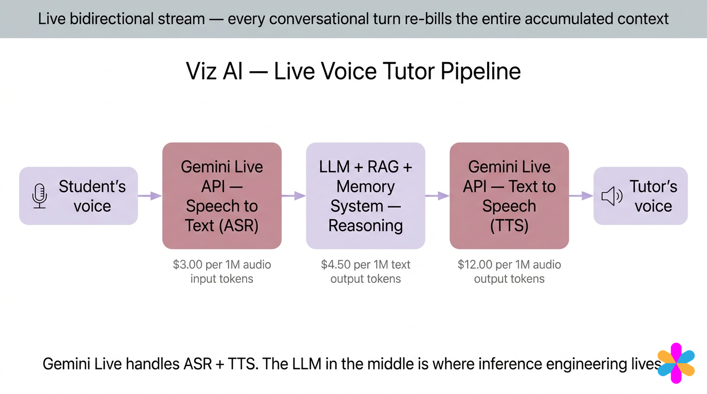
图 0.1。 四个阶段：学生的声音进入 Gemini 的语音转文字端点，转写文本进入我们的 LLM + RAG + 记忆层进行推理，响应文本被送到 Gemini 的文字转语音端点，音频再流回学生。每一轮对话都会对整段累积上下文重新计费。图中是一条四阶段的水平流程。首尾两阶段是按 token 计价的 Gemini API（音频输入 $3.00 / 1M tokens，音频输出 $12.00 / 1M）。中间阶段——LLM 加上检索增强生成（RAG）加上记忆——才是推理工程真正所在之处，也是我们想自己掌握的那一块。注意流水线上方的横条：每一轮都按完整累积上下文计费，意味着对话越长，成本复合增长得越狠。一个已经聊了 20 分钟的学生，每一轮新请求都在为第 1 到第 19 分钟的上下文付钱。
系统本身确实很好。学生喜欢它。但上线几周后，我的开发者走进办公室说：
「Raj，这撑不住。成本在往上堆。」
我们来算一算单次 30 分钟辅导会话的账。Gemini Live 对四条流按 token 收费——学生语音入、导师语音出、RAG 上下文入、LLM 推理出——而且每一轮对话都是对迄今为止的全部累积上下文计费，而不只是新 token。
| 组成部分 | 费率 | 每 30 分钟会话 |
|---|---|---|
| 音频输入（学生声音） | $3.00 / 1M tokens | $0.075 |
| 音频输出（导师声音） | $12.00 / 1M tokens | $0.270 |
| 文本输入（RAG、记忆） | $0.75 / 1M tokens | $0.150 |
| 上下文累积开销 | ~2× 倍数 | $0.500 |
| 每会话合计 | ~$1.00 |
每会话一美元听起来还能接受。到 10,000 日活学生时就变成每天 $10,000，闭源 API 上最高可达每月 $300,000。那是潜在账单——当每个请求都走 Gemini 或 GPT-5 这类闭源 API 时，团队可能支付的上界。关键在于这个数字不是固定的。把同样的工作负载挪到你自己托管的开源模型上，不是省几美元，而是塌缩一个数量级以上。图 0.2 把对比说具体。
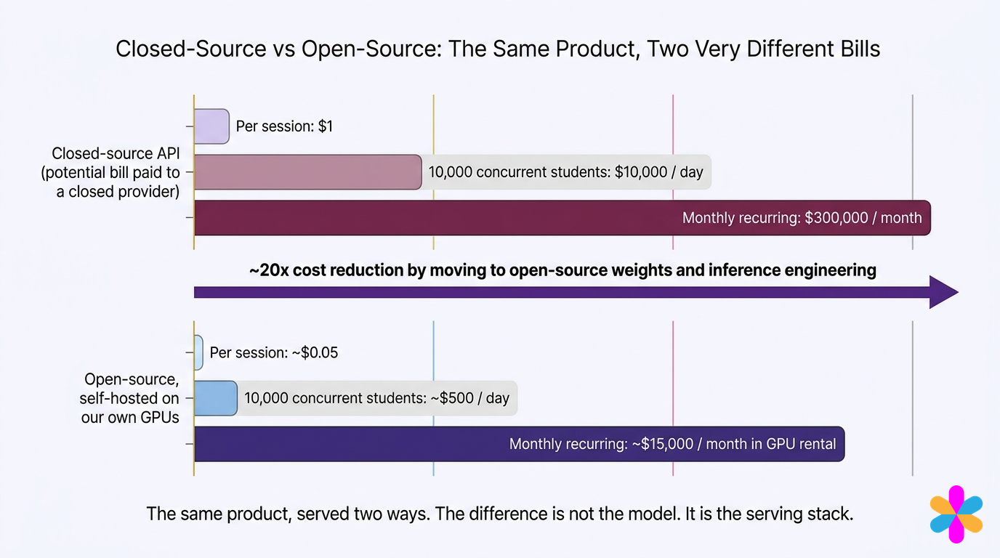
图 0.2。 同一产品、同一用量，两种服务方式。上行是潜在闭源账单：每会话 $1，10,000 并发学生时每天 $10,000，最高每月 $300,000。下行是同一工作负载在我们自己 GPU 上用开源权重服务：大约每会话 $0.05，每天 $500，GPU 租用约每月 ~$15,000。差别不在模型。在于服务栈（serving stack）。图 0.2 里的三根柱不是预测，也不是最坏情况；它们是真实定价乘以真实用户数的简单乘法。「每会话 $1」在「× 10,000 学生」这个乘数落地之前看起来还能撑。「每月 $300,000」才让问题无法忽视。到了这个规模，自托管不是优化，而是生存。而且按政策，Gemini 会看到每个学生每句话。对一家在意数据主权的教育公司来说，单凭这一点就不可接受。
唯一可持续的动作：下载一个开源模型，自己托管，用自己的 GPU 去服务它。
我们不需要训练模型。Meta 的 Llama-3 免费。Google 的 Gemma 免费。DeepSeek 的权重免费。挑战不是「我们能不能拿到模型」，而是下载之后发生什么。那就是推理工程，而它必须回答的问题毫不留情：
- 首 token 时延（TTFT，Time to First Token）。 学生说完后，导师在多少毫秒内开始说话？如果是 3 秒，对话就碎了。我们需要低于 300 ms。
- token 间时延（ITL，Inter-Token Latency）。 声音一旦开始，token 以什么速率流出？任何卡顿都会让幻觉崩塌。我们需要每个 token 低于 30 ms。
- 吞吐量（Throughput）。 同时在线 10,000 名学生，每人在自己的私密会话里。我们需要在租来的硬件上吞下数千个并发推理请求。
我问开发者：「我们怎么同时把这三个指标都拉到最大？」
他说：「Raj，关键不在模型。在于你怎么服务模型。那是另一门学科。」
那门学科就是本书的主题。Vizz AI 是我们自己的警钟，而我相信，在你正试图交付的任何产品里，也有一个版本的同一故事。
离开这一节之前，我想回应每个工程师此刻都会提出的那个反驳：「当然，但开源模型比闭源差，对吧？所以你只是用更低质量换省钱？」 这个反驳在 2023 年成立。在 2024 年大体成立。到 2026 年春天，它已经不再成立，而图 0.3 是说明原因最清晰的一张图。最佳闭源前沿（GPT-5、Claude Opus 4.5、Gemini 2.5 Pro）与最佳开源模型（Llama 4、Qwen 3、DeepSeek V3）之间的质量差距，已从 2023 年大约二十个基准分缩小到 2026 年大约三分。除了最狭窄的那类前沿推理工作负载外，你现在可以挑一个足够好的开源模型，瓶颈于是转移到如何服务它。
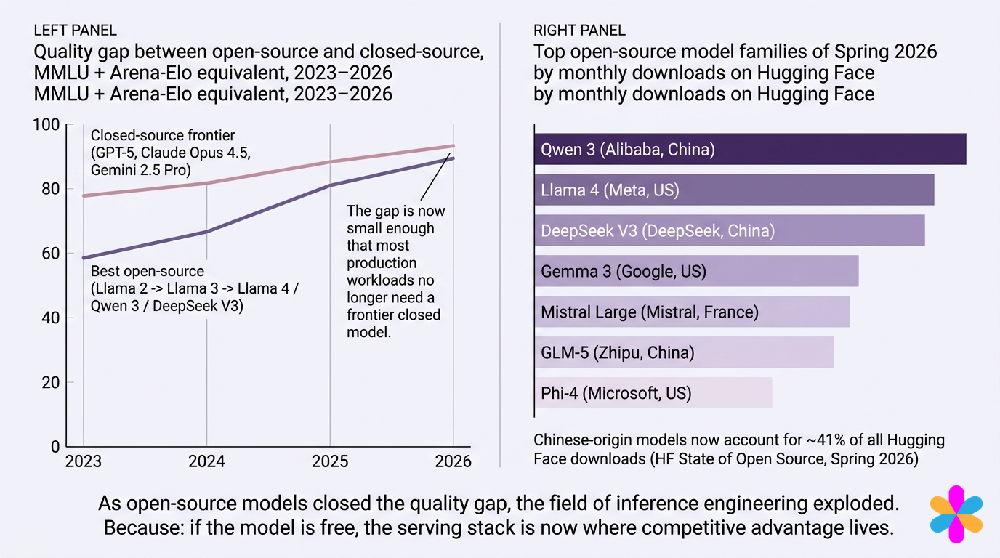
图 0.3。 左图：2023–2026 年间闭源前沿与最佳开源模型之间不断收窄的质量差距。右图：2026 年春 Hugging Face 下载量前列的开源家族。前六名中现有三个源自中国（Qwen、DeepSeek、GLM），据 State of Open Source on Hugging Face, Spring 2026，中国起源模型约占 Hugging Face 全部下载量的 41%。对推理工程师而言，要点很简单：当模型免费时，产品的竞争优势完全转移到服务栈。这就是为什么作为一门领域的推理工程，在过去十八个月里爆炸式增长。0.2：认识 DynaRoute：为什么不是每个查询都该打到同一个模型
Vizuara 的第二个产品：DynaRoute（dynaroute.vizuara.ai）。DynaRoute 提出一个大多数公司拒绝问的挑衅性问题：
为什么每个查询都该走同一个 LLM？
一个学生问「2 + 2 等于多少？」不需要 GPT-5。一个学生问「从第一性原理推导 Navier-Stokes 方程」也不该落在 1B 参数模型上。今天，几乎每一个企业 AI 部署都把每个查询——简单、中等、困难——路由到手头最强的模型。账单巨大，而其中大部分浪费在琐碎查询上。
DynaRoute 在模型池前面插入一个意图分类器（intent classifier）。架构如图 0.3 所示。
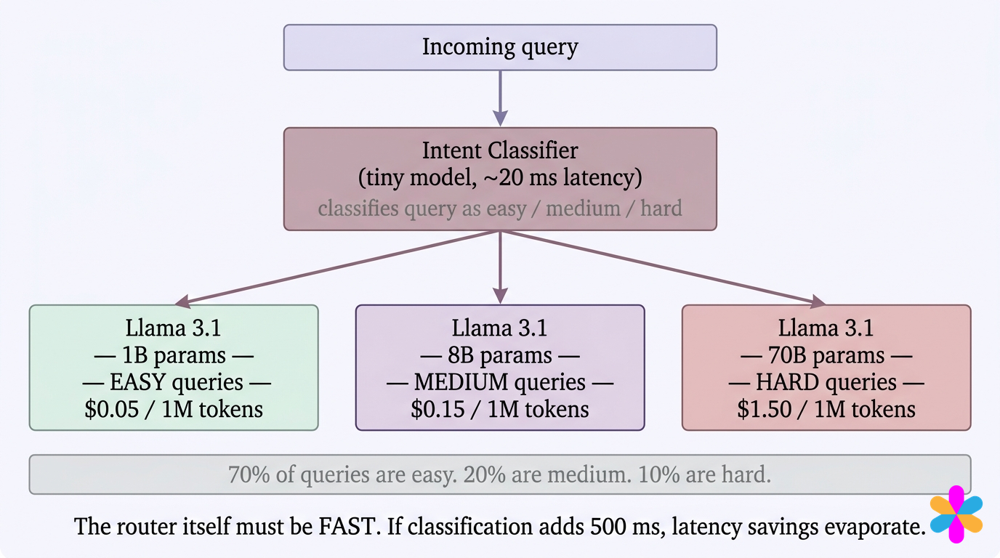
图 0.3。 每个入站查询先打到一个微小、快速的分类器（约 20 ms 延迟），标注为简单、中等或困难。分类器再路由到三个体量递增的 Llama 模型之一：1B、8B 或 70B。每个模型有自己的每 token 价格。在图 0.3 里，分类器被刻意画得与三个下游模型一样显眼。因为在实践中，分类器必须命中比它路由到的任何模型都更紧的延迟目标。如果分类器用 500 ms 才决定查询去哪，我们就在推理开始前给每个请求加了半秒；而对一个 1B 模型本可在 200 ms 内答完的「简单」查询，整点意义就被抵消了。所以分类器本身就是一个生产推理系统：小模型、激进量化，跑在同一条栈上，用我们即将学会优化的同一套指标。
如果 70% 的查询可标为简单、20% 中等、10% 困难，经济学就会改写。图 0.4 给出每百万查询的对比。
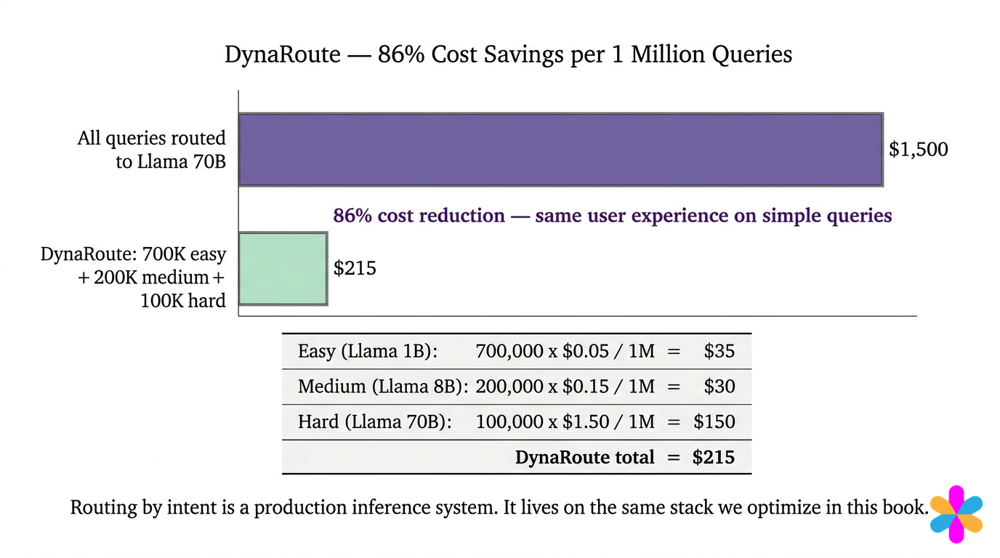
图 0.4。 把每个查询都路由到 Llama 70B 要花每 1M 查询 $1,500。按意图路由（700K 简单 + 200K 中等 + 100K 困难）只要 $215。那是 86% 的削减，而简单查询上的用户体验没有可测变化。图把分解写得很清楚：简单查询只要 $35，中等 $30，困难 $150，合计 $215。那条「全部打到 70B」的 $1,500 基线，几乎全是浪费在 1B 模型本可正确回答的查询上的算力。每一个在 2026 年仍部署「一个模型打天下」策略的企业，都在把大约 80% 的 LLM 预算留在桌上。推理工程师走进任何新产品时的第一个问题是：我们所有的查询真的都需要最大的模型吗？
| 方案 | 每 1M 查询成本 |
|---|---|
| 全部查询 → Llama 70B | $1,500 |
| DynaRoute：700K 简单 + 200K 中等 + 100K 困难 | $215 |
| 节省 | 86% |
注意这件事要成立，必须满足什么。分类器本身必须快。如果路由器在小模型开始之前就加了 500 ms 延迟，我们省了钱，却毁了用户体验。分类器必须只增加 20 ms 或更少。它必须是一个微小模型，用与背后大模型同样的纪律去服务。那也是推理工程。
也要注意路由器承受不起什么。它不能经常判错。如果它把「推导 Navier-Stokes」送到 1B 模型，而答案丢人，品牌就受伤了。所以分类器本身就是一个生产推理系统：有自己的 TTFT 预算、自己的质量门槛、自己的并发故事。推理工程叠在推理工程之上。
在 Vizz AI 与 DynaRoute 之间，Vizuara 的工程工作几乎全在服务层（serving layer），而不在训练层。我发现，跟我谈过的每一家认真的应用公司都是如此。他们都在试图回答同一个问题：
我们如何拿一个开源模型，以生产级质量、快速、便宜、可扩展地服务它？
这就是推理工程的定义，而本书的存在就是为了完整回答这个问题。
0.3：推理谱系：不是一种服务，而是七种
推理不在一个地方跑。它跑在一个硬件谱系上，每一层都有自己的墙钟性能与约束。
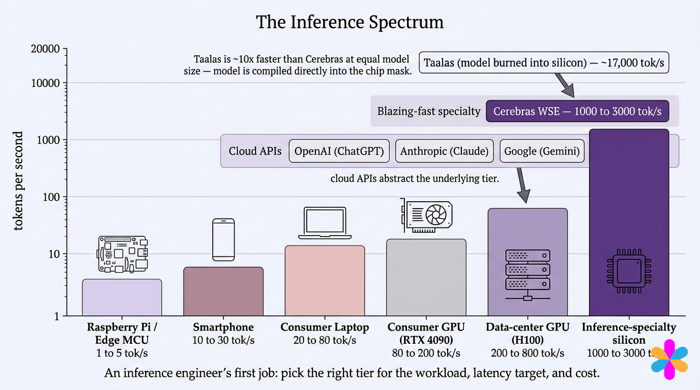
图 0.1。 推理跑在六级硬件上：Raspberry Pi、手机、消费级笔记本、消费级 GPU、数据中心 GPU，以及专用推理硅片。云 API（OpenAI、Anthropic、Gemini）抽象掉底层层级。专用硅片（Cerebras、Taalas）在每秒 token 数上自成一类，高于云 API。图中按从弱到强排列六级硬件。最左是边缘微控制器或 Raspberry Pi，对 125M 参数模型跑 1–5 tokens/秒的推理引擎，适合低带宽离线应用。最右是专用推理硅片。Cerebras 靠把整个模型装进一片晶圆级芯片（900,000 核，无片外内存，没有要对抗的内存层次）达到 1,000–3,000 tokens/秒。Taalas 走得更远。Taalas 字面上把训练好的模型烧进硅掩膜：每个权重变成一个晶体管，每个激活变成一根线。得到的 ASIC 只跑那一个模型，但跑到~17,000 tokens/秒，在相同模型规模下大约比 Cerebras 快十倍。
在硬件谱系之上、独自漂浮的是云 API。OpenAI、Anthropic、Google——它们的端点完全抽象掉底层层级。当你调用 GPT-5 时，你不知道它跑在 H100、B200 还是 TPU 集群上。你为 token 付钱，然后收到 token。代价是便利。隐藏代价是：你的延迟、数据隐私、每 token 价格，全由提供商自己的推理栈设定，而如果他们能改进推理栈，你受益；如果他们不能，你的产品就卡住。
推理工程师的第一个决策是：这个工作负载属于哪一层？ 实时语音导师需要消费级或更好；批摘要任务可以夜里跑在消费级 GPU 上；个性化推荐器可以住在用户手机里。一个产品可能同时用三层。
0.4：端侧推进，由 Apple 领衔
谱系上有一层值得单独成节，因为它最有可能在未来两年改变行业形态。
Apple 并不训练前沿大语言模型。它也不想。Apple 想要的——以及它的硬件四年来一直指向的——是让每一台设备都在本地、在用户已经拥有的硅片上跑推理，完全没有云往返。
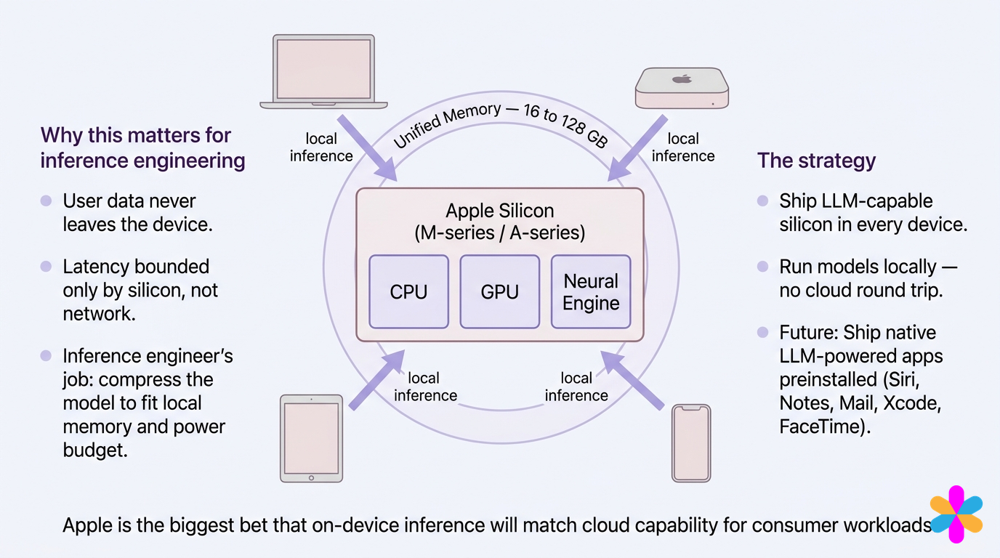
图 0.2。 Apple 的策略：在每台设备（MacBook、Mac mini、iPad、iPhone）上交付具备 LLM 能力的硅片，经由共享统一内存的 CPU/GPU/Neural Engine 在本地跑模型，并在未来预装带 LLM 功能的应用。用户数据永不离开设备；延迟只受硅片约束，不受网络约束。图中展示四台 Apple 设备——MacBook Pro、Mac mini、iPad、iPhone——各自连到同一个底层 Apple Silicon 块（CPU + GPU + Neural Engine），外包一圈统一内存环。这块硅片的关键属性是统一内存架构（unified memory architecture）：CPU 与 GPU 共享同一块物理 RAM，因此把模型从 CPU 挪到 GPU 不需要内存拷贝。一台带 128 GB 统一内存的 M 系列 Mac，可以完整装下一个 FP8 精度的 70B 参数模型，无需切分，也无需从磁盘流式加载。
Apple 的赌注是：未来两年内，每一款在 macOS 与 iOS 上交付的应用都将自带 LLM 驱动功能——预装、本地运行、对 Apple 零每 token 成本、零数据离开设备。Siri 成为真正的助手。备忘录会摘要。邮件会起草回复。FaceTime 会转写。对 Apple 而言，每设备成本为零。隐私叙事是业内最强的。
对推理工程师来说，问题随之转移。端侧（on-device）推理必须塞进 4–12 GB 内存（手机）或 16–128 GB（Mac），不能依赖巨大热预算，也不能依赖数据中心溢出。我们将在本书中学习的技术——量化到 FP8 或 INT4、压缩注意力缓存、轻量投机解码——正是让端侧推理可行的技术。Apple 没有取代云；Apple 把端侧层变成了每个想交付消费级 AI 的公司的一等工程目标。
那今天的 Alexa、Siri 和 Google Assistant 呢？它们都试图做端侧推理，又都败在最难的那一块：延迟。你跟今天的 Alexa 说话时，音频上云、转写、文本路由到住在 AWS 里的 LLM、响应回来、某处跑 TTS、音频再流到你的音箱。往返是 1.5 到 3 秒。原因是推理工程——还没有人交付过一个完整 LLM 住在设备上、并在 300 ms 内响应的消费级语音助手。那是一个开放的工程问题。Apple 最接近。谁先解决，谁就拥有消费级 AI 的下一个十年。
图 0.4 精确捕捉了这对用户意味着什么。拿一个问题：「什么是黑洞，为什么它们会出现在星系中心附近？」问 Alexa，你会得到检索优先、像网页链接一样的回答，因为 Alexa 背后的服务栈还没升级到实时流式输出现代 LLM。把同一问题丢进任何现代聊天界面，你会得到一段连贯、段落长度、流式输出的答案。能够正确回答它的模型已经存在多年。在 Alexa 或 Siri 内部尚未存在的，是在家居助手音箱上、以 300 毫秒预算实时服务该模型的推理工程栈。这是我所知最干净的演示之一：今天消费级 AI 的瓶颈不是模型质量。是服务。
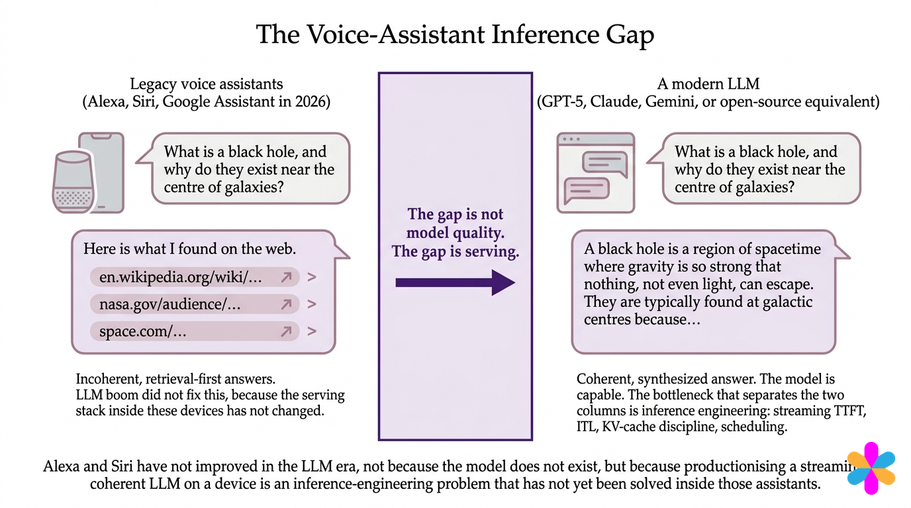
图 0.4。 左：遗留语音助手（Alexa、Siri、Google Assistant）对普通用户问题返回不连贯、检索优先的答案。右：现代 LLM 对同一问题返回连贯、流式、段落长度的答案。右栏背后的模型存在。两栏之间的鸿沟，是把它们放进实时语音产品所需的推理工程栈——流式 TTFT 低于 300 ms、纪律严明的 KV cache、仔细的调度。在那条栈装进消费级助手之前，就客厅音箱而言，LLM 热潮其实还没有真正发生。0.5：推理工程师实际在做什么
这份工作是一个循环。图 0.5 勾勒了它。
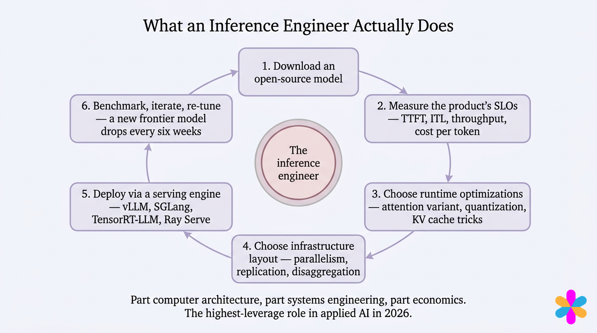
图 0.5。 六个站点排成循环：下载模型、测量产品的 SLO、选择运行时优化、选择基础设施布局、通过服务引擎部署、基准测试并迭代。循环大约每六周重启一次，因为前沿开源模型差不多以这个频率刷新。图说明了为什么这份工作是一门学科，而不是一次性项目。站点 1——下载模型——是最容易的一步；谁都能做。站点 2 到 6 才是本书全部技术内容所在。站点 2 问产品真正需要什么：语音导师需要 TTFT 低于 300 ms，批摘要器不需要。站点 3 是运行时层（runtime layer）——注意力变体、量化、KV cache 技巧，我们会把本书大部分篇幅花在这个内环上。站点 4 是基础设施层（infrastructure layer）——如何在多块 GPU 上复制、并行与解耦。站点 5 是工具层（tooling layer）——哪个服务引擎（vLLM、SGLang、TensorRT-LLM、Ray Serve）让站点 3 与 4 可部署。站点 6 是基准测试，不可商量：你若没有前后测量，就不知道系统是否改进。
最后那个回环很重要。大约每六周就会掉落一个新的前沿开源模型。每个新模型有不同的架构选择、不同的头数、不同的量化容忍度、不同的上下文长度——对 Llama-3 最优的栈，对 Llama-4 可能只是尚可，对 DeepSeek-V4 可能很糟。推理工程师不是交付一次；推理工程师持续交付，反复跑这个循环。
这就是这份工作。一部分是计算机体系结构，一部分是系统工程，一部分是数值分析，一部分是经济学。到 2026 年，它也是应用 AI 中杠杆最高的单一角色：Anthropic、NVIDIA、OpenAI、Microsoft、AWS、Apple、Red Hat，以及每一家认真的产品公司，都在以能招多快就招多快的速度组建推理工程团队。薪酬反映了这一点。
本书的任务，是让你成为图 0.5 中心的那位工程师。
你必须按这个顺序学习的三层
推理工程中的每一个决策、工具与技术，都住在三层之一。把它们想成同心环：内环必须先掌握，外环才有意义。图 0.6 是我想让你在本书剩余部分一直揣在脑子里的那一张图。
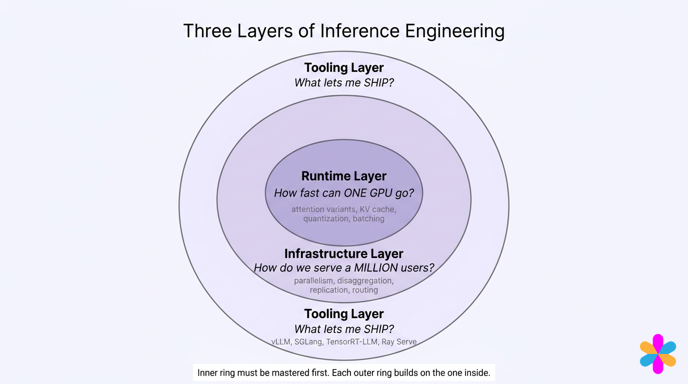
图 0.6。 三个同心环。最内环是运行时层（runtime layer）——一块 GPU 能被推到多快的问题。中环是基础设施层（infrastructure layer）——如何通过协调多块 GPU 服务一百万用户的问题。最外环是工具层（tooling layer）——哪个服务引擎与编排栈让你真正能交付的问题。顺序是严格的：内环必须先掌握，外环才有意义；全栈推理工程师是那个能坐在中心、同时跨三层推理的人。第 1 章会把这三个环拆成各自的组成技术；这里，先握住地图。0.6：运行时层：「一块 GPU 能跑多快？」
最内环。在你考虑如何扩展、挑选服务框架、核算云 GPU 价格之前，你必须理解如何把单个模型在单块 GPU 上跑到它所能达到的最快。
注意力变体住在这里（MHA、MQA、GQA、MLA、滑动窗口注意力、线性注意力、状态空间模型、Mamba）。内核优化住在这里（FlashAttention、PagedAttention、前缀缓存）。数值表示住在这里（FP16、FP8、INT4 量化、GPTQ、GGUF、QAT）。decode 循环本身的重排也住在这里（连续批处理、分块 prefill、投机解码）。
这一层的每一个优化，核心都在问同一个问题： 我如何让这块 GPU 每秒完成更多有用的工作？
0.7：基础设施层：「我们如何服务一百万用户？」
中环。一旦你知道一块 GPU 有多快，问题就变成：我们如何在几十、几百或几千块 GPU 上复制、协调并部署这种速度。
基础设施层技术关乎并行（parallelism）：张量并行把单次 matmul 在节点内的 GPU 之间切开；流水线并行把层切到跨节点；专家并行分发混合专家模型的专家；序列与上下文并行把长序列切到多设备，好让单个 128K-token 提示装得下。还有解耦的 prefill/decode（disaggregated prefill/decode）：把 prefill 放在一池 GPU 上，decode 放在另一池，这样一名用户的长提示就不会卡住另一名用户的流式响应。
基础设施关乎编排、拓扑、网络（NVLink vs InfiniBand）与复制。关乎「一块 GPU 不够了」的那个真相时刻。
0.8：工具层：「什么让我能交付？」
外环。没有人为每个新产品从零写一个 FlashAttention 内核。我们站在服务引擎的肩膀上：vLLM、SGLang、TensorRT-LLM、Hugging Face TGI、Ray Serve、Modal。每一个都是内环运行时与基础设施技术的打包，外加一个让工程师用小时而不是月去部署的表面。
工具层是推理工程师生产力的来源。最里面的两环，是工程师能够选择并调优工具的原因。
一名合格的推理工程师坐在三个环的交汇处。 不懂运行时层，你的工具选择就是任意的。不懂基础设施层，你的运行时优化就无法扩展。不懂工具层，你就无法交付。本书按顺序覆盖全部三层。
本书如何组织
你正在读第 0 章。在接下来的二十六章里，本书会带你从刚读过的动机出发，走过我点名过的每一项技术，顺序正是推理工程师遇见它们的顺序。完整旅程铺在图 0.6 里。
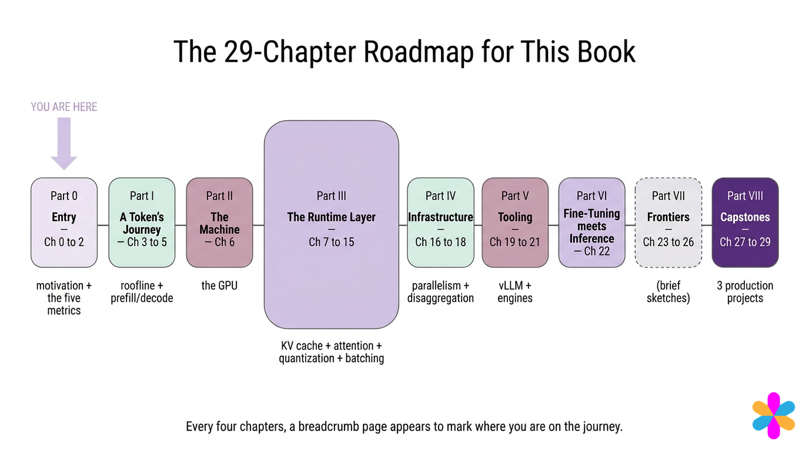
图 0.6。 八个部分、二十六章。最宽的那一块——第三部分，运行时层——最大，因为它是本书的心脏：九章讲 KV cache、注意力变体、量化与批处理。你现在在第 0 部分。每四章有一页「面包屑」标记你在地图上的位置。第 0 部分（你所在之处）是动机与五个指标。第一部分带一个 token 从嵌入表走过 prefill 与 decode，并引入GPU roofline——我们几乎会在后续每一章回来的那一张图。第二部分是一章 GPU 硬件本身，只讲触及推理决策的部分。第三部分——图 0.6 最宽的那块——是本书的心脏：九章运行时层技术。第四部分是基础设施；第五部分是工具；第六部分是微调；第七部分是前沿（多模态与具身推理）；第八部分是三个你将端到端构建的顶点项目。
第一部分，一个 Token 的旅程。 当一个 token 进入 transformer 时实际发生了什么，以及为什么推理不同于预训练。第 1 到 5 章。
第二部分，透过推理看 GPU。 一章硬件。不是完整的 GPU 体系结构教材，只讲触及推理决策的部分。第 6 章。
第三部分，运行时层。 本书的心脏。注意力变体、KV cache、FlashAttention、PagedAttention、量化、连续批处理、投机解码。第 7 到 15 章。
第四部分，基础设施层。 并行与解耦、复制与路由。第 16 到 18 章。
第五部分，工具层。 深入 vLLM，以及 2026 年的引擎格局。第 19 到 21 章。
第六部分，微调遇见推理。 LoRA、蒸馏、潜意识学习实验。第 22 章。
第七部分，推理的前沿。 多模态推理（语音、音频、视频）与具身推理（世界模型、机器人流水线），收成一章定位章。第 23 章。
第八部分，顶点项目。 三个动手项目：速度优化的推理服务器、在 Modal 上把该服务器扩展到一百万用户，以及 OpenClaw-RL——一个把每次对话变成训练数据的自我改进 WhatsApp 助手。第 24 到 26 章。
每一章遵循同样的三段节奏：先是动机与缺口，再是机制，然后是数值收益以及它落在 GPU roofline 上的哪里。几乎每一章结尾都会把它的技术放到一张共享图上——你将在第 3 章首次遇见、并在之后每个运行时章再次遇见的GPU roofline。
每四章，我们停下来放一块面包屑（breadcrumb）——一页短文，回顾你已覆盖的内容并指向下一步。你报名了一段二十六章的旅程；在地图上标出位置会有帮助。
0.9：我为谁而写，以及这本书为何存在
让我诚实告诉你这本书为何存在。关于训练大语言模型的材料并不短缺：论文、课程、Andrej Karpathy 的讲座、一整架教科书，以及——正如本章开头提到的——我自己的 Build an LLM from Scratch 系列。但当我终于决定以我学会教训练的方式去教推理——从第一性原理出发，把所有矩阵乘法摊在纸上，用你能感到每个字节从 HBM 被加载的演算例子——我找不到对等的书。材料存在，散落在 vLLM 源码、NVIDIA 博客、Dao 的 FlashAttention 论文、SGLang 的设计文档、DeepSeek 的技术报告，以及一百次播客露面里。但没有一个单一的地方，让一名认真的工程师可以坐下来学完整门领域：从一块 GPU 上的一次算术强度计算，一直到多区域服务集群，数学可见，直觉被大声命名。
于是我决定写它。这本书的目标，很简单，就是填补那个缺口。把你一路带到 matmul 层面，再一路带回生产栈，用一个连贯的故事。我把每个想法都拴到一个视觉上（你会在图 0.6 看到的旅程地图、第 3 章遇见的 roofline、第 1 章的三个同心环），并拴到一个具体实践上（可运行代码、真实基准数字、第 24 到 26 章你可以在自己硬件上构建的三个顶点项目）。
我写给这样的工程师：用过 OpenAI 或 Anthropic API，知道矩阵乘法是什么，在 PyTorch 里见过 transformer，现在想理解当那个 transformer 被服务时真正发生了什么。你不需要事先知道算术强度是什么，或 MLA 做什么，或 KV cache 在 HBM 里长什么样，或为什么会发明 FlashAttention。这些想法每一个都会在后面的章节里从零建起。我不会要求你凭信仰接受任何东西。
我的希望是：当你读完第 26 章最后一页时，你会像我最终看见的那样看见这门领域之美——一门深深数学、深深实践、深深属人的手艺。并且，具体地说，你可以走进 2026 年任何一场认真的工程面试，回答几乎每一个基础设施团队现在都会问的那个问题：
「设计一个处理数百万请求的低延迟、高吞吐 LLM 推理系统。带我走一遍工程权衡。」
读完这本书时，那个问题应该不再像面试谜题，而更像你在读这些页面时已经与自己进行过许多次的对话。
0.10：接下来去哪
下一章——第 1 章：三层架构——会把你刚看到的运行时/基础设施/工具地图拆开，把每个环讲透。到第 1 章结束时，你将能点名本书中的每一项技术，并把它放到正确的环上。
第 1 章：三层架构
在第 0 章里我们已经给它们起了名字：运行时（runtime）、基础设施（infrastructure）、工具（tooling）。那只是贴了标签。本章要把这个标签说清楚。读完第 1 章，你应当能指着本书中的任何一项技术——FlashAttention、张量并行（tensor parallelism）、vLLM、分块 prefill（chunked prefill）、投机解码（speculative decoding）、NVLink、MLA——说出它属于三层中的哪一层、它回答什么问题、以及它为何存在。
这一点很重要，因为后续每一章都在隐式地问同一个问题：这属于哪一层，它改变了什么？ 若你没有地图，这些技术会显得随意；若你有地图，每一章都会各就各位。
让我们从多数工程师会跳过的那个问题开始。
跳过某一层会出什么问题？
1.1：2026 年应用 AI 中最常见的失败模式
一家初创公司招来一位扎实的机器学习工程师。他们有产品想法。工程师做了最显而易见的事：选一个模型（比方说 Llama-3-8B），选一个服务引擎（vLLM，因为人人都在用），推到云端 GPU 上，然后上线。
前一千个用户还好。随后流量飙升。首 token 时延（time to first token）从 300 ms 跳到 2.4 秒。工程师加了一块 GPU，又加第三块。成本翻了三倍。产品感觉比以前更慢，而不是更快。客户抱怨。投资人追问。工程师盯着 vLLM 配置，却不知道那 40 个开关该拧哪一个。
问题不在于工程师不行。问题在于工程师只选了一层——工具层（tooling）——而跳过了另外两层。vLLM 是非凡的软件。它也不是魔法盒子。若你不理解其下的运行时层（runtime layer），你就调不动它的开关；若你不理解其外的基础设施层（infrastructure layer），你就无法在吞吐不崩成时延尖刺的情况下部署一个以上的副本。
这就是三层按这个顺序引入的原因。先运行时，因为它是单块 GPU 能有多快的真相。再基础设施，因为只有知道你在扩展什么，扩展才有意义。最后工具，因为工具是前两层的打包；在不理解里面是什么的情况下选工具，正是初创公司每月烧掉 10 万美元云账单却仍达不到 SLO 的方式。
本章余下部分按该顺序完整讲解每一层，这样当本书转向具体技术（第 7 章起）时，你确切知道每一项技术落在哪里。
精确地说：三层
1.2：把整栈看成三个同心环
图 1.1 是本书其余部分将要填满的那张地图。
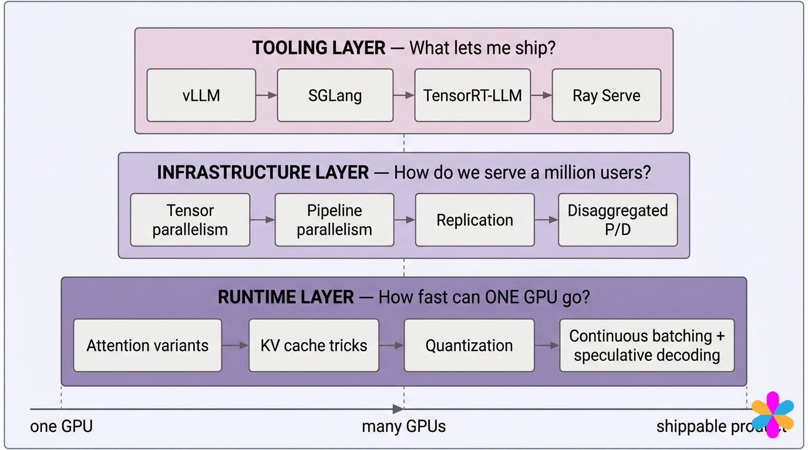
图 1.1。 一个纵向栈。底层：运行时层（runtime layer）——一块 GPU 能有多快。中层：基础设施层（infrastructure layer）——如何服务一百万用户。顶层：工具层（tooling layer）——把前两层打包的库。栈下方有一条横轴，从「一块 GPU」到「可交付产品」。关于图 1.1 有三点观察：
第一，这些层是堆叠的，而不是并行的。你无法在不理解运行时层的情况下推理基础设施层，因为基础设施层中每一种并行策略都会改变每 GPU 的算术强度（arithmetic intensity）；而你只有知道算术强度是什么——那是运行时层的概念——才能评估这种改变。
第二，这些层越往上越薄。运行时层有几十项技术，每一项都是不平凡的研究贡献。基础设施层只有少数几项——并行、解耦（disaggregation）、复制、路由——难点在其下的网络物理。工具层有四五种生产级引擎，以及它们之间的决策矩阵。到了顶层，你是在已知量之间选择；到了底层，你是在发明。
第三，图 1.1 下方的横轴很重要。从左到右，是从一块 GPU到多块 GPU再到已部署产品。这不只是规模问题；每一步都会改变可用的技术集合。一块 GPU 的问题与一千块 GPU 的问题，并不是「批更大」的同一问题——它们在质上不同，本书的结构也反映了这一点。
现在让我们逐层细看。
1.3：运行时层：「一块 GPU 能有多快？」
运行时层只回答一个问题：给定一个已经加载到单块 GPU 上的模型，我如何让它每秒产出最多的有用 token？ 这就是全部范围。不是「我需要多少块 GPU」——那是下一层。不是「我该用哪个库」——那是上一层。只是：这块 GPU、这个模型，能有多快。
图 1.2 把运行时层拆成五大技术族。
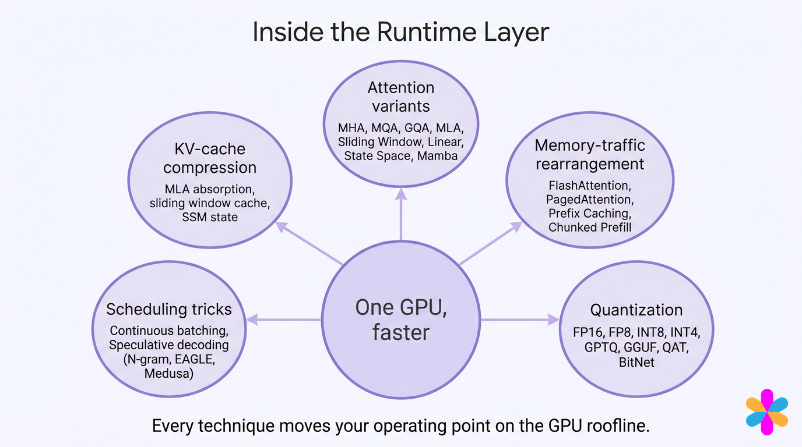
图 1.2。 五个技术簇围绕一个中心问题运转：「一块 GPU，更快」。每一个簇都是对 GPU 某一根本约束的一种突围，本书后续会用多章分别讲述。图 1.2 展示了五个簇。我先简要描述每一个；完整讨论从第 7 章开始，一直延续到第 15 章。
簇 1，注意力变体。 注意力机制，按 2017 年 Transformer 论文的原始定义，使用大量独立的「头（heads）」，每个头维护自己的 key 与 value。这称为多头注意力（Multi-Head Attention, MHA）。在推理时它很昂贵，因为每个头的 key 与 value 都必须为每一个历史 token 单独缓存，于是缓存随头数线性增长。推理工程师发明了多种缩小它的方法：多查询注意力（Multi-Query Attention, MQA），所有头共享一套 K 和一套 V；分组查询注意力（Grouped-Query Attention, GQA），把头分组，每组共享一对 K/V；以及多头潜在注意力（Multi-head Latent Attention, MLA），通过更低维的潜在空间压缩 K 与 V。每一个现代前沿开源模型（Llama、Qwen、DeepSeek、Mistral）都使用这三者之一。
簇 2，跨 token 压缩注意力。 即使你已经跨头做了压缩，一个更顽固的问题仍然在。注意力缓存按定义随对话长度增长。如果两个用户坐在同一块 GPU 上，一个处于十 token 聊天的第三轮，另一个处于注入检索文档的长研究会话的第三百轮，第二个用户大约比第一个用户多消耗一百二十八倍的 KV 缓存内存。这种随上下文长度线性增长，正是为什么一块能轻松服务一百个短对话用户的 GPU，一旦用户开始粘贴长文档，就会塌缩到五个用户。一整族架构想法专门攻击这个问题，而每一种都用不同的东西做交换。滑动窗口注意力（sliding-window attention）说「我们干脆忘掉比最近 W 个 token 更老的一切」，这把缓存封顶在固定大小，但削弱了长程推理。线性注意力（linear attention）去掉 softmax，使过去的 key 与 value 可坍缩成一个恒定大小的运行状态，数学上优雅，但在依赖尖锐查找的任务上往往降低检索质量。状态空间模型（state-space models）把注意力改写成仍可通过卷积并行化的线性递推。Mamba 采用同样的状态空间想法，并使转移矩阵依赖输入，从而恢复纯线性递推所放弃的部分选择性。这些都不是免费午餐。现代生产架构很少押注其中任何一种；相反，它们在同一网络中把注意力层与 Mamba 或 SSM 层混合，既保留一方的缓存节省，又保留另一方的精确检索。教训是：「跨 token 压缩」并不是一个有单一正确答案的已解决问题。它是一份权衡菜单，推理工程师在选择混合方案之前必须理解。
簇 3，内存流量重排。 我告诉刚开始学推理的工程师时，最令人惊讶的一点是：对单用户 decode 步而言，现代 GPU 大约百分之九十九的墙钟时间花在搬字节上，而不是在上面做计算。GPU 的内存层级有三个要紧的档次：片上 SRAM（每个流式多处理器几十 KB，快得离谱）、L2 缓存（几十 MB，仍然很快），以及 HBM（几十 GB，人人都在说的慢档）。标准注意力若天真实现，每层会多次从 HBM 读写完整的注意力分数矩阵，就像为每一颗螺丝钉都往仓库跑一趟再回来。这一簇技术全是在重排这类内存流量。FlashAttention 对计算做分块（tile），使分数矩阵根本从不真正落在 HBM 里；它在片上 SRAM 内被构建、使用、丢弃。PagedAttention 借用操作系统的虚拟内存思想：不再为每个用户按最坏情况过度分配 KV 缓冲区，而是把缓存切成小的固定大小块，塞进任何有空位的地方，于是 GPU 能容纳更多并发用户。前缀缓存（prefix caching）注意到每个用户请求的前几千个 token 往往相同（你的系统提示、检索模板、重度用户的公共聊天历史），并拒绝为这些 token 第二次重算 key 与 value。分块 prefill（chunked prefill）把长提示切成更小的片段，使一个用户的三千 token 提示不会把所有正在 decode 的其他人冻住。这些技术各自曾是一篇研究论文，如今每一项都是 vLLM 配置文件里的一行。第 10 到 12 章会逐一讲解。
簇 4，量化（quantization）。 一个 700 亿参数模型的权重，以 FP16 存储占 140 GB。在一块只有 80 GB HBM 的 H100 上，模型装不下。量化是把权重压缩到更低精度格式的艺术——FP8、INT8、INT4，甚至 1.58 bit——同时保留足够质量使模型仍然可用。这既是每 token 的字节节省（更少的 HBM 流量），在合适硬件上，也是每操作的 FLOP 节省（张量核心在低精度数据上能跑得更快）。GPTQ 与 AWQ 是训练后量化算法；QAT 是量化感知微调；BitNet 把极限推向三元权重。
簇 5，调度技巧。 即便有了以上全部，decode 循环仍是每个用户每次前向传播只发出一个 token，这让 GPU 大部分时间空闲。连续批处理（continuous batching）把许多用户的 decode 请求打进同一次前向传播，使权重只加载一次却服务许多 token。投机解码（speculative decoding）用一个便宜模型往前猜若干 token，再由昂贵模型在单次前向中验证——当猜测够准时，这是免费的 2–4× 加速。
贯穿五个簇的共同线索是一句话：
每一项运行时层技术，都是试图从同一块 GPU 上每秒榨取最大有用功。
这里有用这个词很要紧。人们很容易把运行时层读成纯粹的吞吐游戏：挤出最多的每秒 token，到此为止。那几乎对，但不完全对。Token 只有在保持模型回答质量与未优化时一样好时才算数。例如，滑动窗口注意力对缓存大小很棒，却可能悄悄损害长程推理。这就是为什么现代架构把状态空间或 Mamba 层与标准注意力混合，而不是整块替换注意力：我们既要缓存节省，也要质量。本书中每一项技术都同时在两个轴上评判——每秒 token，以及这些 token 的有用性。一种把吞吐翻倍却默默把回答质量减半的方法，不是优化，而是回退。
每秒最大有用功表现为更高吞吐、更低时延，或两者兼有，且没有质量回退。每个簇攻击不同的瓶颈——注意力缓存、内存层级、权重字节预算，或调度粒度——但它们都归结到同一度量。第 3 章将引入GPU roofline（屋顶线）图，这是本书把每一项技术放到同一张公共图上的方式。从第 6 章到第 17 章，我们几乎每一章都会回到那张图。
1.4：基础设施层：「我们如何服务一百万用户？」
一旦单块 GPU 已跑到极限——每一项注意力优化都用上了，最佳量化方案就位，连续批处理开着，投机解码在工作——问题就变了。产品的用户比一块 GPU 能吞下的更多。现在怎么办？
基础设施层是协调多块 GPU、多个节点、多个区域，以满足多用户服务等级目标（SLO）的那套技术。它是中间那一环。
图 1.3 把它拆开。
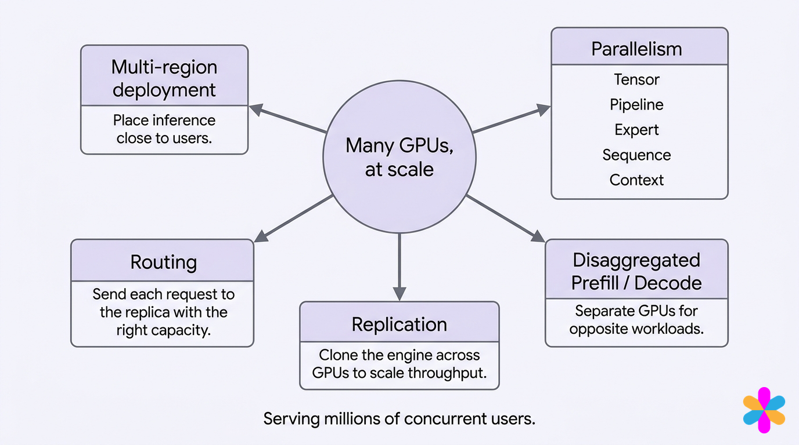
图 1.3。 五项技术围绕一个中心问题运转：「多块 GPU，按规模」。并行把单个模型拆到多块 GPU；解耦把相反的工作负载放到特化的 GPU 上；复制克隆引擎；路由引导流量；多区域把推理放到靠近用户的地方。五项技术，每一项解决一个特定的协调问题。
并行（parallelism）。 一个以 FP16 存放的 70B 模型是 140 GB，装不进一块 80 GB 的 GPU。于是模型必须拆到多块 GPU 上。有五种正交的拆法，基础设施层工程师的第一项技能是知道哪一种匹配工作负载：
- 张量并行（tensor parallelism）按列拆分每一次矩阵乘。每块 GPU 持有权重矩阵的一条带，部分输出通过 AllReduce 合并。因为 AllReduce 在每一层都跑，张量并行很吃带宽——它想要你只有在同一服务器节点内的 GPU 之间才能得到的约 900 GB/s 的 NVLink 互联。
- 流水线并行（pipeline parallelism）按层组拆分模型。GPU 0 持有第 1 到 20 层，GPU 1 持有第 21 到 40 层，激活在其间流动。每层跨 GPU 流量远小于张量并行，这使流水线并行在你必须跨节点、走约 50 GB/s 的 InfiniBand 时成为正确选择。
- 专家并行（expert parallelism）是现代混合专家（mixture-of-experts）模型背后的技巧。每个专家（一个前馈子网络）住在不同的 GPU 上，一个轻量路由器决定对任意给定 token 唤醒哪些专家。它把一个 6000 亿参数的 MoE 模型变成每 token 成本大致相当于一个 300 亿参数稠密模型的东西。
- 序列并行（sequence parallelism）沿 token 轴拆分非注意力操作（LayerNorm、dropout、残差加法）。它是较小的优化，但与张量并行配合良好，并减少激活内存。
- 上下文并行（context parallelism）把单个极长上下文——想想一百万个 token——拆到多块 GPU 上，使该序列的 KV 缓存至少能装下。正是这项技术使百万 token 聊天成为可能，而无需单块 GPU 为单个用户持有上百 GB 的缓存。
并行是基础设施层中第一也是最大的技术族。每个超过数十亿参数的部署至少使用其中一种，生产栈经常同时组合三到四种。
解耦的 prefill/decode（disaggregated prefill/decode）。 Prefill 是算力受限（compute-bound）；decode 是内存带宽受限（memory-bound）。把它们跑在同一块 GPU 上会造成问题：当新用户带着 16,000 token 的提示到来时，prefill 饱和 GPU，其他所有用户的 decode 在此期间停滞。P99 时延从 50 ms 飙到 900 ms。解决方案是把 prefill 放在一组 GPU 池上，decode 放在另一组。Prefill 完成后在它们之间传输 KV 缓存。这是 NVIDIA 的 NIM 在跑的架构，也是 DeepSeek 在跑的架构，也是 vLLM v1 正在走向的架构。它是 2026 年最重要的生产服务技术。
复制（replication）。 水平扩展同一引擎。两个 vLLM 副本服务的用户数是一个的两倍。难点不在于跑两个副本，而在于供应得够快：当流量飙升时，新副本要在在途用户看到时延崩塌之前启动。冷启动（把 140 GB 权重加载进 HBM）要花好几分钟，所以生产系统保持一批热副本缓冲。
路由（routing）。 一旦你有许多副本，总得有东西决定哪个请求去哪里。对均匀工作负载，笨拙的轮询路由器够用，但真实工作负载并不均匀：有些用户有长系统提示，有些很短；有些需要快速响应，有些在跑批处理任务。智能路由使用每副本负载信号、前缀缓存感知，以及 SLO 标记，把每个请求匹配到最可能最快服务它的副本。这是服务机群的控制平面。
多区域部署（multi-region deployment）。 数据在光纤中大约以光速的三分之二传播。新加坡的用户与弗吉尼亚的 GPU 对话，在推理甚至开始之前就要付约 200 ms 的往返时延。对交互式工作负载（语音导师、语音助手），那是扼杀产品的预算。生产系统把同一引擎部署到多个云区域，并把用户路由到最近的一个。
贯穿基础设施层的共同线索又是一句一句话总结：
每一项基础设施层技术，都是试图把许多 GPU 协调得像一块一样。
这一层由拓扑与网络物理主导。NVLink 与 InfiniBand 的带宽比（大约 18:1）决定哪些并行策略在节点内可行、哪些必须跨节点。这不是事后做的选择；它是塑造架构的硬约束。我们将在第 16–18 章花在这一层上。
1.5：工具层：「什么让我能交付？」
没有人为每个新产品从零写一个 FlashAttention 内核。没有人为每个新模型从第一性原理实现张量并行。工具层是一套服务引擎（serving engines）——把下面两层的运行时与基础设施技术打包，并通过生产 API 暴露出来的软件包。
图 1.4 展示 2026 年要紧的四种引擎。
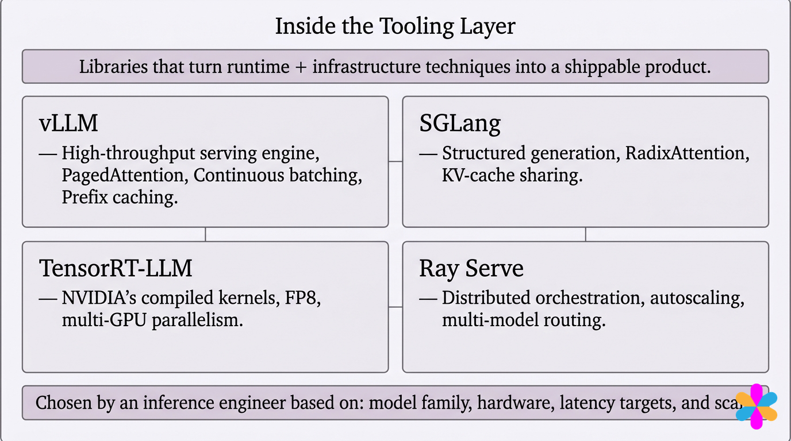
图 1.4。 四种生产服务引擎：vLLM（默认选择）、SGLang（结构化生成与 RadixAttention）、TensorRT-LLM（NVIDIA 的编译内核），以及 Ray Serve（分布式编排）。每一种打包了运行时层与基础设施层的不同子集。vLLM 是 2026 年几乎每一个新部署的默认选择。它是第一个交付 PagedAttention 的生产级引擎（2023），并在特性上持续领先：连续批处理、分块 prefill、前缀缓存、投机解码、多 LoRA 服务、引导式解码。它的调度器开源且被充分理解。社区大；发版节奏快。若你没有强理由用别的，就用 vLLM。
SGLang 是当你需要结构化生成——JSON schema、正则，或有限状态机约束输出——时的正确选择。它的RadixAttention 把前缀缓存索引成基数树，这意味着它能在无关查询之间找到最大共享前缀（不只是同一对话内）。对思维树（tree-of-thought）提示、智能体循环，以及结构化输出工作流，SGLang 优于 vLLM。
TensorRT-LLM 是 NVIDIA 的编译型服务引擎。它是 NVIDIA 硬件上性能最高的选项，代价是缓慢的编译步骤以及仅限 NVIDIA 的可移植性。它与 Hopper 的异步内存加速器以及 FP8 张量核心紧密集成。若你的模型已冻结、硬件是 NVIDIA、工作负载是高流量生产流量，TensorRT-LLM 会给你最好的每 GPU 吞吐。
Ray Serve 不是单一引擎的替代品——它是在 vLLM（或任何其他引擎）之上的编排层。它处理自动扩缩、多副本路由、多模型集成，以及跨 GPU 集群的分发。2026 年的生产参考架构是Ray Serve + vLLM：每个副本一个 vLLM 实例，Ray Serve 跨集群协调副本。
还有其他引擎（Hugging Face 的 TGI、LMDeploy、Together、Modal 的无服务产品），以及专用运行时（面向 CPU/Apple Silicon 的 llama.cpp、面向端侧的 MLC）。完整格局是第 20 章的主题。现在，一句话总结：
工具层的每一次选择，都是试图让运行时层与基础设施层在数小时而非数月内可部署。
工具层是三层中变化最快的。引擎每年重写自己，以纳入最新的运行时技巧。vLLM 的内部架构在 2025 年被大幅重写（「v1」重写）以处理解耦的 prefill/decode。预期这会继续：到 2028 年，默认引擎可能不再是 vLLM。然而，底层的运行时与基础设施技术，仍将是第 7 到 18 章所描述的那些。技术比包装更长久。
推理工程师活在交汇处
1.6：为什么三层必须同时重要
我们现在回到 §1.1 里的那家初创公司——那位工程师选了 vLLM 并寄希望于最好结果。错误不在 vLLM。vLLM 很出色。错误在于把工具层当成了整个栈。
图 1.5 用几何画出这一点。
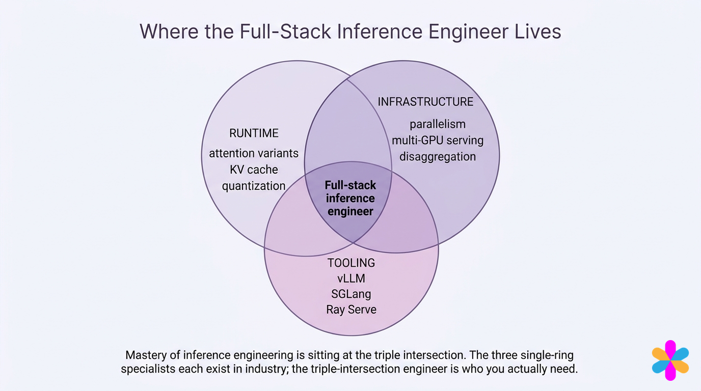
图 1.5。 三个重叠的圆：运行时、基础设施、工具。一位称职的推理工程师活在中心更深薰衣草色的三重交汇处。只懂任意一层或两层都不完整。组合解释了常见的失败模式。图中显示三个重叠的圆。每一对两两重叠，以及中心的三重重叠，都对应行业中的真实角色。值得把每一个说清楚。
仅运行时。 学术机器学习研究者，深入理解注意力变体与量化算法，却从未部署过模型。他们能写 FlashAttention 内核，却说不出上周部署达到了什么 ITL。对发明新技术有用；对交付产品没用。
仅基础设施。 云运维与 SRE 工程师，懂得如何扩展服务、负载均衡副本，以及按 CPU 利用率自动扩缩。他们能跑任何二进制的 100 个副本。他们会乐意跑一个未优化二进制的 100 个副本，然后纳闷为什么账单是每月 10 万美元。对跑服务机群有用；对让单个引擎变快没用。
仅工具。 §1.1 里的那位初创工程师。知道如何调用 vLLM 的 API。默认值坏掉时调不动它。常常用过度供应硬件来代替调优。这是当今应用 AI 中最常见的错误。
运行时 + 基础设施，无工具。 罕见。通常是在搭建自有内部服务栈的学术研究组。他们能拿到出色的每 GPU 性能，但系统无法由其他人维护，于是什么也上不了生产。
运行时 + 工具，无基础设施。 在早期团队中常见。他们知道如何选一个好引擎（vLLM）并调它的开关，但当流量跨过一块 GPU 时，他们不知道如何设计副本拓扑。他们在大约 100–500 并发用户处撞上扩展墙。
基础设施 + 工具，无运行时。 经典的运维优先团队。他们能横向扩展；他们无法让单个副本高效。单位经济永远收敛不了；每一个额外用户的成本与上一个相同，因为他们无法压缩每用户成本。
中心，三层全有。 这正是本书要训练你达到的位置。一位称职的推理工程师理解 vLLM 内部在发生什么、为何 PagedAttention 改变调度器的计算、张量并行如何改变每 GPU 的算术强度、何时加副本 versus 何时调现有副本，以及哪一天该推哪一项指标。这份工作是自上而下看清整个栈，并在有杠杆的地方调优。
1.7：地图已备好，等待填满
现在你有了地图。在本书余下部分，这张地图会像描图纸下的方格纸一样坐在每一页背后。你遇到的每一项新技术都是图 1.1 上某处的一个点，到书末你将能看着一篇论文或一篇发版说明不假思索地把它放上去——这是运行时技巧，落在注意力簇；那是基础设施技巧，落在解耦簇；那边那个是工具，属于 vLLM 框。 这不是派对游戏。这是把「能推理推理」的工程师与「靠背诵推理」的工程师区分开的心智习惯。
还有一件事现在值得说，因为我希望你对此有准备。层与层之间的边界，从来不像书中某一章所假装的那样干净。 PagedAttention 被归入运行时环，因为它是对单块 GPU 上注意力如何计算的改变，但它的真正价值只在生产中显现，因为基础设施环因它而解锁：若没有它，跨许多用户的连续批处理会在 KV 缓存碎片化下悄悄塌掉，而发明它的真正原因正是为了解决那个基础设施问题。投机解码严格来说是运行时层技巧，然而它其实是双模型技巧；一旦你有草稿模型加目标模型，你手里就有一个关于草稿模型住在哪里的基础设施问题。这些交叉不是教学法上的毛边。以我的经验，它们恰恰是最有趣的生产问题所在。这就是为什么在图 1.5 中，三重交汇处被标为全栈推理工程师：能跨层工作的工程师，才是公司真正需要的人。
关于我们将按何顺序走完本书余下部分的最后说明。本书大致自底向上推进，顺序是刻意的。第 I 部分向你展示一个 token 实际如何穿过 transformer，以便我们稍后谈优化某样东西时，你确切知道那某样东西是什么。第 II 部分用一章讲 GPU 本身，因为你无法在不知道瓶颈由什么构成的情况下推理瓶颈——SRAM 如何与 HBM 对话、张量核心实际如何调度一次矩阵乘、什么是 warp。第 III 部分是本书漫长的核心——运行时层，几乎每一章都推导一项把单块 GPU 推向其 roofline 的技术。第 IV 部分上移到基础设施层，我们谈如何协调许多那样的 GPU。第 V 部分引入工具层——把这一切变成你周二早上就能部署的东西的引擎与编排器。顺序不是审美。它几乎字面地就是推理工程师第一次看一个新系统时在自己脑子里跑过的顺序：它应该做什么；底下是什么硬件；单 GPU 瓶颈是什么；我如何扩展它；我如何交付它？ 这就是顺序。这就是地图。本书余下部分就是把它填满。
1.8：接下来去哪里
三层告诉我们学什么以及按什么顺序。它们没有告诉我们我们试图优化什么。那是第 2 章的主题：五个数字——首 token 时延（time to first token）、token 间时延（inter-token latency）、每秒 token 数、时延百分位，以及每百万 token 的美元成本——本书中每一个推理决策最终都在移动它们。
第 2 章：你将终生相伴的五个数字
第 1 章给了我们地图：三层，以及每一层回答的问题。那张地图告诉我们要学什么、按什么顺序学。它没有告诉我们要测量什么。
这很重要，因为本书中的每一项技术，成败都对照某个数字。FlashAttention 对某一个数字是 2.3× 加速，对另一个数字是 0% 提升。量化对某一个数字往往是 40% 成本下降，对另一个数字是 6% 质量回退。解耦 prefill 对某一个数字是 7× 提升，对另一个数字是 12% 上升。若不先点名这些数字本身，你就无法对这些权衡做推理。
在生产中，推理工程师跟踪五个。不是三个。不是十个。五个。每一个严肃的推理部署仪表盘——OpenAI、Anthropic、NVIDIA 的 NIM、AWS Bedrock、DeepSeek 的内部栈——都会向你展示这五个数字，以及它们各种味道的衍生指标。随便抓住其中一个往外拉，你就会碰到本书中的每一个其他概念。
本章教你它们的含义、如何测量、各自向你隐瞒了什么，以及组织里哪一类利益相关者关心哪一个。它比第 1 章短，因为内容是累积的：一旦你理解这五个，后续每一章都是在讨论如何在不毁掉其他数字的前提下移动其中一个。
为什么指标先于技术
2.1：指标仪表盘，一眼扫过
图 2.1 就是那张心智仪表盘。当我在会议上遇见一位推理工程师，问他们“你的部署怎么样？”，我期望的回答就是这五个数字。不是“还行”，不是“能跑”，也不是“挺快”。是这五个，带真实数值。
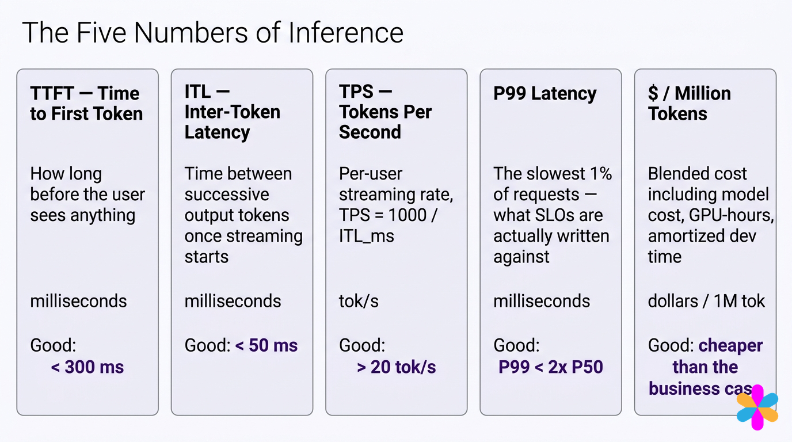
图 2.1。 五张卡片，各自点出一个指标、一行定义、单位，以及典型的“够好”目标。TTFT、ITL、TPS、P99 延迟，以及每百万 token 美元成本。把图 2.1 读两遍。第一遍，注意定义：TTFT（Time to First Token，首 token 时延）是用户看到任何内容之前要等多久；ITL（Inter-Token Latency，token 间时延）是流一旦开始后流动有多快；TPS（Tokens Per Second，每秒 token 数）是 ITL 的倒数，也是用户隐约感受到的指标；P99 延迟是最慢的百分之一，危险的长尾；而$/M tokens（每百万 token 美元）是决定产品能否成立的经济单位。第二遍，注意单位。五个里有四个以毫秒或每秒 token 计量。第五个以美元计量。推理工程师就坐在这两种单位交汇的边界上。
本章其余部分逐个指标展开，对每一个回答三个问题：它是什么、如何测量、若单独优化它你会错在哪里？最后在 §2.7，我们回到图 2.1，问组织里哪一类利益相关者关心哪个指标。这很重要，因为你的 CFO、产品经理和值班 SRE 会各自告诉你某一个数字才是“那个”数字——就他们自己的关切而言都对，就整个系统而言都错。
开始之前先说一句：我见过工程师在任意一个这类指标上单独取得成功。我从未见过一支团队在不理解它们之间关系的情况下把生产跑成。那种关系，才是本章真正的主题。
五个数字，逐个拆开
2.2：TTFT：首 token 时延
TTFT 是从用户请求到达你的服务器，到屏幕上出现第一个输出 token 的墙钟时间。单位是毫秒。
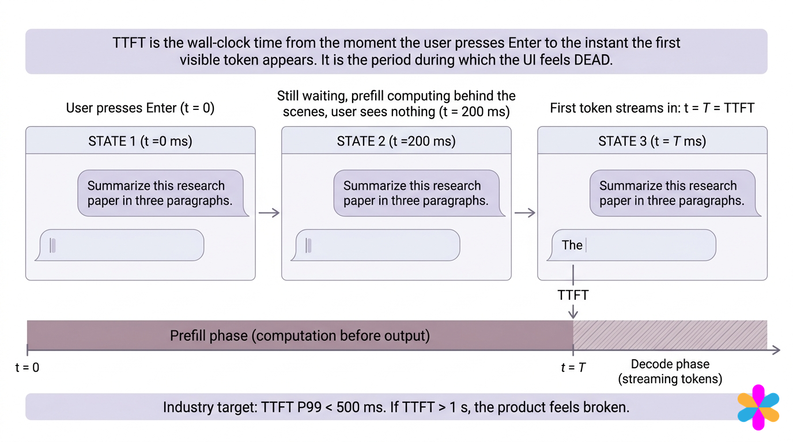
图 2.2。 一条水平时间线，从 t=0（用户发送提示）开始。阴影块即prefill 阶段，从 t=0 跨到 t=T。在 t=T，首个 token 出现，decode 流式输出开始。TTFT = T 毫秒。在图 2.2 中，标注为“prefill phase”的阴影区域是理解 TTFT 的关键。用户发送提示时，模型不会立刻开始生成输出。它必须先处理提示本身：跑完整的 transformer 前向传播，为每个输入 token 计算 K 和 V 向量，填充 KV 缓存。只有这一阶段完成后，解码——生成新 token——才能开始。
prefill 阶段的长度大致与提示长度成正比。100 token 的提示在现代 GPU 上 prefill 大约 ~15 ms。10,000 token 的提示大约 ~1,500 ms。若用户在发长对话或长文档（带检索上下文的聊天、粘贴了大文件的代码、法律文书），TTFT 可能主导整段用户体验。在 10,000 token 的提示上，用户要盯着空白屏幕等上一秒半才看到任何东西。按产品标准，那往往是永恒。
TTFT 是算力受限（compute-bound）的。它大致随提示长度的平方缩放，因为 prefill 期间的注意力机制要在所有提示 token 对上计算 N × N 注意力分数。提示长度翻倍，prefill 时间大致变为四倍，不过 FlashAttention 及相关技术会显著软化常数因子。
2.2.1：为什么 TTFT 比你想的更重要
用户对流式响应的感知由两个瞬间主导：(a) 他们按下回车的那一刻，(b) 第一个词出现的那一刻。这两个瞬间之间的间隙，是界面“死掉”的时间。在实时语音导师里，3 秒的 TTFT 会制造尴尬的沉默，感觉像系统故障。在聊天 UI 里，它会留下闪烁的光标，焦虑的用户会解读成 bug。用户不会去推理 prefill；他们不知道长提示处理更久。他们只知道什么都没发生。
对交互工作负载，行业标准的 TTFT 目标是P99 低于 500 ms、P50（中位数）低于 300 ms。若你的 P50 TTFT 是 800 ms，用户会报告产品很慢，哪怕 ITL 再优秀。OpenAI、Anthropic 和 Google 的聊天 UX 研究都收敛到同一预算，因为它匹配人类对“系统是否仍感灵敏”的阈值。
对批量工作负载——夜里处理 10,000 份文档的摘要流水线——TTFT 几乎没有意义。没人在看。只有吞吐和成本重要。
2.2.2：TTFT 在哪里变差
三件事会让 TTFT 变差，后面章节我们都会遇到：
- 长提示。提示长度翻倍，prefill 算力大致变为四倍。检索增强生成（RAG，Retrieval-Augmented Generation）会把文档片段注入提示，是常见的 TTFT 杀手。我们在第 12 章用前缀缓存（prefix caching）（跳过共享前缀的重算）和分块 prefill（chunked prefill）（把 prefill 拆成更小块，与进行中的 decode 交错）来攻击它。
- 争用（contention）。若 GPU 正忙着服务其他用户的 decode，新用户的 prefill 无法立刻开始。等待时间会加进 TTFT。我们在第 17 章用解耦 prefill/decode（disaggregated prefill/decode）来攻击它。
- 冷启动（cold starts）。若服务副本需要启动（从磁盘加载模型权重、分配 KV 缓存、捕获 CUDA graphs），首个请求的 TTFT 可能是分钟级，而不是毫秒级。我们在第 18 章用热池（warm pools）来攻击它。
生产中测量 TTFT 的标准做法是：记录服务端收到 HTTP 请求体的时间戳，以及发出第一个含输出内容的 SSE 事件（或 WebSocket 帧）的时间戳。差值就是 TTFT。客户端侧 TTFT 更长（包含网络往返），应单独报告。
2.3：ITL 与 TPS：流式速率
ITL（inter-token latency，token 间时延）是 decode 阶段两个连续输出 token 之间的平均墙钟时间。单位是每 token 毫秒。TPS（tokens per second，每秒 token 数）是它的倒数，即输出流出的速率，单位是每秒 token。
这两个指标从相反角度测量同一件事：
TPS_per_user = 1000 / ITL_ms
ITL 为 50 ms/token 意味着 20 tokens/sec。ITL 为 25 ms/token 意味着 40 tokens/sec。多数公开基准会引用其中一个——选你的听众觉得更直观的那个。终端用户用 TPS 思考（“这玩意好慢”）；工程师用 ITL 思考（“decode 步要 80 ms”）。
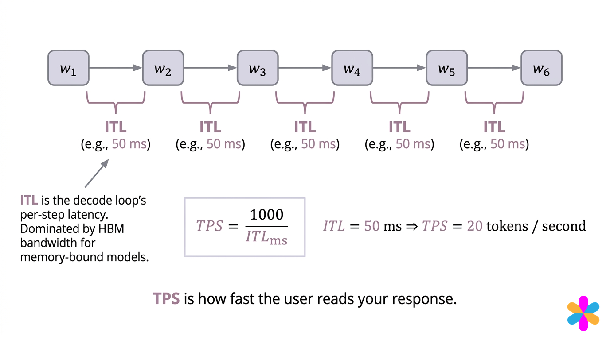
图 2.3。 一串输出 token 沿时间线流动，彼此之间的间隙标注为 ITL。等式TPS = 1000 / ITL_ms 把关系说具体：ITL = 50 ms 给出 TPS = 20 tokens per second。
图 2.3 展示了一串 token w_1, w_2, ..., w_6，彼此之间有等长的 ITL 间隙。现实中间隙并不完美相等——GPU 内核定时抖动会带来小方差——但 ITL 测量的是平均值。图中的等式是本书里你会用得最多的那一段算术。把它内化：TPS 与 ITL 互为倒数。若有人说他们的部署达到 30 tokens/sec，你可以不查任何东西就说“你的 ITL 是 33 毫秒”。这在对话里很有用。
2.3.1：为什么 ITL 是内存带宽受限的
decode 循环每次前向传播产生一个 token。每一次前向传播都必须从 HBM 加载模型的全部权重——每一层、每一个参数——才能算出下一个 token。一个 7B 参数模型在 FP16 下是 14 GB 权重。以 H100 的 3.35 TB/s 带宽加载 14 GB，纯内存流量就要 14 / 3350 = 4.18 ms。在 H100 上对这个模型，你不可能比这更快——无论用什么算法——因为即便算力耗时为零，数据仍须从 HBM 走到计算单元。
这就是为什么 decode 是内存带宽受限（memory-bound）的，以及为什么 ITL 由 HBM 带宽而非算术吞吐主导。本书中每一项 ITL 改进，本质上都是减少每个生成 token 必须流经 HBM 的字节数。量化（每参数更少字节）、flash attention（更少从 HBM 读取）、MLA（更小的待读 KV 缓存）、投机解码（每次权重加载产出更多 token）——它们都在降低每 token 的内存流量。
第 3 章会引入 GPU roofline，把机制说精确。眼下先记住一个事实：对任何现实规模的 transformer，在 decode 期间，ITL 受内存带宽限制，而非 FLOPs。
2.3.2：目标 ITL 预算
对交互工作负载，ITL 目标是低于 50 ms（等价于 TPS > 20）。这略快于人类阅读速度，所以输出流动可见，又不令人烦躁。ITL 超过 100 ms（TPS < 10）即便对慢读者也显得卡顿。
对语音工作负载，目标更紧：低于 30 ms（TPS > 33）。语音要求 token 到达足够快，文本转语音引擎才能平滑缓冲；语音输出一卡顿立刻可感知。
对批量工作负载，单个请求的 ITL 无所谓；只有系统聚合吞吐重要（见 §2.4）。
2.3.3：单用户 TPS 对比系统 TPS
这是微妙的一点，相当多工程师在第一年会在这里搞混。
存在两个不同的 TPS 数字，它们测量不同的东西。
- 单用户 TPS（per-user TPS）是某一个用户的流有多快，即该用户 ITL 的倒数。
- 系统 TPS（system TPS）（也称“吞吐”）是所有并发用户合计的总输出速率。
若你的引擎同时服务 32 个用户，每人 20 tokens/sec 的单用户 TPS，则系统 TPS 是 32 × 20 = 640 tokens/sec。单用户 TPS 是 20。这两个数字很不一样，产品经理往往两个都想知道。
它们之间的权衡是后续一切的核心。增大批量大小（每次前向传播服务更多用户）往往会提高系统 TPS，并降低单用户 TPS，因为每个用户的前向传播现在要与更多邻居共享算力。图 2.4 把这画得很明确。
2.4：吞吐 vs 单用户延迟：根本权衡
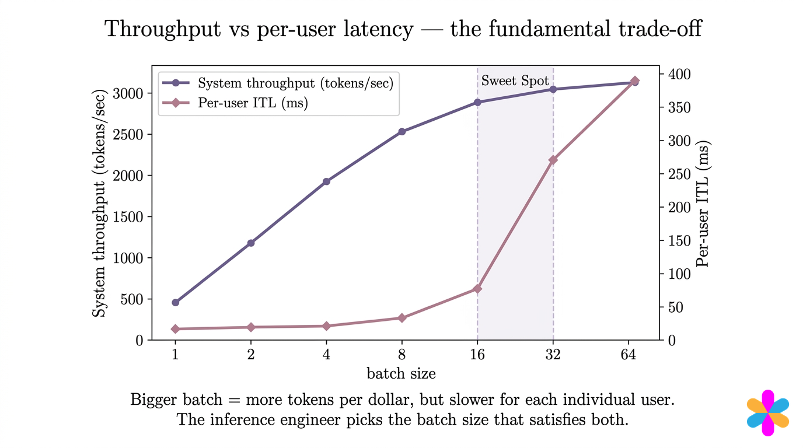
图 2.4。 两条曲线共享 x 轴（批量大小，近似对数，1 到 64）。一条上升：系统吞吐（tokens/sec）随批量增大而增长。另一条也上升：单用户 ITL（ms）随批量增大而增长。阴影“甜点区”大约在批量 16–32，标记吞吐已高但 ITL 尚未毁掉用户体验的位置。图 2.4 是推理生产中仅次于 roofline 本身最重要的图。仔细看这两条曲线。
深薰衣草紫曲线（系统吞吐）在小批量处陡升，在大批量处趋于平台。这个形状是摊销（amortization）的特征：从 HBM 加载模型权重是每次前向传播支付一次的固定成本；搭上这一次权重加载的 token 越多，系统每秒产出的总 token 就越多。批量从 1 翻到 2，吞吐几乎翻倍。从 16 翻到 32，吞吐可能只增 50%，因为系统正在逼近算力天花板。
灰玫瑰色曲线（单用户 ITL）在小批量处几乎平坦，到大批量处陡升。平坦区域对应内存带宽受限区间：只要批量舒适地装进 HBM，且前向传播由权重加载而非注意力计算主导，多加用户对单用户延迟几乎没有影响。超过某个临界批量后，系统变为算力受限，ITL 开始爬升。
图 2.4 中的阴影“甜点区”——对 H100 上多数生产模型大约是批量 16 到 32——是两个指标都可接受的地方。系统 TPS 高，单用户 TPS 仍落在交互预算内。低于这个区间，GPU 利用不足（每 token 成本差）。高于这个区间，单用户体验退化。
这就是为什么选对批量大小不是一次性决策。它取决于你的工作负载（用户耐心吗，还是要交互？）、成本约束（你能承受低利用率吗？）和硬件（脊点随 GPU 代际移动）。生产推理工程师会持续调这个参数，通常通过测得的 P99 ITL 反馈环。
提醒一句：图 2.4 里的“批量大小”不是一个旋钮。在像 vLLM 这样的现代服务引擎里，有两个：max_num_seqs（并发序列数）和 max_num_batched_tokens（每次前向传播的总 token 数）。第 19 章会讲这两个参数如何交互、如何设定。眼下把“批量大小”想成有效并发度，并记住吞吐与延迟处于张力之中。
2.5：百分位：你负担不起忽视的长尾
P50 延迟是中位数：一半请求比 P50 快，一半更慢。P90是第 90 百分位：90% 的请求比 P90 快，最差的 10% 更慢。P99是第 99 百分位：99% 的请求更快，最差的 1% 更慢。
在生产中，P99 才是真正重要的数字。不是 P50。不是平均值。是 P99。
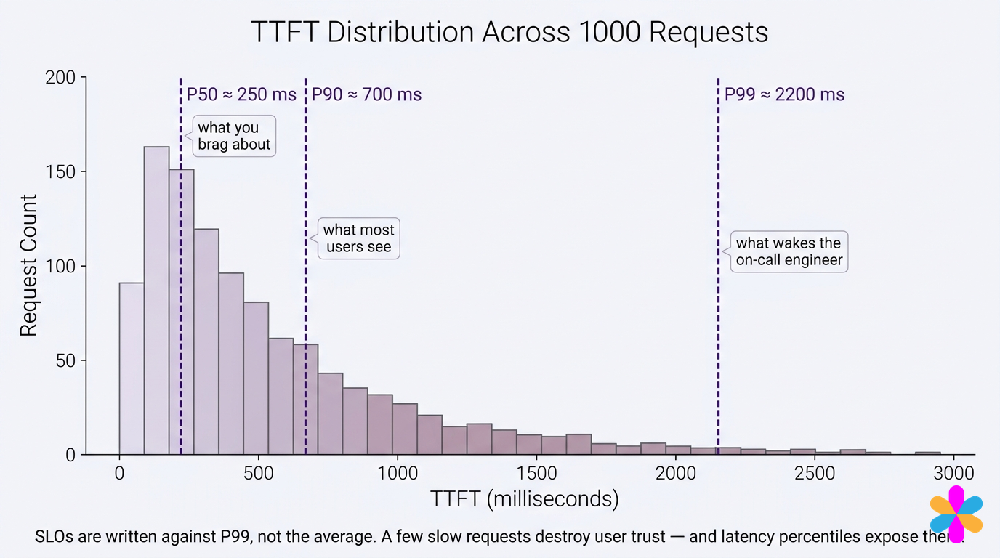
图 2.5。 1,000 次请求的 TTFT 直方图，右偏。P50 在 250 ms（“你拿来吹牛的”），P90 在 700 ms（“多数用户实际看到的”），P99 在 2,200 ms（“叫醒值班工程师的”）。长尾很长，P99 几乎是中位数的 9×。仔细看图 2.5。这是一张很像真实的 TTFT 分布：中位数附近有一个沉重的峰，右侧有一条长尾。峰是“正常情况”：多数请求落在那个胖中间。尾是危险部分：由争用、GC 停顿、冷启动效应、长提示，或单纯运气不好造成的慢请求。
三条竖线标出百分位。注意它们相距多远。P50（250 ms）很快，确实令人印象深刻。P90（700 ms）是多数用户在典型会话中实际体验到的数字，因为十次交互里用户通常会撞上一次 P90 或更差的情况。P99（2,200 ms）是每小时打上百次的重度用户一天会撞上多次的数字。P99 到 2.2 秒时，你的产品会定期让人觉得坏了——不是对每个人，而是对最投入的用户。
2.5.1：为什么用平均值是错的
一个常见错误是引用平均延迟。别这么做。延迟分布是右偏的，长尾会把均值往上拖，而平均值会掩盖双峰结构。一个 P50 为 200 ms、P99 为 2,000 ms 的系统，与一个 P50 为 500 ms、P99 为 800 ms 的系统可以有相同的平均值，但两者对用户的感觉完全不同。
规则很简单：在生产中，报告百分位，不要报告平均值。每个服务引擎的 Prometheus / Grafana 仪表盘都会暴露 TTFT 与 ITL 的 P50、P90、P99 和 P99.9。全都看。若你只看 P50，你是在为那些已经体验偏好的“平均用户”优化——他们是有意义的一部分用户，但不是会来抱怨的那些。
2.5.2：SLO 写在 P99 上
现代生产合同里的服务水平目标（SLO，Service-Level Objective）写在 P99 上。典型 SLO 长这样：
P99 TTFT < 500 ms，按 5 分钟窗口测量，99.9% 的时间满足。
两层百分位叠在一起。若你某个 5 分钟窗口的 P99 是 500 ms，该窗口满足 SLO。若该窗口的 P99 超过 500 ms，该窗口打破 SLO。若超过 0.1% 的窗口打破 SLO，合同被违反。
这种级联结构——百分位的百分位——刻意偏执。这意味着哪怕平均行为还好，单独一分钟的慢也可能打破 SLO。这也是为什么调 P99 几乎总比调中位数更难：把中位数压下去是调常见路径；把 P99 压下去是消除每一种长尾延迟来源。
2.5.3：推理中什么造成长尾延迟
图 2.5 的长尾由具体、可识别的现象造成。每一个在本书里都有对应章节：
- 长提示 prefill 阻塞 decode。新用户的 10K-token 提示落地，GPU 处理它，卡住其他用户的 decode。我看过的每一个生产语音助手仪表盘上都直接见过。用分块 prefill（第 12 章）和解耦 P/D（第 17 章）修复。
- 会话首 token 的缓存未命中。全新会话没有前缀缓存命中，于是支付完整 prefill。部分由前缀缓存（第 12 章）解决。
- 副本过度承诺。当
max_num_seqs设得过高，前向传播时间变长，每个活跃用户的 ITL 随之变长。通过生产服务第 19 章调参。 - 冷启动。流量尖峰时新副本启动，前几个请求很慢。用热池维护（第 18 章）解决。
- 跨租户干扰。在多租户服务中，一个用户的长响应占用了本可服务另一用户的槽位。用感知 SLO 的路由（第 18 章）解决。
这些每一个都是 P99 问题，不是中位数问题，而且每一个都有自己的技术。
2.6：每百万 Token 美元：决定可行性的单位
第五个指标是经济指标。$/M tokens 是产出 100 万个输出 token 的综合成本，计入硬件租赁、电力、摊销的研发时间，以及你为满足 SLO 而运行的闲置容量开销。
这是你的 CFO 会问的数字。它决定产品的单位经济是否收敛。它也是跨部署策略变化最大的数字——超过三个数量级，如图 2.6 所示。
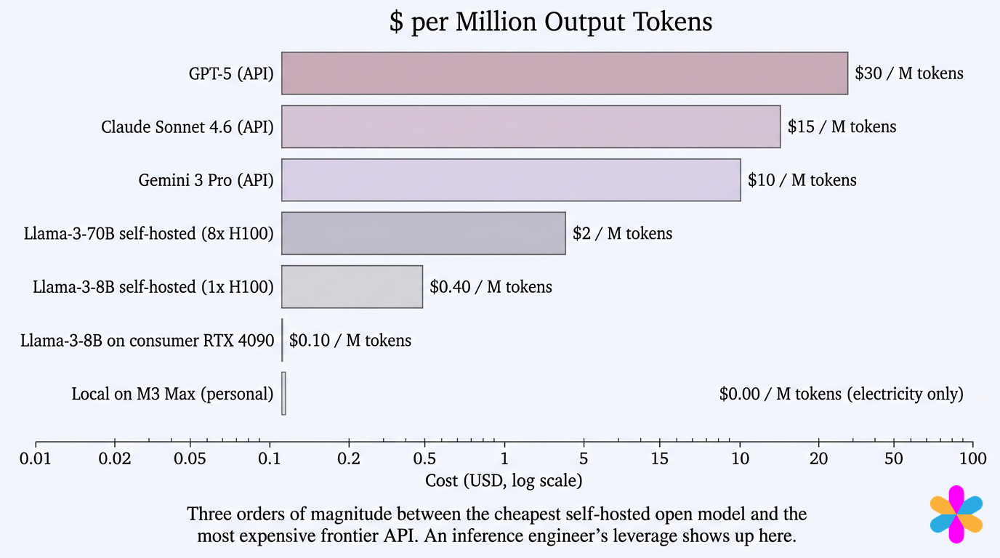
图 2.6。 七根柱，对数刻度 X 轴。GPT-5 API 约 $30/M，Claude Sonnet 约 $15/M，Gemini Pro 约 $10/M，自托管 Llama-3-70B 约 $2/M，自托管 Llama-3-8B 约 $0.40/M，消费级 RTX 4090 上的 Llama-3-8B 约 $0.10/M，本地 M3 Max 上实质为 $0（仅电力）。图 2.6 讲述了应用 AI 中最被低估的一个事实。最便宜的服务路径（跑在你已拥有的硬件上）比最贵的路径（前沿 API）大约便宜三百倍。三个数量级。你对部署策略的选择可以把每 token 成本从 $30 移到 $0.10，中间每一个点都是便利、质量与控制之间的真实权衡。
注意模型选择只是变量之一。自托管 Llama-3-70B 成本约 $2/M，不是因为 Llama 天生便宜，而是因为服务效率（连续批处理、PagedAttention、量化）很好。同一模型若朴素服务——每次前向传播一个请求、没有批处理——成本会高 10×。
2.6.1：综合成本里有什么
别把 GPU 小时费率与每 token 成本搞混。一台 H100 按 $2.50/小时，按调优程度可以从 5 tokens/sec 服务到 5,000 tokens/sec。每 token 成本是小时费率除以实际达到的吞吐。
$/M tokens = (GPU $/hour) / (throughput in tokens/sec) × 1,000,000 / 3600
≈ (GPU $/hour) / (tokens/sec) × 278
在 $2.50/小时和 100 tokens/sec（利用率差）时，成本是 $2.50 × 278 / 100 = $6.95 / M tokens。在 $2.50/小时和 3,000 tokens/sec（调得好）时，成本是 $2.50 × 278 / 3000 = $0.23 / M tokens。同一硬件，成本相差三十倍。这就是为什么运行时层在经济上重要。
除了纯 GPU 租赁，综合成本还应包括：
- 闲置容量开销。为满足 SLO，你跑在约 70% 平均利用率，而非 100%。那 30% 闲置容量是真实成本，要加进每 token 价格。若副本跑在 70% 利用率，把朴素成本乘以 1/0.7 = 1.43。
- 冷启动与自动扩缩开销。流量尖峰时启动的副本每小时服务的 token 更少。这对多数生产系统是 5–15% 开销。
- 可观测性、日志与编排。Prometheus、Grafana、路由器、负载均衡器、API 网关——小，但真实，通常是 GPU 成本的 2–5%。
- 摊销的研发时间。若你的推理工程师花了三个月调栈，产品每天服务 100M tokens，他们的时间大约摊到每百万 token $0.01。相对 GPU 成本很小，但值得点名。
2.6.2：为什么 API 更贵
API 提供商（OpenAI、Anthropic、Google）按图 2.6 所示收费，部分因为他们的模型更大更好，也因为定价包含利润、SRE 开销、客户支持、基础设施摊销，以及不必为闲置 GPU 付费的选择权。便利是真实的。但对能吸收工程开销的团队，自托管路径每 token 总是更便宜——而这正是本书的全部前提。
2.6.3：何时 API 成本可接受
在以下任一成立时，API 是正确选择：
- 你的量很低。每天不到 1M tokens，即便 $30/M 的 API 也低于 $30/天，远低于一台 H100 的租赁成本。
- 你的质量门槛要求特定前沿模型。截至 2026 年，在某些任务上没有任何开源模型与 Claude Opus 无法区分；若你的产品押注那最后 5% 的能力，就付溢价。
- 你的团队没有推理工程师。雇一位好的推理工程师，成本高于许多小产品的全部 API 预算。
- 你看重厂商的安全调优。OpenAI 与 Anthropic 的 RLHF 流水线处理内容策略与滥用过滤的方式，开源模型往往要很多个月才能追上。
所有其他情况——而这是任何有意义规模下的多数生产情况——都应该自托管。本书其余部分，就是让自托管变得可行的那套技能。
指标属于利益相关者
2.7：谁关心哪个数字
五个指标对组织里每个人并不同等重要。图 2.7 把指标映射到利益相关者。
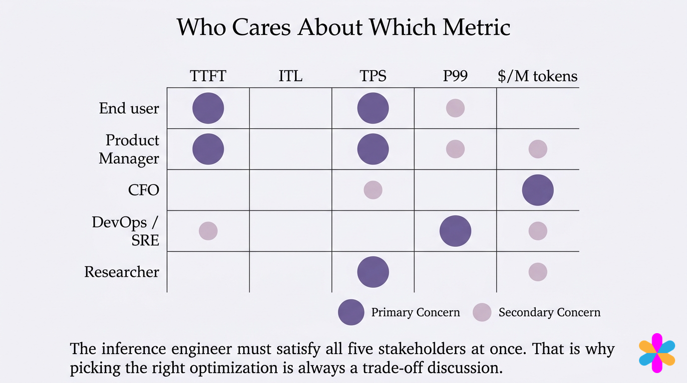
图 2.7。 一张 5 × 5 矩阵。行是利益相关者（终端用户、产品经理、CFO、DevOps / SRE、研究者）。列是五个指标。实心点标记主要关切；浅色点标记次要关切。图 2.7 是多数推理工程政治的源头。矩阵的每一行代表一个会走进你一对一会议、告诉你他们的数字才是真正那个数字的人。就各自的关切而言，他们都对。
终端用户首先关心 TTFT（有没有动静？）和 TPS（能不能读？）。他们不知道“P99”是什么意思；他们把 P99 体验成“这工具不靠谱”。他们不关心 $/M tokens，因为他们不是按 token 付费，而是付订阅费。他们的体验是其具体会话上的 TTFT 与 TPS 的函数，而这些会话是从由 P99 定义形状的分布中随机抽取的。
产品经理关心终端用户关心的一切，外加 P99（因为用户投诉随 P99 放大），外加 $/M tokens（因为单位经济决定公司跑道）。他们会把 TTFT 排第一，因为每周都听到用户投诉；把 $/M 排第二，因为每月都听到董事会投诉；把 P99 排第三，因为那是前两种投诉交汇和解的地方。
CFO几乎只关心 $/M tokens。他们会要求你证明即便流量在增长，$/M 也在下行。他们不关心 ITL，除非差到用户流失（影响收入，从而间接影响 $/M）。一位好的推理工程师会产出月度成本趋势图，并能解释每一个拐点。
DevOps / SRE 工程师最关心 P99。P99 是凌晨 3 点叫醒值班的东西。P99 决定你的 SLO 是否满足、生产奖金是否到手。P99 是事故复盘时 CEO 会问的东西。对任何可能把 P99 抬高哪怕几个百分点的部署变更，DevOps 工程师都会跟你争——无论它对其他指标改善多少。
研究者——无论内部还是外部——关心单用户 TPS，因为那是论文基准里报告的东西。他们在一定程度上关心 $/M tokens（资助方想要成本高效的研究）。他们不关心 P99，因为研究代码没有 SLO。对只报告 TPS 的研究基准要警惕：它们的优化假设是 TTFT 与 P99 无所谓——这对离线评估为真，对生产为假。
作为推理工程师，你的工作是把五个数字看作一个耦合系统，并拒绝孤立优化其中任何一个。当有人说“只要把 TTFT 弄快”，回答是“以 TPS、P99 和 $/M 的什么代价？”——然后打开图 2.4，把权衡说具体。
2.8：一句话概括五个数字
合上本章之前，让我告诉你那句概括五个指标关系的话。它不在图 2.7 里；也不在前面任何一节。它是我审视任何生产部署时用的心智模型。
TTFT 与 ITL 通过 prefill/decode 边界耦合。TPS 是 1/ITL。P99 是分布的形状。$/M 是对这一切的摊销。
每次你对推理系统做变更，都要问它对五个数字各自做了什么，并拒绝那些以不成比例的代价帮助一个数字而伤害另一个的变更。这就是纪律。本书其余部分是工具箱。
2.9：接下来去哪
我们有了地图（第 1 章），也有了记分板（本章）。我们还没有的是一台我们正在优化的机器的物理模型。为什么 decode 是内存带宽受限的？为什么 prefill 是算力受限的？为什么批处理帮助吞吐却伤害 ITL？为什么量化对两者都有帮助？
这些不是彼此独立的问题。它们全部塌缩到一张图上——GPU roofline——这正是第 3 章的主题。roofline 是整本书的北极星，之后每一个运行时层章节你都会回到它。第 3 章将从第一性原理推导它，把 prefill 与 decode 放到上面，并精确看到为什么本书中的每一项技术都在那一张图上朝某一个特定方向移动。
第 3 章：Roofline 是我们的北极星
在第 2 章我们认识了每一个推理决策都会移动的五个数字。在第 1 章我们认识了任何技术所坐落的三层。两章都隐式地许诺了一件事：有一个单一心智模型把它们全部连起来。一张单一的图，能对任何技术说清：它帮的是 TTFT 还是 ITL，帮的是算力还是带宽，改善的是单用户 TPS 还是系统吞吐。
那张图就是GPU roofline（屋顶线）。它是本书最重要的一张图。你会在第 6 章再次见到它（那里我们推导填充它的 GPU 硬件数字），在第 7 章（KV 缓存把它往左移），在第 10 章（FlashAttention 把它往右移），在第 13 章（量化把天花板抬高），在第 14 章（连续批处理爬上斜率），在第 17 章（解耦把 prefill 和 decode 放到不同的 roofline 点上），以及后续每一个运行时层章节。Roofline 是我们用硬件物理而非空话来谈论性能的方式。
本章就是从零把它建起来的地方。
这一章很长，因为它值得仔细做。你在这里花的每一分钟，都会在后续每一章里分红。若你现在把 roofline 内化，你读本书其余部分时脑子里就会有一个坐标系——每一项技术是一个点，每一次优化是一支箭头，每一次权衡是这张单一图上的一次移动。
为什么我们需要一张单一的图
3.1：Roofline 回答的问题
拿一个具体问题。假设你在 H100 上跑 Llama-3-8B，并在考虑两项优化：(a) 把权重从 FP16 量化到 FP8，或 (b) 启用 FlashAttention。两者都很知名。两者都会改善某些东西。哪一个改善什么？
只懂指标（第 2 章）的工程师可能会说：两者都降低 ITL，因此两者都提高 TPS。正确，但没有信息量。有好库（第 1 章的工具层）的工程师可能会说：两个都打开，再测量。也正确，但你无法在实验前预测会发生什么，因此无法决定是否值得跑。
Roofline 给你预测。它让你能事先说：
- 从 FP16 量化到 FP8，把每个 token 从 HBM 传输的字节数减半。若你是内存带宽受限（memory-bound）的（而 Llama-3-8B 在 H100 上的 decode 正是如此），这几乎把你可达到的吞吐翻倍。它也把你移到不同的 FLOP 天花板——FP8 张量核心天花板大约是 FP16 的两倍——意味着你在变成算力受限（compute-bound）之前有更多算力余量。
- FlashAttention 专门减少注意力内核的 HBM 流量。对短序列几乎没变化，因为注意力不是主导的内存成本。对长序列它更重要，因为 N×N 注意力矩阵成为总字节中更大的一部分。
两个预测都会自动从 roofline 掉出来。一旦你能把工作点放到 roofline 上并识别主导瓶颈，每一次优化都是一支方向已知的箭头。
这就是为什么本章是北极星。
从第一性原理推导 Roofline
3.2：每块 GPU 上的两道硬限制
每块 GPU 恰好有两类约束其性能的资源：
- 算力吞吐（compute throughput），它每秒能执行多少浮点运算，以 FLOPs/sec（或 tera-FLOPs/sec，TFLOPs）计量。
- 内存带宽（memory bandwidth），它每秒能从 HBM（大而慢的内存池）向计算单元传输多少字节数据，以 bytes/sec（或 terabytes/sec，TB/s）计量。
对 NVIDIA H100，额定数字是：
| 资源 | 数值 |
|---|---|
| FP32 算力（CUDA cores） | 67 TFLOPs/sec |
| FP16 算力（Tensor cores） | 989 TFLOPs/sec |
| FP8 算力（Tensor cores） | 1,979 TFLOPs/sec |
| INT4 算力（Tensor cores） | 3,958 TFLOPs/sec |
| HBM 带宽 | 3.35 TB/sec |
两点观察。第一，并不是一道算力天花板，而是几道，取决于精度。若你的内核以 FP16 运行，你最多得到 989 TFLOPs。若以 FP8 运行，你最多得到 1,979 TFLOPs。这是量化（第 13 章）为何如此强大的第一个提示：它不只是节省字节，它把你移到更高的算力天花板。
第二，两种资源都是每 GPU固定的。你无法神奇地从 H100 挤出更多带宽——它焊在硅片里。这很重要。意味着对任何工作负载，GPU 的理论峰值性能是你先撞上的那一道限制。
你先撞上哪一道，由一个单一比率决定：你的工作负载每从内存读取一字节数据，执行多少 FLOPs？那个比率有名字。
3.3：算术强度：解释一切的那个数字
算术强度（arithmetic intensity）（记为 AI）是：
AI = FLOPs performed by the kernel / Bytes transferred from HBM
AI 以每字节 FLOPs 计量。它是内核的属性，不是硬件的。每一次矩阵乘法、每一次注意力计算、每一次 softmax 都有自己的算术强度。AI 为 1 意味着每字节数据一次浮点运算。AI 为 1,000 意味着每字节一千次浮点运算。
为什么这个数字重要？因为它告诉你会先撞上两道硬件限制中的哪一道。
考虑一个 AI = 1 的内核。它读的每一字节触发一次 FLOP。若 GPU 带宽是 3.35 TB/sec，内核每秒能读 3.35 万亿字节，意味着它每秒能做 3.35 万亿 FLOPs，即 3.35 TFLOPs。即便 H100能在 FP16 下做 989 TFLOPs，这个内核也永远到不了 3.35 TFLOPs 以上，因为没有足够的字节每秒流入去喂更多算力。这个内核是内存带宽受限（memory-bound）的。瓶颈不是计算单元（它们大部分时间闲着），而是内存管道。
现在考虑一个 AI = 1,000 的内核。每一字节触发一千次 FLOPs。3.35 TB/sec 的带宽现在支持 3.35 × 1,000 = 3,350 TFLOPs，远高于 H100 的 FP16 天花板 989 TFLOPs。硬件实际做不了 3,350 TFLOPs；它被封顶在 989。所以这个内核是算力受限（compute-bound）的。瓶颈是计算单元；内存管道从未饱和。
转折点——内核的 AI 刚好高到足以饱和算力天花板——叫做脊点（ridge point）。对 H100 的 FP16：
ridge AI = 989 TFLOPs/sec / 3.35 TB/sec = 295 FLOPs per byte
任何 AI 低于 295 的内核在 H100 上是内存带宽受限的。任何 AI 高于 295 的内核是算力受限的。
本书中的每一项技术，在最深层次上，都是试图要么 (a) 把工作点推过脊点、进入算力受限区域，要么 (b) 抬高我们到达那里后撞到的天花板。
3.4：图本身
现在我们可以画它了。
 图 3.1。 锚定图。X 轴：算术强度（对数刻度，每字节 FLOPs）。Y 轴：达到的每秒 FLOPs（对数刻度）。一条在双对数图上以斜率 1 上升的对角线——内存带宽天花板（memory bandwidth ceiling）。一条水平平线——算力天花板（compute ceiling）。两者在脊点（ridge point）相遇。脊点左侧的阴影区域是内存带宽受限；右侧是算力受限。
图 3.1。 锚定图。X 轴：算术强度（对数刻度，每字节 FLOPs）。Y 轴：达到的每秒 FLOPs（对数刻度）。一条在双对数图上以斜率 1 上升的对角线——内存带宽天花板（memory bandwidth ceiling）。一条水平平线——算力天花板（compute ceiling）。两者在脊点（ridge point）相遇。脊点左侧的阴影区域是内存带宽受限；右侧是算力受限。
图 3.1 是本书中你会比任何其他图见得更多的那张。仔细看它，因为后续每一个运行时章节中的每一张图，都是它的某种变体。
左侧的对角线是带宽天花板。它在双对数图上的斜率恰好是 1，因为 achieved_FLOPs = AI × bandwidth，对 AI 是线性的。只要你还在脊点以下，算术强度翻倍，可达到的 FLOP 速率就翻倍。
顶部的水平平线是算力天花板。它的值是你所用精度下硬件的峰值 FLOP 吞吐。对 H100 FP16，那是 989 TFLOPs。在脊点以上，无论你有多少 AI，可达到的吞吐都被封顶在这个值。
脊点是两者相遇之处。在脊点上的内核同时充分利用两种资源——每一字节带宽都在喂足够多的 FLOPs 以饱和算力，每一次 FLOP 都能找到准备好的一字节数据来工作。这就是甜点区。
现在，一个关键问题：真实的 LLM 推理内核坐在这张图的哪里？
3.5：Prefill 与 decode 实际坐在哪里
Prefill 与 decode 不在 roofline 的同一部分。它们处于完全不同的区间，理解为什么是全部推理工程中最重要的单一洞见。
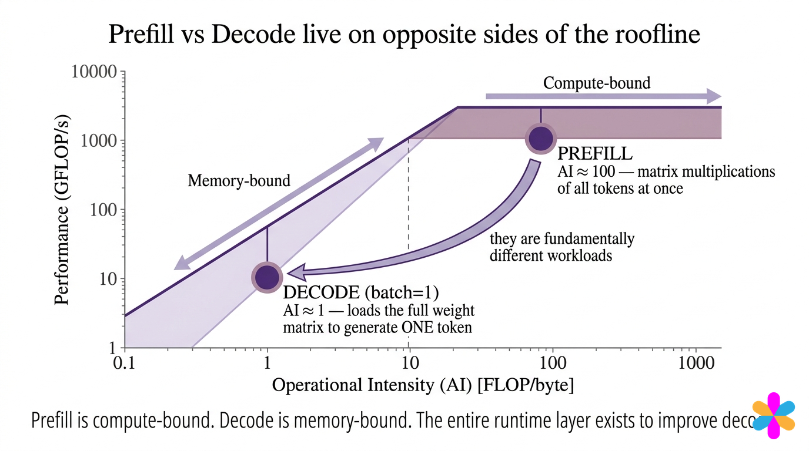
图 3.2。 两个标出的工作点。Prefill 坐在靠近平线天花板的算力受限区域，AI ≈ 100。Decode（batch=1） 深深坐在内存带宽受限区域，AI ≈ 1。一条弧形箭头连接它们，标注为“它们是根本不同的工作负载。”图 3.2 中的两个点不是图形装饰。它们是从第一性原理算出来的，我们现在一起算。
3.5.1：Prefill 的算术强度
在 prefill 期间，模型通过单次前向传播一次处理全部 N 个输入 token。主导运算是矩阵-矩阵乘法 X · W_Q（以及类似的 K 和 V 投影），其中 X 是 (N, d)，W_Q 是 (d, d)。
对一次这样的投影：
FLOPs = 2 × N × d × d = 2Nd² (two FLOPs per multiply-add)
Bytes = 2 × (N × d) + 2 × (d × d) + 2 × (N × d) (X in, W_Q in, output out, FP16)
= 4Nd + 2d²
算术强度：
AI_prefill = 2Nd² / (4Nd + 2d²)
= Nd / (2N + d)
≈ d / 2 (when N is large, the Nd term dominates)
对 Llama-3-8B，d = 4096，典型提示长度 N = 2048：
AI_prefill ≈ 4096 × 2048 / (2 × 2048 + 4096) = 8,388,608 / 8,192 ≈ 1,024
每字节 1,024 FLOPs。 远高于脊点 295。Prefill 是深深算力受限的。
这就是为什么图 3.2 中的 prefill 点坐在 roofline 顶部附近，贴着算力天花板。当你增加提示长度时，AI_prefill 保持很大——对任何现实的提示，prefill 都不会变成内存带宽受限。约束是 FLOP 吞吐。
3.5.2：Decode 的算术强度
在 decode 期间，模型每次前向传播恰好产生一个新 token。输入是单个 token 的嵌入向量，形状 (1, d)，同一个权重矩阵 W_Q，形状 (d, d)，从 HBM 加载。
FLOPs = 2 × 1 × d × d = 2d²
Bytes = 2 × (1 × d) + 2 × (d × d) + 2 × (1 × d)
= 4d + 2d²
≈ 2d² (the d² term dominates)
算术强度：
AI_decode ≈ 2d² / 2d² = 1
算术强度大约为 1。 这是本书中每一个推理工程问题的根因。在 AI ≈ 1 时，decode 工作点深深坐在 roofline 的内存带宽受限区域，远低于脊点，远低于算力天花板。
对 H100，带宽 3.35 TB/sec：
achieved_decode_FLOPs = AI × bandwidth = 1 × 3.35 TB/sec ≈ 3.35 TFLOPs/sec
但 H100能在 FP16 下做 989 TFLOPs。我们只用了GPU 算力容量的 0.34%。另外 99.66% 的计算单元闲着，等数据从 HBM 到达。
现在你理解了 2026 年 LLM 推理的黑暗秘密：在未优化的单序列栈上，每一步 decode 使用不到 1% 的它所运行的 GPU。 本书整个运行时层的存在，就是为了缩小那个差距。
3.5.3：为什么这两个点如此遥远
Prefill 每次前向传播处理 N 个 token。它加载权重一次，每字节做 N 倍的 FLOPs。Decode 每次前向传播处理 1 个 token。它加载同样的权重，每字节只做一小撮 FLOPs。
这种不对称是根本的。它不是我们能修的 bug；它是自回归生成的属性。每个 token 依赖前一个，所以我们无法像跨输入 token 那样跨输出 token 并行化。
我们能做的是把 decode 点往右移——通过各种技巧提高它的 AI，这些技巧都归结为“从每次权重加载中榨出更多有用功。”我们也可以通过量化把算力天花板往上抬。
图 3.3 一眼展示了每一项运行时层技术做什么。
3.6：每一项优化把你移向哪里
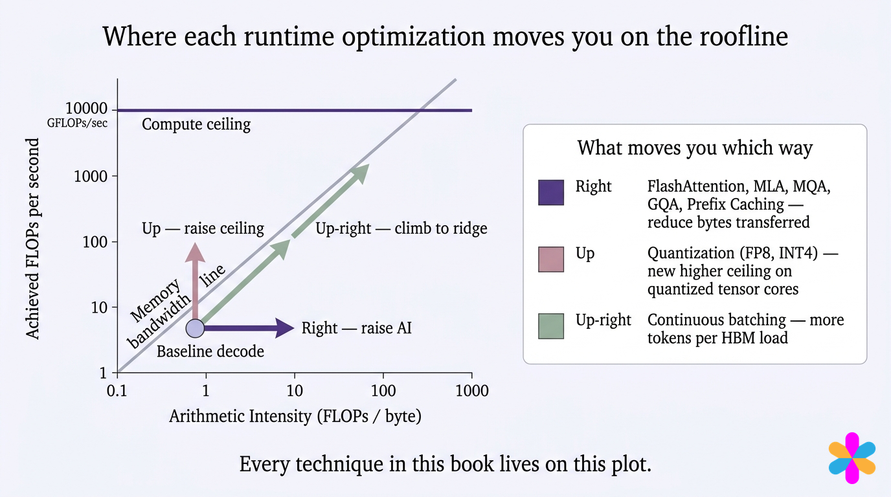
图 3.3。 一个基线 decode 点，三支颜色编码的箭头指示移动方向，旁边有一张图例卡。向右： FlashAttention、MLA、MQA、GQA、前缀缓存——减少传输字节，提高 AI。向上： 量化（FP8、INT4）——量化张量核心上新的更高天花板。向右上： 连续批处理——每次 HBM 加载更多 token。这就是地图。本书中每一项运行时层技术都沿三个方向之一移动你。
向右，通过减少每 token 字节数来提高 AI。 这是最大的一类。FlashAttention 把 N×N 注意力分数矩阵从 HBM 中完全消除，于是每 token 字节下降。MLA/MQA/GQA 收缩 KV 缓存，于是 decode 期间必须从 HBM 读取的字节更少。前缀缓存避免为已被另一用户处理过的提示 token 读取 K 和 V。这些技术中没有一个改变模型计算什么——它改变的是为了计算它必须有多少字节流经 HBM 管道。结果是每步 decode 更高的 AI，把工作点在 roofline 上往右移，更靠近脊点。
向上，通过使用更低精度算力来抬高天花板。 量化到 FP8 把你从 989 TFLOPs 天花板移到 1,979 TFLOPs 天花板。量化到 INT4 把你移到 3,958 TFLOPs 天花板。若你是算力受限的（prefill，或批得很好的 decode），这直接把吞吐翻倍或翻四倍。若你是内存带宽受限的（batch 1 的 decode），这也减少每权重的字节，因为以 FP8 存储的权重只占同权 FP16 的一半字节，所以量化把字节减少与天花板抬升结合在一起。它同时把你往右和往上移。
向右上，把权重加载摊销到更多用户上。 连续批处理把许多用户的 decode 步打包进同一次前向传播。权重从 HBM 加载一次，每一个被批进去的用户都“搭乘”那一次加载。若你从 batch 1 到 batch 32，你就把权重加载摊销了 32 倍。AI 有效地乘以 32。工作点沿斜率爬向脊点。这正是图 3.4 显式展示的。
本书后续每一个运行时章节，都可以读成对这三支箭头之一的详细处理。现在读图 3.3；你会把它记在脑子里，贯穿本书其余部分。
3.7：两道分开的天花板
我们在 §3.2 提到过，算力天花板不止一道。H100 至少有四道，取决于精度。图 3.4 把它们叠着展示。
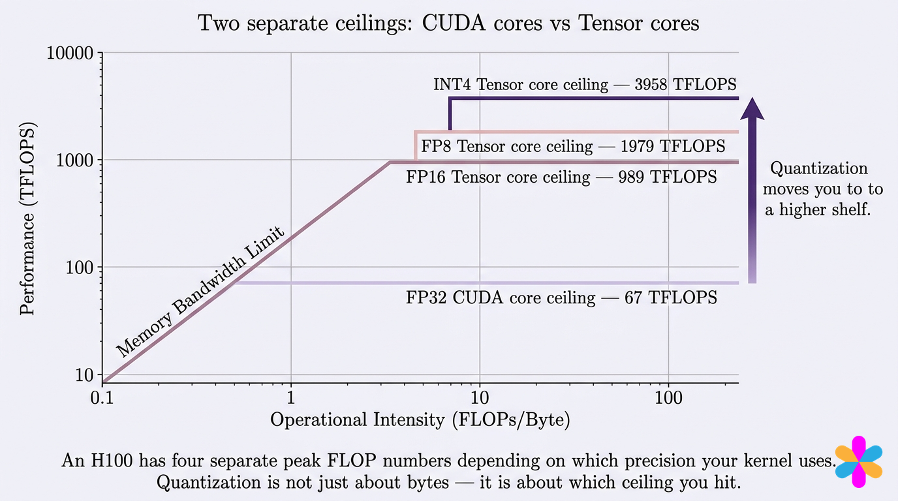
图 3.4。 一层一层升高的阶梯式天花板。FP32 CUDA core 天花板在 67 TFLOPs。FP16 Tensor core 天花板在 989 TFLOPs（高 14×）。FP8 天花板在 1,979 TFLOPs（高 29×）。INT4 天花板在 3,958 TFLOPs（高 59×）。量化把你移到更高的架子上。图 3.4 让量化故事变得具体。当有人说“FP8 比 FP16 快两倍”时，他们的意思是：天花板抬升 2×，若你是算力受限的，可达到的吞吐翻倍。若你是内存带宽受限的，你还从减半的每权字节再得 2×。量化是在两个区间都能赢的那一项优化。
关键是，这些天花板不是任何内核在软件上都能达到的。它们只能由专门为每种精度编写的张量核心内核达到。一次朴素的 PyTorch @ W 在 FP16 下到不了 989 TFLOPs；它到大约 40%。到达天花板需要 FlashAttention 风格的手调 CUDA，或 TensorRT-LLM 的编译内核，或像 cuBLAS-Lt 这样的特化库。这就是为什么工具层对实现天花板增益很重要——你不能只是“用 FP8”就期望完整的 2× 加速，除非你的服务引擎支持 FP8 张量核心内核。到 2026 年，vLLM、SGLang 和 TensorRT-LLM 都支持；更老的栈可能不支持。
3.8：批处理后的 decode 爬上 Roofline
若你从本章只记住一件事，一件机械事实，就让它是这个：批处理是把 decode 从内存带宽受限移向算力受限的东西。
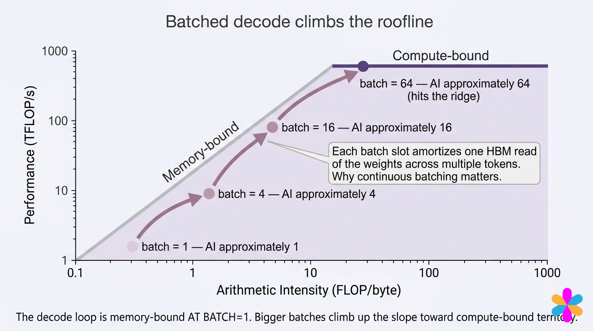
图 3.5。 四个由上升箭头连接的工作点。Batch 1：AI ≈ 1。Batch 4：AI ≈ 4。Batch 16：AI ≈ 16。Batch 64：AI ≈ 64，撞上脊点。箭头标注为“每次 HBM 加载更多 token，AI 随批量大小线性增长。”在批量大小 1，decode 从 HBM 加载完整模型权重以产生一个 token。AI ≈ 1。
在批量大小 32，decode 从 HBM 加载完整模型权重以产生 32 个 token（每个活跃用户一个，全部在同一次前向传播中）。AI ≈ 32。
算术强度直接乘以批量大小。这是因为权重是主导的字节成本，且无论批次包含多少用户，它们每次前向传播只加载一次。图 3.5 中的工作点沿内存带宽斜率以 1:1 的速率爬升，相对双对数图上的 log(batch size)。
对 H100 上的 Llama-3-8B，在 batch 16 到 batch 64 之间的某处，工作点撞上脊点。在那一点，decode 是算力受限的：GPU 饱和了。超过那一点，再加用户不会进一步提高每 GPU 吞吐——它只是迫使他们等待算力槽位轮到自己，从而增加单用户 ITL。
这就是图 2.4（吞吐 vs 单用户延迟）背后的机制。在脊点以下，增大批量大小提高吞吐，对 ITL 影响可忽略（你仍是内存带宽受限的；加用户不会让权重加载更慢）。在脊点以上，增大批量大小以提高吞吐为代价，线性增加 ITL。脊点就是甜点区。
真实生产系统活在脊点稍下方。你把 max_num_seqs 设到能让中位工作点保持在 batch ~16–32 的值，因为那是 roofline 最有效率的地方。第 14 章（连续批处理）和第 19 章（vLLM 内部）是这种调优在实践中发生的地方。
3.9：显式推导注意力的算术强度
我们一直有点在挥手。让我们显式推导注意力内核的 AI，这样你就能对任何新技术自己做这个计算。
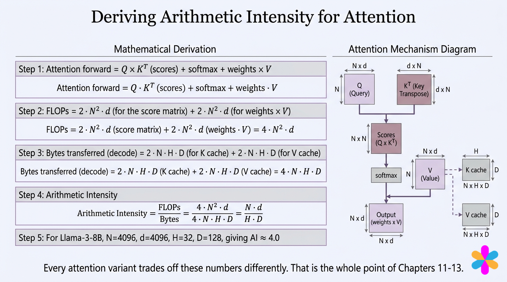
图 3.6。 左列：五步数学推导。右列：Q、K、V、softmax、输出矩阵的标注示意。最终公式：对一次有N 个 token、d 模型维度、H 个头、D 头维度的注意力前向传播，AI = N × d / (H × D)。
图 3.6 中的推导遵循任何内核的标准模式：
步骤 1。 识别运算。注意力前向是 softmax(Q · Kᵀ / √d) · V。我们关心主导的矩阵乘法：Q · Kᵀ（分数）和 weights · V（上下文）。
步骤 2。 计数 FLOPs。分数矩阵形状为 (N, N)，每个单元是维度 d 的点积，所以 FLOPs_scores = 2 × N × N × d = 2N²d。上下文矩阵形状为 (N, d)，每个单元是维度 N 的点积，所以 FLOPs_context = 2 × N × d × N = 2N²d。合计：FLOPs = 4N²d。
步骤 3。 计数字节。在 decode 期间，主导的字节成本是从 HBM 读取 K 和 V 缓存。每个缓存形状为 (N, H, D)，其中 H 是头数，D = d/H 是头维度。K 和 V 合计：2 × N × H × D × 2 bytes (FP16) = 4NHD。
步骤 4。 计算 AI：
AI_attention = 4N²d / 4NHD = Nd / HD
由于 d = H × D，这简化为 AI_attention = N × H × D / (H × D) = N。
步骤 5。 对 Llama-3-8B 在 N = 4096、d = 4096、H = 32、D = 128 求值：
AI_attention = 4096 × 4096 / (32 × 128) = 16,777,216 / 4,096 = 4,096
注意力 decode 的 AI ≈ 4096。那远高于脊点——注意力本身在 decode 期间是算力受限的！
这令人惊讶。意味着注意力运算不是内存带宽受限的瓶颈。瓶颈是投影矩阵乘法（Q/K/V 投影和输出投影）以及 FFN，它们在 decode 期间 AI ≈ 1。原因是 K/V 缓存每 token 很小，但投影的权重很大，且必须在每次前向传播中重新加载。
这正是为什么 MLA（第 8 章）帮助如此之大。MLA 收缩 KV 缓存，但注意力运算本来就不是瓶颈。MLA 的真正胜利来自一个辅助效应：缓存更小，你就能在 HBM 中装下更多并发序列，这让你能提高批量大小，从而沿 roofline 斜率往上移。
本书中的每一项技术都有类似的分层分析。Roofline 让你能在不混乱的情况下做这件事。
3.10：厨师与送货卡车：粘得住的类比
若上面一切都很数学密集，这一节是让 roofline 粘住的人类隐喻。
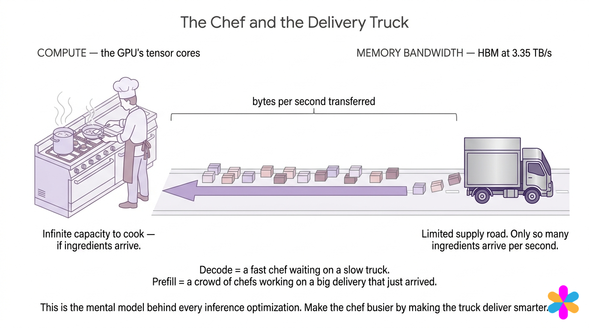
图 3.7。 两个面板。左侧，一位站在炉灶旁的厨师，标注为“COMPUTE，无限烹饪能力，若食材到达。”右侧，一辆小卡车，标注为“MEMORY BANDWIDTH，有限的补给路，每秒只能运这么多食材。”两者之间的箭头显示食材沿路流动。底部标注：“Decode = 一位快厨师等一辆慢卡车。Prefill = 一群厨师处理刚到达的大批货。”隐喻是这样的。GPU 有两种资源：很多厨师（计算单元），和一条窄送货路（HBM 带宽）。厨师做的每一道菜都需要食材。食材必须沿路运输。
内存带宽受限的内核是厨师比路更快的时候。他们大部分时间闲站着，等食材到达。你雇多少厨师都无所谓——若路很窄，你按路的速度烹饪，而不是厨房的速度。
算力受限的内核是厨师比路更慢的时候。食材在门口堆积得比任何人能煮的还快。现在瓶颈是厨师，雇更多人会有帮助。
脊点恰好是路以厨师消耗食材的相同速率交付食材的甜点区。路和厨房都不闲着。整场运作是平衡的。
本书中的运行时层技术，是在不雇更多厨师的情况下让厨房更忙的办法：
- FlashAttention 让更多烹饪本地化——它让厨师复用已经在台面上的食材，而不必把它们送回仓库再重新订货。
- MLA / MQA / GQA 让食材更小——每道菜沿路流过的产品体积更少。
- 量化 升级厨师——同一厨房现在每道菜能煮快两倍（更低精度的张量核心），而且每种食材也轻一半（每权重一半字节）。
- 连续批处理 把订单批在一起，这样一车货服务许多食客而不是一个——路仍以同样速率交付，但每次交付现在产出更多餐。
你累的时候记住这个隐喻。数学在上面；直觉在这里。
如何在实践中使用 Roofline
3.11：工作流：测量、放置、预测
Roofline 不是一个证明；它是一个工具。在实践中，推理工程师这样用它来诊断系统。
步骤 1。在你的实际工作负载上测量 AI。 多数分析器（NVIDIA Nsight、PyTorch profiler，或只是自定义埋点）能告诉你每次前向传播执行的 FLOPs 和传输的字节。相除。你得到 decode 内核的 AI，在多数未优化栈上会落在 1 附近。
步骤 2。画出你的工作点。 在图 3.1 上按你测得的 AI 放一个点。若它在脊点左侧，你是内存带宽受限的。若在右侧，你是算力受限的。
步骤 3。预测任何拟议变更的效果。 对每一个候选优化：
- 它往右移吗（提高 AI）？提高多少？把当前 AI 乘以期望比率；新点坐在那里。
- 它往上移吗（抬高天花板）？抬高多少？这只有在你已经算力受限，或往右移把你带到脊点时才有帮助。
- 它两者都做吗（量化）？合并两种移动。
步骤 4。按期望移动对优化排序。 一个在你内存带宽受限时把 AI 从 1 翻到 2 的优化，把吞吐翻倍。一个在你内存带宽受限时抬高天花板的优化什么都不做。没有 roofline 预测就不要交付任何东西。
步骤 5。变更后测量。 把预测点与实际点比较。差异是你学到自己对系统模型缺了什么的地方——通常是某种二阶效应，如缓存争用、内核启动开销，或同步成本。
在本书其余部分，每一个运行时章节都以一段“这落在 roofline 的哪里”结束。那就是始终书面回答步骤 3 的纪律。当你读第 7 章（KV 缓存）或第 10 章（FlashAttention）或第 13 章（量化）时，你会发现每一项技术都伴随着工作点如何移动的具体预测。测试自己：在读预测之前，试着从第一性原理自己做预测。若你能持续做到这一点，你就在像推理工程师一样思考。
3.12：Roofline 不告诉你的事
没有心智模型是完整的。Roofline 强大，因为它捕获了 GPU 内核的一阶行为。它也不完美。以下是它不建模的东西。
内核启动开销（kernel launch overhead）。 每次前向传播都有几百微秒的固定成本，用于调度内核、同步流，以及拷贝小张量。在非常小的批量上，这个开销占主导，roofline 会低估你实际花的时间。这就是为什么 CUDA graphs（预捕获的内核序列）在 batch 1 帮助如此之大——它们把启动开销摊销到几乎为零。
缓存效应（L1、L2）。 Roofline 把内存当作“HBM 或非 HBM”。真实 GPU 有 L2 缓存（H100 上 50 MB）和每 SM 的 SRAM（H100 上 228 KB）坐在 HBM 与算力之间。写得好的内核可以对有意义比例的读取命中 L2，这对该内核有效提高了带宽。FlashAttention 正是利用这一点：它对计算做分块，使 N×N 注意力矩阵住在 SRAM 中，从不碰 HBM。Roofline 把这当作 AI 变化，这近似正确，但丢失了层次细节。
低于公布峰值的内核特定天花板。 真实内核很少撞上公布的 FLOP 天花板。手调的 cuBLAS 矩阵乘法会达到峰值的约 85–92%。朴素的 PyTorch 内核会达到峰值的约 30–50%。我们在图 3.1 中画的“天花板”其实应该向下调整到内核的现实峰值——比方说，H100 上调得好的 FP16 内核是 800 TFLOPs，而不是 989。
异步内存拷贝。 H100 的 TMA（Tensor Memory Accelerator）允许权重加载与算力重叠。若你用得好，“带宽”天花板实际上高于额定的 3.35 TB/sec，因为你在流水线化。FlashAttention-3 就是专门设计来利用这一点的。
多 GPU 通信。 一旦你有不止一块 GPU，AllReduce 开销就进入画面。单块 GPU 的 roofline 不建模 GPU 间通信。第 16 章为那一层建立单独的模型。
所有这些局限都是二阶的。对一阶推理——“这个优化会帮忙还是伤害？”——简单的 roofline 就是你所需要的全部。
3.13：后续每一章的北极星
你现在有了北极星。从第 7 章起的每一个运行时层章节，都会以一句“放到 roofline 上”的陈述结束。陈述会点名方向（向右 / 向上 / 向右上）、期望量级（2 倍、10 倍），以及依赖（哪些其他条件必须为真，移动才会实现）。
第 7 章，KV 缓存，在缓存启用后把 decode 深深放在内存带宽受限区域，并推导为什么。缓存减少每 token 的 FLOPs，但留下字节不变，所以 AI 下降。点往左移，进一步进入内存带宽受限区域。这是我们在第 7 章预告、并花接下来六章修复的“KV 缓存的黑暗面”。
第 10 章，FlashAttention，把 decode 点往右移，通过消除 N×N 注意力矩阵的 HBM 流量来提高 AI。确切量级取决于序列长度；更长的序列看到更大的增益。
第 13 章，量化，把天花板往上移（FP8/INT4 下更大的 TFLOPs 天花板）并提高 AI（每权重一半/四分之一字节）。Decode 点往右上移。
第 14 章，连续批处理，爬上斜率。吞吐上升，直到你撞上脊点。
第 17 章，解耦 P/D，把图 3.2 的两个点分到不同硬件上。Prefill 点现在坐在算力优化的 GPU 上；decode 点坐在内存带宽优化的 GPU 上。Roofline 一分为二。
这些章节中的每一个都以图 3.1 为基础。这就是为什么本章在书中排第三。一旦你有了它，后续一切都装得进去。
3.14：接下来去哪
我们一直在谈推理，仿佛训练是一个已解决、从未发生过的问题。但推理是流水线的一半，另一半——预训练——塑造我们做的一切。在我们扎进具体技术之前，还需要一块基础：一张关于预训练实际做什么、它与推理如何不同，以及为什么那种差异是本书存在原因的清晰图景。
第 4 章是预训练的一页回顾——刚好够让随后的“朴素推理”章说得通。若你有 ML 博士，你可以略读。若没有，仔细读；它是第 5 章冗余论证所立足的地面。
第 4 章：一页讲完预训练
第 3 章给了我们坐标系——GPU roofline（屋顶线）——本书中的每一项推理技术都会落在其上。在我们能谈论这些技术本身之前，需要先谈清楚模型在运行时到底在做什么。这意味着要谈模型是如何被训练出来的。
本章是一次刻意的迂回。它是全书最短的一章，也不是对预训练（pre-training）的完整论述——别的书在这个主题上写了几百页。这里的任务更窄：确立关于预训练的若干具体事实，正是这些事实让“推理（inference）”成为一个有意义且独立的主题。
如果你有机器学习博士学位，请略读本章——材料是基础性的。如果你用过 LLM API，但从未自己训练过一个模型，请仔细读。我们在第 5 章关于推理的每一个论断，都将建立在这些事实之上。
为什么需要这次迂回
4.1：本章要确立的核心论断
推理工程师不是训练工程师。两门学科共享相同的模型架构（transformer 解码器）、相同的权重，以及相同的数学原语（矩阵乘法）。其余一切都不同。批处理不同。损失函数不同。硬件配置不同。优化目标不同。瓶颈也不同。
更精确地说：训练与推理是同一次 transformer 前向传播（forward pass），但输入形状相反、成本结构相反。训练使用大批量的长序列，末尾接损失函数；推理使用小批量的单个 token，末尾接采样函数。训练是算力受限（compute-bound）的，一次跑数月；推理是内存带宽受限（memory-bound）的，必须在毫秒内响应。
本章的任务就是把这一论断说清楚。一旦我们精确理解训练在做什么，第 5 章就能干净地展示什么是“朴素推理（naive inference）”（不过是训练的前向传播，但一次一个 token）、为什么它很浪费，以及必须改变什么。
预训练循环，逐步拆解
4.2：一张图看完整个循环
图 4.1 就是全部内容。
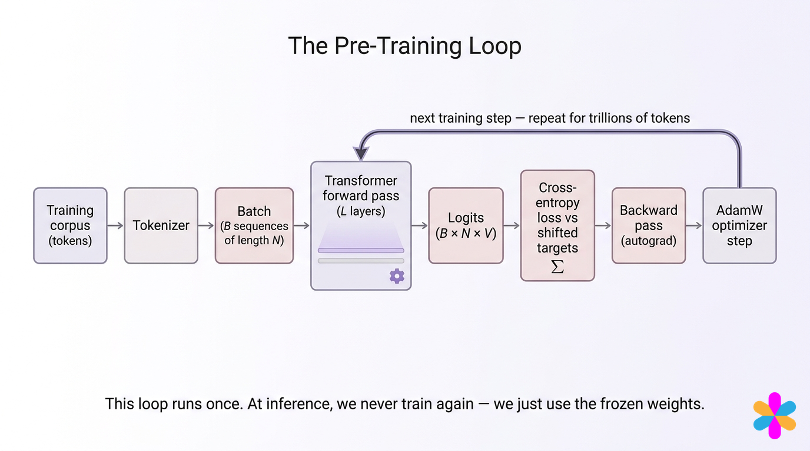
图 4.1. 一张含八个阶段的流程图：训练语料（tokens）、分词器（tokenizer）、批次（B 条长度为 N 的序列）、transformer 前向传播（L 层）、logits（B × N × V）、相对移位目标的交叉熵损失、反向传播（autograd）、AdamW 优化器步进。一条回路从优化器步进回到前向传播。回路上的标注：“对万亿级 token 重复。”图 4.1 中的循环在整个预训练期间持续运行。到 2026 年，预训练一个 700 亿参数的前沿模型大约需要 200 万 GPU 小时，分布在由 4,000 到 16,000 块 H100 级 GPU 组成的集群上，挂钟时间大约 2–3 个月。循环迭代数十亿次。每一次迭代消耗一个批次（batch）——合计通常为 200 万到 1600 万个 token——并根据模型在每个位置预测下一个 token 的好坏，对权重做一次极小的调整。
注意图 4.1 里有什么、没有什么。前向传播在其中（第 4 阶段），而这正是推理将使用的同一次前向传播。反向传播（backward pass）和优化器步进（optimizer step）也在其中（第 7、8 阶段），正是它们把训练与推理区分开——它们计算梯度并更新权重。数据流水线（data pipeline）在其中（第 1–3 阶段），它负责喂养 GPU。循环中的任何一点都不存在“服务用户”或“流式输出响应”的概念。训练是一个闭环。没有人在听。
推理是训练停止之后发生的事：权重被冻结，循环消失，一个不同的系统接手，其任务是用这些冻结的权重实时响应用户。不再有梯度。不再有更新。只剩一次冻结的前向传播，被一遍又一遍地调用。
这一差异——一侧是梯度与更新，另一侧是冻结权重——正是推理工程成为一门独立学科的全部原因。
4.3：模型实际在预测什么：左移一位
在谈论前向传播本身之前，我们需要精确说明模型被训练去做什么。有且仅有一个目标：预测下一个 token。给定句子的任意前缀，预测下一个词是什么。
图 4.2 展示了这一点如何实现。
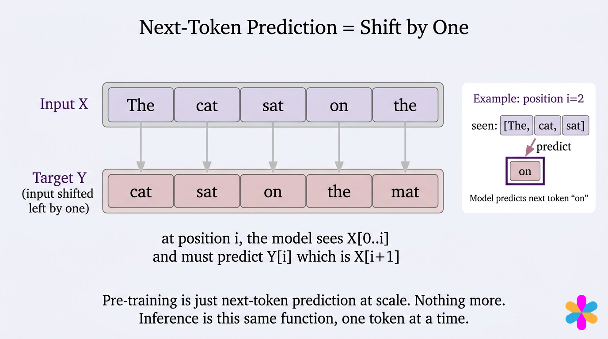
图 4.2. 两条水平的 token 条带。输入 X：[The, cat, sat, on, the]。目标 Y（输入左移一位）：[cat, sat, on, the, mat]。从每个输入 token 向下指向对应目标的浅色箭头。右侧：对于位置 i=2（输入为“sat”），模型看到 [The, cat, sat]，必须预测“on”。图 4.2 中的技巧很简单。如果训练语料是句子“The cat sat on the mat”，你构造两条 token 序列：输入 X = [The, cat, sat, on, the]，目标 Y = [cat, sat, on, the, mat]。目标就是 X 左移一个位置。
模型随后并行处理 X（一次处理全部 5 个位置，这正是 transformer 架构的要点），并产生 5 个预测，每个位置一个。在位置 0，它看到 [The]，被要求预测“cat”。在位置 1，它看到 [The, cat]，被要求预测“sat”。在位置 2，它看到 [The, cat, sat]，被要求预测“on”。在位置 3，[The, cat, sat, on] → “the”。在位置 4，[The, cat, sat, on, the] → “mat”。
这叫做教师强制（teacher forcing）。每个位置的预测都以前缀上的真实输入为条件，而不是以模型自己先前的预测为条件。教师强制让我们能够跨位置并行化训练：全部 5 个预测发生在同一次前向传播中，因为每一个只依赖于真实输入 token（我们本来就有）。
在推理时，我们失去了这一性质。推理时，模型必须以自己先前的输出为条件，因为我们没有“真实”的下一个 token——那正是模型应当产生的东西。这是自回归解码（autoregressive decoding）具有序列性的根本原因。第 5 章将详细展开。
4.4：训练与推理中的批处理
训练以非常大的批量运行。推理以非常小的批量运行。图 4.3 说明了这种不对称为何存在。
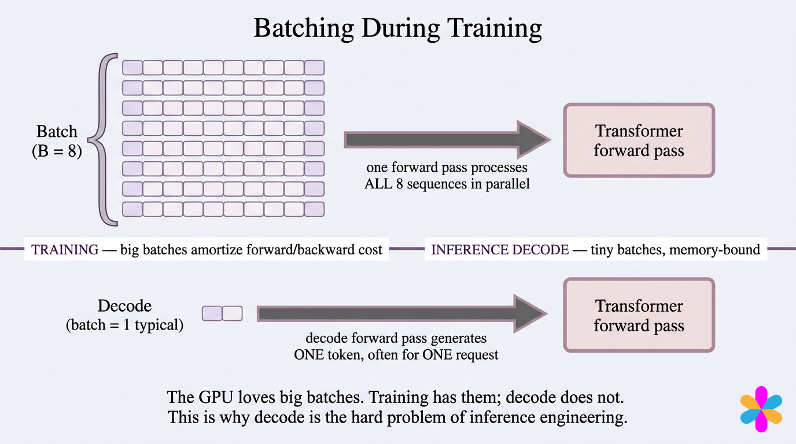
图 4.3. 左半：八条序列（batch = 8）送入同一次 transformer 前向传播，所有序列并行处理。标注：“TRAINING，大批量摊销前向/反向成本。”右半：单个 token（典型 batch = 1）送入一次前向传播，产生一个输出 token。标注：“INFERENCE DECODE，微小批量，内存带宽受限。”图 4.3 的左半展示了训练前向传播的样子。例如一个含 8 条序列、每条 2048 个 token 的批次，被组装成形状为 (8, 2048, d) 的单个张量。该张量被推过 transformer。每条序列的每个位置都产生一个预测。损失在全部 8 × 2048 = 16,384 个位置上取平均。每个批次计算一次梯度更新。
图 4.3 的右半展示了 decode 的样子。一次一个 token，(1, 1, d)，被推过 transformer，产生一个下一 token 预测。如果我们并行服务许多用户，可能在给定的一次前向传播中把 k 个请求批在一起，每步产生 k 个预测。但 k 通常是 1 到 32，而不是 8,192，因为这些序列彼此独立，且通常活跃在不同的物理请求上。
这种不对称带来我们关心的两个后果：
第一，训练是算力受限的，推理（decode）是内存带宽受限的。这正是我们在第 3 章用 roofline 推导出的那个区分。训练的批量足够大，把算术强度推到脊点之上；decode 的批量足够小，把它留在脊点之下。同一模型、同一硬件，相反的区间。
第二，训练的常数因子吞吐远高于 decode。在 H100 上的训练集群可能达到每 GPU 每秒 200–300 万 tokens（借助 FlashAttention-3 与最优批量）。同一批 H100 上的 decode 栈大约每 GPU 每秒 3,000 到 6,000 tokens。这 400× 的差距完全是因为训练每次加载权重会处理许多 token，而 decode 只处理一个。GPU 硬件相同；工作负载不同。
这也解释了为什么训练模型的同一家公司会深度关心推理成本。训练是一次性支付的资本支出。推理是永远支付的运营支出。在模型的整个生命周期中，推理算力通常超过训练算力 10× 到 100×。把推理做对，从经济上看，是更大的问题。
4.5：损失函数，讲一次
把前向传播与梯度更新连接起来的，是损失函数。图 4.4 逐步走查。
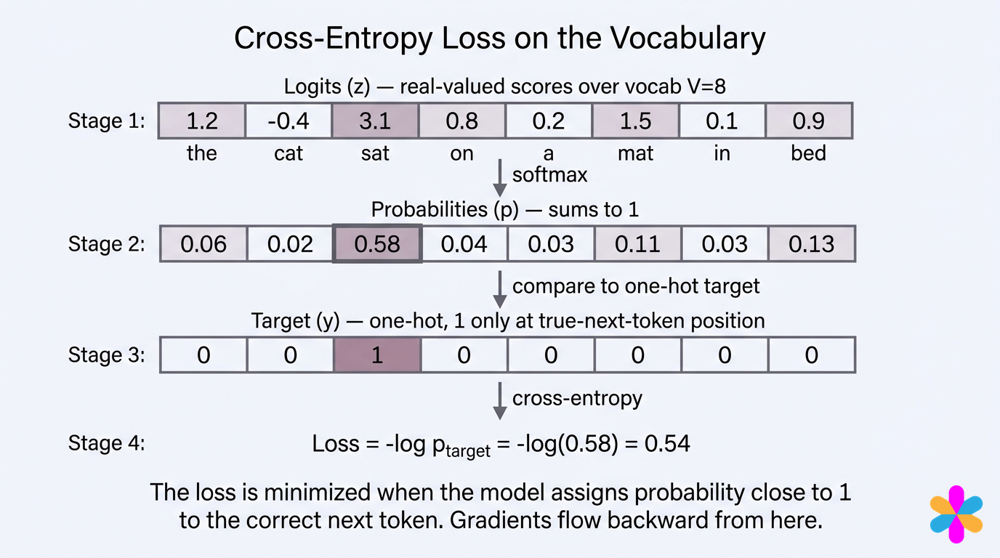
图 4.4. 四阶段示意图。阶段 1：原始 logits（词表 V=8 上的实值分数，例如 1.2、-0.4、3.1、0.8、……）。阶段 2：softmax 概率（总和为 1；“mat”对应的格子以 0.58 高亮）。阶段 3：one-hot 目标向量（仅在“mat”位置为 1）。阶段 4：loss = −log(0.58) = 0.54。交叉熵损失（cross-entropy loss）有四个概念步骤：
Logits。前向传播产生长度为 V 的实值向量（V 为词表大小，现代 LLM 通常为 32,000 到 200,000）。每个条目是模型给“该词表 token 是下一个”分配的未归一化分数。Logits 不受约束，可以是任意实数，正或负。
Softmax。对每个 logit 取指数并归一化，使向量总和为 1。这将 logits 转换为词表上的概率分布。logit 最高的 token 获得最高概率。
Target。真实的下一个 token（来自图 4.2 中移位后的目标 Y）被表示为 one-hot 向量：在其词表位置为 1，其余处处为 0。
Loss。相对 one-hot 目标的交叉熵损失简化为 −log(p_target)，其中 p_target 是模型赋给真实 token 的概率。如果模型把概率 1.0 赋给真实 token（完美预测），损失为 0。如果赋了 0.58（图 4.4 中的例子），损失为 0.54。如果赋了接近零的值，损失会飙到无穷大。
梯度随后从该损失反向流过 transformer 的各层（图 4.1 中的反向传播，第 7 阶段），AdamW 沿会降低损失的方向对模型中的每个权重做一次极小的步进（第 8 阶段）。然后新的批次到来，循环重复。
在推理时，这一切都不会发生。没有损失，没有梯度，没有更新。我们跑前向传播直到产生 logits。然后，不是把它们与目标比较，而是从中采样——按概率分布选出一个 token，并把它发给用户。第 5 章将走查推理期间前向传播究竟长什么样。
4.6：训练 FLOPs 与推理 FLOPs：3× 法则
这里有一个每个推理工程师都应该记在脑子里的事实。
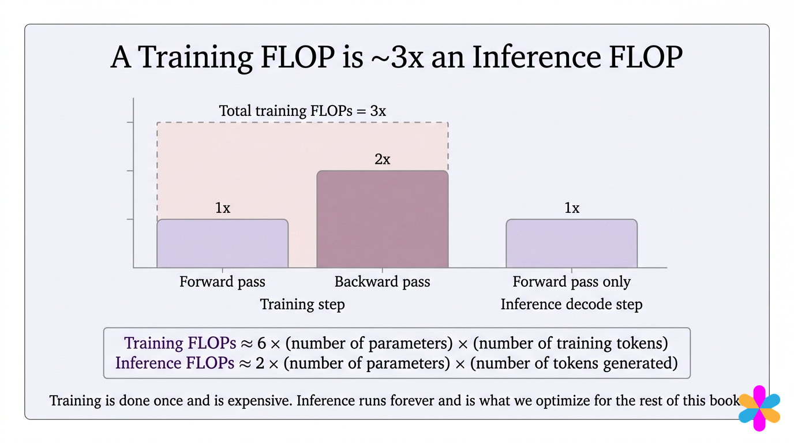
图 4.5. 两组柱状图。左组（训练步骤）：前向 = 1 单位，反向 = 2 单位，合计 = 3 单位。右组（推理 decode）：仅前向 = 1 单位。等式框：训练 FLOPs ≈ 6 × 参数量 × 训练 token 数。推理 FLOPs ≈ 2 × 参数量 × 生成的 token 数。一个训练步骤执行三次“前向等价”的传播：
- 前向传播。成本：1 单位（每个参数、每个 token 2 FLOPs）。
- 反向传播。成本：2 单位（计算损失相对每个权重的梯度，大约是前向传播工作量的两倍）。
- 优化器步进。成本：很小，通常可忽略。
每个 token、每个参数的总训练成本：6 FLOPs。这就是 LLM 算力预算中著名的“6× 法则”。预训练一个模型的总费用是：
Training FLOPs ≈ 6 × parameters × training tokens
对于 GPT-3（1750 亿参数，在约 5000 亿 token 上训练）：6 × 175e9 × 500e9 = 5.25 × 10²³ FLOPs。当时（2020 年），这大约相当于 355 个 V100 年。今天在 H100 上，大约是 26 个 GPU 年——正是一个前沿实验室为一个模型配置的那种算力规模。
相比之下，一个推理步骤是仅前向的：
Inference FLOPs ≈ 2 × parameters × tokens generated
对于生成 100 个 token 的 Llama-3-8B：2 × 8e9 × 100 = 1.6 × 10¹² FLOPs。以 H100 的 989 FP16 TFLOPs 计算，那是 1.6 毫秒的纯计算，完全微不足道。当然，实际 decode 时间由内存带宽主导（第 3 章），而非算力，所以上面的数字在实践中具有误导性。不过它确实正确回答了：“模型在推理时做了多少理论工作？”
3:1 的比率正是为什么一个优化良好的推理栈，在每块 H100 上，可以服务比训练集群产出高出几个数量级的 tokens-per-second。训练集群在做 3× 的 FLOPs，并运行在接近算力天花板处。推理栈在做 1× 的 FLOPs，并在良好工程下沿着带宽斜率攀爬。不同的区间，不同的数学，不同的瓶颈。
这一切对推理意味着什么
4.7：我们带走的三个事实
把本章浓缩下来，剩下三个事实，下一章将分别加以利用。
事实 1：推理使用与训练相同的 transformer 前向传播。相同的架构，相同的权重。你对训练期间“一个 transformer 块如何工作”的任何理解，都原样适用于推理。计算图上没有结构差异。
事实 2：训练每次前向传播处理许多 token；推理 decode 每次只处理一个。这就是推理受内存带宽限制而训练受算力限制的原因，也是本书每一项推理技术都可以被读作“如何从每次前向传播中榨取更多有用工作”的原因。
事实 3：推理没有梯度、没有损失、没有更新。权重是冻结的。这看似是一种简化，实际上是一种约束。在训练时，我们可以调整模型让它更快；在推理时，我们只能调整如何使用模型。本书中的每一项技术都是“如何使用”的技术，而不是“如何改变”的技术。例外——微调（fine-tuning）、蒸馏（distillation）、LoRA 适配器（第 22 章）——本身不是推理；它们是带来推理时收益的训练技巧。
4.8：不对称性通向何处
如果训练前向传播与推理前向传播是同一次计算，为什么推理需要一本自己的书？为什么我们不能只读训练论文就知道一切？
因为当输入形状改变时，成本结构完全改变。训练前向传播操作形状为 (B, N, d) 的张量，其中 B = 8+，N = 2048+。推理 decode 前向传播操作形状为 (1, 1, d) 的张量。相同的权重，相同的运算，但一个是矩阵-矩阵乘法（算力密集、高 AI），另一个是矩阵-向量乘法（内存带宽受限、低 AI）。
数学相同。物理不同。在 H100 上的矩阵-向量乘法使用不到 GPU 算力容量的 1%。GPU 无法帮你把权重跑得比内存总线能送达它们的速度更快。任何算法上的巧妙都改变不了这一点。
算法上的巧妙能做的，是减少每个生成 token 需要流经内存总线的字节数。这正是 KV 缓存所做的（第 7 章）、MLA 所做的（第 8 章）、FlashAttention 所做的（第 10 章）、量化所做的（第 13 章）、连续批处理（continuous batching）所做的（第 14 章）。这些技术中的每一项，都是在试图减少每 token 的内存流量，从而使每次搬运的字节能完成更多计算。
训练与推理之间的不对称性，正是本书存在的原因。训练发生一次，成本巨大，你可以承受，因为它是资本。推理永远发生，按用户计费，你无法承受朴素的成本结构，因为它随流量线性放大。推理工程师的工作，是拿起一个训练好的模型的冻结权重，让它们以比朴素实现低一到两个数量级的每 token 成本来服务 token。
4.9：接下来去哪
第 5 章拿起我们刚刚描述的预训练前向传播，展示当你试图朴素地把它用于推理时会发生什么。你会逐步看到，究竟什么是冗余的、什么可以被缓存。由此自然浮现的技术——KV 缓存——是本书后续每一项优化的基础。
然后第 6 章介绍我们一直在谈论却从未真正看过的 GPU 硬件。从第 7 章起，每一项运行时层技术，都是对那个已缓存推理循环中某个具体低效之处的回应。
Breadcrumb——基础已奠定
你现在已经读完了本书的前五章（第 0 章到第 4 章）。在我们踏入运行时层（runtime layer）——真正技术所在之处——之前，先暂停一下，盘点你此刻在这张地图上的位置。
到目前为止的旅程
你在第 0 章从一句断言出发：推理工程（inference engineering）是 2026 年应用 AI 中最举足轻重的学科。你从一个真实的 Vizuara 产品中看到了原因：一个实时 AI 导师每月 30 万美元的 Gemini 账单让经济账变得清晰——自托管开源模型不是一种优化，而是一种生存。你看到推理发生在六级硬件谱系上，从 Raspberry Pi（1–5 tok/s）到 Taalas（约 17,000 tok/s），而 Apple 正在打造业内最大的端侧（on-device）推理布局。
第 1 章给了你那张地图。三个同心环，运行时（runtime）、基础设施（infrastructure）、工具（tooling），以及为什么必须按这个顺序学习它们。运行时层关乎让一块 GPU 跑得更快。基础设施层关乎让多块 GPU 协同工作。工具层关乎交付。推理工程师站在这个交汇点上，而当下应用 AI 中最常见的失败模式，就是在不理解底下两环的情况下直接选用工具层（vLLM、SGLang）。
第 2 章给了你记分板。五个数字——TTFT、ITL、TPS、P99、$/M tokens——本书中的每一个推理决策最终都在改变它们。你看到了每个数字为何重要、如何测量，以及公司里哪一方会为哪个数字跟你争执。你还看到了系统吞吐量与单用户延迟之间的根本权衡，图 2.4 把它可视化了出来。记住 H100 上批量大小 16–32 附近的甜点区；这个数字还会回来。
第 3 章给了你北极星。GPU roofline（屋顶线）是本书所有技术赖以立足的那一张图。你从第一性原理推导了它——两道硬件天花板（带宽与算力）、决定你先撞上哪道天花板的算术强度（arithmetic intensity）、以及两者同时饱和的脊点（ridge point）。你把 prefill 和 decode 放到上面，看到它们处在相反的区间：prefill 是算力受限（compute-bound），decode 是内存带宽受限（memory-bound）。你还看到每一个运行时层技术都沿着三个方向之一移动工作点：向右（更高的 AI）、向上（更高的天花板）、或向右上（通过批处理爬上斜率）。后续每一章都会回到图 3.1。
第 4 章以一段对预训练的谨慎迂回结束了基础部分。你看到训练与推理是同一个前向传播，只是输入形状相反、成本结构相反。训练是算力受限的，使用海量批量，运行数月。推理是内存带宽受限的，使用微小批量，必须在毫秒内响应。你看到了训练 FLOPs 的 6× 法则和推理 FLOPs 的 2× 法则，也看到了为什么推理是支配模型整个生命周期的运营成本，大约是训练的 10× 到 100× 倍。
你现在能做什么
如果你读得仔细，现在你可以：
- 看到任何新的推理技术时问：它属于哪一层？（第 1 章的三个环。）
- 看到任何“加速”的说法时问：它改变了五个指标中的哪一个，又以其他指标为多大代价？（第 2 章。）
- 看到任何优化时问：它把 roofline 上的点往哪个方向移动？（第 3 章。）
- 看到任何 transformer 时知道：推理时权重是冻结的、前向传播是相同的、成本结构发生变化是因为批量维度从几百塌缩到一。（第 4 章。）
这四个透镜——层、指标、roofline、训练/推理不对称性——是你阅读本书其余部分所需的心智装置。从第 5 章起的每一项技术，都会用这四者来分析。
接下来去哪
剩下的二十五章是技术所在之处。路径大致如下：
- 第 5 章讲解朴素推理（naive inference）：当你直接使用预训练的前向传播、一次一个 token 时会发生什么。你会精确地看到什么是冗余的，这为 KV 缓存（KV cache）——推理中最大的单一优化——做好了铺垫。
- 第 6 章是唯一一章硬件内容：一次 GPU 巡礼，但只讲推理工程师真正接触的部分。SRAM、HBM、张量核心（tensor core）、warp、NVLink。
- 第 7 到 15 章是运行时层，用九章讲 KV 缓存、注意力变体、FlashAttention、PagedAttention、量化、连续批处理（continuous batching）和投机解码（speculative decoding）。这是本书的核心。
- 第 16 到 18 章是基础设施层：并行、解耦（disaggregation）、复制、路由。
- 第 19 到 21 章是工具层：深入 vLLM、SGLang、TensorRT-LLM，以及 2026 年的引擎格局。
- 第 22 章覆盖微调与蒸馏，因为它们涉及推理经济学，包括潜意识学习（subliminal-learning）实验。
- 第 23 章巡礼前沿：多模态（语音、音频、视频）与具身（世界模型、机器人流水线）。
- 第 24 到 26 章是顶点项目（capstone）：一个速度优化的服务器、在 Modal 上扩展到一百万用户、以及 OpenClaw-RL。
从第 5 章起节奏会改变。此前你一直在读基础。从这里开始，你读的是技术，其中大多数都配有显式的矩阵演练、具体的数字，以及每章结尾处一句“放到 roofline 上”的论断。
深呼吸。续上咖啡。第 5 章才是真正开始干活的地方。
第 5 章：朴素推理及其冗余
在第 4 章我们确立了：推理使用与训练相同的 transformer 前向传播，但批量维度塌缩了（每一步一个 token，而非数千个），而且没有反向传播。这是一句很紧凑的话。本章把它完全拆开，因为这句话里埋藏着整个应用 AI 中最大的浪费计算，以及解锁本书其余部分的那个单一优化。
计划如下。我们拿出第 4 章看到的预训练前向传播，尝试朴素地把它用于推理。我们在一个四 token 的玩具例子上逐 token 地走一遍，用真实的矩阵数值，观察发生了什么。到第五个 token 进入计算时，你会亲眼看到：注意力矩阵五行中有四行，在每一步都在从相同的输入到相同的输出被重新计算。这就是本章标题里的冗余。修好它——缓存之前 token 的 K 和 V 矩阵——你就得到了 KV 缓存，它把 decode 成本从每个 token O(N²·d) 降到每个 token O(N·d)。在一个 4,096 token 的上下文上，这大约是每一步 FLOPs 减少 1,000×。
本章有意做成矩阵密集型。阅读时手边放一个笔记本或这些图。每一个关于冗余的论断都会在具体数字上演示，而这些数字将成为本书其余部分反复使用的标准玩具数值。
自回归循环，一张图
5.1：朴素推理长什么样
推理始于一个提示（prompt），即用户提供的一串输入 token。“The next day is”在某个词表下被 tokenize 成类似 [0, 1, 2, 3] 的东西。模型的任务是产生下一个 token，把它追加到序列末尾，然后重复，直到某个停止条件（特殊的 <end> token、最大长度、用户取消）触发。
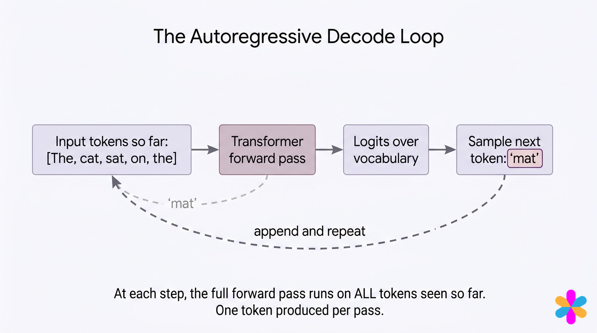
图 5.1. 水平流程中的四个方框。方框 1：“到目前为止的输入 token。”方框 2：“Transformer 前向传播。”方框 3：“词表上的 logits。”方框 4：“采样下一个 token。”一条弯曲箭头从方框 4 绕回方框 1，标注为“追加并重复”。图 5.1 是对自回归生成最简单可能的描述。循环的每一步：
- 取当前的 token 序列。
- 把它跑过完整的 transformer 前向传播（与训练中使用的同一个前向传播，见第 4 章）。
- 只提取最后一个位置的 logits（因为下一个 token 的预测就在那里）。
- 从这些 logits 中采样一个 token（使用 temperature、top-k、top-p 等任一配置好的策略）。
- 把采样到的 token 追加到序列末尾。
- 循环。
这是正确的算法。它产生正确的输出。运行这个循环的语言模型会生成与任何优化过的推理栈完全一致的连贯文本，语义上是相同的。但成本不是。每次经过循环，我们都对整个迄今的序列重新跑一遍完整的 transformer 前向传播。如果我们在 100 token 的提示之上生成了 500 个新 token，那么第 501 个 token 的 decode 步骤就要在 600 个 token 上跑一次前向传播。这就是问题所在。
5.2：为什么这个循环很贵
transformer 的前向传播成本随输入 token 数增长。对于长度为 N、隐藏维度为 d 的序列，主导运算是：
- Q、K、V 投影：
3 × 2 × N × d² = 6Nd²FLOPs - 注意力分数（Q · Kᵀ）：
2 × N² × dFLOPs - 上下文（权重 · V）：
2 × N² × dFLOPs - 输出投影：
2 × N × d²FLOPs - FFN（两层，4d 扩展）：
16 × N × d²FLOPs
每个 transformer 层，一次前向传播的 FLOP 成本大约是：
FLOPs_per_layer ≈ 24 N d² + 4 N² d
对于 d = 4096（Llama-3-8B）和 N = 600（我们假设的 500 token decode）：
FLOPs_per_layer ≈ 24 × 600 × 4096² + 4 × 600² × 4096
≈ 2.4 × 10¹⁰ + 5.9 × 10⁹
≈ 3.0 × 10¹⁰ （每层每次前向传播）
对于一个 32 层模型：每次前向传播约 10¹² FLOPs。
现在再乘以 500 个 decode 步骤（每个输出 token 一个）：5 × 10¹⁴ FLOPs，大约 500 teraflops 的计算量，才能生成一个 500 token 的响应。
其中大部分是被浪费的。我们马上就会看到确切的原因。
冗余藏在哪里
5.3：追踪两次相同的计算
考虑一个玩具系统上连续的两个 decode 步骤：从 N=4 个 token 到 N=5 个 token。4 token 的提示是“The next day is.”在第一次前向传播之后，我们采样下一个 token；假设它是“bright.”现在我们要对“The next day is bright.”做前向传播。
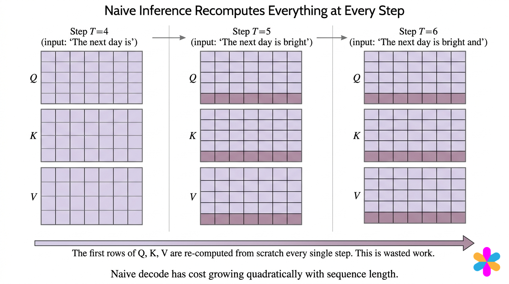
图 5.2. 三个堆叠的 Q、K、V 矩阵快照，分别在 decode 步骤 T=4、T=5 和 T=6。在 T=4，每个矩阵有 4 行（每个 token 一行）。在 T=5，每个矩阵有 5 行，前 4 行被高亮为相同的浅薰衣草色，新的第 5 行是更深的色调。在 T=6，同样的模式，6 行。下方标注：“Q、K、V 的前几行在每一步都从头重新计算。这是被浪费的工作。”仔细看 图 5.2。在步骤 T=4，模型计算了各 4 行的 Q、K、V 矩阵，每个 token 一行。在步骤 T=5，它必须产生各 5 行的 Q、K、V 矩阵，同样是每个 token 一行。前 4 行（The、next、day、is）在 T=4 和 T=5 之间是相同的，因为它们由相同的输入（同样的四个 token 嵌入）乘以相同的权重矩阵（W_Q、W_K、W_V，在训练时冻结）计算而来。无论 Q、K、V 在 T=4 是什么，在 T=5 那四行都完全相同。只有第五行（对应“bright”）是真正新的。
然而在朴素循环里，模型在 T=5 重新计算了全部 5 行。那 4 行没有变化的还是被重新计算了。然后在 T=6，它重新计算 6 行，其中 5 行没有变。依此类推。重新计算的成本随序列长度线性增长，而每一步的新信息却是恒定的一行。
这就是冗余。它一旦被说出来就显得微不足道，一旦被认出来就令人难堪，而一旦被测量出来就代价高昂。
5.4：玩具演练：详细看 T=4
让我们通过一步一步走一遍具体的前向传播、用具体数字，把冗余变得具体。这是你将在全书反复看到的那个标准玩具例子。
设定。 - N = 4 个 token：“The”、“next”、“day”、“is” - d = 4（模型维度，为可见性取小） - H = 1 个头，D = 4（头维度） - 总共两层；我们追踪一层
Q 和 K 矩阵。给定这些输入和冻结的权重矩阵 W_Q 与 W_K，模型产生形状为 (4, 4) 的 Q 和 K。对于本书通用的标准玩具例子，它们的值是：
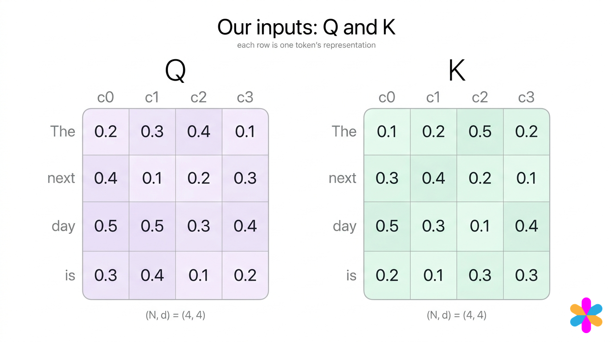
图 5.3. 两个并排的矩阵，各 4 行乘 4 列，行标签为“The”/“next”/“day”/“is”，列标签为 c0/c1/c2/c3。Q 在左侧为浅薰衣草色，K 在右侧为浅薄荷色。图 5.3 展示了 4 token 输入的 Q 和 K。Q 的每一行代表一个 token 的“查询（query）”向量，即该 token 在上下文中寻找什么。K 的每一行代表一个 token 的“键（key）”，即它提供什么以供匹配。这些数值是训练好的权重从“The”、“next”、“day”、“is”的输入嵌入中产生的。
注意力分数。下一步计算 scores = Q · Kᵀ / √d，对于 N=4、d=4 这是一个 4×4 矩阵。为了计算它，我们首先取 K 的转置：
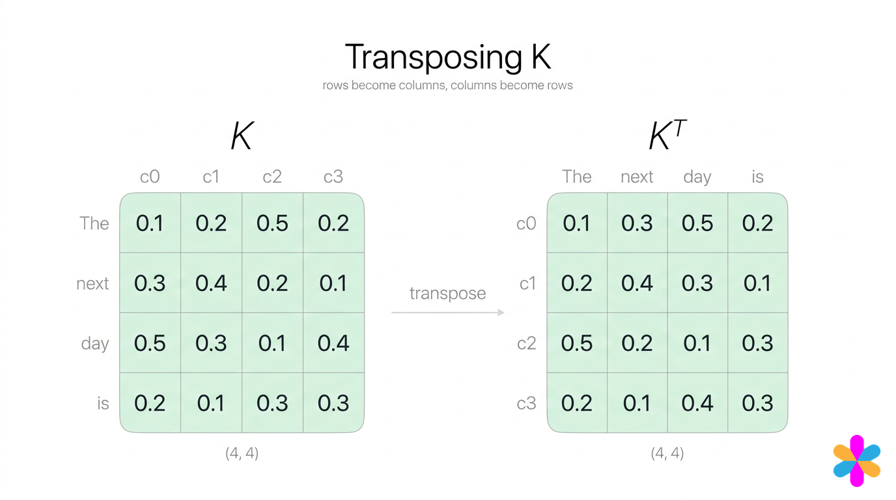
图 5.4. K 在左侧（行标签“The”/“next”/“day”/“is”，列标签 c0/c1/c2/c3）。中间有一条淡淡的“转置”箭头。K^T 在右侧（行标签 c0/c1/c2/c3，列标签“The”/“next”/“day”/“is”）。同样的数字，行变成列。现在我们把 Q（在左）乘以 K^T（在右）。结果的第 (i, j) 项是 Q 的第 i 行与 K^T 的第 j 列的点积，也就是 Q 的第 i 行与 K 的第 j 行的点积。例如，score[0][0] = “The” 关注 “The”：
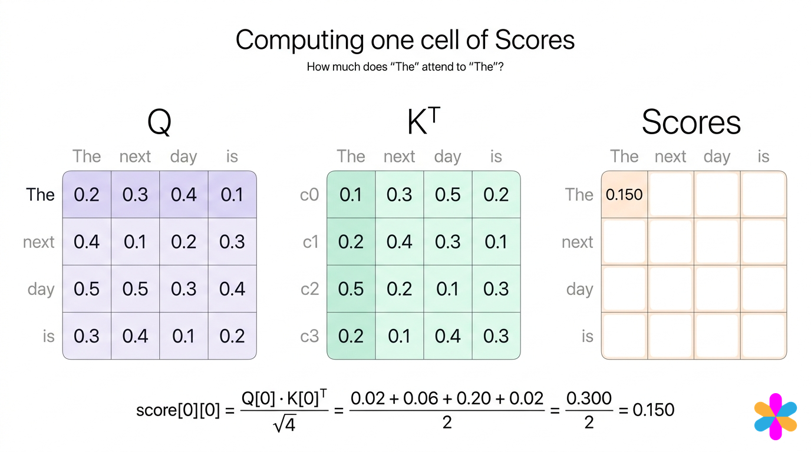
图 5.5. 一行中的三个矩阵。Q 在左，第 0 行（“The”）被高亮。K^T 在中间，第 0 列（“The”）被高亮。Scores 在右，只有单元 [0][0] 被填入 0.150。下方是等式：score[0][0] = Q[0] · K[0]ᵀ / √4 = (0.02 + 0.06 + 0.20 + 0.02) / 2 = 0.300 / 2 = 0.150。
score[0][0] = Q[0] · K[0]ᵀ / √4 = 0.150
把 Q 的第 0 行扫过 Kᵀ 的所有四列，填满 scores 矩阵的第一行：
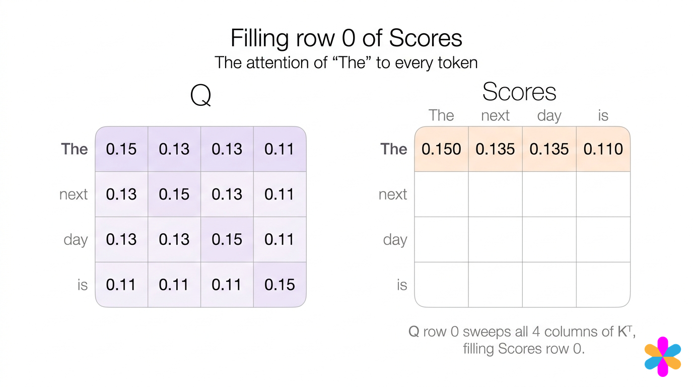
图 5.6. Q 在左，第 0 行被高亮。Scores 在右，第 0 行完全填满：[0.150, 0.135, 0.135, 0.110]。Scores 的第 1、2、3 行为空。标注：“Q 第 0 行扫过 K^T 的所有 4 列，填满 Scores 第 0 行。”对 Q 的其余三行重复这一过程，填满整个 scores 矩阵：
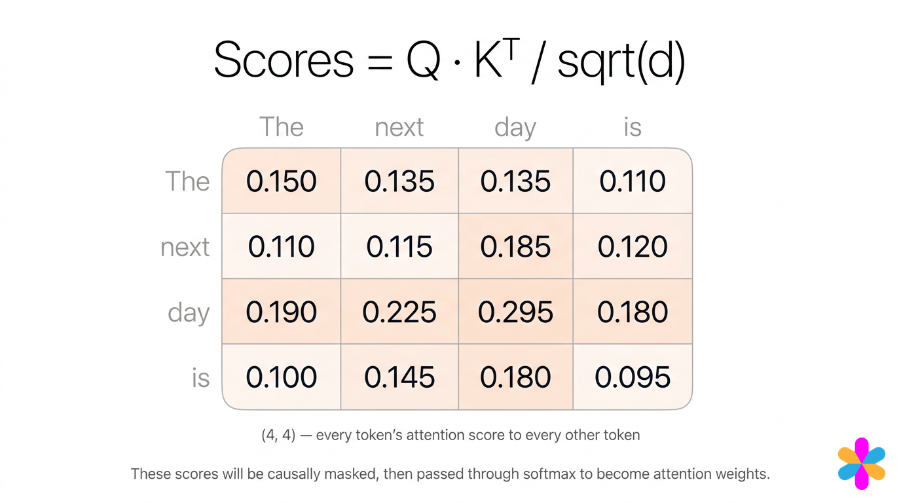
图 5.7. 完整的 4×4 Scores 矩阵。行标签和列标签为“The”/“next”/“day”/“is”。全部 16 个单元都已填满。Scores (4 × 4):
"The" "next" "day" "is"
"The" 0.150 0.135 0.135 0.110
"next" 0.110 0.115 0.185 0.120
"day" 0.190 0.225 0.295 0.180
"is" 0.100 0.145 0.180 0.095
经过因果掩码（causal mask，把上三角清零，使 token 无法关注未来）和 softmax 之后，这些分数变成注意力权重。把权重乘以 V 就得到 4 个 token 各自的上下文向量。上下文矩阵的全部 4 行都被计算出来，最后一行经过输出投影、FFN 和反嵌入（unembedding），产生 logits，从中我们采样出“bright”。
到此为止，一切都在预期之中。这就是第 4 章描述的标准 transformer 前向传播。现在看看 T=5 会发生什么。
5.5：玩具演练：T=5，冗余出现的地方
在 T=5，输入序列现在是“The next day is bright.”同样的权重矩阵 W_Q、W_K、W_V 被应用到一个 5 token 的输入嵌入上。
结果是一个 5 行的 Q 矩阵、一个 5 行的 K 矩阵、一个 5 行的 V 矩阵。每个矩阵都比 T=4 时多一行。
关键问题：每个矩阵的前 4 行在 T=4 和 T=5 之间会变吗？
不会。绝对不会。它们不可能变。Q 的前 4 行由 X 的前 4 行（“The”、“next”、“day”、“is”的输入嵌入）乘以 W_Q 计算而来。输入嵌入没变（它们来自同样的 token）。W_Q 没变（它被冻结了）。因此 Q 的前 4 行与它们在 T=4 时完全相同。对 K 和 V 同理。
只有第 5 行是新的，由“bright”的新嵌入乘以冻结的权重矩阵计算而来。
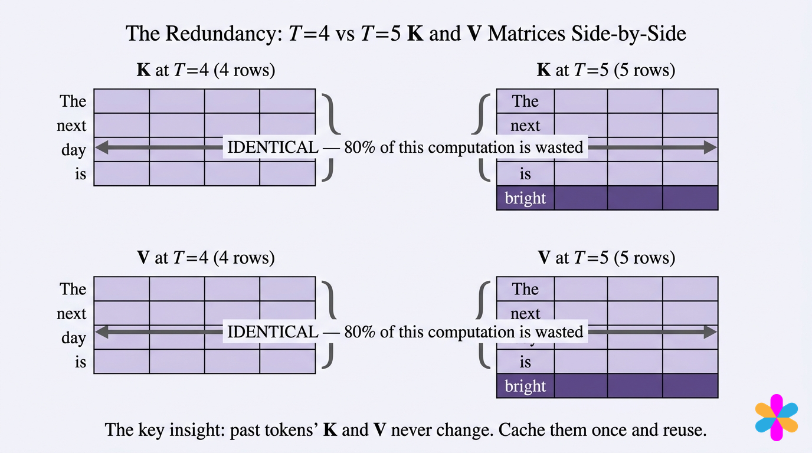
图 5.8. 两个并排的面板。左：T=4 时的 K，4 行浅薰衣草色。右：T=5 时的 K，5 行，前 4 行与左面板完全相同，第 5 行是更深的色调。一个大括号标注为“完全相同，这次计算有 80% 被浪费。”下方是一个镜像的 V 矩阵面板。图 5.8 让浪费变得可视化。T=5 时 K 的五分之四行与 T=4 时 K 的四行完全相等。如果我们在 T=4 的计算中保存了那四行，就不必在 T=5 重新计算它们。V 同理。
Q 是有意思的情况。T=5 时 Q 的前 4 行也与 T=4 的前 4 行相同，但我们不再需要这些行。Q[0] 到 Q[3] 在 T=4 被用来计算 token 0 到 3 的上下文向量，那些上下文向量产生了 token 1 到 4 的预测（回想第 4 章中的偏移一位）。在 T=5，我们只想产生位置 4 之后的下一个 token。那个预测来自位置 4 的上下文向量，它只需要 Q[4]，即新 token“bright”的查询。
换句话说：在 decode 步骤 T=5，我们恰好需要一个新 Q 向量（对应位置 4，即“当前”token），并且我们需要完整的 K 和 V 矩阵（全部 5 行），这样 Q[4] 才能关注到每一个之前的 token。Q 的之前那些行永远不会再被使用。
这就是那个洞见。缓存 K 和 V。不要缓存 Q。
5.6：我们真正需要什么，倒推
让我们从所需输出倒推，把这一点形式化。
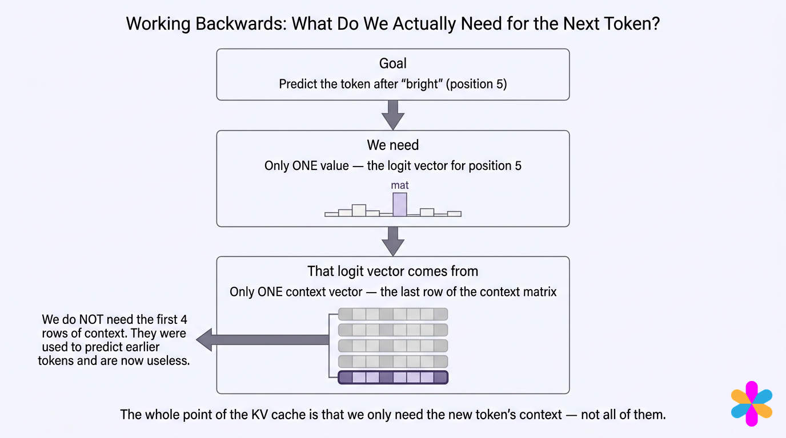
图 5.9. 三个自上而下的竖直方框。顶部：“目标：预测‘bright’（位置 4）之后的 token。”中间：“我们需要一个 logit 向量，对应位置 4。”底部：“那个 logit 向量来自一个上下文向量，即上下文矩阵的最后一行。”一个大注释箭头：“我们不需要 context 的前 4 行；它们预测了更早的 token，现在已经没用了。”下一个 token 的 logits 来自当前位置的上下文向量。位置 4 的上下文向量来自位置 4 的注意力权重（一行，长度 5）乘以完整的 V 矩阵（5 行乘 d 列）。位置 4 的注意力权重来自 Q[4]（一行）乘以 K^T 的所有 5 行，然后做 softmax 归一化。
所以在 decode 步骤 T=5 我们需要：
- Q[4]，新的查询向量。必须通过把新 token 的嵌入（一行）乘以 W_Q 来全新计算。
- K 的全部 5 行。必须存在于某处。
- V 的全部 5 行。必须存在于某处。
我们不需要 Q 的任何其他东西。Q[0] 到 Q[3] 在这一步无关紧要。
如果我们在 T=4 缓存了 K 和 V，那么在 T=5 我们只需要计算每一者的单个新行（对应“bright”）并把它追加到缓存中。我们不重新计算 0–3 行。我们也不重新计算任何只依赖于 X[0..3] 的其他东西，特别是不重新计算位置 0–3 的上下文向量，因为它们已经在 T=4 被用来预测各自的下一 token 了。
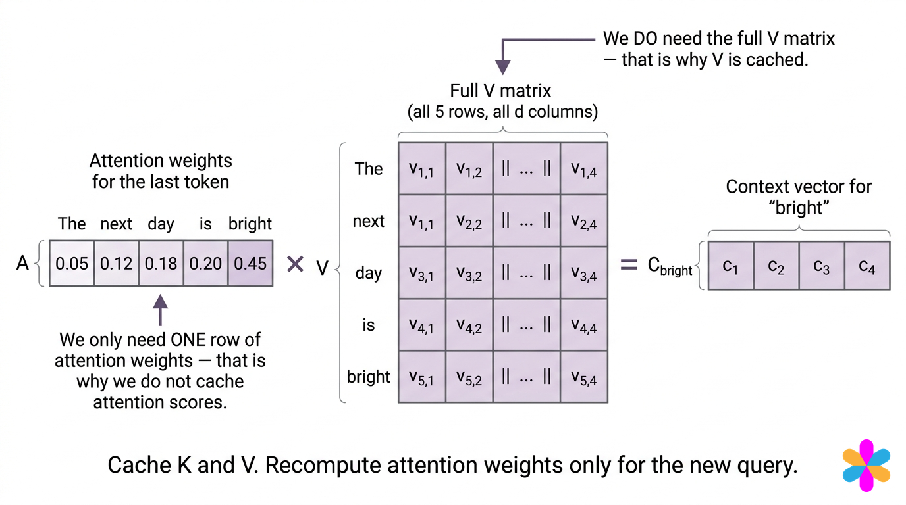
图 5.10. 从左到右的等式：最后一个 token 的注意力权重（1 行 × 5 列）× 完整 V 矩阵（5 行 × 4 列）= “bright”的上下文向量（1 行 × 4 列）。V 上的标注：“我们确实需要完整的 V 矩阵，这就是 V 被缓存的原因。”权重上的标注：“我们只需要一行注意力权重，这就是我们不缓存注意力分数的原因。”图 5.10 展示了最后的乘法。注意完整的 V 矩阵被用到了，全部 5 行，因为单个新查询必须关注到所有过去的 token。这就是为什么 V 必须被缓存（所有行跨步骤保留），而注意力分数可以每步只为那一行新查询重新计算。
这就是一句话策略：
在每一个 decode 步骤，为新 token 计算 Q、K 和 V。把新的 K 和 V 追加到一个持久缓存中。只为新的一行重新计算注意力权重。只为新的一行重新计算上下文向量。其他一切都作用在完整的缓存上。
5.7：哪些量被缓存，哪些被重新计算
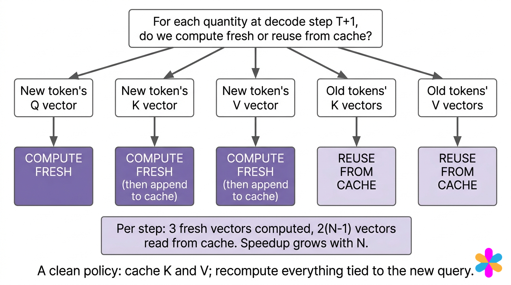
图 5.11. 一棵决策树。根：“对于 decode 步骤 T+1 的每个量，我们是全新计算还是从缓存复用？”五个分支：(1) 新 token 的 Q 向量，全新计算；(2) 新 token 的 K 向量，全新计算（然后追加到缓存）；(3) 新 token 的 V 向量，全新计算（然后追加到缓存）；(4) 旧 token 的 K 向量，从缓存复用；(5) 旧 token 的 V 向量，从缓存复用。下方：“每步：计算 3 个新向量，从缓存读取 2(N-1) 个向量。加速随 N 增长。”图 5.11 是调度总结。每个 decode 步骤：
- 全新计算（3 样）：新 token 的 Q、新 token 的 K、新 token 的 V。每个都是一行 × d 维。成本：1×d 输入乘以 d×d 权重的三次矩阵-向量乘法，共 6d² FLOPs。
- 从缓存复用（2×(N-1) 个向量）：K 的第 0 到 N-2 行，V 的第 0 到 N-2 行。这些从 HBM 读取；没有计算。
- 附带计算：单个新查询行的注意力权重（1×N）、新位置的上下文向量（1×d）、输出投影（1×d²）、FFN（1×d² × 4 及回程）、logits（1×d × V）。
缓存情形下每步的总 FLOP 成本：
FLOPs_per_step_cached ≈ 6d² (Q,K,V 投影) + 2Nd (1 个查询对 N 个键的注意力分数)
+ 2Nd (权重 × V 得到 1 个上下文行)
+ 24d² (输出 + FFN 投影)
≈ 30d² + 4Nd （近似，每层）
把它与 §5.2 的朴素成本 24Nd² + 4N²d（每层）对比。差异由 d² 项主导，恰好就是 N 这个因子：
FLOPs_naive / FLOPs_cached ≈ 24Nd² / 30d² ≈ 0.8 × N
对于 N = 4096，这是每个 decode 步骤 3,200× 的 FLOP 减少，一旦把带宽受限的情形也考虑进去，就几乎精确匹配本章开篇段落里的 1,000× 估计。
5.8：为什么缓存 K 和 V，但不缓存 Q？
我们在上面说过了，但值得单独用一节来讲，因为这是那种一旦看清楚就会牢牢记住的东西。
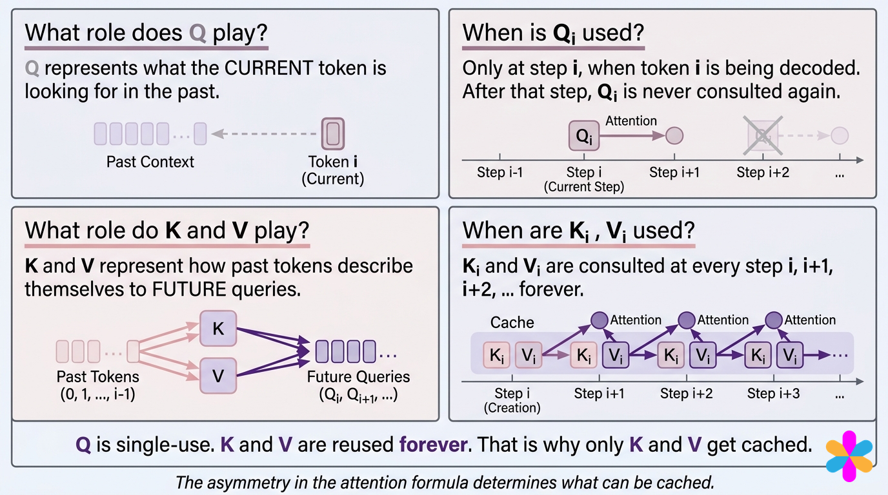
图 5.12. 一个 2×2 网格。左上：“Q 扮演什么角色？”，“Q 代表当前 token 在过去中寻找什么。”右上：“Q_i 何时被用到？”，“只在步骤 i，即 token i 被解码时。那一步之后，Q_i 就再也不会被使用。”左下：“K 和 V 扮演什么角色？”，“K 和 V 代表过去的 token 如何向未来的查询描述自己。”右下：“K_i、V_i 何时被用到？”，“K_i 和 V_i 在每一步 i、i+1、i+2、…… 永远都会被使用。”网格下方：“Q 是一次性的。K 和 V 永远被复用。这就是为什么只有 K 和 V 被缓存。”图 5.12 中的不对称性正是这种不对称缓存策略的依据。在注意力机制里，Q 来自“当前位置在提问”，而 K 和 V 来自“每一个过去的位置在回答问题”。注意力方程是：
attention_i = softmax(Q[i] · Kᵀ / √d) · V
对于位置 i 的 token，我们需要 Q[i]（一行），也需要位置 0 到 i 的 K 和 V（因为位置 i 关注所有之前的位置，包括它自己）。
下一个 token，在位置 i+1，我们需要 Q[i+1]（一行，全新的）。Q[i] 再也不会被使用。我们仍然需要位置 0 到 i+1 的 K 和 V，包括之前的那些。所以 K[0..i] 和 V[0..i] 被复用；Q[i] 不。
这不是一个聪明洞见；它是注意力公式的平凡推论。然而它却是生成本书几乎整个运行时层的那个洞见。KV 缓存是地基，第 7–15 章的每一项技术都是对 KV 缓存某一局限的回应，要么压缩它、要么共享它、要么重新安排如何访问它、要么围绕它的增长做调度。
5.9：FLOP 减少，量化
图 5.13 画出了朴素 vs 缓存 decode 的 FLOP 曲线随序列长度的变化。
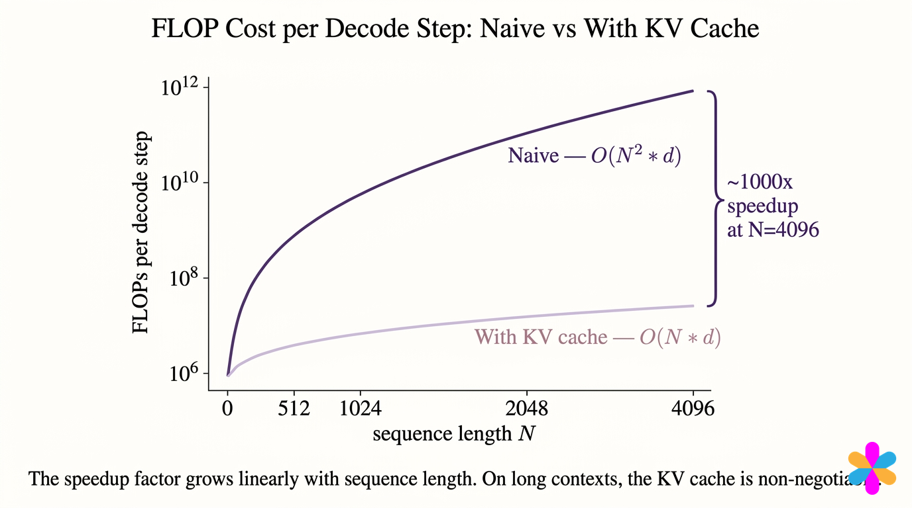
图 5.13. 一张折线图。X 轴：序列长度 N，从 0 到 4096。Y 轴：每个 decode 步骤的 FLOPs，对数刻度从 10⁶ 到 10¹²。两条曲线，朴素（O(N²·d)，二次上升）和缓存（O(N·d)，线性上升）。在 N=4096 处有一个竖直括号标注“约 1000× 加速”。图 5.13 中的差距就是 KV 缓存所弥合的差距。在短序列（N < 100）时，两条曲线很接近，二次项还没占据主导。在 N = 500 时，差距约为 100×。在 N = 4096 时，差距约为 1000×。在长上下文（N = 32K，现代模型常规达到）时，差距约为 10,000×。
没有 KV 缓存，任何上下文窗口超过几百 token 的 LLM 都无法在交互式延迟下可行。有了 KV 缓存，32K token 很轻松，128K token 是常态。现代聊天产品中的每一项长上下文能力，都追溯到这一个缓存。
加速及其后果
5.10：新的 decode 循环
这里是修订后的算法，既然我们现在缓存了 K 和 V。这就是每个现代推理引擎都实现的那个推理 decode 循环。
Algorithm: KV-cached autoregressive decode
Initialize:
- Compute and store K_cache = K[prompt], V_cache = V[prompt]
by running one parallel forward pass on the prompt (PREFILL)
- Set N := length of prompt
Loop:
1. Take the most recently generated token's embedding x_new (shape 1 × d)
2. Compute q_new = x_new · W_Q (shape 1 × d)
3. Compute k_new = x_new · W_K (shape 1 × d)
4. Compute v_new = x_new · W_V (shape 1 × d)
5. Append k_new to K_cache, v_new to V_cache (cache grows to N+1 rows)
6. Compute attention scores for the new query:
scores_new = q_new · K_cacheᵀ / √d (shape 1 × (N+1))
7. Apply softmax to scores_new, get attention weights (shape 1 × (N+1))
8. Compute context vector:
context_new = weights_new · V_cache (shape 1 × d)
9. Run output projection and FFN on context_new
10. Project context to logits
11. Sample next token, append to output sequence
12. N := N + 1
13. If end-of-sequence token or max length, exit; else go to 1
初始化时的 prefill 步骤只运行一次，并且是算力受限的（对 N 个提示 token 做一次常规的批量前向传播）。之后每一个 decode 步骤都很便宜，每步成本对于注意力部分是 O(N·d)，对于投影/FFN 部分是 O(d²)，而朴素推理中分别是 O(N²·d) 和 O(N·d²)。
这正是把第 3 章 roofline 中的 prefill 与 decode 区分开来的那个算法。Prefill 是算力密集的初始化；decode 是内存带宽受限的循环。KV 缓存正是让 decode 一开始就变得内存带宽受限的原因。没有缓存，decode 会像 prefill 一样算力密集。有了缓存，它丢掉了二次计算项，转而由每一步读取 K_cache 和 V_cache 所需的内存带宽主导。
5.11：这把你在 roofline 上放到哪里
回到第 3 章的北极星。KV 缓存把 decode 的工作点移到 roofline 的左侧。
原因如下。在 KV 缓存之前，朴素 decode 每步做 O(N²·d) FLOPs，并读取 O(N·d) 字节的 K 和 V（因为无论如何它都得读取所有过去的 token 来做注意力）。算术强度约为每字节 N 个 FLOP，大致与 prefill 相同，对于长 N 实际上是算力受限的。
在 KV 缓存之后，缓存 decode 每步做 O(N·d) FLOPs（主要是注意力核，因为投影现在是 1×d 而非 N×d），并读取 O(N·d) 字节的 K 和 V 缓存加上 O(d²) 字节的权重。算术强度下降到约每字节 1 个 FLOP，深深落在内存带宽受限区间。
KV 缓存解决了 FLOPs 问题，却制造了带宽问题。它用 1000× 的 FLOP 减少换来了一个带宽约束，这个约束成为本书剩余部分的头号瓶颈。
这就是我们将在第 7 章起着手解决的“KV 缓存阴暗面”。KV 缓存让推理变得可行。它也把 decode 置于这样一个区间：剩下的每一项优化都在于减少流经 HBM 的字节数，因为 FLOPs 早已是容易的部分。
5.12：prefill 与 decode，终于清晰区分
我们从第 0 章起就一直在用“prefill”和“decode”这两个词。现在它们有了精确的定义。
Prefill 是 KV 缓存算法的初始化阶段。给定一个 N token 的提示，对全部 N 个 token 跑一次并行的前向传播，产生完整的 K 缓存（N×H×D）、完整的 V 缓存（N×H×D），以及最后位置的 logits（从中采样第一个输出 token）。Prefill 是算力受限的，因为前向传播有 N token × d 维 × d² 权重的算术量，却只有 N×d 字节的激活要移动。算术强度约为 d/2，远高于 roofline 的脊点。
Decode 是 prefill 之后的主循环。每一步恰好处理一个新 token：计算新的 Q、K、V 行（各一个），追加到缓存，为这个新查询在完整 K/V 缓存上计算注意力，生成 logits，采样下一个 token。Decode 是内存带宽受限的，因为前向传播只为 1 个 token 的算术量就把完整权重矩阵从 HBM 搬了一遍。算术强度约为 1，远低于脊点。
这就是为什么 prefill 和 decode 在本书剩余部分被区别对待。它们不是同一操作的两个阶段，而是两种有着不同瓶颈的根本不同的计算。许多高级技术都利用这一区别：
- 解耦 prefill/decode（第 17 章）把它们放到不同的 GPU 上。
- 分块 prefill（第 12 章）把 prefill 分块与进行中的 decode 交错。
- 连续批处理（第 14 章）把多个 decode 打包进一次前向传播。
三者都依赖于 prefill/decode 的区别，而这一区别只有在有了 KV 缓存之后才有意义，这就是为什么我们在第 5 章为它命名。
5.13：我们为之付出什么
KV 缓存是推理工程中最大的单一加速。它也是我们仍需管理的那项最大成本的来源。
回想 KV 缓存大小的公式：
KV bytes = 2 (K and V) × N × H × D × L × 2 bytes per element (FP16)
= 4 × N × H × D × L
对于 N = 32,768 时的 Llama-3-70B：
KV bytes = 4 × 32,768 × 8 × 128 × 80 = 2.68 × 10¹⁰ = ~25 GB per user
每个用户会话 25 GB。在一块有 80 GB HBM 的 H100 上，其中 40 GB 是模型权重、5 GB 是激活工作区，在内存耗尽之前大约能容纳 1.4 个并发用户。这是不可行的。如果每个用户需要 25 GB，我们就无法同时服务很多用户。
这就是催生接下来十章的那个问题：
- 第 7 章完整地为这个权衡命名。
- 第 8 章跨注意力头压缩缓存（MHA → MQA → GQA → MLA）。
- 第 9 章跨 token 压缩（滑动窗口、线性注意力、状态空间模型、Mamba）。
- 第 10 章把注意力分块进 SRAM 以减少每步读取（FlashAttention）。
- 第 11 章把缓存分页以消除碎片（PagedAttention）。
- 第 12 章跨用户共享前缀并分块 prefill（前缀缓存 + 分块 prefill）。
- 第 13 章把缓存本身量化到一半字节（FP8/INT4 KV 缓存）。
这些章中的每一章都可以读作本章冗余论证的直接后裔。KV 缓存是地基；此后的一切都是对其成本的回应。
5.14：接下来去哪
我们从第一性原理推导了 KV 缓存，展示了它消除的矩阵级冗余，并把缓存与不缓存两种 decode 工作点都放到了 roofline 上。
在深入缓存压缩技术之前，我们还需要一块地基。我们一直把 GPU 当作一个黑箱来谈——“从 HBM 读取”、“算力天花板”、“算术强度”——却没有看硬件本身。第 6 章是本书唯一一章硬件内容：以推理为透镜看 GPU。流式多处理器（streaming multiprocessor）、张量核心、warp 调度器、内存层级、NVLink 与 InfiniBand。那一章里的每个硬件概念，都是我们一直在隐式假设的东西。第 6 章之后，我们就拥有了直面运行时层的全部工具。
第 6 章：机器（一台 GPU）
第 5 章以一个断言结束：KV 缓存把 decode 移到 roofline 的内存带宽受限区间。第 3 章引入了 roofline 本身——带宽斜率、算力天花板、脊点。两章都把“GPU”当作一个带有两个数字（带宽与峰值 FLOPs）的抽象盒子。实际上，GPU 不是盒子。它是一台分层的机器，而机器的每一层都至少触及推理工程师所做的一个决策。
本章是对那台机器的一次简短而聚焦的巡礼。它有意不做完整的 GPU 架构参考书——整本的教科书是为此而存在的。它恰好覆盖那些映射到推理工程决策的部分：为什么推理要在 GPU 上跑、内存层级长什么样、流式多处理器内部有什么、张量核心与 CUDA 核心有何不同、warp 和 block 是什么、以及 GPU 之间如何连接。我们在这里引入的每一样东西，都会在后面的章节里作为某项技术背后的硬件约束再次出现。
如果你已经懂这些内容，扫一眼即可。如果不懂，请仔细读，后续每一章都会假设你能在脑中想象 HBM、SRAM、张量核心和 NVLink 拓扑。
为什么我们需要一章硬件内容
6.1：当你看见这台机器时，什么改变了
在第 3 章我们用符号计算了算术强度：FLOPs 除以字节。那足以判断一个核是内存带宽受限还是算力受限。但不足以推理为什么。为什么 HBM 带宽是 3.35 TB/sec 而不是 33 TB/sec？为什么 FlashAttention 把工作集放进 SRAM 而不是 HBM？为什么张量并行在节点内通过 NVLink 通信、跨节点却用 InfiniBand？为什么 FP8 计算在 Hopper 上是 FP16 的两倍快？
这些问题中的每一个都有具体的硬件答案。你不需要记住答案，它们随每一代 GPU 而变。你确实需要知道答案的形态，这样当一块新 GPU 问世（H200、B200、B300、MI355）时，你就能读规格表并预测你的哪些推理技术会改善、改善多少。这就是本章的用途。
这是你将带走的一段话总结。一块现代 GPU 是约 100 个计算引擎（流式多处理器）的集合，每个里面包含数千个小型算术单元和一小块快速暂存内存。它们共享一大池慢内存（HBM），并通过高带宽互联（NVLink）彼此通信。当你跑推理时，你真正在问的是：我如何让那数千个算术单元保持忙碌，鉴于它们中的大多数会把大部分时间花在等待数据从 HBM 到达上？本章的每个硬件细节都是这一幅图景的细化。
这台机器，从外到内
6.2：为什么推理在 GPU 上跑，而不是 CPU
在我们打开盒子之前，先处理第一个设计问题：为什么要用 GPU？简短答案是：因为 transformer 推理几乎完全是矩阵乘法，而 GPU 把它的晶体管预算花在矩阵乘法硬件上，CPU 却把晶体管预算花在其他一切上。
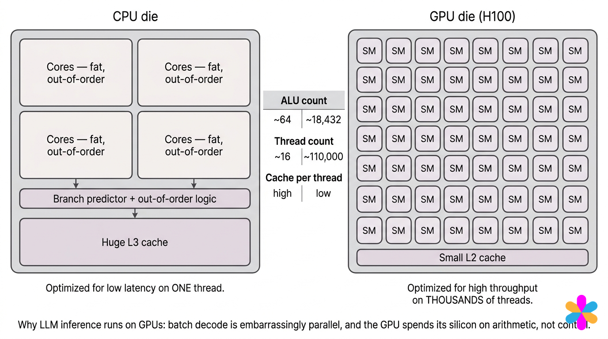
图 6.1. 两块并排的芯片晶片。CPU 晶片显示四个大核心，被一块巨大的 L3 缓存环绕，配有专门的分支预测和乱序执行逻辑。GPU 晶片显示大约 40 个小块——流式多处理器——密集排布，每个小块包含自己的计算单元和寄存器，只有一层薄薄的 L2 缓存。图 6.1 是精髓。CPU 被优化为让一个线程尽可能快地跑。它把大部分硅片花在复杂的控制逻辑、分支预测、投机执行、乱序调度，以及用于隐藏主存延迟的大缓存上。这对于有不可预测分支、指针追逐或复杂数据依赖的工作负载是正确的设计。编译器、数据库、操作系统、Web 服务器都依赖它。
GPU 被优化为在简单、统一的工作上并行运行数千个线程。它几乎不把硅片花在控制或缓存上，而是几乎全部花在计算单元、算术逻辑单元（ALU）、张量核心，以及喂给它们的寄存器上。这对于有大量统一并行工作和规则内存访问模式的工作负载是正确的设计。Transformer 推理正是这样的工作负载：每一层都是矩阵乘法，而每一次矩阵乘法都是数千个可同时运行的独立点积。
把数字放上来。一块现代 Intel Xeon 大约有 32–64 个核心，也许 128–256 个总算术单元（算上向量宽度之后）。一块 H100 有 132 个流式多处理器，每个有 128 个 FP32 CUDA 核心加四个张量核心，大约 18,432 条算术通道，外加专门的 MAC 硬件。CPU 可以快速启动少量线程；GPU 可以启动十万个线程并让其中大多数保持活跃。
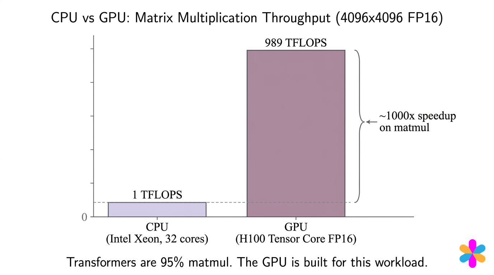
图 6.2. 一张条形图。在一个 4096×4096 FP16 矩阵上的矩阵乘法吞吐量。CPU（Intel Xeon，32 核心）：约 1 TFLOPS。GPU（H100 张量核心 FP16）：约 989 TFLOPS。GPU 条上方的括号写着“matmul 上约 1000× 加速”。对于一个具体工作负载，图 6.2 量化了这种不对称。一块现代 32 核 Xeon 在 4096×4096 矩阵上跑一个调优良好的 FP16 matmul 大约达到 1 TFLOPS。一块 H100 在其张量核心上跑同样的 matmul 达到 989 TFLOPS。同样的操作。三个数量级。这就是为什么一个装在 RAM 里的 CPU 托管 LLM（例如通过 llama.cpp）对一个 7B 模型只能跑大约每秒 5 个 token，而 GPU 托管的版本在数据中心 GPU 上每个用户能跑到每秒 200–500 个 token。
这也是 CPU 选项的极限。你可以在 CPU 上跑 LLM，对于低流量或隐私敏感的工作负载，这是合理的选择（见第 20 章对 llama.cpp 和 Ollama 的覆盖）。但你无法扩展它。CPU 无法像 GPU 那样通过把 matmul 部署到许多核心上使它更快——没有足够的并行通道。对于任何超出微不足道规模的推理工作负载，GPU 是正确的答案，本书的每一项技术都假设如此。
6.3：设定 roofline 天花板的内存层级
GPU 不是一种内存而是好几种，每一种都用容量换取速度。理解这个层级是理解 FlashAttention、PagedAttention 以及每一个操纵数据驻留位置的技术的前提。
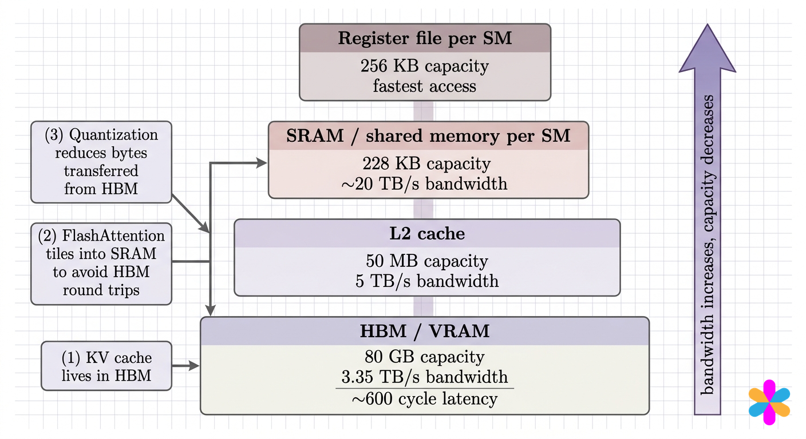
图 6.3. 一个竖直堆叠的四层存储，从底部（大而慢）到顶部（小而快）。HBM / VRAM：80 GB 容量，3.35 TB/s 带宽，约 600 周期延迟。L2 缓存：50 MB，5 TB/s。SRAM / 每 SM 共享内存：228 KB，约 20 TB/s。每 SM 寄存器文件：256 KB，最快访问。右侧箭头：“带宽增加，容量减少。”左侧标注把每一层绑到一个推理概念（KV 缓存在 HBM、FlashAttention 分块进 SRAM、量化减少 HBM 流量）。图 6.3 就是这个层级。四层，按容量递减、速度递增的顺序堆叠。
HBM（高带宽内存，有时叫 VRAM）。底部的大池子。在 H100 上是 80 GB；在 H200 上是 141 GB；在 B200 上是 192 GB。按任何历史标准，带宽都令人印象深刻——H100 上 3.35 TB/sec——但相对算力却慢得痛苦。回想第 3 章，H100 FP16 上的脊点是每字节 295 FLOPs，这意味着任何低于该算术强度的核都是 HBM 受限的。模型权重在这里。KV 缓存在这里。大多数激活张量在这里。每次你听到“内存带宽受限”，指的都是这一层。
L2 缓存。由整个 GPU 共享，H100 上 50 MB，H200 上 60 MB。它位于 HBM 与 SM 之间，自动缓存最近读取的数据。对于有良好局部性的核，一次 L2 命中大约比一次 HBM 访问快 10×。当正在处理的 K 和 V 块也正是相邻 warp 正在处理的块时，FlashAttention 受益于 L2 驻留。
SRAM / 共享内存（每 SM）。每个流式多处理器内部的快速暂存区。H100 上 228 KB。这是 FlashAttention 分块进入的内存——一个 64×64 的 FP16 数字块是 8 KB，远在预算之内，对它操作只需几纳秒，而从 HBM 取数要几百纳秒。SRAM 足够小，一个 SM 的核若想保持快，就必须让工作集装进这里。
寄存器文件（每 SM）。最快的一层。每 SM 256 KB，但被切分成每线程私有切片。一个线程通常能访问几十个 32 位寄存器。主导计算的融合乘加指令从寄存器读取操作数、乘加、再写回寄存器——整条指令在一个周期内执行完。寄存器是计算真正发生的地方。
特别注意这些数值比例。带宽在层级每上一级就大约提高一个数量级：HBM 3.35 TB/s，L2 约 5 TB/s，SRAM 约 20 TB/s，寄存器在线程内实际上是无限带宽。容量以同样的方式下降：80 GB、50 MB、每 SM 228 KB、每 SM 约 256 KB（但按线程）。这种反比关系不容商量。你不能同时拥有又快又大；这是由信号传播、功耗和晶片面积强加的物理定律。
图 6.4. 双对数散点图。X 轴：容量（字节）。Y 轴：带宽（TB/sec）。四个点——寄存器、SRAM、L2、HBM——大致沿一条下降对角线分布。一条虚线趋势线标注为“反比关系：越大越慢。”
图 6.4 让这个比例可见。四个存储层落在一条清晰的下降对角线上。如果你想把一个核在 roofline 上从内存带宽受限移到算力受限，你通过把它的工作集向上移过这个层级——移出 HBM、进入 SRAM 或寄存器——来实现。这正是 FlashAttention 所做的。这正是整个第 10 章的内容。而当有人说“这个核是 L2 驻留的”或“这个核装得进 SRAM”时，他们的意思是：工作集装得进那一层的容量，核所经历的带宽是那一层的带宽，而非 HBM。
这也是为什么上下文长度是硬件问题，而不只是算法问题。一个 70B 模型的 100K token KV 缓存是几十 GB。它装不进 SRAM；装不进 L2；勉强装进 HBM；它必须在每个 decode 步骤流经 HBM。那个流式传输主导了 ITL。本书中的每一项长上下文优化——MLA、滑动窗口、线性注意力、量化 KV 缓存——都是在尝试减少每个 decode 步骤流经 HBM 的字节数。
6.4：流式多处理器内部
流式多处理器（SM）是 GPU 的执行单元。当你启动一个 CUDA 核时，运行时会把它的工作分布在所有可用的 SM 上。一块 H100 有 132 个 SM。一块 B200 有 208 个。理解一个 SM 内部有什么，是理解为什么 warp、block 和张量核心按它们的方式行事的关键。
图 6.5. 一个代表一块 H100 SM 的大圆角矩形。内部有四个标为 Processing Block 0 到 3 的较小矩形，按 2×2 排列。每个处理块包含一个 warp 调度器、分发单元、FP32 CUDA 核心、FP16/BF16 张量核心、寄存器文件切片和加载/存储单元。四个块下方是一条标为“共享 L1 / SRAM（228 KB），由全部 4 个块共享”的宽条。
看图 6.5。一个 SM 被分成四个相同的处理块（processing block）。每个处理块有：
- 一个 warp 调度器。每个周期，调度器从几个驻留的 warp（每块最多 16 个 warp，每 SM 64 个）中挑一个，发出它的下一条指令。因等待内存而停滞的 warp 会被跳过，优先选择操作数就绪的 warp。这就是 GPU 隐藏内存延迟的方式——它总有另一个 warp 准备好运行。
- 一个分发单元。取来被选中 warp 的指令，把它路由到合适的执行流水线：FP32 CUDA 核心、张量核心、加载/存储单元，或用于超越函数的特殊功能单元（SFU）。
- FP32 CUDA 核心。每个处理块 32 个，每 SM 128 个。它们处理普通的标量浮点运算，是朴素核所运行指令的绝大多数。
- 一个张量核心。大型、密集的乘积累加硬件，每条指令对 16×16 矩阵块操作。一条张量核心指令执行数千次乘加。这就是 H100 上“989 TFLOPS FP16”这个数字成为可能的原因——没有张量核心，仅 FP32 CUDA 核心“只能”提供 67 TFLOPS。
- 一个寄存器文件切片。每个处理块 16,384 个 32 位寄存器，每 SM 65,536 个。寄存器在 SM 上当前驻留的 warp 之间划分。
- 加载/存储单元。发出内存操作，从 HBM/L2/SRAM 读取，写回 HBM。
四个处理块下方是一个共享单元：228 KB 的 L1 / 共享内存，外加一个 L1 指令缓存。共享内存就是 FlashAttention 分块进入的地方。每个处理块中每个 warp 的每个线程都能访问它，为协作提供了一个公共暂存区。
关于 SM 有几个事实对推理很重要：
warp 切换是免费的。当一个 warp 停滞（通常是等待一次 HBM 读取）时，调度器可以在一个周期内切换到另一个 warp。没有操作系统式的上下文保存/恢复，因为每个线程的状态永久驻留在寄存器文件里，什么都不需要保存。这就是 GPU 用来容忍 HBM 600 周期延迟的延迟隐藏机制：让许多 warp 保持驻留，并总是有一个准备好运行。
张量核心稀缺而巨大。每个处理块一个张量核心，每 SM 四个，H100 上总共 528 个。每一个能做约 2.5 TFLOPS 的 FP16 工作。对比每 SM 128 个 FP32 CUDA 核心总共约 10 TFLOPS 的吞吐——张量核心占主导。高效使用张量核心，正是一个核跑到峰值的 10% 与 80% 之间的区别。FlashAttention、TensorRT-LLM 和手工调优的 CUTLASS 核都做到了；朴素的 PyTorch 没有。
SRAM 由全部四个处理块共享。这就是为什么块 0 里的一个线程能读取块 3 里一个线程写下的数据。这也是 FlashAttention 的分块策略能跨单个线程块的 128 个线程协作的原因——它们都落在同一个 SM 上并共享同一片 SRAM 区域。
给推理工程师的要点：当你读到“FlashAttention-3 把 H100 推到 FP16 峰值的大约 85%”时，“峰值的 85%”意味着张量核心可能进行的操作中有 85% 确实在每个周期发生。剩下的 15% 损失在 warp 停滞、SRAM 存储体冲突，以及计算/内存不平衡上。第 10 章会追踪 FlashAttention 如何做到这一点；现在，只要理解这个数字来自核如何高效地使用图 6.5 中描绘的四个处理块。
6.5：张量核心与两道分开的天花板
我们在第 3 章触及了这一点，但没有解释硬件原因。现在讲。
图 6.6. 四个高度递增的竖直条。FP32 CUDA 核心：67 TFLOPS（基线）。FP16 张量核心：989 TFLOPS（基线的 14×）。FP8 张量核心：1,979 TFLOPS（基线的 29×）。INT4 张量核心：3,958 TFLOPS（基线的 59×）。上方标注：“视精度而定的 4 道分开的天花板。”
张量核心不是通用计算单元。它是一块非常专门的硬件，把一件特定的事情做得极快：取两个小矩阵块（FP16 通常是 16×16）和一个第三个累加器块，计算矩阵乘积并加到累加器上，然后写回。整件事只用一条指令。
关键的是，张量核心对不同精度有不同的硬件路径，而且精度越低路径越快。一个 FP16 块占据一个 FP32 块一半的硅片面积，所以同一个张量核心里能塞下两倍的块槽位。FP8 能塞四倍。INT4 能塞八倍。每次精度降低都让张量核心的峰值吞吐翻倍，代价是数值范围或精度。
这就是为什么图 6.6 显示四道阶梯式天花板而非一道。当一个核使用 FP16 张量核心时，天花板是 989 TFLOPS。当它使用 FP8 张量核心时，天花板是 1,979 TFLOPS——同一块物理芯片，重新组织以打包两倍的操作。当它使用 INT4 时，天花板是 3,958 TFLOPS。
这也是为什么量化不只是为了省字节。第 13 章会深入处理量化，但关键点已经在这里了：把一个模型从 FP16 量化到 FP8，既让每个权重的字节减半（对内存带宽受限的 decode 更好），又让算力天花板翻倍（对算力受限的 prefill 更好）。量化是那种少见的、在 roofline 的两个区间都能赢的优化。
一个提醒：达到更高的天花板需要 (a) 权重以更低精度存储，以及 (b) 一个真正为该精度使用张量核心路径的核实现。简单地跑一个 FP16 模型并告诉 PyTorch“用 FP8”，并不能给你 1,979 TFLOPS——你需要一个为 FP8 张量核心编写的核，这就是为什么 TransformerEngine、cuBLAS-Lt 和 TensorRT-LLM 这类库对实现量化收益如此重要。
6.6：HBM 就是 decode 瓶颈，明确地说
我们已经多次说过 decode 是内存带宽受限的。现在硬件图景把它变得字面化。
图 6.7. 一幅水平插图。顶部是一条非常宽的管道，标为“算力吞吐，989 TFLOPS（FP16 张量核心）。”底部是一条非常窄的管道，标为“HBM 内存带宽，3.35 TB/s。”小的数据块被显示为挤过窄管道进入宽管道。右侧一张卡片标注：“decode 步骤：每参数 2 字节 × 7B 参数 = 每个 token 加载 14 GB。以 3.35 TB/s 计，那是每个 token 4.2 ms 的纯 HBM 流量。算力大部分时间闲置。”
这里是图 6.7 中的具体算术。一个以 FP16 存储的 7B 参数模型是 14 GB 权重。要产生一个 decode token，整个权重张量必须从 HBM 读一遍——没有办法绕开；每个权重在每次前向传播中都被用到。以 3.35 TB/sec 的 HBM 带宽：
time = 14 GB / 3.35 TB/s = 4.18 ms
这 4.18 毫秒是Llama-3-7B 在 H100 上批量大小 1 时单用户 ITL 的下限。没有任何算法能更快，因为不读权重就无法产生 token，而在 H100 上无法比 4.18 ms 更快地读 14 GB。FP8 量化把它减半到 2.09 ms。INT4 量化到 1.05 ms。MLA 帮不上忙，因为 MLA 针对的是 KV 缓存，不是权重。FlashAttention 也帮不上忙，因为 FlashAttention 针对的是注意力内存流量，不是权重加载。即使在原则上，这个下限也是硬件的最终裁决。
要低于它，你需要把单次权重加载摊薄到多个 token 上。这就是连续批处理所做的——在同一次前向传播中服务 32 个用户，4.18 ms 被摊到 32 个 token 上，得到每个 token 0.13 ms 的有效值。这就是投机解码所做的——每次前向传播验证 K 个草稿 token，4.18 ms 覆盖 K 个被接受的 token。这些不是彼此独立的技巧；它们是图 6.7 中那条管道、以及“任何穿过它的东西都应被用于尽可能多的 token”这一认识的直接推论。
那条更宽的管道——算力——在 4.18 ms 的大部分时间里闲置。算力能做 989 TFLOPS，但为一个 7B 模型的一次前向传播只需执行约 28 GFLOPS（每个 token 2 × 7B = 14 GFLOPs，加上注意力）。那是 28 / 989,000 = 墙钟时间里算力容量的 0.003% 被利用。周期剩余的时间都在等待字节。
这种不对称是推理工程中最重要的一个事实，而第 3 章的每一张图（roofline）和图 6.7（管道隐喻）从不同角度说的是同一件事。
6.7：线程、warp、block 与 grid
我们一直在硬件层面谈论 SM 和张量核心。在软件层面，GPU 程序把工作组织成一个层级。你需要理解这个层级，因为那些名字会渗入每个 profiler、每个推理引擎配置和每份核描述。
图 6.8. 四个嵌套的方框。最内层：一个标为“1 thread”的单点。围绕它，一个框住 32 个点的方框标为“1 warp = 32 threads（SIMT 组）。”再外层，一个更大的方框标为“1 block = 最多 1024 threads，一个 SM。”最外层：一个框住许多 block 的方框标为“1 grid = 一次核启动的所有 block，横跨整个 GPU。”右侧是一个具体的映射示例：一个 FlashAttention block 处理一个 Q 块；一个 grid = 总共 N/64 个 block；一次张量核心运算 = 1 warp × 16×16×16 MMA。
图 6.8 是一张图里的层级。从内到外：
线程（Thread）。最小单元。一个线程有自己的程序计数器和自己的寄存器，执行一条指令流。把它想成一个工人。
Warp。一组 32 个以锁步（lockstep）执行的线程——同一指令、同一时间、作用于不同数据。这被称为 SIMT（单指令多线程），是 GPU 的核心并行原语。如果这 32 个线程想做不同的事（一个分支，有的走一条路、有的走另一条），warp 就会串行化：先让所有线程走路径 A（不该走的被屏蔽），再让所有线程走路径 B。这就是“warp 分歧（warp divergence）”，是性能损失的常见来源。写得好的核会避免它。
Block。一组最多 1,024 个线程（分成最多 32 个 warp），在单个 SM 上执行。同一个 block 里的线程可以通过 SM 的 SRAM 共享数据，并通过 block 屏障同步。当你写一个 CUDA 核时，你声明每 block 多少线程、总共多少 block；运行时把 block 分配给 SM。
Grid。一次核调用所启动的 block 的完整集合。一个 grid 可能有数千个 block；运行时把它们分布到 H100 的 132 个 SM 上。
对推理工程师来说，到技术的映射才是重要的。FlashAttention 为每个查询块启动一个 block；该 block 使用它的共享 SRAM 顺序地处理那个 Q 块对全部 K/V 块。张量并行把权重分片到多块 GPU 上，使每块 GPU 在矩阵的不同切片上跑同一个核。Paged attention 使用一个自定义核，其 block 结构与页表布局相匹配。
你很少会自己写这些核。但当你读到一个推理引擎配置标志如 max_num_blocks_per_seq（vLLM 的 PagedAttention）时，你会知道它的意思是“一个序列能占据多少个 16-token 的 KV 页”，这与注意力核的块级内存管理相关。当一个 profiler 说“warp 占用率 68%”时，它的意思是 SM 平均有约其理论最大 warp 数的 68% 驻留并准备好运行——这是判断一个核是否订阅不足的有用数字。
6.8：GPU 间带宽：NVLink 与 InfiniBand
以上一切都是关于一块 GPU 的。生产推理常常用很多块。它们之间的带宽决定哪些并行策略可行。
图 6.9. 一张水平条形图。上条（长，深薰衣草色）：“NVLink（节点内），900 GB/s。”下条（短得多，浅粉色）：“InfiniBand（跨节点），50 GB/s。”NVLink 条大约是 InfiniBand 条的 18× 长。下方标注：“张量并行必须留在节点内。流水线并行可以跨节点。”
图 6.9 中的两个数字支配每一个多 GPU 部署。
NVLink 是 NVIDIA 在服务器节点内的点对点 GPU 到 GPU 互联。在 H100 系统上，NVLink 在同一节点的任意两块 GPU 之间提供高达 900 GB/sec（每节点通常 8 块 GPU）。这极快，接近 HBM 带宽本身。
InfiniBand（通常是 HDR 或 NDR，现代集群用每端口 400 Gb/sec 的 NDR，每节点多个端口）是集群中服务器节点之间的互联。扣除开销后，有效跨节点带宽大约是 50 GB/sec。
比例大约是 18:1。这不是小差别。任何通信频率高的并行策略都会在 InfiniBand 上窒息，但在 NVLink 上跑得很干净。具体来说：
张量并行（TP）把每个 matmul 分到多块 GPU 上，并在每个 transformer block 之后需要一次 AllReduce。一个 70B 模型有 80 个 transformer block；TP 意味着每次前向传播 80 次 AllReduce，每次移动几十 MB。以 900 GB/sec 的 NVLink 计，一次 AllReduce 花几十微秒；微不足道。以 50 GB/sec 的 InfiniBand 计，同样的 AllReduce 花几百微秒，再乘以 80 层，就变成每步几毫秒，摧毁 ITL。TP 必须留在一个节点内。
流水线并行（PP）把模型按层组分片，使 GPU 0 有 1-20 层、GPU 1 有 21-40 层，等等。通信只在激活从一个阶段跨到下一个阶段时发生，每次前向传播一次，负载几 MB。即使在 InfiniBand 上，这也足够快。PP 可以跨节点。
专家并行（EP）把 MoE token 路由到持有其选中专家的 GPU 上。这是混合的：top-K 专家选择按 token 进行（高频率），但只有专家驻留在远程 GPU 上的 token 才产生跨节点通信。高效的 EP 设计让大多数专家与其分配的 GPU 同址。
第 16 章会详细展开这些并行策略。对本章来说，要点是多 GPU 拓扑不是你能随意做的选择。互联决定了什么可行，而互联由节点和集群的物理布局所设定。
6.9：多 GPU 节点拓扑，可视化
最后，一个生产多 GPU 设置实际长什么样？
图 6.10. 两个大圆角矩形，标为“Node 1”和“Node 2。”每个包含八个小 GPU 方框，按 2×4 网格排列，由标为“NVLink 网状，各 900 GB/s”的粗薰衣草色线完全互联。两个节点之间是一条细虚线，标为“InfiniBand，50 GB/s。”一个标注：“张量并行留在一个节点内；流水线并行横跨两者。”
图 6.10 展示了标准的推理集群架构。每个节点包含 8 块 GPU（有时 4 块，有时 16 块），由完整的 NVLink 网状连接——节点内每块 GPU 都能以 900 GB/sec 与节点内其他每块 GPU 通信。节点之间，一条细但可靠的 InfiniBand 链路承载跨节点流量。
这个拓扑解释了几条生产规则：
- 一个用 4 路张量并行服务的 70B 模型装进单个节点的四块 GPU 上；没有跨节点流量。
- 一个 405B 模型（Llama 3.1 405B）装不进 8 × 80 GB = 640 GB——实际上加一些量化它装得下——所以节点内 8 路 TP 可行。
- 一个万亿参数的 MoE 模型横跨多个节点。张量并行必须留在节点内（在 8-GPU NVLink 网状内）；流水线并行跨过 InfiniBand 链路到达其他节点。这就是为什么生产中的 Llama-3.1 405B 和 DeepSeek-V3 部署是 16 块 GPU 跨两个节点的 8 路 TP × 2 路 PP（或等价配置）。
当我们到第 16 章（并行）和第 17 章（解耦 P/D）时，请把图 6.10 记在心里。两章都会引用这里描绘的确切结构。
这台机器，总结
6.10：你现在知道了什么
你现在能读任何 GPU 规格表并预测它在推理上的表现。清单如下：
- HBM 带宽（字节/秒），设定 roofline 的斜率和 decode 的 ITL 下限。
- FP16 / FP8 / INT4 张量核心 TFLOPS，设定算力天花板。每个更低精度是一道分开的天花板。
- 每 SM 的 SRAM（字节），设定 FlashAttention 这类分块核的工作集预算。
- SM 数量，设定最大并行度和完全打满芯片的最小批量大小。
- NVLink 带宽（节点内，字节/秒），设定节点内哪些并行策略可行。
- InfiniBand 或 Ethernet 带宽（跨节点，字节/秒），设定跨节点哪些并行策略可行。
对 H100 这些是：3.35 TB/s、989 / 1979 / 3958 TFLOPS、228 KB SRAM/SM、132 个 SM、900 GB/s NVLink、50 GB/s InfiniBand。对 B200 数字大约是：8 TB/s HBM（2.4×）、2250 / 4500 / 9000 TFLOPS（2.3×）、228 KB SRAM/SM（不变）、208 个 SM（1.6×）、1800 GB/s NVLink（2×）。跨世代，内存带宽与算力之间的比例相似，两者都上升，脊点大致留在原处。
6.11：为什么这是最后一章硬件内容
从这里起，本书假设你无需被一步步引导，就能在硬件与推理概念之间翻译。当我们说“K/V 缓存在 HBM 上受压”时，你知道意思是：字节大到足以压迫 80 GB 预算，它们的读取主导了 roofline 的内存带宽项。当我们说“FlashAttention 分块进 SRAM”时，你知道意思是：N×N 注意力分数矩阵驻留在单个 SM 的 228 KB SRAM 暂存区里，从不碰 HBM。当我们说“跨 4 块 GPU 的张量并行”时，你知道意思是：那 4 块 GPU 在同一个节点里，由 900 GB/sec NVLink 网状连接，在每个 transformer block 之后运行 AllReduce。
这就是词汇表。第 7 章起会自由地使用它。
6.12：接下来去哪
我们有了这台机器。第 7 章回到第 5 章构建的 KV 缓存，提出下一个问题：既然我们有了缓存，它要花多少成本？在真实模型上它有多大？能装进 HBM 吗？装不下时会发生什么？答案，以及回应它的那些技术，就是接下来六章的内容。
第 7 章：KV Cache 的善与恶
第 5 章从第一性原理推导了 KV 缓存。第 6 章给了我们 GPU 硬件来推理它的成本。本章闭合这个环：缓存究竟省下多少 FLOP 工作、缓存究竟消耗多少 HBM、以及省下来的部分究竟在哪里变成一个新问题——那个接下来六章被写出来要解决的问题。
标题不是隐喻。KV 缓存是整本书中最大的单一推理加速，也是每一后续章节都在试图缓解的那项最大痛苦来源。这两个效应不可分割。你无法在拥有 FLOP 节省的同时不制造内存压力；消除二次计算的同一个数据结构，也正是那个在 HBM 里线性累积字节的数据结构。
把本章读作两个互补的论证。前半（到 §7.6）是“善”——仔细核算缓存给你买来了什么、在什么规模上。后半（§7.7 到 §7.11）是“恶”——仔细核算缓存让你付出了什么，以及它交给后续章节的难题。
KV 缓存是什么，它存储什么
7.1：数据结构
我们在第 5 章说缓存存储所有过去 token 的 K 和 V。让我们把这个数据结构说精确。
图 7.1. 一个把 KV 缓存可视化为形状 (N 个 token, H 个头, D 头维度) 的张量、在 L 个 transformer 层上复制、K 与 V 分开存储的堆叠图。堆叠周围的标注为每个维度命名：N 每个 decode 步骤加一；H 是 KV 头数（架构上固定）；D 是头维度（架构上固定）；L 是层数（架构上固定）；K 与 V 独立存储。
图 7.1 就是那个数据结构。对每个 transformer 层，我们存储：
- 形状为
(N, H, D)的 K 张量——所有 N 个过去 token、跨 H 个头、每个维度 D 的键。 - 形状为
(N, H, D)的 V 张量——所有 N 个过去 token 的值。
每个元素通常是 FP16 或 BF16，即 2 字节。跨 L 层相乘并计入 K 和 V 两者：
KV cache bytes per user = 2 (K and V) × N × H × D × L × 2 (FP16 = 2 bytes)
= 4 × N × H × D × L
除了 N 之外每一项都是架构上固定的——它是模型的属性，在训练时选定。只有 N（序列长度）在推理时增长，而且每个 decode 步骤恰好加一。
缓存是每用户、每会话的数据结构。每个并发用户有各自的 KV 缓存，因为每个用户有各自的对话。当用户会话结束时，它的缓存被释放。当新用户开始时，分配一个新缓存。这就是为什么 KV 缓存内存管理——我们将看到它支配 §7.7 中一块 GPU 的并发用户容量——成为生产推理服务的核心基础设施问题。
7.2：缓存 decode 循环，再说一遍
第 5 章从算法上走了一遍 KV 缓存 decode 循环。图 7.2 展示了单步的计算流。
图 7.2. 四个方框的水平流程。(1) 新输入 token 嵌入（一个向量）。(2) 只为新 token 计算 Q、K、V（各一行）。(3) 把新 K 和 V 追加到缓存；读取完整 K 缓存和 V 缓存。(4) 注意力：Q_new · K_cacheᵀ、softmax、乘以 V_cache，产生上下文向量。一个小插图显示 KV 缓存，其中新追加的一行被高亮。
每个 decode 步骤的工作是：
- 取最近生成 token 的嵌入（形状
1 × d）。 - 计算
q_new = x_new · W_Q、k_new = x_new · W_K、v_new = x_new · W_V，各形状1 × d。这些是仅有的全新 Q、K、V 计算。 - 把
k_new和v_new追加到缓存——K 和 V 矩阵从 N 行增长到 N+1 行。 - 计算注意力：
q_new · K_cacheᵀ / √d = scores（形状1 × (N+1)），然后 softmax → 权重，然后weights · V_cache = context（形状1 × d）。 - 应用输出投影、FFN、反嵌入。采样下一个 token。追加到输出序列。
- 重复。
缓存循环在最终答案的意义上做与朴素推理完全相同的数学，但每步的 FLOP 数从 O(N²·d) 塌缩到 O(N·d)，因为一切依赖于过去 Q 向量的东西现在都从缓存读取而非重新计算。
量化节省与成本
7.3：每个 decode 步骤省下的 FLOPs
图 7.3 比较了朴素与缓存 decode 的每步 FLOP 成本，跨现实的序列长度。
图 7.3. 一张分组条形图。X 轴：序列长度 N = 128、512、2048、8192。Y 轴：每步 FLOPs（对数刻度）。每组两根条：朴素（O(N²·d)，二次增长）和有 KV 缓存（O(N·d)，线性增长）。在 N=8192 处一个括号标注“每步少约 8000× FLOPs。”
对比很鲜明。在 N = 128，缓存版本比朴素版本省下大约 100× 的计算。在 N = 2048，省约 2,000×。在 N = 8192，省约 8,000×。节省比例与 N 本身成正比。
这正是长上下文根本可行的核心。一个 32K token 的对话在缓存 decode 下每步 FLOPs 比朴素少约 32,000×。没有缓存，长上下文下的每次交互都要每 token 花好几秒；有了缓存，只要几毫秒。服务长上下文 LLM 的整个实践都建立在这个加速之上。
图 7.4. 一张折线图。X 轴：序列长度 N，0 到 32,000（线性）。Y 轴：加速因子（朴素 FLOPs / 缓存 FLOPs），对数刻度从 1 到 100,000。一条直线线性上升，在 N = 128（128× 加速）、N = 1,024（1,024×）、N = 8,192（8,192×）、N = 32,000（32,000×）处标注。线上标注：“加速因子 = N。上下文每翻倍一次就翻倍。”
图 7.4 让这个线性关系变得明确。加速因子就是 N。上下文翻倍，加速翻倍。这是你记在脑中的公式：KV 缓存比朴素 decode 快约 N 倍，其中 N 是当前序列长度。在我们过于庆祝之前，应记住这是每步 FLOP 节省，不是墙钟节省。墙钟也取决于内存带宽，而这正是后续几节要拆解的那一半故事。
7.4：大小公式，仔细推导
现在我们转向成本一侧。公式在 §7.1 已经陈述，但值得一步步推导。
图 7.5. 一个有五个标注步骤的竖直推导。步骤 1：“对每个 token，我们存储 K 和 V 两者。”步骤 2：“每个 K 和 V 有形状 [H 个头, 每头 D 维] = H·D 个条目。”步骤 3：“跨 N 个 token，大小各为 N·H·D 个条目。”步骤 4：“跨 L 个 transformer 层，乘以 L。”步骤 5：“K 和 V 两者，每条目 2 字节（FP16）。”公式框：“KV cache bytes = 2 × 2 × N × H × D × L。”下方一个已计算示例卡片：“Llama-3-70B：N=32,768、H=8、D=128、L=80、FP16 → 约 43 GB。”
公式中的每一项都来自一个不同的架构维度，值得逐一命名。
- K 和 V 的因子 2。我们存储 K 和 V 两者，它们是独立的张量。
- N，序列长度。唯一在推理时增长的项。每个 decode 步骤一个新行。
- H，K/V 头数。架构上固定。对 MHA，H 等于注意力头数。对 GQA，H 是组数（小得多）。对 MLA，H 被一个不同的压缩维度替代（第 8 章）。
- D，头维度。通常是 64 或 128。架构上固定。
- L，transformer 层数。Llama-3-8B 是 32，Llama-3-70B 是 80，DeepSeek-V3 是 61。架构上固定。
- FP16 的因子 2。每元素两字节。量化 KV 缓存（第 13 章）把它降到 1 字节（FP8）或 0.5 字节（INT4）。
相乘得到最终公式：
KV cache bytes per user session = 4 · N · H · D · L
对 N = 32,768 的 Llama-3-70B：4 × 32,768 × 8 × 128 × 80 = 43 GB。那是每个用户。对一个用户、32K 上下文，光 KV 缓存就超过一块 H100 全部 HBM 的一半还多。
这就是压垮朴素生产部署的那个数字。一个工程师拿起 Llama-3-70B，看到它装进 2 × H100（140 GB 的 FP16 权重放进 160 GB HBM），就以为部署可行。然后第一个用户发来一个长提示，KV 缓存分配 43 GB，部署在第二个用户能连上之前就倒了。
7.5：真实模型缩放：会糟到什么程度？
图 7.6 在主要现代开源模型上画出这个公式。
图 7.6. 一张水平条形图，对数刻度。五根条，从上到下。GPT-2（124M）：12 MB。GPT-3（175B）：2.4 GB。Llama-3 70B：5.4 GB（N=4K 时）。带 MLA 的 DeepSeek-V3：0.6 GB。假设用 MHA 的 DeepSeek-V3：15 GB（虚线轮廓）。
图 7.6 讲述了这个随模型增长而增长的问题的故事。GPT-2（2019 年的模型）的 KV 缓存是个舍入误差，4,096 token 才 12 MB。GPT-3（2020）已经到每用户会话 2.4 GB，在当时 40 GB 的 GPU 上可见但可容忍。Llama-3-70B（2024）在 N = 4,096 是 5.4 GB；在长上下文（N = 32K）是 43 GB。
看底下两根条。带 MLA（多头潜在注意力，Multi-head Latent Attention）的 DeepSeek-V3 在同样规模是 0.6 GB。同一个模型若不用 MLA——如果他们用了标准 MHA——会是 15 GB。MLA 给出约 25× 的减少。这就是一个 671B 参数模型如何在一个可行的 GPU 预算上变得可长上下文服务：缓存在被分配之前就被架构压缩了。
我们将在第 8 章花时间理解 MLA 和其他头部压缩技术。现在，注意图 7.6 框定了问题：KV 缓存增长已经超过了模型增长。2019 年，缓存是个脚注。2026 年，缓存是大多数生产 LLM 部署里的主导成本，而缩小它的架构技术（尤其是 MLA）正是前沿长上下文模型在经济上可行的原因。
7.6：一块 H100 上装得下多少用户？
让我们回答一个推理工程师在第一周就会被问到的问题：我在一块 H100 上能服务多少个并发用户？
图 7.7. 一根代表 H100 80 GB HBM 的水平堆叠条，分段标为模型权重（70 GB，脚注说明 Llama-3-70B 在 FP16 实际是 140 GB 并需要 2× H100 TP）、激活/工作区（5 GB）、可用 KV 缓存（约 5 GB）。一个注释箭头指向 KV 缓存段：“约 5 GB / 每用户 43 GB = 一撮并发会话！”一张问题卡：“问：如何用更少的每用户 KV 缓存服务更多用户？”
图 7.7 做了核算。Llama-3-70B 在 FP16 有 140 GB 权重，一块 H100 装不下，所以生产系统用 2 路张量并行：每 GPU 70 GB。前向传播需要几 GB 激活工作区。这样每 GPU 剩下约 5 GB 给 KV 缓存存储。
如果每个用户在 N = 32K 的缓存花 43 GB，而我们每 GPU 只有 5 GB 可用，那就是每 GPU 不到一个用户。部署对长上下文不可行。即使在中等上下文（N = 4K，每用户 5.4 GB），单块 GPU 也勉强装下一个并发用户。
这就是后续章节里每一项优化存在的原因。不量化权重（第 13 章）或更激进地分片（第 16 章），每 GPU 5 GB 就没得商量。每用户 43 GB 正是 MLA、GQA、滑动窗口和量化 KV 缓存要攻击的。每用户每省下一字节，就多装进一个新并发用户。如果我们能把每用户缓存从 43 GB 降到 5 GB（9× 减少），就从 1 个用户到 9 个用户。如果降到 1 GB，就是 45 个用户。生产推理的经济学就悬在这些比例上。
这也解释了为什么 DeepSeek-V3 作为架构参考如此重要。它由 MLA 驱动的约 8–10× KV 缓存减少（相对 MHA）不只是一个聪明的技巧；它是可行生产部署与不可行部署之间的差别。
7.7：带宽问题：缓存如何让 decode 更内存带宽受限
到目前为止我们在数静止的字节。那运动的字节呢？缓存如何影响每个 decode 步骤的 HBM 流量？
图 7.8. 一张折线图。X 轴：序列长度 N，0 到 32,768。Y 轴：每 FLOP 传输的字节数（越低越好，是算术强度的倒数）。一条上升曲线标为“有 KV 缓存时，每 FLOP 字节数随 N 线性增长。”一条水平虚线标为“H100 内存带宽极限。”曲线在大约 N = 4K 处穿过这条线，此后保持在上方。N = 16K 处标注：“深度内存带宽受限。每个新 token 都需要把整个 KV 缓存再读一遍。”
这里有一个多数工程师第一次算它时都会吃惊的微妙事实。
每个 decode 步骤，我们从 HBM 读取整个 K 缓存和整个 V 缓存——每一行、每一个头、每一层。对 N = 32K 的 Llama-3-70B，那是每个 decode 步骤 43 GB 的缓存流量，外加 140 GB 的权重流量。以 H100 的 3.35 TB/sec，那是每个 token 纯缓存读取时间 43 / 3350 = 12.8 ms，加上每个 token 权重读取时间 140 / 3350 / 2 (TP) = 21 ms。在任何优化之前，单用户 ITL 下限是约 34 ms，而在长上下文下，其中大部分是缓存流量，不是权重流量。
更糟：随着 N 增长，字节增长，但每字节的 FLOPs 不成比例增长。注意力核的 FLOPs 按 N 缩放（一个新查询对 N 个键点积，乘以 d），而读取的字节也按 N 缩放（读取长度 N 的 K 和 V 缓存）。比例：FLOPs/字节大致恒定且很小，算术强度保持在 1–2 左右，无论上下文多长。
图 7.8 把它表达为“每 FLOP 字节数”，即算术强度的倒数。在短上下文，每 FLOP 字节数比率可控。在长上下文，比率线性攀升，越过一个阈值（H100 上约 N = 4K）后，它超过 HBM 带宽在算力速率下能提供的量。核变得深度内存带宽受限，算力单元大部分周期闲置。
这就是 KV 缓存让 decode 更内存带宽受限、而非更少的那个意义。缓存消除了二次 FLOPs（好），但幸存下来的线性 FLOPs 仍须由线性增长缓存的读取来喂（坏）。后续章节里的每一项缓存压缩技术都恰好攻击这一点：每步读取更少字节，使算术强度能保持更高。
7.8：权衡，一张表
图 7.9 总结故事的两面。
图 7.9. 一张两列表格。左列“善（我们赢得的）。”右列“恶（我们失去的）。”五行：(1) FLOPs 从 O(N²·d) 降到 O(N·d) | 内存字节按 N·H·D·L 增长。(2) decode 延迟降约 N× | 每用户内存占用线性增长。(3) 支持更长上下文 | 更少并发用户装进 HBM。(4) 消除冗余计算 | 增加带宽压力；decode 更内存带宽受限。(5) 让大规模交互式聊天可行 | 催生缓存压缩需求（MQA、GQA、MLA、滑动窗口、量化 KV）。
图 7.9 是资产负债表。每一条“善”都配着相应的“恶”——它们不是独立的清单，而是同一个工程对象的两面。值得注意的单元：
-
第 1 行。我们通过缓存原本会被重新计算的东西来省 FLOPs。但我们创建的缓存必须活在内存里，而既然我们每层每 token 缓存两个完整张量（K 和 V），字节就随序列长度线性缩放——这是 FLOP 节省的代价。
-
第 3 行。从计算角度看，更长上下文变得可行（每步 O(N) 即使在 100K token 也可负担）。但固定的 80 GB HBM 预算被缓存吃掉，留下更少并发用户槽位。一个在短上下文能服务 100 个并发用户的系统，在长上下文也许只能服务 4–5 个——同样的硬件、同样的模型。
-
第 4 行。我们消除了冗余计算（O(N²) 的朴素成本被塌缩）。但节省把我们向左移上 roofline：算术强度下降，带宽成为绑定约束，此后每一次 ITL 改善都需要直接攻击每 token 字节数。
7.9：这把 decode 放到 roofline 的哪里
图 7.10. 标准 roofline 图。两个标注的工作点。“朴素 decode，无缓存”放在中等算术强度，已内存带宽受限但更靠近脊点。“有 KV 缓存（大 N）”放在内存带宽受限区间更深处，更靠左。一条干净箭头从第一个点到第二个点，标为“KV 缓存把你向左移。”一个侧边图例：“更少 FLOPs（好），同样的字节（坏）→ 更低 AI → 更内存带宽受限。”
图 7.10 把前后放到 roofline 上。朴素 decode 坐在中等算术强度，它做 O(N²) FLOPs 并读 O(N) 字节，给出 N 量级的 AI，对大的 N 实际是算力受限的（如果我们负担得起算力的话——但我们负担不起）。
缓存 decode 坐在 1 量级的 AI，它做 O(N) FLOPs 并读 O(N) 字节，给出不随上下文长度而变的恒定 AI。深在内存带宽受限区间。
这是本书中最重要的 roofline 移动。后续每一章都以某种方式是对它的回应。
第 8 章跨注意力头压缩缓存。MLA、MQA 和 GQA 都降低每 token 字节数中的 H 因子，提高算术强度，把点向右移。
第 9 章跨 token 压缩。滑动窗口注意力、线性注意力和状态空间模型降低每 token 字节数中的 N 因子，同样提高 AI。
第 10 章通过 FlashAttention 把注意力移进 SRAM。N×N 注意力矩阵不再碰 HBM，于是一大股字节流量来源完全消失。
第 11 章把缓存虚拟化成页（PagedAttention），消除否则会限制缓存能在 GPU 上打包多密的外部碎片。
第 12 章跨用户共享缓存（前缀缓存）并分块长 prefill 以避免 decode 停滞。
第 13 章量化缓存本身。一个 FP8 或 INT4 KV 缓存有 FP16 缓存一半或四分之一的字节。
第 14 章批量处理并发用户 decode，使单次缓存读取服务多个 token，把点沿斜率向右上移。
这些技术中的每一个都是对图 7.10 中那个左移的直接回应。本书的其余部分就是那一连串的反击。
每个后续章节回答的问题
7.10：“我们能否只要 FLOP 节省、不要带宽成本？”
把整章放进一个问题：有没有办法既拿到 KV 缓存的 FLOP 节省，又不付出每步带宽成本？
直白的答案是没有，至少不完全。任何让下一个 token 以过去 token 为条件的架构，都必须以某种形式读取与过去 token 状态成正比的东西。缓存的字节是模型所用信息强加的一个下界。
但我们可以减小那个比例常数。更少的头。更小的维度。压缩的潜变量。量化的精度。滑动窗口。每一项都用一点模型质量换取每步缓存字节的成比例减少。把它们叠加够多，你就能以近乎相等的质量从每用户 43 GB 走到每用户 1 GB。
这就是接下来六章的计划，也是为什么第 7 章以这个问题收尾。我们从这里开始研究的每一项技术，都用两条标准来评估：它把缓存缩小多少，以及它在模型质量上花多大代价。
7.11：关于何时不压缩缓存的说明
不是每个部署都需要 MLA 或滑动窗口。如果你的上下文短（4K 以下）、并发用户负载适中（每 GPU 20 个以下）、模型小（13B 以下），H100 上的普通 MHA 缓存就很好用。只有当上下文长、模型大、或并发负载高时，带宽压力才变成真正的约束。
这很重要，因为每一项压缩技术都有质量成本，无论多小。如果你的部署不需要压缩，你就是在为一个不存在的问题付出质量。一个好的推理工程师不会默认应用每一项优化；他们测量当前工作点、识别绑定约束、并应用能缓解它的最小技术集合。
7.12：接下来去哪
第 8 章是对缓存带宽成本的第一次直接攻击：跨注意力头压缩缓存。我们将看到多头注意力（Multi-Query Attention，所有头共享一个 K/V）、分组查询注意力（Grouped-Query Attention，头按组共享）和多头潜在注意力（DeepSeek-V3 的创新，以缓存大小的一小部分给出接近 MHA 的质量）。到第 8 章末尾，我们将根据所选变体把缓存公式中的 H 因子削减 4× 到 32×，并精确看到哪些现代模型用哪个变体以及为什么。
第 8 章：跨头压缩
第 7 章以一个提问收尾。KV 缓存让 decode 可行却压迫 HBM，而 HBM 压力正是现在限制每用户上下文长度和并发用户密度的东西。我们能缩小缓存吗？
能。第一次直接攻击是架构性的：改变注意力的头如何共享键和值，使每个 token 需要存储的 K/V 向量更少。今天使用中有四种主要设计，按历史顺序引入：多头注意力（MHA，原始）、多查询注意力（MQA，2019）、分组查询注意力（GQA，2023）和多头潜在注意力（MLA，2024）。每一个都在压缩缓存的同时，尽力保留多头设计的模型质量收益。
本章走完这四种。每一个都配一张图、一个数值例子，以及它的每 token 缓存大小的推导。到结尾你会知道哪个现代模型用哪个变体、为什么 Llama-3 对 32 个查询头用 8 个 KV 头的 GQA、以及为什么 DeepSeek-V3 的 MLA 是当前生产中最精妙的压缩技术。
为什么头部共享是第一根杠杆
8.1：缓存公式，重排
回想第 7 章，每 token 每用户 KV 缓存字节是：
KV bytes per token per user = 4 · H · D · L
四个因子。两字节 × 2（K + V）。H（KV 头数）。D（头维度）。L（层数）。乘以序列长度 N 得到完整的每用户缓存。
其中，H 是最容易缩小的因子。L 由架构固定。D 由架构固定。4 字节除非量化（第 13 章）否则固定。但 H——不同 K/V 头对的数量——是一个设计选择。在原始 MHA 中，H 等于注意力头数。在 MQA 中，H = 1。在 GQA 中，H 是 1 到完整头数之间的一个选定组数。在 MLA 中，H 被一个更小的潜变量维度替代。
本章的每个变体都降低第一个因子，其余保持不变。H 降低 4×（比如通过 GQA 从 32 个查询头到 8 个 KV 头）就带来每 token 缓存字节 4× 的减少，意味着同样上下文长度下同一块 GPU 能多装 4× 的用户。这就是经济学上的理由。
8.2：为什么不一开始就用更少的头？
在我们开始削减之前，一个合理的问题：为什么 MHA 一开始要有多个头？为什么不用一个带有全维 K 和 V 的大头？
因为多个头让模型能同时关注不同种类的关系。想想句子“the artist painted the portrait of a woman with a brush.”一个头可能在学习“‘with’修饰哪个名词”（句法）；另一个可能在学习“哪个物体是工具”（语义）；第三个可能在学习“语法主语是什么”（结构）。拥有 32 个头（如 Llama-3-8B）意味着 32 个独立的注意力子空间，各自专精。这种视角的多样性正是 transformer 有效的原因。
完全移除头会毁掉这一点。激进地合并头会降低模型的表达能力，而在检索密集任务上（比如回答一个需要从 10K token 上下文中检索某个特定事实的问题），这会显现为可测量的质量回退。
所以本章的计划不是“消除头”。而是：保留 Q 头（使查询保留其多样性），但共享或压缩 K/V 投影，使缓存缩小。四种变体在共享的激进程度上不同。
图 8.1. 四张并排象形图。MHA：8 个 Q 圆，每个与自己的独有 K/V 配对。MQA：8 个 Q 圆全部指向一个共享 K 和一个共享 V。GQA：8 个 Q 圆分成 2 组各 4 个，每组共享一个 K/V。MLA：8 个 Q 圆指向一个小“潜变量”块，按需扩展到 K/V。每个面板下方：每 token 缓存大小公式。
图 8.1 是一张图里的本章。四种架构，同样数量的 Q 头，截然不同的 KV 缓存大小。
一次一种架构
8.3：MHA：多头注意力，基线
MHA 是原始设计。H 个注意力头中的每一个都有自己的全维 K 和 V 投影。一个 H = 32 头、每头 D = 128 的模型有 32 个独立的 (K, V) 对，每个形状 (N, 128)，每层每用户存储。
图 8.2. 一张标准注意力图。形状 (B, N, d) 的输入 X 通过 W_Q、W_K、W_V 投影成形状 (N, H, D) 的 Q、K、V。画了 8 条头通道，每条都有自己的独有 Q、K、V 切片。最终输出是所有头输出的拼接，再投影回模型维度。
图 8.2 为清晰起见展示了批量 B = 1 的 MHA。参数是：
W_Q、W_K、W_V，各形状(d, d)，所以注意力输入投影总共3d²个参数。- 每个产生形状
(N, H, D)的输出，其中d = H × D。
每 token 缓存是：
cache_MHA = 2 (K,V) × H × D × L × 2 bytes
= 4 · H · D · L
对 Llama-3-70B（如果它用 MHA 而非 GQA）：H = 64 头，D = 128，L = 80。每 token：4 × 64 × 128 × 80 = 2.6 MB。在 N = 32K：2.6 × 32,000 = 84 GB 每用户会话。完全不实用，这正是 Llama-3 改用 GQA 的部分原因。
MHA 是参考设计。它以最大的内存成本给出多头注意力最大的质量收益。本章的每个其他变体都是对那个成本的回应。
8.4：MQA：所有头共享一个 K 和 V
MQA 是最激进的压缩。所有 H 个查询头都关注一个共享的 K 矩阵和一个共享的 V 矩阵。K 和 V 矩阵形状是 (N, D) 而非 (N, H, D)。
图 8.3. 与 MHA 相同布局，但 8 条 Q 头通道全部汇聚进单个 K 向量和单个 V 向量。粗线显示所有 Q 喂进一个共享 K/V。
图 8.3 让共享变得可视化。参数数下降：W_K 和 W_V 从 (d, d) 缩到 (d, D)（一个头的输出维度）。输入投影变成 d² + 2dD 而非 3d²。
每 token 缓存缩小 H 倍：
cache_MQA = 2 (K,V) × 1 × D × L × 2 bytes
= 4 · D · L
对 Llama-3-70B 规模的架构（若用了 MQA）：每 token 4 × 128 × 80 = 40 KB。在 32K：每用户 40 × 32,000 = 1.3 GB。相对 MHA 的32× 减少。
这很极端。它应该让人觉得好得不像真的。它就是。
问题是质量。只有一对 K/V，所有头都必须关注跨上下文的同一种重要性模式。为多头注意力辩护的那个“不同视角”故事塌缩了。经验上，MQA 在检索密集基准上造成可测量但非灾难性的下降——标准评估上大约 0.5–2 个困惑度点，而在需要从长上下文检索特定 token 的 needle-in-haystack 任务上回退更大。
MQA 由 Noam Shazeer 在 2019 年提出，用于一些早期部署（PaLM、StarCoder），但很少用于现代前沿模型。它以太多质量换太多内存节省。下一个变体 GQA 给你大部分内存节省而不给大部分质量损失。
8.5：GQA：分组查询注意力，务实的中庸
GQA 是 MQA 更谨慎的表亲。不是为全部 H 个 Q 头共享 1 个 K/V，而是有 G 个 K/V 组，每组服务 H/G 个查询头。G 是可调旋钮——G = 1 给出 MQA，G = H 给出 MHA，而有趣的区间在两者之间。
图 8.4. 8 条 Q 头通道分成 2 簇各 4 个。每簇汇聚进一个共享 K 和一个共享 V。一组内的 4 个 Q 头各自关注同一对 K/V，但不同组有不同的 K/V。
图 8.4 展示 H = 8 时的 G = 2，每组四个 Q 头，总共两组。每 token 缓存公式调整为：
cache_GQA = 2 (K,V) × G × D × L × 2 bytes
= 4 · G · D · L
对真实架构的 Llama-3-70B（H = 64 个 Q 头，G = 8 组）：每 token 4 × 8 × 128 × 80 = 320 KB。在 32K：每用户 320 × 32,000 = 10 GB。那是相对 MHA（84 GB → 10 GB）的8× 减少。
GQA 是几乎每一个 2024–2026 前沿开源模型的默认选择：Llama-3（所有尺寸，G = 8）、Qwen-2 和 3（G = 4）、Mistral-Large（G = 8）、Command-R（G = 4）。原因是 GQA 落在质量-内存帕累托前沿的一个极好点上：保留 MHA 的大部分质量，却只付内存的一小部分。
图 8.5. 一张水平条形图，线性刻度。四根条：MHA 每 token 16,384 字节，GQA（G=8）4,096 字节，MQA（G=1）512 字节，MLA（R=512）1,024 字节。MLA 条标注“字节低且质量保留。”
图 8.5 在共同架构（H = 32、D = 128）上给四种变体标了数字。MHA 是基线，每 token 16 KB。GQA（G = 8）是 4 KB，少 4×。MQA 是 512 字节，少 32×。MLA（我们会看到）约 1 KB，少 16×，但没有 MQA 招致的质量回退。
8.6：为什么 Llama 选了 G = 8
Llama-3 的具体选择（32 个查询头配 8 个 KV 头，比例 4:1）不是偶然。图 8.6 展示它从何而来。
图 8.6. 两个并排面板。左：“困惑度 vs KV 头数”，一条下降曲线显示困惑度从 1 个 KV 头到 4 个 KV 头陡降，然后从 8 到 32 变平。右：“KV 缓存字节 vs KV 头数”，一条从 1 到 32 线性上升的线。两个面板都在 G = 8 处有一条竖直虚线，标为“Llama-3 选择：G = 8 → 4× 缓存减少，可忽略的困惑度损失。”
图 8.6 报告了经验消融（为清晰而简化，但匹配 Llama-2 论文及后续 GQA 基准记录的模式）。困惑度从 G = 1 到 G = 4 快速下降，然后变平。到 G = 8，相对完整 MHA 的困惑度差距在噪声之内——实践中你测不出质量差异。同时，缓存大小随 G 线性增长，所以更大的 G 花内存却买不到质量。
甜点区是困惑度平台的左边缘。对 32 头架构，G = 8 恰好就在那里：质量基本等同于 MHA，缓存小 4×。对不同架构，甜点区略微移动——Qwen-2 对较小模型选了 G = 4——但原则不变。你在找困惑度已平台化的最小 G。
这是嵌在模型架构里的一个推理工程决策。每个推理工程师都应能看一个模型报告的 num_key_value_heads 和 num_attention_heads、算出比例、并知道这个模型把它的缓存压缩得多激进。
8.7：MLA：两全其美
多头潜在注意力是四种里最新也最精妙的。它由 DeepSeek 在 2024 年引入（首次在 DeepSeek-V2，V3 中精炼）。与 GQA 通过跨头共享来减小缓存不同，MLA 通过在存储前把 K 和 V 压缩进一个更低维的潜空间来减小缓存。
图 8.7. 一个三阶段水平流水线。阶段 1：形状 (1, d_model) 的输入 token x。阶段 2：潜投影 c_KV = x · W_DKV，形状 (1, R)，其中 R << d。阶段 3：在注意力时，上投影 K = c_KV · W_UK 和 V = c_KV · W_UV 重建每头 K 和 V。一个单独的公式框展示吸收技巧：Q · K^T = (x · W_Q) · (c_KV · W_UK)^T 可被重写，使 K 在 decode 时从不被物化，只有潜变量 c_KV 被缓存。
图 8.7 就是 MLA。序列是：
-
下投影。对每个 token，把输入 x 乘以一个更小的权重矩阵 W_DKV（形状
d × R，其中 R 是潜变量秩，通常 512），产生形状(1, R)的潜向量 c_KV。缓存这个潜向量而非完整 K 和 V。 -
上投影（惰性）。当我们需要 K 和 V 做注意力时，把 c_KV 乘以上投影矩阵 W_UK 和 W_UV（形状
R × d）重建每头 K 和 V。原则上这会增加计算开销。 -
吸收技巧。我们可以在数学上把上投影 W_UK 合并进查询投影 W_Q，使 K 在 decode 时从不真正重建。注意力分数计算变成：
scores = Q · K^T = (x · W_Q) · (c_KV · W_UK)^T = x · (W_Q · W_UK^T) · c_KV^T
项 W_Q · W_UK^T 是一个常量矩阵，可在模型加载时预计算一次。叫它 W_Q_absorbed。那么：
scores = x · W_Q_absorbed · c_KV^T
被缓存的量只有 c_KV（小），从不缓存完整 K（大）。同样的技巧对 V 在最后加权求和步骤中奏效。
每 token 缓存是：
cache_MLA = R × L × 2 bytes (only c_KV, not full K and V)
= 2 · R · L
对 DeepSeek-V3（R = 512、L = 61）：每 token 2 × 512 × 61 = 62 KB。对同一架构假设的 MHA（H = 128、D = 128）：每 token 4 × 128 × 128 × 61 = 4 MB。MLA 相对 MHA 把缓存减少约 64×，却不丢失每头多样性（上投影 W_UK 在分数计算时仍产生不同的每头 K 向量，只是不存储它们）。
图 8.8. 同一模型容量的两根水平条。上：假设的 MHA，32K 上下文 80 GB KV 缓存。下：实际 MLA，10 GB KV 缓存。第二根条是 1/8 长。标注：“约 8× 减少，下游评估质量无损失。”
图 8.8 展示生产影响。DeepSeek-V3 在其完整参数规模（总共 671B，激活 37B）下，经济上可服务，恰恰因为 MLA 把它的 32K 上下文缓存从每用户约 80 GB 降到约 10 GB。没有 MLA，该模型在长上下文下实际不可访问。
质量故事是另一半。在标准基准（MMLU、HumanEval、长上下文检索测试）上，配备 MLA 的模型匹配或超过同参数规模的配备 MHA 的模型。每头多样性由上投影保留；缓存压缩几乎零质量成本。这就是 MLA 帕累托最优的那个意义——它在两条轴上都支配 MQA，在质量上匹配 GQA 而在内存上显著击败它。
8.8：帕累托前沿
图 8.9 在一个质量对内存的散点里画出四种变体。
图 8.9. 一张散点图。X 轴：KV 缓存内存（相对 MHA），对数刻度 0.03 到 1.0。Y 轴：下游任务质量（如 MMLU 分数）60 到 80。四个标注点：MHA 右上（完整内存、完整质量）。GQA（G=8）中间，小惩罚。MQA（G=1）左下（极小内存、可见质量下降）。MLA 左上，用星号高亮，接近 MHA 质量却只花一小部分内存。一条虚线帕累托前沿曲线穿过 MHA、MLA 和 GQA，但不穿 MQA。
图 8.9 总结选择。如果你只能为你的服务栈挑一个变体：
- 小模型（7B–13B）、中等上下文（到 8K）和适中并发需求：MHA 就很好；缓存还不是绑定约束。
- 标准部署（约 70B 模型、约 32K 上下文、单节点几十个并发用户）：G = 8 的 GQA 是默认。最小质量成本，4–8× 缓存减少。这是 Llama-3-70B 所用的。
- 极长上下文、高并发或极端效率：如果你有用它训练的模型（DeepSeek-V3，或任何采用该架构的人），MLA 是赢家。它给你与 MQA 相当的缓存节省、与 MHA 无法区分的质量。
- MQA 只在内存严重受限的边缘部署中可辩护，那里质量不是最高优先级。
8.9：关于参数数量的说明
缓存字节不等于参数数量。图 8.10 展示四种变体的参数故事。
图 8.10. 一张竖直条形图。四根条展示 d = 4096、H = 32 时单个注意力块的参数数量。MHA：3 × d² = 4.2B 参数（若缩放到完整模型）。MQA：2.3B。GQA（G = 8）：3.0B。MLA：2.5B。
图 8.10 显示 GQA/MQA/MLA 的参数节省远小于缓存节省（约 30–45% 的减少 vs 4–64× 的减少）。原因是 Q 投影（W_Q，形状 d × d）在所有变体中不变，只有 K 和 V 投影缩小。既然 W_Q 是三者中最大的，总参数数量不会大幅下降。
要点：这些变体的成本在训练时支付，而非在参数数量时支付。收益是推理时的缓存减少。不要为总参数数量优化你的变体选择；要为每 token 缓存字节优化，那正是图 8.5 所追踪的。
头部压缩把我们放到 roofline 的哪里
8.10：GQA 或 MLA 之后的工作点
回想第 7 章，KV 缓存把 decode 向左推上 roofline、进入更深的内存带宽受限区域，因为字节随 N 缩放而 FLOPs 停留在 O(N·d)。
头部压缩攻击字节公式中的一项。因子 H（或 MLA 的 R）被减少 4×（GQA）、32×（MQA）或约 64×（MLA）。每步字节成比例下降。算术强度——FLOPs 除以字节——成比例上升，因为 FLOPs 大致不变（注意力核在前向传播中仍对同形状的中间张量操作，只是来自压缩的缓存来源）。
用 roofline 的话说：每个变体都把 decode 点向右移，移回脊点。压缩越激进，点移得越右。
它到达脊点了吗？没有，单靠它不够。即使 MLA 的 64× 压缩也把算术强度留在个位数，仍内存带宽受限，只是没那么深。要到达脊点，头部压缩必须与第 9–14 章的其他技术（滑动窗口、flash attention、连续批处理、投机解码）结合。每一项都是加性的；合起来它们塌缩带宽差距。
8.11：头部压缩不解决什么
头部压缩之后仍剩两项成本。
第一，缓存仍随 N 线性增长。我们降低了每 token 字节数但没有消除 N 因子。一个 100K token 会话仍比 4K 会话更压迫 HBM，只是绝对量少些。第 9 章通过滑动窗口、线性注意力和状态空间模型直接攻击 N 项。
第二，缓存仍活在 HBM 里。即使是压缩的缓存也必须在每个 decode 步骤从 HBM 读取。FlashAttention（第 10 章）不缩小缓存，而是重新安排它在注意力核期间住哪里——把部分留在 SRAM 以避免重复 HBM 读取。这与压缩正交，并与它相乘地结合。
8.12：接下来去哪
第 9 章是对缓存大小的第二次直接攻击：跨 token 压缩，而非跨头。我们将看到滑动窗口注意力（每个 token 只关注过去固定的 W 个 token 窗口）、线性注意力（恒定大小的运行状态而非 N 线性增长）、状态空间模型（可并行化的循环表述）和 Mamba（让循环与注意力竞争的选择性 SSM）。每一项都攻击缓存公式中的 N 因子，有些情况下完全消除它。
第 8 章缩小头数。第 9 章缩小序列数。合起来它们把 KV 缓存从“不可管理”带到“可管理”，此时剩余章节（flash attention、paged attention、前缀缓存、量化、批处理）能让缓存使用真正高效。
第 9 章：跨 token 压缩
第 8 章通过跨头压缩把 KV 缓存削减了 4 到 64 倍。那是大胜利，但它留下一个因子未动：缓存仍随序列长度 N 线性增长。一个 100K token 会话仍有 4K token 会话 25× 的缓存字节，无论你选哪种头共享策略。GQA 和 MLA 本身并不帮助长上下文；它们借着减少每 token 字节来帮助长上下文，但 N 的线性增长仍在。
本章攻击 N 本身。四个架构家族，每个用不同机制消除或约束缓存中的 N 因子。
- 滑动窗口注意力（sliding window attention）把缓存封顶在恒定 W，无论总序列长度。
- 线性注意力（linear attention）把缓存塌缩成恒定大小的 D×D 状态矩阵，根本不随 N 增长。
- 状态空间模型（state space model，SSM）把注意力重新表述为带固定大小隐状态的线性循环。
- Mamba是一个选择性 SSM，让循环依赖输入，弥合大部分与完整注意力的质量差距。
每个家族都带有一个内存节省与检索质量之间的特定权衡。本章走完四个，推导它们为何有效，并以对各自在哪赢、在哪失败的诚实讨论收尾。它很长，因为这里的数学确实有趣，而且每种架构都要求仔细解释——不只是“滑动窗口关注最后 W 个 token”，而是为什么那对大多数任务足够、感受野去了哪里、以及层堆叠如何恢复有效的长程依赖。
token 长度问题
9.1：为什么跨 token 压缩根本更难
头部压缩（第 8 章）在数学上安全。特别是 MLA 证明了：你可以压缩 K/V 存储而不丢失为注意力辩护的多头多样性。每头投影被保留；只有存储表示被压缩。模型质量基本不变。
token 压缩是另一回事。一个序列的 N 个 token 各自携带不同信息；模型无法关注它没有存储的信息。如果我们把缓存封顶在 W 个过去 token（滑动窗口），我们就抹去了 W 个位置之外 token 的信息。如果我们把过去 token 塌缩成恒定大小的状态（线性注意力或 SSM），我们就对它们做了有损压缩——不同的过去 token 序列可能碰撞成同一状态，而模型无法恢复它失去的东西。
每种技术都必须回答的问题是：对于我们关心的任务，这种信息损失有多疼？经验答案因任务差异极大。对大多数语言建模（我们训练所针对的损失），从很久以前上下文做 token 级检索并不是驱动困惑度的东西。对某些下游任务——读一篇长文档并回答一个事实型问题——从旧上下文检索恰恰是要紧的事。
这就是为什么本章四种架构共存而非一个取代其他。每一个都落在质量-内存权衡的不同点，正确选择取决于下游工作负载实际需要什么。
图 9.1. 一个 2×2 网格。左上：完整注意力，N×N 矩阵，O(N²) 成本。右上：滑动窗口，窄对角带，O(N·W) 成本。左下：线性注意力，恒定 D×D 状态。右下：SSM/Mamba，带固定大小隐状态的循环图。
图 9.1 是迷你版本章。完整注意力（左上）是参考：每个 token 关注每个过去 token。滑动窗口（右上）把每个 token 限制到最后 W 个。线性注意力（左下）重排矩阵代数，使过去信息塌缩进固定 D×D 状态。SSM 和 Mamba（右下）用循环把所有过去信息折叠进一个每步更新的小隐状态。
四种都通过攻击 N 因子来减少缓存字节。它们的不同在于如何近似完整注意力本会计算出的注意力，因此也在于它们保留或丢失哪种信息。
四种架构，按压缩激进程度排序
9.2：滑动窗口注意力
四种里最简单的。每个 token 只关注过去固定的 W 个 token 窗口（加它自己）。超过位置 i - W，过去不可见。
图 9.2. 一个 8×8 注意力掩码矩阵。宽度 W = 4 的对角带内的单元被填充（位置 i 的 token 关注位置 i-3、i-2、i-1、i）；其他所有单元为空。行和列标签 1–8。标注：“位置 i 的 token 只关注位置 [i-3, i, i-1, i]。”
图 9.2 展示结构。注意力掩码——在完整注意力里是下三角矩阵（因果掩码，token 只见它们的过去）——变成一条窄对角带。带外注意力为零；token 与更老位置没有信息流。
这是层级的一个硬约束。单个滑动窗口层无法看超过 W 个 token。但深层架构堆叠很多层，而层堆叠以乘法方式扩展有效感受野。
9.2.1：KV 缓存节省
对窗口 W 的滑动窗口注意力，每用户缓存是：
cache_SW = 4 · W · H · D · L
把公式中的 N 替换成 W，它在用户会话中是恒定的（通常 4K）。在 W = 4K 的模型上 N = 100K，缓存比完整 MHA 小 25×：
reduction = N / W = 100,000 / 4,000 = 25×
图 9.3. 一个有 8 个缓存槽的环，一个指针显示当前写入位置。当序列增长超过 8，最老的槽被最新的覆盖。右侧标注卡：“缓冲区大小 W。无论总序列长度，内存恒定。”
图 9.3 让节省可视化。KV 缓存变成固定大小 W 的环形缓冲区（circular buffer）。新 token 到达时，最老 token 的 K 和 V 槽被覆盖。缓存从不增长超过 W 个槽。这是关键性质：你可以跑无限长的会话，缓存从不超出 W-token 预算。
9.2.2：层堆叠带来的感受野
那个表面限制——每层只见 W 个 token——乍看之下并不像那么严重。深层模型堆叠很多层，而每层的注意力作用于前一层的输出。第 2 层的 token 受第 1 层它们的 W 个邻居影响，通过那种影响它们携带更靠后 W 个额外 token 的痕迹。
图 9.4. 三个堆叠的层。每层的 token 见上一层最后 4 个 token。在第 3 层位置 12，回溯穿过各层显示第 3 层间接接触 token 9–12（直接），它们接触 token 5–12（第 2 层），它们接触 token 1–12（第 1 层）。深度 L 处的有效感受野：约 W × L。
图 9.4 让数学具体。第 3 层位置 12 的一个 token，关注第 2 层位置 9–12。那些第 2 层 token 各自关注第 1 层更早的 4 个位置（位置 9 回溯到位置 5，它关注第 1 层的 5–8；位置 10 关注第 1 层的 6–9；等等）。所以第 1 层位置 5 到 12 在第 3 层位置 12 的有效感受野内。再往下一层，位置回溯到 1 都可达。
层堆叠的有效感受野约为 W × L。对 Mistral-7B（W = 4K、L = 32），有效感受野是 4K × 32 = 128K tokens。这比 W 单独大得多。一个够深的滑动窗口模型能看得很远，只是用间接影响而非直接注意力。
实践中，直接注意力仍严格强于经层间接注意力。信息流经 L 层被每一层的注意力核过滤，关于某个特定老 token 的信息被各层衰减。在检索密集基准（needle-in-a-haystack 任务）上，W = 4K 的滑动窗口模型在约 10K 上下文以上就挣扎，即使在理论上能给出 128K 感受野的层数下。
9.2.3：谁用滑动窗口
Mistral-7B（2023）是第一个普及滑动窗口的生产模型，W = 4,096。Google 的 Gemma-2 和 Gemma-3 带着一个变化采用它：它们把滑动窗口层与完整注意力层混合（例如每第 5 层是完整注意力）。这种混合模式在大多数时候拿到滑动窗口的内存节省，同时保留一些直接的长程通路。
Mistral-Large 为其 123B 模型放弃了滑动窗口、改用 GQA，部分因为长上下文检索是产品需求。这是滑动窗口所处位置的诚实总结：对上下文适中的聊天式应用很好，当长上下文检索要紧时，越来越被 GQA+MLA 或混合架构取代。
9.3：线性注意力
滑动窗口把感受野硬剪在 W 个 token。线性注意力是另一种做法：继续看所有过去 token，但把它们压缩进一个恒定大小状态，不随 N 增长。在线性注意力里，缓存不是 N 行，而是一个固定的 D × D 矩阵，与序列长度无关。
机制依赖一种代数重排，它只有当你从注意力里移除 softmax 时才成立。
图 9.5. 左：标准注意力公式 softmax(Q·K^T) · V，展示物化 N×N 注意力矩阵的 O(N²·d) 成本。一条标为“移除 softmax，使用核特征映射 φ(·)”的箭头指向右。右：线性注意力公式 φ(Q) · (φ(K)^T · V)，展示结合律如何让我们先算 D×D 内积，把成本降到 O(N·D²)。
图 9.5 是关键代数洞见。在标准注意力里：
output = softmax(Q · K^T / √d) · V
= A_weights · V where A_weights is (N, N)
我们先算 Q · K^T（一个 N×N 矩阵），按行做 softmax，再乘 V。N×N 矩阵不可避免，因为 softmax 是逐行非线性——它混合每行所有条目，禁止我们重排 matmul。
线性注意力用核特征映射 φ 替代 softmax，选它使注意力能写成：
output = φ(Q) · (φ(K)^T · V) [by associativity]
= φ(Q) · S where S = φ(K)^T · V is (D, D)
技巧：因为没有 softmax，我们可以先算 φ(K)^T · V——一个 D×D 矩阵——再把 φ(Q) 乘上去。N×N 矩阵从不物化。每个 decode 步骤，我们只需要 D×D 矩阵 S，它就是这一机制的整个“缓存”。
9.3.1：运行状态
对因果（自回归）解码，状态 S 被增量累积。在每个新 token t，我们更新：
S_t = S_{t-1} + φ(K_t)^T · V_t (outer product, shape D×D)
z_t = z_{t-1} + φ(K_t) (running normalizer, shape D)
然后 token t 的注意力输出是：
attention_t = (φ(Q_t) · S_t) / (φ(Q_t) · z_t)
两个运行量：S（一个 D×D 矩阵）和 z（一个 D 向量）。两者大小恒定，无论上下文延伸多远。
图 9.6. 一条 6 个 token 的水平时间线。每个 token 上方是一个增量更新的 D×D“状态”框。token t 的状态是 t-1 的状态加上一个外积 φ(K_t) · V_t^T。一张侧卡：“状态大小 = D²。不随 t 增长。这就是压缩。”
图 9.6 可视化状态更新。与随 N 线性增长的 KV 缓存不同，线性注意力状态是一个就地更新的固定大小矩阵。字节是每层 D × D × 2 (FP16) = D²·2 字节。对 D = 128、L = 32：128 × 128 × 2 × 32 = 每个用户会话总共 1 MB，对任意长度的整个序列。这比长上下文上的完整 MHA 缓存小约 10,000×。
9.3.2：上下文瓶颈
那种压缩是深刻的，代价同样深刻。状态 S 是所有过去 token 的有损固定大小摘要。不同过去序列能产生同样的 S，所以模型无法精确恢复特定过去 token。注意力实际变成一种上下文平均化的检索——状态把所有过去（键，值）对求和，只按核映射和 token 自身身份加权。
两个直接后果：
第一，所有过去 token 同等贡献。没有“更关注故事里最后提到的角色”这回事。每个过去 token 对 S 的贡献是同一外积；模型无法给重要的加权重、给噪声降权。
第二，信息可被抹除。如果两个近期 token 的键向量指向相反方向，它们在 S 里的外积部分抵消。老 token 的信息被新 token 的遮蔽。在 softmax 注意力里，这种抵消不会发生——softmax 在行内归一化，保持所有过去 token 的贡献彼此区分。
实践中的后果：线性注意力在检索密集任务上明显比 softmax 注意力差，尤其是那些要求模型记住某条只提过一次、远在上下文里的具体信息的任务。在困惑度和一般语言建模上，差距较小。在 needle-in-a-haystack 基准上，差距可以很戏剧化。
已有人做各种尝试修复它——RetNet 加一个给近期 token 更高权重的衰减因子；GLA（门控线性注意力）加一个学到的门控控制什么写进 S。这些部分缓解软化了上下文瓶颈问题但不消除它。恒定大小状态与无限过去之间的根本张力，是这个方法固有的。
9.3.3：线性注意力何时赢
当你在极长上下文需要每用户恒定内存推理、且工作负载不要求精确检索旧的具体 token 时，线性注意力是正确选择。流式应用（语音转写、实时字幕）能受益，因为状态小且有界。对聊天或代码生成——用户可能引用 30 轮前说过的东西——线性注意力就挣扎。
现代生产 LLM 大多不用纯线性注意力。但它的数学结构——运行状态而非增长缓存——是 SSM 和 Mamba 的基础，我们接下来看。
9.4：状态空间模型
线性注意力和状态空间模型在代数上非常接近。主要区别是 (a) SSM 明确把状态更新表述为循环，借用控制论的术语；(b) SSM 用时间不变转移矩阵 A，给近期 token 比老 token 更高权重，这解决线性注意力的一个弱点；(c) SSM 可被表述为卷积，使它们能像 transformer 一样并行训练。
SSM 循环是：
h_t = A · h_{t-1} + B · x_t
y_t = C · h_t + D · x_t
其中：
- x_t 是输入 token（维度 d 的向量）。
- h_t 是隐状态（维度 d_state 的向量，通常 16–128）。
- A 是状态转移矩阵 (d_state, d_state)，通常参数化使特征值小于 1，让旧状态信息衰减。
- B 把输入映射进状态；C 把状态映射成输出；D 是直接的输入到输出跳跃。
图 9.7. 同一机制的两个等价视图。左：循环图，隐状态 h_1、h_2、h_3、…… 由实线 A 箭头连接，输入 x_t 经 B 喂入，输出 y_t 经 C 出来。右：卷积核视图，y = x * K 其中 K = [C·B, C·A·B, C·A²·B, ...]，显示 SSM 可被表达为对输入序列的 1D 卷积。
图 9.7 展示 SSM 的两个等价视图。循环视图（左）让它看起来像传统循环神经网络——顺序状态更新。卷积视图（右）说出一件有力的事：因为循环是线性的，输出 y 是输入 x 与固定核 K = [C·B, C·A·B, C·A²·B, ...] 的卷积。这个卷积可通过 FFT 并行计算，使训练快速。
这种双重性质——推理时循环、训练时卷积——正是 SSM 区别于 RNN 的地方。训练时，你用 FFT 并行。推理时，你一步步跑循环，用恒定大小的隐状态 h。没有随 N 增长的 KV 缓存。
图 9.7.0. 左面板：循环视图——隐状态框 h_0、h_1、h_2、h_3 的竖直链，A 乘法向下流动，输入 x_t 经 B 喂入，输出 y_t 经 C 出来。右面板：卷积视图——核 K = [C·B, C·A·B, C·A²·B, …] 滑过输入序列，所有 N 个输出经 FFT 并行计算。两面板中间箭头：“同样的数学，两种计算顺序。线性使两者都可能。”侧注：“RNN 做不到——tanh(a+b) ≠ tanh(a) + tanh(b)，所以循环从不展开成固定核。”
9.4.1：衰减项
因为 A 的特征值小于 1，应用 h_t = A · h_{t-1} + B · x_t 指数衰减旧信息。t - 20 步前的 token 以权重 A^20 · x_{t-20} 贡献，很小。t - 2 的 token 以权重 A^2 · x_{t-2} 贡献，更大。这恰与线性注意力相反——后者把所有 token 同等对待。
这既是强项也是弱项。强项：模型自然聚焦近期上下文，这往往是重要的。弱项：真正有用的远期信息在衰减中丢失。
9.4.2：KV 缓存大小
SSM 的“缓存”是每层每用户大小 d_state 的隐状态 h。在 d_state = 64 和 L = 32 层：
cache_SSM = d_state × L × 2 bytes = 64 × 32 × 2 = 每个用户会话总共 4 KB。
四 KB。任意序列长度。对比起来，N = 32K 时 Llama-3-70B 的完整 MHA 是每用户约 43 GB。SSM 以大约10,000×的因子压缩。
不出所料，这种压缩是有损的。d_state = 64 的 SSM 无法保留 32K token 序列的完整上下文信息。但对许多任务，近期聚焦偏差和小状态摘要是足够的。
9.4.3：手推一个四 token SSM 循环
公式是抽象的。要感受隐状态在做什么，唯一方法是在具体数字上跑循环。我们用玩具 SSM，d = 4、d_state = 4，以及一个对角转移矩阵 A（S4 和 Mamba 用的标准参数化）。
设定。
A (diagonal) = diag(0.9, 0.8, 0.7, 0.6) ← four different decay rates
B (4×4) = [[ 0.3, -0.1, 0.2, 0.4],
[ 0.1, 0.5, -0.2, 0.3],
[-0.2, 0.3, 0.4, 0.1],
[ 0.4, -0.3, 0.1, 0.2]]
C (4×4) = [[ 0.5, 0.2, -0.3, 0.1],
[-0.1, 0.4, 0.6, -0.2],
[ 0.3, -0.2, 0.1, 0.5],
[ 0.2, 0.3, -0.1, 0.4]]
D (scalar) = 0.1 ← input skip
Inputs (d = 4 each):
x_0 = [1.0, 0.0, 0.5, 0.2]
x_1 = [0.3, 0.8, 0.1, 0.4]
x_2 = [0.7, 0.2, 0.3, 0.6]
x_3 = [0.2, 0.5, 0.8, 0.1]
Initial state: h_{-1} = [0, 0, 0, 0]
图 9.7.1. 一个展示四个时间步的水平流。每一步 t，可视化四个矩阵-向量运算：A·h_{t-1}（对角乘法，显示为四个彩色标量乘法）、B·x_t（4×4 matmul）、它们的和形成 h_t，然后 C·h_t + D·x_t 产生 y_t。流下方运行：每步的状态向量 h_t，按哪个维度有哪个衰减率彩色编码。从左到右的箭头显示信息按每维度指数衰减在状态中传播。
步骤 t = 0（状态从零开始，所以 A·h_{-1} = 0）：
B · x_0 = ?
Row 0: 0.3·1.0 + (-0.1)·0.0 + 0.2·0.5 + 0.4·0.2 = 0.30 + 0 + 0.10 + 0.08 = 0.48
Row 1: 0.1·1.0 + 0.5·0.0 + (-0.2)·0.5 + 0.3·0.2 = 0.10 + 0 - 0.10 + 0.06 = 0.06
Row 2:-0.2·1.0 + 0.3·0.0 + 0.4·0.5 + 0.1·0.2 =-0.20 + 0 + 0.20 + 0.02 = 0.02
Row 3: 0.4·1.0 + (-0.3)·0.0 + 0.1·0.5 + 0.2·0.2 = 0.40 + 0 + 0.05 + 0.04 = 0.49
h_0 = [0.48, 0.06, 0.02, 0.49]
应用 C·h_0 + D·x_0 得到输出 y_0：
C·h_0 row 0: 0.5·0.48 + 0.2·0.06 + (-0.3)·0.02 + 0.1·0.49 = 0.295
row 1: -0.1·0.48 + 0.4·0.06 + 0.6·0.02 + (-0.2)·0.49 = -0.110
row 2: 0.3·0.48 + (-0.2)·0.06 + 0.1·0.02 + 0.5·0.49 = 0.379
row 3: 0.2·0.48 + 0.3·0.06 + (-0.1)·0.02 + 0.4·0.49 = 0.308
D·x_0 = 0.1·[1.0, 0.0, 0.5, 0.2] = [0.100, 0.000, 0.050, 0.020]
y_0 = [0.395, -0.110, 0.429, 0.328]
步骤 t = 1。对角 A 用各自的衰减因子缩放前一状态每个维度：
A·h_0 = [0.9·0.48, 0.8·0.06, 0.7·0.02, 0.6·0.49] = [0.432, 0.048, 0.014, 0.294]
B·x_1 = [0.19, 0.53, 0.26, −0.03] (same pattern as step 0)
h_1 = A·h_0 + B·x_1 = [0.622, 0.578, 0.274, 0.264]
注意 h_1 的 dim 0 携带 0.432 的早期状态加 0.19 的新输入。状态是一个加权混合。
步骤 t = 2 和 t = 3（同样机制，压缩）：
h_2 = [1.050, 0.752, 0.292, 0.528]
h_3 = [1.155, 0.742, 0.644, 0.347]
y_3 = [0.588, 0.548, 0.517, 0.539]
信息衰减表。追踪每步之后，原始 x_0 信号有多少残留在状态里。因为 A 是对角的，x_0 对 h_t 的贡献就是 A^t · (B·x_0)：
| Step | dim 0 (A=0.9) | dim 1 (A=0.8) | dim 2 (A=0.7) | dim 3 (A=0.6) |
|---|---|---|---|---|
| t=0 | 0.480 (100%) | 0.060 (100%) | 0.020 (100%) | 0.490 (100%) |
| t=1 | 0.432 ( 90%) | 0.048 ( 80%) | 0.014 ( 70%) | 0.294 ( 60%) |
| t=2 | 0.389 ( 81%) | 0.038 ( 64%) | 0.010 ( 49%) | 0.176 ( 36%) |
| t=3 | 0.350 ( 73%) | 0.031 ( 51%) | 0.007 ( 34%) | 0.106 ( 22%) |
| t=7 | 0.229 ( 48%) | 0.013 ( 21%) | 0.002 ( 8%) | 0.017 ( 3%) |
图 9.7.2. 一张四条曲线的折线图，每状态维度一条。X 轴：时间步 t 从 0 到 7。Y 轴：x_0 原始贡献剩余比例（0–1）。曲线以不同速率衰减：dim 0（A=0.9）缓慢下降，t=7 时仍在 48%；dim 3（A=0.6）快速下降，t=7 时到 3%。标注：“每个状态维度专精于不同的记忆时间尺度。”
表里得出两个观察。
第一：SSM 用不同状态维度对应不同记忆时间尺度。Dim 0（A = 0.9）是长程记忆；七步后仍保留 48% 的 x_0。Dim 3（A = 0.6）是短程；只剩 3%。一个训练良好的 SSM 聪明地跨这些时间尺度分配信息——长期要紧的事实落到慢衰减维度。
第二：卷积核 K_t = C·A^t·B 直接从这段追踪得出。跨所有输入 token 求和：
y_t = K_t · x_0 + K_{t-1} · x_1 + ... + K_0 · x_t
这是普通 1D 卷积。训练时，所有 N 个输出可经 FFT 在 O(N log N) 内并行计算。推理时，循环以每步 O(1)、固定大小状态运行。同一模型，两种计算顺序——RNN 从不曾有过的强项（因为 tanh 打破线性，tanh(a + b) ≠ tanh(a) + tanh(b)，所以 RNN 无法展开成卷积）。
9.5：Mamba：选择性 SSM
Mamba（Gu & Dao, 2024）是采用最广的 SSM 变体。它的贡献：让 SSM 依赖输入。
在标准 SSM 里，转移矩阵 A、B、C、D 是固定的，训练时学一次并对每个输入同样应用。Mamba 让它们成为当前输入的函数：
h_t = A_t · h_{t-1} + B_t · x_t where A_t, B_t depend on x_t
y_t = C_t · h_t
循环的参数现在按 token 变化，意味着模型能按输入所指示选择性地记住或遗忘。
图 9.8. 两个并排面板。左：固定 A、B、C 的标准 SSM，画作静态框。右：A_t、B_t、C_t 画作 x_t 的函数的 Mamba，用依赖输入的箭头显示。一个中央标注：“转移矩阵现在是当前输入的函数。这让模型能按内容选择性遗忘或记住。”
图 9.8 展示转变。在标准 SSM 里，如果模型想在新句子开始时“重置”状态，它做不到——A 是固定的。在 Mamba 里，如果当前 token 看起来像句尾句号，A_t 可被选为把状态近零化，有效清空记忆。如果当前 token 信息量大，B_t 可放大它的贡献。
图 9.8.0. 一个展示完整 Mamba 块的八阶段竖直流水线：(1) 线性投影分成 x' 和 z 分支，(2) 对 x' 做 Conv1D 获取局部上下文，(3) SiLU 激活，(4) 选择性参数头从 x' 按 token 计算 Δ_t、B_t、C_t，(5) 离散化 (A, Δ_t) → A_bar_t 和 (Δ_t, B_t) → B_bar_t，(6) 选择性 SSM 循环本身 h_t = A_bar_t · h_{t-1} + B_bar_t · x'_t, y_t = C_t · h_t，(7) 门控——y_t 与 SiLU(z) 逐元素相乘，(8) 输出投影 + 残差。阶段 4–6 高亮为“选择性核心”；阶段 1–3 和 7–8 是标准神经网络机制。这个八阶段块替代 transformer 层的注意力和 FFN。
这种选择性是 Mamba 弥合大部分与完整注意力检索差距的原因。在 needle-in-a-haystack 任务上，Mamba 比固定 SSM 或线性注意力好得多——不如完整注意力，但对基于循环的机制来说惊人地接近。
实现细节要紧。Mamba 不再能表达为固定卷积（因为 A_t 随 t 变），所以基于卷积的并行训练技巧不直接适用。相反，Mamba 用并行扫描（parallel scan）——一种分治算法，在训练时以 O(log N) 并行深度计算循环。推理仍是 O(N) 顺序的，与标准 SSM 完全相同。
9.5.1：Mamba 的内存占用
Mamba 的状态大小通常比标准 SSM 大（d_state = 16 × 扩展因子 2 × d，给出每层有效状态约 128–256 维）。对 d = 4096、状态扩展 = 128 的 Mamba-2，每用户缓存：
cache_Mamba ≈ d_state · L · 2 bytes ≈ 128 × 64 × 2 = 16 KB per user
仍远小于完整 MHA。大到足以做有意义的检索。
9.5.2：在真实句子上追踪选择性
要看到为什么依赖输入的动力学要紧，在句子 "The capital of France is" 上跑 Mamba 的循环。我们用 1 维状态（n = 1）和连续时间 A = -1.0。每个 token x_t 投影到一个学到的 Δ_t（“时间步”，控制遗忘多少过去、接纳多少输入）：
Token Δ_t meaning
"The" 0.5 common word, moderate writing
"capital" 1.0 content word, write more
"of" 0.05 function word, nearly skip
"France" 2.0 key entity, heavy reset
"is" 0.3 structural, moderate
离散化把 Δ_t 转成每 token 状态转移因子：
A_bar_t = exp(A · Δ_t) = exp(-Δ_t) (fraction of old state retained)
B_bar_t = 1 - A_bar_t (fraction of new input admitted)
| Token | Δ | A_bar | B_bar | Interpretation |
|---|---|---|---|---|
| "The" | 0.5 | 0.607 | 0.393 | 61% keep, 39% write |
| "capital" | 1.0 | 0.368 | 0.632 | 37% keep, 63% write (push) |
| "of" | 0.05 | 0.951 | 0.049 | 95% keep, 5% write (skip) |
| "France" | 2.0 | 0.135 | 0.865 | 14% keep, 87% write (reset) |
| "is" | 0.3 | 0.741 | 0.259 | 74% keep, 26% write |
图 9.8.1. 一条 5 个 token 框的水平条，对应“The capital of France is.”每个框下方是两根堆叠条：A_bar（保留比例，蓝）和 B_bar（写入比例，橙）。“of”几乎全蓝（几乎不写）；“France”几乎全橙（状态重置）。右侧一个单独面板：与使用恒定 A_bar = 0.8 的固定 SSM 的对比，显示每个 token 无论内容如何都得到同样的堆叠条。标注：“Mamba 的动力学依赖 token；固定 SSM 不。”
逐步状态演化（所有 token 的 val(·) = 1.0——所有内容都编码在 Δ、B、C 里，不在输入值里）：
h_init = 0
"The": h_0 = 0.607·0 + 0.393·1 = 0.393
"capital": h_1 = 0.368·0.393 + 0.632·1 = 0.145 + 0.632 = 0.777
"of": h_2 = 0.951·0.777 + 0.049·1 = 0.739 + 0.049 = 0.788 ← barely moved
"France": h_3 = 0.135·0.788 + 0.865·1 = 0.106 + 0.865 = 0.971 ← reset!
"is": h_4 = 0.741·0.971 + 0.259·1 = 0.720 + 0.259 = 0.979
“of”以 4.9% 强度进入状态并让旧状态 95.1% 保持完好——模型实际忽略了它。“France”把旧状态压到自身的 10.6% 并以 86.5% 写入自己的信号——一次由内容词触发的近乎完全重置。
最终状态 h_4 的构成。我们用链 B_bar_t · val_t · ∏_{s>t} A_bar_s 分解 h_4，看哪个 token 贡献了什么：
"The": 0.393 · (0.368·0.951·0.135·0.741) = 0.393 · 0.035 = 0.014 ( 1.4%)
"capital": 0.632 · (0.951·0.135·0.741) = 0.632 · 0.095 = 0.060 ( 6.1%)
"of": 0.049 · (0.135·0.741) = 0.049 · 0.100 = 0.005 ( 0.5%)
"France": 0.865 · (0.741) = 0.865 · 0.741 = 0.641 (65.5%)
"is": 0.259 · (1.0) = 0.259 · 1.000 = 0.259 (26.5%)
───────
sum = 0.979 ✓
对比固定 SSM，恒定 A_bar = 0.8（无基于内容的门控）：
"The": 0.012 (12.8%)
"capital": 0.016 (16.0%)
"of": 0.020 (20.0%) ← "of" outweighs "capital" purely because of recency
"France": 0.025 (25.0%)
"is": 0.031 (31.2%) ← newest token always wins
在固定 SSM 里，重要性等于新近度。一个无意义的功能词（“of”）最终比它之前的内容词（“capital”）占有更大状态份额。模型无法区分它们——它们得到同样的衰减。这正是让固定 SSM 在检索任务上输给 transformer 的那个失败模式。
Mamba 修复了它：内容决定重要性，而不只是位置。“France”虽在两位之前，却持有最终状态的 65.5%；“of”虽比“capital”（6.1%）更新，却只持有 0.5%。学到的 Δ 头看着“of”，判定它无需进入长期存储，让前一状态几乎冻结。同一个头看着“France”，判定它是句子的主语，覆写状态腾出空间。
这一个技巧——每 token、依赖输入的离散化——正是把 Mamba 的检索质量从约 40%（线性注意力 / 固定 SSM 水平）提升到 needle-in-a-haystack 基准上约 78% 的原因。代价，如 §9.5 所注：A_t 不再恒定，所以固定 SSM 用的基于 FFT 的并行卷积不适用。Mamba 用并行扫描算法替代训练，保持 O(log N) 并行深度但更难高效实现。这就是 Mamba 的生产支持落后于 Llama 风格 transformer 的原因。
9.6：四种的内存对比
图 9.9 把四种范式的每 token 内存放到一张图里。
图 9.9. 一张水平条形图，对数刻度。对一个 d = 4096、N = 32,000 的模型的五根条。MHA（完整）：每层每 token 约 256 KB。滑动窗口（W = 4096）：约 32 KB（约少 8×）。线性注意力：约 32 KB，与 N 无关。SSM/Mamba（d_state = 64–128）：整个序列总共约 2 KB。普通 RNN：总共约 2 KB。Mamba 在长上下文上每序列比完整注意力小约 128×。
图 9.9 讲述故事。完整 MHA 的每 token 成本随 H·D·L 缩放。滑动窗口在序列维把它封顶在 W。线性注意力和 SSM/Mamba 都减少到不随 N 增长的固定大小，SSM 的大小尤其小，因为 d_state 通常远小于 D × H。
权衡轴是质量。图 9.10 展示一个假设但具代表性的排序。
图 9.10. 一张展示五种架构在 32K 上下文 needle-in-haystack 基准上检索准确率（0–100%）的条形图。完整注意力：95%。滑动窗口 W=4K：45%（窗口外急剧下降）。线性注意力：40%（上下文瓶颈）。Mamba：78%（选择性有帮助）。混合（Mamba + 注意力层）：92%（两全其美）。
图 9.10 报告一个来自 SSM 文献的风格化但经验上有依据的模式。完整注意力是 95% 的金标准。滑动窗口在窗口外急剧退化（45%）。线性注意力受上下文瓶颈之苦（40%）。Mamba 的选择性恢复大部分差距（78%）。混合架构——把 Mamba 层与完整注意力层混合——达到 92%，以低得多的内存几乎匹配完整注意力。
这就是为什么现代研究越来越指向混合架构。Jamba（AI21）、Zamba 和研究级 Mamba-Attention 混合都采用这一模式：大多数层是 Mamba 或 SSM（为内存和吞吐），少数层是完整注意力（为检索）。那少数注意力层通常放在特定位置——中间层，模型需要全局综合信息的地方——而非均匀分布。
9.7：实现复杂度
一句常被省略的警告。完整注意力在推理库里有深度支持：FlashAttention 存在，PagedAttention 存在，每个生产引擎都有调优的核。滑动窗口也支持良好（Mistral 的核被广泛采用）。
线性注意力、SSM 和 Mamba 截至 2026 年在生产栈里的支持少得多。SSM 的 FlashAttention 存在（FlashSSM）但更新、更少实战检验。SSM 的 PagedAttention 等价技术在萌芽。Mamba 的连续批处理在特定引擎里实现（Tri Dao 的 Mamba 代码库、最近的 llama.cpp）但非普遍。
对 2026 年的生产部署，架构选择受你的推理引擎支持什么约束。如果你在跑 vLLM，GQA 或 MLA 是稳妥赌注。如果你愿意用实验引擎，Mamba 变体提供戏剧性的内存节省。混合模型（Jamba、Zamba、未来混合的 Llamas）可能成为默认——如果且当服务支持跟上时。
token 压缩把我们放到 roofline 的哪里
9.8：roofline 上什么变了
滑动窗口、线性注意力、SSM 和 Mamba 都攻击缓存的字节维。通过减少每 decode 步骤的字节，每一个都提高算术强度，工作点在 roofline 上向右移。
幅度各异。W = 4K 的滑动窗口缓存，对比 N = 32K 的完整 MHA，小 8×。算术强度上升约 8×。仍内存带宽受限，但没那么深。
线性注意力和 SSM：缓存是恒定大小的。AI 戏剧性上升——在极长上下文，相对完整 MHA 约 N×。对 N = 32K 的 SSM，那是每字节比 MHA 多约 32× 的 FLOPs。实践中，长上下文的 SSM 是算力受限而非内存带宽受限——与本书其他每一项技术相反的区间。
Mamba 在内存和质量上都坐于完整注意力与线性注意力之间。
9.9：什么不变
token 压缩不帮助缓存公式中的其他项。头部压缩（第 8 章）仍正交地适用——你可以把 GQA 与滑动窗口结合（如 Mistral 所做），或把 MLA 与 SSM 层结合。这些是加性的。
token 压缩也不消除对高效注意力核的需求。即使有恒定大小状态，你仍要高效计算 φ(Q) · S，这受益于分块和量化。第 10–15 章的技术仍适用。
9.10：现代图景
截至 2026 年，长上下文推理的主导生产模式是：
- GQA 或 MLA 做头部压缩（第 8 章）。
- 大多数层用完整注意力，可能在某些层用滑动窗口。
- FlashAttention 核（第 10 章）做高效注意力计算。
- PagedAttention（第 11 章）做 KV 缓存内存管理。
- 前缀缓存和分块 prefill（第 12 章）做服务效率。
- 量化（第 13 章）同时用于权重和 KV 缓存。
- 连续批处理（第 14 章）做吞吐。
Mamba 风格架构正在流式和极长上下文应用中出现，但尚未取代注意力成为默认。研究到生产的差距是真实的，且正在缩小。
9.11：接下来去哪
第 8 章和第 9 章给了我们两种缩小缓存字节的方法。第 10 章给我们一种完全避免让那些字节流经 HBM 的方法——通过把注意力计算局部地留在 SRAM 里：FlashAttention。与头部和 token 压缩结合，FlashAttention 补全注意力自身的内存流量故事。之后，第 11 章处理另一个主要内存关切——缓存如何铺在 GPU HBM 上，第 12 章处理如何跨用户共享缓存状态。
第 10 章：FlashAttention
第 8 章和第 9 章针对的是 KV 缓存的大小。FlashAttention 针对的是另一个目标：注意力内核运行期间发生的内存流量，与缓存本身有多大或多小无关。
要理解为什么这一点重要，先回想解码步骤中发生的事情。模型从 HBM 读取 KV 缓存。它将 Q、K、V 加载到片上内存中。它计算注意力分数（Q · Kᵀ），应用 softmax，再乘以 V 得到上下文向量。然后它把上下文向量写回。这一操作跨越 HBM 移动的总字节数可能远大于缓存本身，因为中间张量——N×N 的分数矩阵、N×N 的权重矩阵——会在内核运行时被物化并被反复读取。
FlashAttention 的洞见是：这些中间张量根本不需要存放在 HBM 中。它们可以在片上 SRAM 里一块一块地计算、使用并丢弃，从不写入 HBM，也从不读回。唯一的 HBM 流量就是 Q、K、V 的进入，以及上下文向量的输出。其余一切都在片上完成。
结果是执行期间注意力的内存占用大幅下降。在 H100 上、4K token 的上下文下，FlashAttention 把注意力的 HBM 流量减少了大约 10×，在注意力密集型工作负载上转化为 2-4× 的端到端加速。在长上下文（32K+）下，加速更明显。
本章逐步讲解这一切是如何实现的：分块（tiling）策略、让分块注意力在数学上正确的在线 softmax（online softmax）技巧，以及量化收益的 I/O 复杂度分析。我们还会追溯从 FlashAttention-1（2022）到 FlashAttention-3（2024）的演进，因为每个版本都通过利用上一版本未使用的硬件特性，从 GPU 峰值中榨取出更多性能。
标准注意力的 HBM 流量问题
10.1：标准注意力到底对 HBM 做了什么
在深入解决方案之前，让我们先精确说明标准注意力做错了什么。注意力计算包含三次矩阵乘法：
scores = Q · Kᵀ / √d，产生一个 N×N 的分数矩阵。weights = softmax(scores)，同样是 N×N。context = weights · V，产生 N×d。
在朴素实现中（大致就是 PyTorch 默认注意力在 torch.compile 之前的行为），每一次乘法都被实现为独立的 CUDA 内核。这意味着：
- 内核 1 从 HBM 读取 Q 和 K，把 N×N 的分数矩阵写入 HBM。
- 内核 2 从 HBM 读取分数，把 N×N 的权重矩阵写入 HBM。
- 内核 3 从 HBM 读取权重和 V，把上下文写入 HBM。
图 10.1. 一个由六个交替方框组成的纵向流程图。HBM（写入 Q、K、V）。计算（读取 Q 和 K，计算分数）。HBM（写入 N×N 分数）。计算（读取分数，softmax）。HBM（写入 N×N 权重）。计算（读取权重和 V，产生输出）。注释：「对 N×N 矩阵进行 3 次完整读取 + 3 次完整写入到 HBM。」
图 10.1 展示了这种流量。六次往返 HBM，N×N 矩阵在 HBM 中穿行两次——一次作为分数，一次作为权重。当 N = 4096、每个元素 2 字节时，N×N 矩阵是 4096² × 2 = 32 MB per attention layer per forward pass per user。跨越 32 层，仅注意力中间张量每次前向传播就大约 1 GB，全部以 3.35 TB/s 的速度在 HBM 中搬运。
注意力内核本身执行的 FLOPs 相对很少（在预填充期间与 N²·d 成正比，在解码期间与 N·d 成正比），却搬运了巨大的字节量。这是一个典型的访存受限（memory-bound）内核。数据搬运时，计算大部分时间处于空闲状态。
10.2：真正的问题：N×N 矩阵装不进 SRAM
我们究竟为什么要把 N×N 分数矩阵写入 HBM？因为它对片上内存来说太大了。H100 的 SM 有 228 KB SRAM；N = 4096 时的 N×N 矩阵是 32 MB，大约是其 140×。即使是较小的一块——单个 SM 线程块处理的部分——通常也有数 MB。根本没办法把整个矩阵都放在片上。
图 10.2. 中央是一张 N = 4096 的 N×N 矩阵网格图。注释「4096 × 4096 × 2 bytes = 32 MB per attention layer per sequence」。旁边是一个对比框：「L = 32 layers → 1 GB total. SRAM per SM = 228 KB.」一个醒目的箭头标注：「The N×N matrix is ~140,000× bigger than SRAM can hold. It MUST live in HBM under standard attention.」
图 10.2 展示了这种不匹配。32 MB 的 N×N 矩阵对比每个 SM 228 KB 的 SRAM。标准解法是「把它放进 HBM，然后继续」。FlashAttention 的解法是：「根本不要生成完整的 N×N 矩阵。每次只生成它的一小块，用完即弃。」
这绝非易事，因为 softmax 是按行进行的，而 N×N 矩阵的一行跨越所有 N 个 key。你无法在不知道其他所有块信息的情况下只计算一块分数——softmax 归一化需要对整行求和 exp(score)。需要某种数学技巧才能让逐块 softmax 成立。这个技巧就是 在线 softmax。
FlashAttention 算法
10.3：核心思想：把 Q、K、V 分块装进 SRAM
图 10.3. 一张左右分栏的图。左半「Standard attention」显示 Q、K、V 在 HBM 中，一个巨大的 N×N 分数矩阵在 HBM 中被物化。右半「FlashAttention」显示 Q、K、V 仍在 HBM 中，但彩色的小块被一次一块地加载进 SRAM。N×N 分数矩阵在 HBM 中并不存在；它在 SRAM 内逐块计算并丢弃。中央注释：「The N×N scores matrix is never written to HBM. Only small tiles exist briefly inside SRAM.」
图 10.3 是核心思想。与其计算完整的 N×N 矩阵再遍历它，FlashAttention：
- 把 Q 分成
B_r个行块，把 K、V 分成B_c个列块，块大小要适配 SRAM 预算。 - 对每个 Q 块，遍历所有 K 块和 V 块。
- 对每个（Q 块、K 块、V 块）三元组：把它们加载进 SRAM，计算该块的局部分数矩阵，应用运行中的 softmax 更新，累积该 Q 块的局部输出。
- 当某个 Q 块的所有 K/V 块都处理完毕后，把最终输出块写入 HBM。
关键性质：N×N 分数矩阵从不存在于 HBM 中。只有它的小块短暂存在于 SRAM 中，并在每次迭代时被覆盖。HBM 只看到 Q、K、V 进入和 O 输出。
图 10.4 以具体规模展示了这种分块结构。
图 10.4. 一个 8×8 的注意力矩阵被划分成 2×2 的 4×4 分块网格，每个块用不同颜色表示。Q 行块（Q_1 行 0-3，Q_2 行 4-7）标注在左侧。K 列块标注在顶部。4 个块各自以其（行块，列块）索引命名。注释：「FlashAttention processes tiles in an outer loop over Q blocks, inner loop over K/V blocks.」
图 10.4 展示了一个玩具规模的 8×8 注意力被拆成 4 个 4×4 的分块。实践中，块大小根据 SRAM 选定，典型的生产参数是 Q 用 B_r = 128、K 用 B_c = 64，得到 8K 个元素的分块，能轻松装进 H100 的 228 KB SRAM。
问题是：既然 softmax 需要整行归一化，逐块计算又如何产生正确的 softmax 输出？
10.4：在线 softmax 技巧
在线 softmax 是让分块注意力成立的数学基础。它回答的问题是：给定目前的局部和，当带有自身局部贡献的新块到达时，我们该如何更新它？
标准 softmax：
softmax(x_1, ..., x_N)_i = exp(x_i) / sum_{j=1..N} exp(x_j)
在数值实现中，为了稳定性，我们减去最大值：
m = max(x_1, ..., x_N)
softmax(x_1, ..., x_N)_i = exp(x_i - m) / sum_{j=1..N} exp(x_j - m)
现在假设我们已经处理了块 1 到块 t，并已知：
- m_t = 到目前为止见过的所有分数的最大值
- l_t = 到目前为止所有 j 的 exp(score_j - m_t) 之和
- o_t = 到目前为止的局部输出向量（V 值的加权和）
一个新的块 t+1 到达，带有：
- m' = 该块中分数的最大值
- l' = 该块分数的 exp(score_j - m') 之和
- o' = 该块的局部输出（该块的分数 × V）
我们需要合并它们。在线 softmax 的更新：
m_new = max(m_t, m')
l_new = exp(m_t - m_new) · l_t + exp(m' - m_new) · l'
o_new = exp(m_t - m_new) · o_t + exp(m' - m_new) · o'
在最后一块之后，最终输出是 o_last / l_last。
图 10.5. 一张从左到右的流程图，展示跨两个块的运行状态更新。块 1 之后，状态是 (m_1, l_1, o_1)。块 2 带着自己的 (m_2, l_2, o_2) 到达。一个合并公式框显示 m_new = max(m_1, m_2)；scale_1 = exp(m_1 - m_new)；scale_2 = exp(m_2 - m_new)；l_new = l_1·scale_1 + l_2·scale_2；o_new = o_1·scale_1 + o_2·scale_2。注释：「Each tile contributes to a running max, sum, and output. Softmax ends up correct without materializing the full row.」
图 10.5 展示了这个机制。这个「状态」只是三个数字（每个注意力查询行）：一个运行最大值 m、一个运行求和 l，以及一个局部输出向量 o。每个进来的块都用图中所示的指数缩放来更新这三者。
数学正确性：最终的 softmax 是精确的。缩放因子 exp(m_t - m_new) 确保当新块带来更大的最大值时，旧的贡献会被重新缩放到新的参考点。这等价于把所有指数参数平移，从而在最终比值中相互抵消。
数值稳定性：在指数化之前减去最大值，使指数参数的上界为 0，从而防止溢出。这在批量 softmax 中已是标准做法；在线 softmax 只是把它变成增量形式。
10.5：逐块走查
让我们追踪两个块，把它具体化。
图 10.6. 对第一个块的四步拆解。第 1 步：从 HBM 把 Q1、K1、V1 加载进 SRAM。第 2 步：在 SRAM 内计算 S = Q1 · K1ᵀ。第 3 步：按行求最大值 m_1、求和 l_1、局部输出 o_1。第 4 步：把状态写入 HBM，丢弃 SRAM 中的块。
对于第一个块（Q 块 0、K 块 0、V 块 0）：
-
从 HBM 把 Q_1（形状
B_r × d）、K_1（形状B_c × d）、V_1（形状B_c × d）加载进 SRAM。总加载量：(B_r + 2·B_c) · d · 2 bytes。 -
计算该块的分数：
S_1 = Q_1 · K_1ᵀ / √d，形状(B_r, B_c)，全在 SRAM 中。 -
对 Q_1 的每一行，计算： -
m_1[i] = max(S_1[i, :])，局部最大值 -l_1[i] = sum(exp(S_1[i, :] - m_1[i]))，指数和的局部求和 -o_1[i] = sum_j exp(S_1[i, j] - m_1[i]) · V_1[j, :]，局部输出 -
把该 Q 块的状态
(m_1, l_1, o_1)写回 HBM。
第二个块，同一 Q 块的 K 块 1：
图 10.7. 对第二个块的四步拆解。第 1 步：从 HBM 加载 Q1（已缓存）、K2、V2（新），以及先前的状态 (m_1, l_1, o_1)。第 2 步：在 SRAM 内计算 S = Q1 · K2ᵀ。第 3 步：局部 m_2、l_2。用在线 softmax 规则与先前状态合并，产生 (m_new, l_new, o_new)。第 4 步：把新状态写回 HBM。
结构相同，但现在有先前的状态需要合并。合并使用 §10.4 中的在线 softmax 更新公式。当该 Q 块的所有 K 块都处理完毕后，最终的 o / l 就是该 Q 块的精确注意力输出。
注意 Q_1 只需加载一次，它会在整个 K/V 块内层循环期间一直留在 SRAM 中。K 块和 V 块每次迭代都重新加载。
10.5.1：一个玩具 8×8 注意力的完整数值走查
仅有公式无法建立直觉。现在我们在一个玩具注意力头上端到端地运行 FlashAttention，其中每个矩阵元素都小到可以手算。这个示例的结构与 Llama-3-70B 在 N = 131,072 时发生的情况完全一致；只是维度不同。
设置。 一个头，序列长度 N = 8，头维度 d = 4，块大小 B_q = B_kv = 4。缩放因子是 1/√d = 0.5。8×8 的分数矩阵拆成 2×2 的 4×4 块网格。
Q (8×4): K (8×4): V (8×4):
1.0 0.5 0.0 0.2 0.8 0.3 0.1 0.4 1.0 0.0 0.5 0.2
0.3 1.0 0.4 0.1 0.2 0.9 0.5 0.3 0.3 0.8 0.1 0.6
0.7 0.2 0.8 0.5 0.6 0.1 0.7 0.8 0.7 0.3 0.9 0.1
0.1 0.6 0.3 0.9 0.4 0.7 0.2 0.6 0.2 0.5 0.4 0.8
0.5 0.3 0.7 0.4 0.9 0.4 0.3 0.1 0.6 0.2 0.7 0.3
0.8 0.1 0.2 0.6 0.1 0.8 0.6 0.5 0.4 0.7 0.2 0.9
0.2 0.7 0.5 0.3 0.5 0.2 0.4 0.7 0.8 0.1 0.6 0.4
0.4 0.5 0.1 0.8 0.3 0.6 0.8 0.2 0.5 0.4 0.3 0.7
图 10.6.A. 三张 8×4 矩阵 Q、K、V 并排显示，附带其数值，并按两个 4 行 Q 块和 4 行 KV 块进行色带划分。右侧是一个 8×8 注意力网格，叠加了 2×2 的分块边界，标注为 (Q₀, K₀)、(Q₀, K₁)、(Q₁, K₀)、(Q₁, K₁)。注释：「FlashAttention will process this grid tile by tile; the full 8×8 scores matrix never exists in HBM.」
标准注意力参考（第 0 行）。 我们先用标准注意力计算输出第 0 行应该是什么，以便验证 FlashAttention 能精确复现它。
S = Q · Kᵀ / √d 的第 0 行，其中 Q[0] = [1.0, 0.5, 0.0, 0.2]，与每个 K 行做点积后乘以 0.5：
S[0] = [0.515, 0.385, 0.405, 0.435, 0.560, 0.300, 0.370, 0.320]
按行 softmax：最大值是位置 4 处的 0.560。减去后指数化：
exp(S[0] - 0.560) = [0.956, 0.839, 0.856, 0.882, 1.000, 0.771, 0.827, 0.787]
sum = 6.919
P[0] = [0.138, 0.121, 0.124, 0.127, 0.145, 0.111, 0.120, 0.114] (sums to 1.0)
最后 O[0] = P[0] · V，即 V 行的 8 路加权和：
O[0][0] = 0.138·1.0 + 0.121·0.3 + 0.124·0.7 + 0.127·0.2
+ 0.145·0.6 + 0.111·0.4 + 0.120·0.8 + 0.114·0.5
= 0.571
所以输出第 0 行的标准注意力答案以 0.571 开头。记住这个数字。
FlashAttention，块 (Q₀, K₀)。 把 Q₀ = Q[0:4]、K₀ = K[0:4]、V₀ = V[0:4] 加载进 SRAM。初始化运行状态：
m_0 = [-∞, -∞, -∞, -∞] (one per Q row)
l_0 = [ 0, 0, 0, 0]
O_0 = zeros(4, 4)
在 SRAM 中计算 S_tile = Q₀ · K₀ᵀ · 0.5（128 FLOPs）：
S_tile (4×4):
[ 0.515 0.385 0.405 0.435 ] ← Q row 0
[ 0.325 0.580 0.385 0.465 ] ← Q row 1
[ 0.475 0.385 0.605 0.430 ] ← Q row 2
[ 0.305 0.490 0.360 0.505 ] ← Q row 3
这个 4×4 分块只存在于 SRAM 中。它从不写入 HBM。这是省下的第一块。
按行最大值与运行状态更新：
m_tile = rowmax(S_tile) = [0.515, 0.580, 0.605, 0.505]
m_new = max(m_0, m_tile) = [0.515, 0.580, 0.605, 0.505] (first tile, m_0 was -∞)
P_tile = exp(S_tile - m_new)
= [[1.000, 0.878, 0.896, 0.923], ← row 0
[0.775, 1.000, 0.823, 0.891],
[0.878, 0.803, 1.000, 0.839],
[0.819, 0.985, 0.865, 1.000]]
l_0 = [0, 0, 0, 0] + rowsum(P_tile) = [3.697, 3.489, 3.520, 3.669]
O_0 = P_tile · V_0
Row 0: [1.000·[1.0,0.0,0.5,0.2] + 0.878·[0.3,0.8,0.1,0.6]
+ 0.896·[0.7,0.3,0.9,0.1] + 0.923·[0.2,0.5,0.4,0.8]]
= [2.075, 1.433, 1.763, 1.555] (unnormalized, per-row partial)
块 (0,0) 之后第 0 行的状态：m = 0.515、l = 3.697、O = [2.075, 1.433, 1.763, 1.555]。
FlashAttention，块 (Q₀, K₁)——修正生效。 加载 K₁ = K[4:8]、V₁ = V[4:8]。Q₀ 已在 SRAM 中，我们复用它。
S_tile = Q₀ · K₁ᵀ · 0.5:
[ 0.560 0.300 0.370 0.320 ] ← Q row 0 attending to K rows 4-7
[ 0.290 0.420 0.310 0.395 ]
[ 0.465 0.385 0.460 0.465 ]
[ 0.225 0.435 0.335 0.325 ]
m_tile = [0.560, 0.420, 0.465, 0.435]
m_new = max(m_0, m_tile) = [0.560, 0.580, 0.605, 0.505]
^^^^^
row 0 promoted from 0.515 to 0.560
这是关键时刻。第 0 行的旧累积是针对最大值 = 0.515 构建的。新块揭示了一个更大的值 0.560。我们必须重新缩放旧的工作。第 0 行的修正因子是：
correction[0] = exp(m_0 - m_new) = exp(0.515 − 0.560) = exp(−0.045) = 0.956
correction = [0.956, 1.000, 1.000, 1.000]
第 1–3 行不受影响（它们的旧最大值仍然成立，所以 exp(0) = 1）。只有第 0 行得到一个小于 1 的修正。
P_tile = exp(S_tile - m_new):
[ 1.000 0.771 0.827 0.787 ] ← row 0 under new max 0.560
[ 0.748 0.852 0.763 0.831 ]
[ 0.870 0.803 0.865 0.870 ]
[ 0.756 0.932 0.844 0.835 ]
l_new = correction · l_0 + rowsum(P_tile)
= [0.956, 1.000, 1.000, 1.000] · [3.697, 3.489, 3.520, 3.669]
+ [3.385, 3.194, 3.408, 3.367]
= [3.534, 3.489, 3.520, 3.669] + [3.385, 3.194, 3.408, 3.367]
= [6.919, 6.683, 6.928, 7.036]
对比第 0 行：在线 softmax 得到 l[0] = 6.919，与上面计算的标准注意力求和完全一致。没有任何近似——修正因子 exp(-0.045) = 0.956 把旧块的贡献重新缩放到新参考点，旧的求和 3.697 变成 0.956 · 3.697 = 3.534，再加上新块的 3.385，恰好得到 6.919。
类似地更新输出累积器：
O_new[0] = correction[0] · O_0[0] + P_tile[0] · V_1
= 0.956 · [2.075, 1.433, 1.763, 1.555]
+ [1.000·[0.6,0.2,0.7,0.3] + 0.771·[0.4,0.7,0.2,0.9]
+ 0.827·[0.8,0.1,0.6,0.4] + 0.787·[0.5,0.4,0.3,0.7]]
= [1.984, 1.370, 1.685, 1.487] + [1.964, 1.138, 1.586, 1.876]
= [3.948, 2.508, 3.271, 3.363]
当 Q 块 0 的 K 块内层循环结束后，我们除以最终的 l 得到该 Q 块的归一化输出：
O_final[0] = O_new[0] / l_new[0] = [3.948, 2.508, 3.271, 3.363] / 6.919
= [0.571, 0.362, 0.473, 0.486]
第一个元素是 0.571——与我们在开头计算的标准注意力答案逐位一致。FlashAttention 不是近似。它计算出完全相同的输出，只是 HBM 流量减少了 67%，因为 4×4 的 S_tile 和 P_tile 从未接触 HBM。
图 10.6.B. 一张双栏图，追踪第 0 行跨块的状态。栏 1「After tile (Q₀,K₀)」显示状态三元组 (m=0.515, l=3.697, O=[2.075, 1.433, 1.763, 1.555])，旁边是 P_tile 矩阵。栏 2「After tile (Q₀,K₁)」显示以红色高亮的修正因子 0.956，状态三元组更新为 (m=0.560, l=6.919, O=[3.948, 2.508, 3.271, 3.363])，以及一条从被 0.956 缩放的旧 O 值指向新值的虚线箭头。底部有一个「Final normalize」框：O/l = [0.571, 0.362, 0.473, 0.486]，下方盖有「Matches standard attention exactly」的印记。
玩具示例的 I/O 账本。 计算每种方法的 HBM 字节数：
图 10.6.C. 两条水平时间线上下堆叠。上方：「Standard attention, 6 HBM round-trips」——Q/K/V 写入（192 B）、Q/K 读取（128 B）、写入 S 8×8（128 B）、读取 S + 写入 P（256 B）、读取 P/V（192 B）、写入 O（64 B）。累计 = 768 B。S/P 的往返以铁锈色高亮，并标注「intermediate, discarded」。下方：「FlashAttention, 4 HBM round-trips, same FLOPs」——Q 块（32 B）、K/V_0（64 B）、K/V_1（64 B）、O 写入（32 B），加上 Q 块 2 的重复读取。累计 = 384 B。旁边是柱状图：768 B vs 384 B，标注「0.50× HBM traffic, identical 1,152 FLOPs.」
| 指标 | 标准 | FlashAttention | 比值 |
|---|---|---|---|
| HBM 读取 | 448 B（Q、K、V、S、P） | 320 B（Q、K、V；K、V 重读一次） | 0.71× |
| HBM 写入 | 320 B（S、P、O） | 64 B（仅 O） | 0.20× |
| 总 HBM 流量 | 768 B | 384 B | 0.50× |
| FLOPs | 1,152 | 1,152 | 1.00× |
| HBM 中的中间量 S+P | 256 B | 0 B | 0.00× |
标准注意力把 67% 的 HBM 字节花在搬运 N×N 中间量 S 和 P 上。FlashAttention 完全消除了这些。FLOPs 完全相同——没有节省任何计算。加速完全来自没有搬运的字节。
在生产规模下，这个比值会变得更好。在 N = 131,072（Llama-3-70B 长上下文）时，仅一个注意力头的 S 矩阵就有 32 GB。标准注意力每次前向传播要两次写入并读取这 32 GB。FlashAttention 从不物化它。跨越 64 个头和 80 层，节省下来的量会累积到每次前向传播避免数 TB 的 HBM 流量。
10.6：I/O 复杂度分析
现在来看定量的收益。标准注意力搬运多少字节，FlashAttention 又搬运多少？
标准注意力：
- 读取 Q、K、V 各一次：
3 · N · d · 2 bytes - 写入分数、读取分数、写入权重、读取权重：
4 · N² · 2 bytes（全部经过 HBM） - 写入输出：
N · d · 2 bytes - 总计：大约
8 N² + 8 N·d字节的 HBM 流量。
主导项是 8 N²，即 N×N 矩阵的反复读写。
FlashAttention：
- 读取 Q、K、V：
3 · N · d · 2 bytes（每个完整矩阵各一次） - N×N 矩阵从不接触 HBM。
- 写入输出：
N · d · 2 bytes - 然而会有一些次级流量：当我们做
Q_block_count × K_block_count个块时，每个 K/V 块会为每个 Q 块重读一次。总的 K/V 重读：Q_block_count · K · 2。 - 总计：大约
N·d + (N²·d²) / M字节，其中 M 是 SRAM 大小。
对于典型的块大小（B_r = 128、B_c = 64），Q 块数是 N / 128，而对每个 Q 块我们都读取完整的 K（N 行）。总的 K 读取：N · N = N² 行，每行大小为 d · 2。即 2 N² d 字节，比单独的 N² 更大。
乍看之下这似乎更糟而非更好。诀窍在于 这些读取是对带宽友好的顺序读取（加载一个 K 块是一次连续传输），并且它们会在多次迭代中命中 L2 缓存，因此有效的 HBM 流量要低得多。
图 10.8. 一张 log-log 折线图。X 轴：序列长度 N，从 256 到 32,000。Y 轴：每个注意力层传输的 HBM 字节数（对数刻度）。两条曲线：标准注意力 O(N² + N·d) 呈二次增长；FlashAttention O(N·d + N²·d²/M) 对典型 M 近似线性增长。在 N = 32,000 时，FlashAttention 传输的 HBM 比标准注意力少约 10×。
图 10.8 比较了二者。实践中，在 H100 上交叉点大约出现在 N = 1000 处，到 N = 32K 时比值约为 10×。对于长上下文的预填充，这是显著的墙钟加速。对于解码，注意力内核占总时间的比例较小（投影和 FFN 是更大的开销），因此端到端收益更小，但仍有 1.5-2×。
10.7：演进：FA-1、FA-2、FA-3
随着硬件演进，FlashAttention 经历了三次修订。每个版本都通过使用上一版本没有使用的 GPU 特性，榨取出更多的峰值 FLOPS。
图 10.9. 三列竖排。FA-1（2022）：首次分块 + 在线 softmax；外层循环遍历 K/V，内层遍历 Q。FA-2（2023）：交换了外层/内层，使外层遍历 Q（可跨 warp 并行），减少了一半冗余工作。FA-3（2024）：针对 Hopper，通过 TMA 进行异步内存拷贝，生产者/消费者 warp 模式，支持 FP8。底部有一行总结，显示 H100 峰值利用率：FA-1 ~40%、FA-2 ~65%、FA-3 ~85%。
图 10.9 追溯了这次演进。
FlashAttention-1（2022，Dao 等人） 引入了核心的分块 + 在线 softmax 思想。它的外层循环遍历 K/V 块（在所有查询间共享它们），内层循环遍历 Q 块。这对在 A100 上训练很有利，但在解码时留下了一些未利用的并行性，因为不同的查询必须相互等待。
FlashAttention-2（2023） 交换了循环顺序。外层循环遍历 Q 块，内层遍历 K/V。这意味着每个 Q 块都可以在 SM 内跨 warp 独立并行化。结果是：对 SM 的利用率显著提高，训练速度比 FA-1 大约快 2×。
FlashAttention-3（2024） 增加了 Hopper 特有的特性：
- 异步内存拷贝（TMA）：Hopper 的 Tensor Memory Accelerator 可以异步发起 HBM 到 SRAM 的拷贝，与计算重叠。FA-3 用它来把权重加载与正在进行的注意力计算流水线化。
- 生产者/消费者 warp：一些 warp 专用于加载数据，另一些专用于计算。这种分离利用了 Hopper 的 warp 专用化能力。
- FP8 支持：注意力的 matmul 步骤可以在 FP8 张量核心上运行（H100 上为 1,979 TFLOPS），并以 FP16 累加以保证稳定性。
结果是：FlashAttention-3 在注意力内核上达到 H100 峰值 FP16 张量核心吞吐量的大约 85%，而 FA-2 约为 65%。这是实质性的生产收益，在相同硬件上比 FA-2 快 1.3×，仅仅靠更好地使用硬件特性。
图 10.9.A. 四列演进图。第 1 列「FA-1 (2022)」：分块 + 在线 softmax，外层遍历 K/V、内层遍历 Q，约 40% H100 峰值。第 2 列「FA-2 (2023)」：交换循环顺序，更好的 warp 并行，比 FA-1 约快 2×，约 65% 峰值。第 3 列「FA-3 (2024)」：通过 TMA 进行异步内存、生产者/消费者 warp、FP8 支持，约 85% 峰值。第 4 列：利用率柱状图——FA-1 40%、FA-2 65%、FA-3 85%。注释：「Each revision exploits newer hardware features without changing the core tiling + online softmax idea.」
对于推理工程师：使用哪个具体版本，远不如使用某种 FlashAttention 实现重要。vLLM、SGLang、TensorRT-LLM 和 Hugging Face TGI 都在内部使用 FA-2 或 FA-3。如果你没有使用 FlashAttention，你就白白损失了约 2-3× 的性能，并且你的工作点比它本应处的位置更深地陷入访存受限区域。
Roofline 上的 FlashAttention
10.8：这把注意力内核放在 roofline 的什么位置
回顾第 7 章，注意力内核本身的算术强度大约是 N（对解码而言），它对每个查询做 N·d 次 FLOP，字节数同阶。这把注意力置于一个中间区域：不像权重加载项那样深陷访存受限区域，但对典型 N 仍在屋脊之下。
FlashAttention 从 HBM 流量中消除了 N×N 中间张量。这极大地改变了字节计数，注意力内核的字节数大约下降了一个 N/M 因子（M 是 SRAM 大小）。算术强度相应上升。
图 10.10. roofline 图。两个标注点：「Standard attention decode」位于深处的访存受限区域（低 AI）。「FlashAttention decode」更靠右、更接近屋脊（更高的 AI）。一条从第一个点到第二个点的清晰箭头，标注为：「FlashAttention shifts right → higher AI → closer to compute-bound.」图例：「FlashAttention reduces HBM bytes without reducing FLOPs.」
图 10.10 展示了这一移动。标准实现下的注意力深陷访存受限。在 FlashAttention 下，它向右移动，对典型长上下文算术强度大约上升 10×。仅就注意力内核而言，这常常把工作点推过屋脊、进入算力受限区域。
重要提醒：FlashAttention 只加速注意力内核。解码循环整体还要做权重加载（投影、FFN），对大多数模型规模，这些主导了解码时间。FlashAttention 帮不了这些；只有注意力本身受益。因此 FlashAttention 的端到端加速小于仅注意力的加速，且取决于你的解码时间中有多大比例实际上是注意力、多大是投影 + FFN。
对于典型的 Transformer 推理：
- 在短上下文（约 4K）的小模型（7B-13B）上，注意力占解码时间的约 15-25%。FlashAttention 带来适度的 5-10% 端到端加速。
- 在长上下文（32K+）的大模型（70B+）上，注意力占解码时间的 30-50%。FlashAttention 带来 15-25% 的端到端加速。
- 在训练上，FlashAttention 的收益更大，因为在长上下文下注意力主导了训练计算时间。
10.9：FlashAttention 与其他技术
FlashAttention 可以与头压缩（第 8 章）和 token 压缩（第 9 章）组合。GQA 加 FlashAttention 是生产的默认配置。MLA 加 FlashAttention 是 DeepSeek-V3 高效服务的方式。滑动窗口注意力上的 FlashAttention 是 Mistral 的服务方式。
FlashAttention 还可以与 PagedAttention（第 11 章）组合，这正是 vLLM 注意力内核的工作方式。分页注意力内核应用了 FlashAttention 的分块策略，但「K 块」实际上是一串按页寻址的 KV 条目的拼接，而不是 HBM 中的连续区块。这是叠加的：你同时获得 PagedAttention 的内存布局收益和 FlashAttention 的 HBM 流量收益。
10.10：FlashAttention 解决不了什么
三件事。
第一，KV 缓存的大小。 FlashAttention 不缩小缓存；它缩小的是中间计算流量。你仍然需要每个解码步骤读取 K 缓存和 V 缓存。第 8 章和第 9 章的压缩技术仍然需要。
第二，权重加载的开销。 每步中占主导的字节开销是读取模型权重（Llama-3-70B 为 140 GB）。FlashAttention 帮不了这一点。量化（第 13 章）可以。
第三，调度。 FlashAttention 加速了一次前向传播。它不解决前向传播如何跨用户调度，也不解决长预填充如何阻塞解码。那属于 PagedAttention + 连续批处理 + 分块预填充的领域，将在接下来的两章中介绍。
10.11：接下来去哪里
第 11 章是第二个主要的内存布局技术：PagedAttention。如果说 FlashAttention 是关于重排一次前向传播内部的计算，那么 PagedAttention 就是关于重排跨用户的缓存布局。二者结合使现代服务成为可能。没有 PagedAttention，连续批处理就会崩溃；没有 FlashAttention，注意力即使在页内也仍然访存受限。
第 11 章：PagedAttention
第 10 章重排了注意力内核内部的计算，以避免不必要的 HBM 流量。分页注意力（PagedAttention）针对的是另一个问题：KV 缓存如何跨用户布局在 HBM 中，以及这种布局对并发用户容量有何影响。
这个问题很容易表述。如果你预先为每个用户的 KV 缓存分配一块连续的 HBM，你就必须决定这块有多大，而你无法提前知道用户的对话会有多长。分配太大，你浪费 HBM 且无法接纳更多用户。分配太小，用户会在对话中途耗尽空间，你不得不中止。分配一个中等大小，你仍然浪费很多，因为有些用户写 50 个 token 就停，而另一些写 20,000。这就是碎片化问题，在传统的连续分配服务栈中，它迫使工程师防御性地过度分配，导致 40-70% 的 HBM 闲置。
PagedAttention 通过借用操作系统中一个最古老的思想来解决这个问题：虚拟内存（virtual memory）。把每个用户的 KV 缓存拆成小的固定大小块。允许这些块非连续地存放在 HBM 中。为每个用户维护一张「页表」，把逻辑 token 位置映射到物理块地址。当注意力内核需要读取某个过去 token 的 K 或 V 时，它查询页表来找到该 token 的块实际存放的位置。
这一由 vLLM 于 2023 年引入的结果是革命性的。生产服务引擎从每块 GPU 服务 4-8 个并发用户，变为服务 20-40 个。GPU 并没有变快，只是被更充分地利用了。本章从碎片化问题到块表机制再到运行其上的内核，逐步讲解 PagedAttention 如何实现这一点。
碎片化问题
11.1：连续 KV 缓存：默认做法及其代价
如果你写一个朴素的服务栈，你会为每个用户的 KV 缓存分配一块连续的 HBM，其大小按最大预期对话长度设定。这就是 PyTorch 原生注意力所做的；这是最初的 Huggingface Transformers 库所做的；这是大多数 vLLM 之前的服务栈所做的。
图 11.1. 一条水平的 HBM（总计 100 GB）被分成四个连续的彩色块，每个块按最大序列长度（各 25 GB）预先分配给一个用户。每个块上的标签显示实际使用量：用户 A 用了分配的 2%，用户 B 用了 93%，用户 C 用了 25%，用户 D 用了 5%。下方注释：「Total HBM reserved: 100 GB. Actually used: 22 GB. Wasted: 78 GB.」
图 11.1 展示了这种浪费。引擎为每个用户分配了 25 GB，但真实对话的长度差异巨大。用户 B，一位长篇写作者，用满了其分配的 93%。用户 A 发了两条消息就停了；用了 2%。GPU 为了服务四个用户而占用了 100 GB 的预留缓存空间，其中 78 GB 闲置并被锁定。第五个用户到来时被拒绝，不是因为 HBM 真的满了，而是因为每个槽位都被预先占用了。
这是外部碎片。总的空闲 HBM 足够服务多得多的用户，但它被划分成任何人都无法使用的空洞。内部碎片（一次分配内部被浪费的空间）是一个相似但不同的问题：你分配了 25 GB 却用了 12 GB，块内就浪费了 13 GB。
连续分配使这两种碎片模式都无法避免。要么预先分配（浪费），要么允许缓存按需增长（然后当它超出初始槽位时你不得不移动它，这很昂贵）。没有任何连续分配方案能避免浪费。
11.2：虚拟内存：来自 1961 年的思想
计算机系统在六十年前解决了一个非常相似的问题。操作系统需要给每个进程一个「大而连续的地址空间」的错觉，同时实际上把它的数据存放在分散的物理 RAM 碎片中。解决方案是带页表的虚拟内存：每个进程有一个「虚拟」地址空间，被划分成固定大小的页，操作系统维护一个从虚拟页到物理 RAM 页的逐进程映射。物理页可以放在任何地方。硬件（MMU）在每次内存访问时把虚拟地址翻译成物理地址。
图 11.2. 两个面板并排。左：「OS virtual memory.」顶部是一个虚拟地址空间矩形（逻辑层）；中间是页表框；底部是物理 RAM 矩形，呈碎片状。箭头显示通过页表从虚拟地址到物理页的映射。右：「PagedAttention (2023).」同样的三层结构，重新命名：顶部是逻辑 token 序列，中间是块表，底部是 HBM 中的物理 KV 块。箭头显示从逻辑 token 到物理块的映射。注释：「Same indirection trick, 60 years apart.」
图 11.2 把二者并排放在一起。PagedAttention 在结构上完全相同。每个用户有一个「逻辑」KV 缓存，按 token 位置 0、1、2、3、... 索引。这些位置通过块表翻译成物理 HBM 块 ID。物理块可以位于 HBM 的任何地方、以任何顺序排列。
注意力内核在读取 token i 的 K 和 V 时，查询块表，取出包含 token i 的物理块，并从中读取 K 和 V。间接寻址多花几微秒；每块 GPU 能容纳的用户数量则多了几个数量级。
PagedAttention 如何工作
11.3：连续 vs 分页，一张图说清
图 11.3. 一张并排对比。左：「Contiguous」显示四个大的预保留色块，块之间有可见的白色间隙（外部碎片）。右：「Paged (vLLM)」显示同一条 HBM 被分成约 40 个小的统一块，按用户所有权着色（四种颜色交错），没有浪费的间隙。一个单独的块表面板显示逐用户映射：「User A → blocks [3, 11, 27]」，等等。两个面板下方的注释：「Utilization jumps from ~40% to >96%.」
图 11.3 展示了这种转变。HBM 不再是四块大的区块，而是被细分成大约 40 个小的统一块（通常是 16-token 块，每块的大小是 16 tokens × H · D · 2 bytes × 2 (K,V) × L layers，对 Llama-3-70B 在 GQA、H_kv=8、D=128 下，即 16 × 8 × 128 × 2 × 2 × 80 = 每块 6.5 MB）。任意时刻每个块恰好分配给一个用户。
用户的逻辑序列通过块表映射到他们当前持有的物理块。如果用户 A 有 48 个 token 的上下文，他们就持有 3 个块（48/16）。这些块不需要连续，块 3、块 11、块 27 完全没问题。注意力内核跟随块表找到它们。
当用户会话结束时，他们的块立即归还到空闲池。当新用户到来时，他们从池中请求块，系统把空闲的块交给他们。没有碎片，没有预保留。
11.4：块表：地址翻译如何工作
每个用户有一个小的、逐会话的数据结构，称为块表。具体来说，它是一个简短的物理块 ID 列表：
User A's block table = [7, 23, 2]
这意味着：用户 A 的逻辑 token 0-15 存放在物理块 7，token 16-31 存放在物理块 23，token 32-47 存放在物理块 2。
图 11.4. 一个三阶段纵向流程。第 1 阶段：一个用户的 token 序列 0-11 以小方块表示。第 2 阶段：「Block table for User A」显示 3 行：逻辑块索引 0 → 物理块 7；1 → 块 12；2 → 块 91。箭头把 token 分组为逻辑块并映射到物理块。第 3 阶段：一个约 100 个小块的 HBM 区域；块 7、12、91 被高亮为「User A's storage.」注释：「Two layers of indirection. That's it.」
图 11.4 展示了完整的翻译过程。要访问用户 A 的 token 11：
- 计算
logical_block = 11 // 16 = 0（块 0）和offset = 11 % 16 = 11。 - 查物理块：
block_table[0] = 7。 - 在偏移 11 处访问 HBM 块 7。
两次整数除法加一次查表。在生产规模下，这个开销每次访问是几十纳秒，相比数百个周期的 HBM 延迟微不足道。
11.5：按需分配
块只在需要时才分配。当用户对话增长超过当前块的容量时，就从空闲池请求一个新块。
图 11.5. 一条水平时间线，展示一个用户块表的四个快照。快照 1（t=0）：0 个 token，空块表，HBM 中有 50 个绿色空闲块。快照 2（t=1）：4 个 token，块表 = [7]；一个 HBM 块从绿色翻转为淡紫色。快照 3（t=2）：9 个 token，块表 = [7, 23]；两个淡紫色块（非连续）。快照 4（t=3）：13 个 token，块表 = [7, 23, 2]；三个淡紫色块。
图 11.5 展示了生命周期。随着用户对话从 0 增长到 13 个 token，块只在前一个块填满时才从空闲池取出。关键在于，这些块在 HBM 中不必连续，先是块 7，然后 23，然后 2。块表记录着一切的位置。
如果用户对话在 9 个 token 处结束，则只用了 2 个块。第三个块从未分配。当用户会话结束时，块 7 和 23 归还到空闲池供下一个用户使用。没有碎片。
11.6：PagedAttention 内核
注意力内核必须处理这种间接寻址。它不能读取连续的 K 缓存，而必须从分散的物理块读取。
图 11.6. 中央是块表，含三个物理块 ID（7、23、2）。下方是三个 HBM 块，内部绘制了 K/V 向量：块 7（token 0-3）、块 23（token 4-7）、块 2（token 8-11）。块表上方是单个查询向量 Q。三条箭头从 Q 流向三个块中的每一个（非连续收集），每条标注为「Q · K_block^T → partial scores.」三个局部分数输出汇入一个「Online softmax accumulator」框，产生最终输出。
图 11.6 展示了内核结构。对用户 A 的一次解码步骤：
- 内核收到用户的块表和新查询向量 Q。
- 对块表中列出的每个物理块：
- 把块取进 SRAM。
- 计算局部注意力分数：
Q · K_block^T / √d。 - 应用在线 softmax 更新规则（来自第 10 章）。 - 通过指数缩放累积局部输出。 - 所有块都处理完毕后，累积的输出就是最终上下文向量。
第 10 章的在线 softmax 完美迁移。每个块都贡献到运行中的最大值、求和与输出。块在 HBM 中非连续这一事实不影响数学，逐块计算在结构上完全相同。
图 11.7. 三个纵向步骤。第 1 步：取块 7，计算 Q · K_7^T，得到 m_1、l_1、o_1。第 2 步：取块 23，计算 Q · K_23^T，得到 m_2、l_2、o_2。用在线 softmax 合并：m_new = max(m_1, m_2)，重新缩放并相加。第 3 步：取块 2，同样合并。最终状态就是精确的注意力输出。
图 11.7 展示了合并过程。每个非连续块都贡献到运行中的 softmax 状态。顺序对数值稳定性略有影响（大致按值幅度递减的顺序处理块，精度略好），但不影响正确性。
11.7：前缀共享：一个意外之喜
PagedAttention 促成了一项额外的优化：当多个用户共享相同的提示前缀（系统消息、对话模板等）时，它们可以共享存放该前缀 K/V 的物理块。
图 11.8. 三个用户（A、B、C）都以相同的 64-token 系统提示开头。共享前缀占用 4 个 KV 块（5、6、7、8），带有「refcount = 3」标签。每个用户的块表显示共享前缀加上各自的私有续写：用户 A → [5, 6, 7, 8, 42, 43]；用户 B → [5, 6, 7, 8, 19]；用户 C → [5, 6, 7, 8, 11, 12, 13]。注释：「64 tokens of shared prefix stored ONCE, referenced by three users.」另一个标注框：「Copy-on-write: if a user tries to modify a shared block, it is cloned first so others keep the original.」
图 11.8 展示了前缀共享的作用。三个用户，都带相同的系统提示，指向相同的四个物理块作为共享前缀。那 64 个前缀 token 的 KV 只计算一次（由第一个用户的预填充完成），并被接下来的两个用户复用。一个引用计数跟踪有多少用户依赖某个给定块；只有当引用计数降为零时，块才会被释放。
当用户想要修改一个共享块时（例如，他们开始在共享前缀之上生成新 token），会先复制该块，以免干扰其他用户的视图。这就是写时复制（copy-on-write），直接借自操作系统虚拟内存。实践中，生成总是在序列末尾创建新块，因此写时复制很少触发，大多数共享是只读的。
前缀共享是前缀缓存（prefix caching）的基础，我们将在第 12 章介绍。可以把第 12 章看作把这个意外之喜变成一种跨会话的系统性优化。
11.8：这对利用率意味着什么
图 11.9 量化了端到端的影响。
图 11.9. 两组柱状图。第 1 组「Without PagedAttention」：模型权重 40 GB + 预留 KV 缓存 60 GB（大部分为空）；容纳 3-5 个并发用户。第 2 组「With PagedAttention」：模型权重 40 GB + 紧凑打包的 KV 缓存 40 GB（密实填充，约 96% 填满）+ 20 GB 工作余量；容纳 20-40 个并发用户。注释：「~8× more concurrent users fit in the same GPU.」
图 11.9 展示了生产影响。没有 PagedAttention，在单块 H100 上对 Llama-3-70B 的典型部署只能服务 3-5 个并发用户。有了 PagedAttention，同样硬件可服务 20-40 个用户，8× 的提升，且每个请求的质量或延迟没有任何变化。
这是推理历史上最大的单硬件提升。正是它在 2023 年发布时让 vLLM 对大多数工作负载的每 token 成本比 Hugging Face Transformers 便宜约 10×，并且它至今仍是 vLLM 在 2026 年成为默认服务引擎的基础。
11.9：Roofline 上的 PagedAttention
图 11.10. roofline 图。两个标注点：「Contiguous batching (few users)」位于斜坡低处；「Paged + continuous batching (many users)」位于斜坡更高处，更接近屋脊。一条从第一个点到第二个点的清晰箭头，标注为「More concurrent users → more tokens per HBM weight-load → higher AI.」图例卡：「Bigger effective batch is the secret.」
图 11.10 是 roofline 的解读。PagedAttention 并不直接减少每个 token 的字节数，用户的缓存仍须每步读取。它所做的是允许更多并发用户，这意味着每次 HBM 权重加载被摊销到更多解码 token 上。算术强度随有效批大小成倍上升。解码工作点沿斜坡向上爬升。
这就是为什么 PagedAttention 和连续批处理（第 14 章）总是被一起讨论。二者相互成全。连续批处理需要 PagedAttention，因为没有非连续缓存，会话加入和离开批会立即产生碎片。PagedAttention 需要连续批处理来实现其收益，因为它的全部意义就是让更多用户同时运行。
PagedAttention 解决不了什么
11.10：剩下的问题
PagedAttention 针对的是内存布局。它不针对：
- 每 token 缓存字节。 无论分页与否，用户的缓存大小相同；PagedAttention 只是不在其周围浪费 HBM。要减少每 token 缓存字节，你仍然需要头/token 压缩（第 8-9 章）或量化（第 13 章）。
- 权重加载开销。 每个解码步骤仍从 HBM 读取完整的模型权重。PagedAttention 对此无能为力。
- 预填充/解码调度冲突。 一个长预填充仍然会阻塞正在进行的解码，除非你加入分块预填充（chunked prefill）（第 12 章）。
- 跨会话的前缀重算。 图 11.8 中共享前缀的两个会话在运行时确实共享 KV 缓存，但如果第二个会话在第一个结束之后才到达，前缀就必须重算。跨会话的前缀缓存需要持久存储 KV 块，加上基于哈希的查找，这就是第 12 章的内容。
11.11：块大小：唯一的旋钮
PagedAttention 中主要的调优旋钮是块大小，即一个物理块容纳多少个 token。小块（4-8 个 token）粒度更细、块内内部碎片更少，但每步开销更大（每个注意力步骤有更多块查找）。大块（32-64 个 token）减少查找开销，但对序列不是块大小整数倍的用户，会增加内部碎片。
vLLM 的默认值是每块 16 个 token，对大多数工作负载是个不错的折中。在非常短的序列（语音流式、短聊天）上，较小的块有帮助。在非常长的序列（文档处理）上，较大的块能减少开销。
11.12：接下来去哪里
第 12 章把 PagedAttention 的前缀共享洞见扩展为一个功能完整的前缀缓存 + 分块预填充系统。我们将看到如何跨用户会话持久化 KV 块，如何跨不同用户和请求哈希匹配前缀，以及如何把长预填充拆成小块，使它们不会阻塞解码队列。与 PagedAttention 和 FlashAttention 一起，这些完善了现代服务引擎的内存与调度故事。
第 12 章：前缀缓存 + 分块预填充
本章包含两项优化。二者都针对现代 LLM 服务的一个特定病态。二者在 2026 年的生产栈中几乎都普遍启用。二者在概念上都很简单，但对服务引擎如何调度工作有着深远的影响。
前缀缓存（prefix caching） 针对的是：成千上万的用户访问一个 LLM 端点时，往往以相同（或非常相似）的提示前缀开头——一条系统消息、一个对话模板、一组 few-shot 示例。没有任何优化时，每个用户的预填充都从头运行，一遍又一遍地为完全相同的 token 前缀重算 K 和 V。有了前缀缓存，引擎对前缀做哈希，存储它以前见过的前缀的 K/V 块，并在用户之间复用它们。
分块预填充（chunked prefill） 针对的是：一个带着 16,000-token 提示的新用户到来，会造成一次计算密集的前向传播，把其他所有用户的解码阻塞数百毫秒。P99 的 ITL 尖峰非常严重。分块预填充把长预填充拆成较小的切片，与正在进行的解码交错执行，这样任何单个用户的预填充都无法「劫持」GPU。
这两项技术一起，把引擎从「一次只为一个用户工作」变成「为许多同时用户工作，且 P99 稳定」。2026 年的每一个生产服务引擎——vLLM、SGLang、TensorRT-LLM、TGI——都实现了这两者，因为没有它们，在任何有意义的流量下 P99 延迟都会崩溃。
两种生产痛点
12.1：冗余前缀之痛
想象一个聊天产品。每个请求都以一条 500-token 的系统提示开头，定义助手的行为。10,000 个并发用户中的每一个，在他们各自的 30 条消息中，都发送这相同的 500-token 前缀。那就是每天 1.5 亿次冗余的前缀 token 预填充。
预填充成本随前缀长度呈二次增长（第 5 章）。对 Llama-3-70B 在 H100 上的 500 个 token，一次预填充约 45 毫秒。每天 1.5 亿次，就是每天 1,875 个 GPU 小时，仅用于在用户之间完全相同的前缀计算。
图 12.1. 两行水平的 token。查询 A：「You are a helpful assistant. Use concise answers. Explain quicksort.」查询 B：「You are a helpful assistant. Use concise answers. Write a haiku about rain.」一个大括号横跨两个查询相同的首 48 个 token，标注为「IDENTICAL PREFIX, 48 tokens.」注释：「The K and V for these 48 tokens are the same, regardless of what follows.」
图 12.1 展示了这种冗余。两个查询的前 48 个 token 产生完全相同的 K 和 V 向量，因为 K 和 V 是输入 token 嵌入和冻结权重矩阵的确定性函数。如果我们缓存了第一个查询的 K 和 V，就可以把它们复用于第二个查询的前 48 个 token，完全跳过这些 token 的预填充。
这就是前缀缓存所做的事。其机制正是哈希索引的 PagedAttention 块池（第 11 章）为之构建的东西，再加上每个前缀的哈希查找来找到先前计算过的块。
12.2：队头阻塞之痛
与前缀冗余分开来看，生产栈还会碰到另一个问题：预填充和解码争夺同一块 GPU。
图 12.2. 一条双车道的水平时间线。上车道：用户 A 大约每 50 ms 解码一个 token，稳定进行到 t=400 ms，然后出现 800 ms 的大段空白、没有 token，之后恢复。下车道：用户 B 在 t=400 ms 带着一个 4000-token 提示到达；从 t=400 到 t=1200 ms 有一条长实心块，标注为「prefill in progress (800 ms).」车道之间的注释：「User A's ITL spikes from 50 ms to 850 ms.」
图 12.2 展示了这种病态。用户 A 正愉快地解码，每 50 ms 一个 token。在 t = 400 ms 时，一个新用户 B 带着 4000-token 提示到达。GPU 暂停 A 的解码 800 ms 来运行 B 的预填充。然后 A 恢复。在仪表盘上，A 那一步的 ITL 是 850 ms，比正常尖峰了 17×。该服务窗口的 P99 ITL 刚刚突破了 SLO。
这就是队头阻塞（head-of-line blocking）。它不是一个小效应，在任何混合工作负载的生产系统中，除非你采取措施防止它，否则你会看到这些尖峰。修复方法是把长预填充拆成较小的块，使其能与解码交错执行。
两种技术详解
12.3：前缀缓存：生命周期
前缀缓存给一个基于 PagedAttention 的引擎增加了三样东西：
- 一个哈希函数。 把 token 序列（前缀）映射到一个哈希值。
- 一张哈希索引的查找表。 把前缀哈希映射到块表指针。
- 引用计数。 跟踪有多少活跃用户依赖每个缓存前缀的块，这样我们就知道何时驱逐。
图 12.3. 一条由五个方框组成的水平流程。(1)「New request with prompt tokens [t1 t2 ... t50].」(2)「Compute prefix hashes: hash(t[:16]) → hash_a, hash(t[:32]) → hash_b, hash(t[:48]) → hash_c.」(3)「Look up cache: hash_c FOUND! (48 tokens already cached).」(4)「Skip recomputing K, V for tokens 1-48. Only prefill tokens 49-50.」(5)「Result: TTFT drops from 400 ms to 50 ms.」下方小图例：「Cache key = hash of the token sequence. Cache value = pointer to the physical KV blocks.」
图 12.3 展示了逐请求的流程。当一个新请求到达时，引擎对逐渐增长的前缀做哈希（以块对齐的倍数）。它在缓存中查找每个哈希；命中的最长者就是最佳匹配。引擎随后为这个前缀复用缓存的块，只对剩余 token 运行预填充。
哈希函数通常是 xxhash 或类似的，快速、密码学上弱但足以抵抗碰撞用于缓存。键是完整的 token ID 序列（不只是前缀字符串），所以两个语义相同的提示若用不同的分词方式表达会不命中，但这在实践中没问题，因为分词是确定性的。
12.4：引用计数与哈希索引块
图 12.4. 中央是一个哈希表框，含 3 个条目，每个把哈希映射到 (block_ids, refcount)：「hash_sys_prompt → blocks [5, 6, 7, 8] refcount: 12.」「hash_tool_prefix → [42, 43] refcount: 3.」「hash_user_greeting → [101] refcount: 1.」左侧：三个进入的用户，各自映射到它们命中的条目。右侧：「Eviction rule: when refcount → 0, blocks return to free pool (LRU among zero-refcount entries).」
图 12.4 展示了这种数据结构。前缀缓存表中的每个条目有三个字段：哈希（键）、该前缀 KV 所在的物理块 ID 列表，以及当前正在使用这个前缀的活跃会话数量的引用计数。
当一个新会话到达并命中一个缓存前缀时，引用计数上升。当那个会话结束时，引用计数下降。引用计数为零意味着没有活跃会话需要这个缓存条目，因此它成为驱逐的候选。当 GPU 用尽空闲块时，引擎按 LRU（最近最少使用）顺序驱逐引用计数为零的条目。
这是经典的缓存设计。生产工程的关键在于把驱逐策略做对：在内存压力大时，是驱逐热门前缀（伤害平均命中率）还是稀有前缀（可能是造成压力的原因）？vLLM 的默认是 LRU，这很有效，因为共享前缀（系统提示）往往被反复复用，因此一直保持「最近」。
12.5：分块预填充：让预填充与解码交错
现在是另一个痛点。图 12.5 展示了队头阻塞的修复方法。
图 12.5. 与图 12.2 相同的双车道布局，但现在下车道的预填充被分块。上车道：用户 A 稳定地解码 token，每个约 50 ms，没有空白。下车道：用户 B 的 4000-token 预填充被拆成八个 512-token 的块，绘制成间隔均匀的独立小块，与用户 A 的解码 token 交错。注释：「User B's prefill broken into 8 chunks of 512. Each chunk processed between decode steps. User A barely notices.」
图 12.5 展示了分块预填充的作用。引擎不再把用户 B 的完整 4000-token 预填充作为一次整体前向传播运行，而是把它拆成 8 个 512-token 的块。每个块在各自的前向传播中处理，与正在进行的解码共享 GPU。用户 A 的解码循环继续以约 50 ms 每步进行；用户 B 的预填充跨 8 步完成而非 1 步，但总延迟相似，且没有其他用户被阻塞。
12.6：块大小的权衡
选择块大小是分块预填充唯一的调优决策。较大的块意味着每个请求的预填充更快（更接近原生 TTFT），但每块的解码阻塞更多。较小的块意味着解码更平滑，但预填充更慢。
图 12.6. 一张折线图。X 轴：块大小（token），从 64 到 4096（对数）。两条曲线：「TTFT (ms)」下降（块越大 → 预填充越快 → TTFT 越好）；「Decode ITL jitter (ms)」上升（块越大 → 解码阻塞越多）。在 512-1024 token 附近有一个阴影「sweet spot」区域。注释：「Production default: 512 tokens per chunk.」
图 12.6 展示了这种权衡。典型 H100 部署的最佳区间是每块 512 到 1024 个 token。在 512 时，每块计算约需 10-20 ms，小到解码几乎察觉不到，又大到预填充吞吐可接受。在 2048+ 时，解码会感觉到这些块；在 128 时，预填充延迟增长过多。
vLLM 通过 max_num_batched_tokens（v1 中默认 8192）暴露这一点，它与 long_prefill_token_threshold（默认 2048）一起定义分块行为。如果请求的提示超过阈值，它就会被自动分块。
12.7：分块预填充 + FlashAttention：组合
分块预填充和 FlashAttention 都是分块策略。它们作用于栈的不同层级。
图 12.7. 两个嵌套矩形。外层「Chunked Prefill level」：一个 4096-token 提示被分成 8 个 512-token 的块。内层「FlashAttention level」：一个 512-token 块进一步被分成 8 个 64-token 的分块用于 SRAM 处理。二者之间一个括号：「Composition: 8 chunks × 8 SRAM tiles per chunk.」
图 12.7 展示了这种组合。分块预填充在调度器层级运作，决定哪个预填充的哪个块进入哪次前向传播。FlashAttention 在内核层级运作，决定一次前向传播内的注意力如何被分块进 SRAM。二者都是分块策略，只是粒度不同。
它们组合得很干净。在每个预填充块内部，注意力内核使用 FlashAttention 避免在 HBM 中物化该块的 N×N 分数矩阵。跨块，调度器与解码交错。这两种技术针对不同的瓶颈，且成倍叠加。
12.8：分块预填充 + 前缀缓存：完整的节省
而当一个分块预填充命中前缀缓存时，节省会进一步叠加。
图 12.8. 一个走查场景。第 1 步：「5000-token prompt arrives.」第 2 步：「First 3500 tokens match system-prompt cache.」第 3 步：「Only 1500 remaining tokens need prefill.」第 4 步：「Chunked into 3 chunks of 512.」第 5 步：「Each chunk processed between decodes, TTFT = 140 ms.」一个小型节省总结：「Without optimizations: 800 ms TTFT. With prefix cache alone: 240 ms. With cache + chunked: stable 140 ms, no HOL blocking.」
图 12.8 展示了一个现实场景。一个用户带着 5000-token 提示到达，其中前 3500 个 token 是系统的前缀缓存（系统消息 + RAG 上下文 + 对话历史）。前缀缓存完全跳过这 3500 个 token，只剩 1500 个 token 需要真正的新预填充。分块预填充把这 1500 个 token 拆成 3 个 512-token 的块。用户的 TTFT 从朴素的 800 ms 降到 140 ms，5.7× 的提升，同时还消除了其他用户的 P99 ITL 尖峰。
这是现代聊天工作负载的生产服务现实。每一个前沿 API（OpenAI、Anthropic、Google）都实现了这个的某个版本。每一个严肃的开源服务引擎也是如此。启用与禁用之间的用户体验差异是巨大的，不是微不足道的。
12.9：完整的优化栈
让我退后一步，看看整个栈。
图 12.9. 六个水平层自下而上堆叠。第 1 层（最大，底部）：「Attention math itself.」第 2 层：「PagedAttention (removes fragmentation).」第 3 层：「Continuous batching (pack more users per forward pass).」第 4 层：「Chunked prefill (remove HOL blocking between prefill and decode).」第 5 层：「Prefix caching (skip recomputing shared prefixes).」第 6 层（顶部）：「FlashAttention (make each kernel call efficient).」注释：「Every layer above is multiplicative. Modern engines use ALL of these together.」
图 12.9 说明了为什么现代服务引擎是现在这个样子。本书中的每一项优化都堆叠在其他优化之上。PagedAttention 使连续批处理成为可能。连续批处理使有效的分块预填充成为可能。分块预填充使混合工作负载下的 P99 ITL 稳定成为可能。前缀缓存使共享前缀上的 TTFT 降低成为可能。FlashAttention 使每一次前向传播都高效，无论它来自哪里。
禁用任何一层都会使某个特定指标退化。禁用 PagedAttention，并发用户容量崩溃。禁用分块预填充，P99 ITL 尖峰。禁用前缀缓存，重复前缀工作负载上的 TTFT 退化。生产服务是这些的总和，而非其中任何一个。
12.10：对指标的影响
图 12.10 量化了这两项优化对生产指标的影响。
图 12.10. 一张分组柱状图。两个场景，前后对比。每个场景四根柱：中位 TTFT（前 400 ms，后 80 ms）；P99 TTFT（前 2200 ms，后 220 ms）；中位 ITL（前 50 ms，后 48 ms）；P99 ITL（前 850 ms，后 55 ms）。注释：「P99 metrics improve by 10×, median barely changes (only the tail was broken).」
图 12.10 展示了真实影响。有了前缀缓存，中位 TTFT 下降 5×。P99 TTFT 下降 10×，因为分块预填充压平了尾部。中位 ITL 几乎不变（它本来就很好）。P99 ITL 下降 15×，因为长预填充争抢导致的尖峰消失了。
注意这个模式：中位数改善不大，P99 改善巨大。这是调度层优化的生产特征。如果你的部署有不错的中位数却有痛苦的尾部，这几乎总是一个调度问题，而分块预填充 + 前缀缓存是通常的修复方法。
它们在 Roofline 故事中的位置
12.11：前缀缓存把你移到哪里
前缀缓存消除了共享 token 的预填充计算。在 roofline 上，这以特定方式移动了预填充工作点：需要预填充的 token 更少，意味着算力受限区域流经的字节更少，因此预填充时间几乎随缓存命中率线性下降。对于 80% 预填充 token 被缓存的工作负载，预填充成本下降 5×。
解码不受影响。前缀缓存帮助 TTFT，但不帮助 ITL。
12.12：分块预填充把你移到哪里
分块预填充不改变基本的计算或内存使用，无论是否分块，总 FLOPs 和字节数都相同。它改变的是调度。解码与预填充块并行运行，而不是排在它们后面。并发解码的有效工作点不变；变化的是预填充不再主导任何一次前向传播。
在 roofline 上，你看到这表现为解码点随时间稳定。没有分块预填充时，解码点会随长预填充占用 GPU 而上下不规则跳动；有了它，点就停在原地。
12.13：接下来去哪里
第 13 章讨论本书的第三个主要内存杠杆：量化。减少每个参数和每个缓存条目的比特数。这与此前我们看到的一切都是叠加的，它在 PagedAttention 块内运作、使 FlashAttention 内核受益、也压缩前缀缓存的前缀。量化是这样一项技术：它把一个已通过第 7-12 章优化的栈，再把由此产生的成本压缩另外 2-4×。
Breadcrumb——缓存已处理
你现在已经学完了第 5 章到第 12 章。这是本书迄今最深的技术板块。在我们进入量化和随后的调度技术之前，让我们标记一下你已经覆盖的内容。
到目前为止，这一板块的旅程
第 5 章 从第一性原理推导出 KV 缓存。你逐矩阵地看到朴素推理中浪费了什么（Q、K、V 的前 N-1 行每步都被重算），以及哪些行在每次解码步骤中才是真正新增的。你用一个带真实数字的玩具「第二天是」走了一遍，这将成为本书其余部分的经典示例。
第 6 章 给了你底层的 GPU 硬件。流式多处理器、张量核心、内存层级、NVLink 和 InfiniBand。未来每一章关于「计算」和「内存」的心智模型，都生活在第 6 章所绘的图景里。
第 7 章 命名了 KV 缓存的善与恶。善：O(N²) 的 FLOPs 坍缩为 O(N)。恶：字节随 N 线性增长，解码变得访存受限，在 Llama-3-70B 上 32K 上下文时每用户 43 GB 就是限制并发用户的天花板。第 7 章以一个提问结束：我们能否在不受带宽代价的情况下得到 FLOP 节省？
第 8 章 通过跨头压缩回答了这个问题的一半。MHA → MQA → GQA → MLA。Llama-3 使用 G = 8 的 GQA。DeepSeek-V3 使用 MLA。这些就是今天生产中的变体，在极小的质量代价下带来 4× 到 64× 的每 token 缓存节省。
第 9 章 通过跨 token 压缩回答了另一半。滑动窗口把缓存限制在固定的 W。线性注意力把过去的 token 坍缩成一个 D×D 的运行状态。SSM 和 Mamba 用具有固定大小隐藏状态的循环来取代注意力。每种技术都以不同的方式用检索质量换取内存节省，在混合架构之外生产使用很少见。
第 10 章 重排了注意力内核如何使用内存。FlashAttention 把计算分块进 SRAM，使 N×N 分数矩阵从不接触 HBM。FA-1 → FA-2 → FA-3 逐步榨取更多峰值利用率；H100 上的 FA-3 达到约 85% 的张量核心峰值。
第 11 章 重排了 KV 缓存在 HBM 中位于何处。PagedAttention 把缓存打散成 16-token 的块，这些块可以位于 HBM 的任何地方，由每用户的块表跟踪。并发用户容量跃升 8×，因为没有什么是过度分配的。
第 12 章 重排了预填充和解码何时以及如何共享 GPU。前缀缓存在用户之间复用共享前缀的 K 和 V。分块预填充把长预填充块与正在进行的解码交错，使任何单个用户都无法阻塞系统。二者都由第 11 章的分页布局所促成。
大局
你现在理解了把朴素的 Transformer 解码循环（每步 O(N²)、1% GPU 利用率、每块 H100 3 个并发用户）转变为现代生产服务引擎（每步 O(N)、60% GPU 利用率、20-40 个并发用户）的机制。那次转变的每一块，都是上述八章中的某一章。
在 roofline 上，你追随了解码工作点从：
- KV 缓存之后（第 7 章）： 深处左侧，算术强度约 1。
- 头压缩之后（第 8 章）： 略向右，AI 上升约 8×（GQA）或约 64×（MLA）。
- FlashAttention 之后（第 10 章）： 仅注意力内核就大幅右移（其 AI 上升约 10×）；端到端解码 AI 适度上升。
- PagedAttention 之后（第 11 章）： 随并发批大小增长沿斜坡向上。
- 分块预填充之后（第 12 章）： 稳定，长预填充到来时点不再跳动。
工作点不再深陷访存受限区域。对于批大小为 32 的充分优化解码，它紧邻屋脊。
还剩什么
运行时层还有三个更大的杠杆，它们是第 13-15 章。
第 13 章 是量化：减少每个权重、每个激活和每个 KV 缓存条目的字节数。FP16 到 FP8 到 INT4 到三元。每降一档都会乘上你在第 5-12 章构建的一切，更小的带宽压力、量化张量核心上更高的算力天花板、每块 GPU 更多的并发用户。
第 14 章 是连续批处理，这实际上是你一直在假定的东西。第 14 章把它明确化，序列如何动态加入和离开活跃批、为什么这需要 PagedAttention，以及 vLLM 的调度器如何在每一步做出决策。
第 15 章 是投机解码，一种巧妙的方法，通过让一个便宜的「草稿」模型预测几个 token、再由完整模型验证它们，从而在每次前向传播中产生多个 token。在质量无损的情况下 2-4× 加速，前提是草稿模型足够好。
在那之后，第 16-18 章进入基础设施层，并行、解耦、复制。第 19-22 章覆盖工具、vLLM 内部、引擎版图、微调衔接。第 23 章巡览前沿（多模态、具身）。第 24-26 章是结业项目。
接下来去哪里
下一章是第 13 章。量化是我们刚构建的 KV 缓存技术之后最大的单一附加杠杆。一个优化过的 INT4 量化 Llama-3-70B 在单块 H100 上，每美元服务大约比同硬件的 FP16 版本多 4× 的 token。这就是主题。
第 13 章：量化
第 8 到第 12 章攻克了 KV 缓存和注意力中的内存流量模式。第 13 章攻克第三个主要的字节消耗者：权重（weight）本身。一个 70B 参数的模型在 FP16 下占用 140 GB；在 INT4 下占用 35 GB。同样的模型，经过仔细量化（quantization）后质量不变，字节数却只剩四分之一。这种缩减同时在两个方向上沿着 roofline（屋顶线）级联传播：每次前向传播的字节数更少（对内存受限的 decode 更有利），并且能够触及那些专门为低精度运算而存在的更高张量核上限（对计算受限的 prefill 更有利）。
量化是少数在两种状态下都能获胜的优化手段。它同时也是运行时层里数学上最微妙的技巧，因为「用更少的比特把这个数变小」有许多不等价的答案——对称（symmetric）与不对称（asymmetric）、逐通道与逐张量、训练后与量化感知——每一种选择对质量的影响都不同。本章带你走完整个层级：浮点数（floating point）在比特层面如何存储、主要有哪些数值格式、两大主流范式（仅权重量化与 W8A8）、具体的生产级算法（GPTQ、AWQ、GGUF、QAT、BitNet），以及贯穿所有这些方法的那一个核心思想。
读完之后，你将知道该为哪种工作负载选择哪种量化，为什么 DeepSeek-V3 用 FP8 训练并产出了一个比任何 FP16 替代方案服务更快的模型，以及 1.58 比特量化（BitNet）如何把矩阵乘法变成纯加法。这是「缓存与字节」故事的最后一章；第 14 章将转向调度。
为什么量化能奏效
13.1：核心论点：浮点数的大多数比特被浪费了
FP32 中的一个浮点数占用 32 比特。对于一个训练好的神经网络里的大多数权重，实际观测到的数值范围远小于 FP32 能表示的范围，通常在 ±1 左右，数值紧密地聚集在零附近。用 32 比特来表示一个有效动态范围只有两个数量级的数字，在数学上是极其奢侈的。
如果我们能用 8 比特（或 4 比特、2 比特）整数来替换 32 比特浮点数，那么每次前向传播穿过内存层次结构所移动的数据量就会大幅减少。问题在于这会带来多大的质量损失。
经验上的答案——来自 2020 年以来数百篇论文——是：对模型的大部分而言，损失出奇地小。权重通常可以用 4 比特表示，在标准基准上准确率损失不到 1%。激活（activation）更敏感，残差流中的离群值（outlier）会推高精度要求，但即便是激活，经过仔细校准也通常可以在 8 比特下运行。这种不对称性（权重比激活更容易压缩）正是「仅权重量化」成为最常见生产选择的原因。
本章会仔细处理这些选择中的每一个。让我们从浮点数如何存储开始，因为所有的压缩机制都根植于比特层面的结构。
量化的层级结构
13.2：浮点数表示：符号、指数、尾数
图 13.1. 一条 32 比特的长条表示 FP32，被颜色编码为三段。第 31 位（1 比特）：符号，0 表示正，1 表示负。第 30–23 位（8 比特）：指数，选择「窗口」（2^(e-127)）。第 22–0 位（23 比特）：尾数，窗口内的分数。一个实例展示了编码 6.1：符号 = 0，指数 = 129（因为 2^2 ≤ 6.1 < 2^3，偏置 127+2），尾数被选择用来在其窗口内表示 6.1。
图 13.1 展示了 IEEE 754 的 FP32 布局。三段编码了三块独立的信息：
- 符号位把数字翻转为正或负。一个比特。
- 指数（FP32 为 8 比特）选择了一个数值「窗口」。它以无符号整数存储，然后加上 -127 的偏置。指数为 129 意味着窗口是
2^(129-127) = 2^2 = 4，即该数字位于 4 和 8 之间。 - 尾数（FP32 为 23 比特）指定了在这个窗口中的具体位置。它编码了一个 0 到 1 之间的分数，被解释为当前指数范围内的位置。
三者结合带来了宽广的动态范围（大约 10^-38 到 10^38），精度约为 7 位十进制数字。对于大多数神经网络的权重——它们是 -1 到 1 之间的微小分数——这在指数维度上是极大的浪费，在尾数维度上则是适度的过度精度。
13.3：格式动物园
沿着精度阶梯向下走，可用的格式会在指数比特、尾数比特或两者之间做取舍。
图 13.2. 六条水平比特长条，每一条都标注了总比特数，并拆分为符号/指数/尾数。FP32（32 比特）：1+8+23，范围 10^-38 到 10^38，精度 7 位小数。FP16（16 比特）：1+5+10，范围 10^-5 到 10^5，精度 3 位小数。BF16（16 比特）：1+8+7，范围同 FP32，精度 2 位小数。FP8 E4M3（8 比特）：1+4+3，范围 ±240，非常粗略。INT8（8 比特）：符号+7 位数值，均匀网格 -128..127。INT4（4 比特）：1+3，均匀网格 -8..7。
图 13.2 带你浏览在现代推理中会遇到的这些格式：
- FP32：通用计算的默认格式，几乎从不用于 LLM 推理的权重。
- FP16：第一代用于 ML 的低精度格式。更窄的指数（5 比特）意味着数值范围只有 10^-5 到 10^5，这会导致训练不稳定。仍广泛用于推理，因为推理不需要训练时的动态范围。
- BF16：Google 的「brain float」，保留 FP32 的 8 比特指数，但把尾数砍到 7 比特。总共 16 比特。动态范围与 FP32 相同（没有溢出问题），精度更低。现代训练的默认格式。
- FP8：两种变体。E4M3（4 个指数比特，3 个尾数比特）精度更高，范围 ±240。E5M2（5 指数，2 尾数）范围更宽，精度更低。DeepSeek-V3 以及 Hopper/Blackwell 都带有原生 FP8 张量核。
- INT8：没有指数。一个从 -128 到 127 的均匀整数网格，配有一个逐张量的缩放因子来把实数值映射为整数。离散化误差显著但可以接受。
- INT4：同上，只是每个张量只有 16 个离散值。质量损失需要更仔细地处理。
规律是：每往下走一步，计算上限就翻倍（在支持该格式的硬件上），每个权重的字节数减半。每往下走一步也会缩小可表示的数值范围，迫使我们在舍入上更加小心。
13.4：量化运算：对称与非对称
一旦我们选定了一个低精度目标格式，就需要一条规则把高精度值映射到低精度值。两个主要选择是对称量化和非对称量化。
图 13.3. 左图：一条从 -2.5 到 +2.5 的 FP32 数轴，标有五个示例值。标签：「α = max|value| = 2.3。」中间：一个箭头，标注「scale = α / 127。」右图：一条从 -127 到 +127 的 INT8 数轴，五个 FP32 值被映射到整数位置：-111、-39、0、61、127。公式：「q = round(x / scale)，x_dequantized = q · scale。」注释：「零映射到零。简单而快速。」
图 13.3 展示了对称量化（symmetric quantization）。你取张量中绝对值的最大值（α = max|x|）。你把目标整数范围围绕零对称地划分，对于 INT8，即 -127 到 +127，并设缩放因子为 α / 127。每个值 x 被编码为 q = round(x / scale)，并解码回 x_dequantized = q · scale。
对称量化有两个优点：(1) 数学极其简单；(2) FP 中的零精确地映射到整数中的零。代价是：(1) 如果你的数据围绕零不对称（例如 ReLU 之后的激活全都 ≥ 0），量化范围的一半就被浪费了。
图 13.4. 左图：一条从 0 到 5.0 的 FP32 数轴（不对称，例如 ReLU 激活）。值 0.1、0.4、2.0、3.7、4.8。中间：箭头标注「scale = (β - α) / 255；zero_point = -round(α / scale)。」右图：从 0 到 255 的 UINT8 数轴。值通过 q = round(x / scale) + zero_point 映射。两个公式并排：对称与非对称。注释：「权重用对称，激活用非对称。」
图 13.4 引入了非对称量化（asymmetric quantization）。不再把零点固定在零，而是允许一个偏移（「zero_point」），使量化范围精确覆盖观测到的数据最小/最大值。这对于不对称分布是理想的——被 ReLU 处理过的激活、softmax 之后的注意力分数（全在 [0, 1] 内）等等。
生产中的规则是：权重用对称，激活用非对称。权重大致围绕零中心分布；激活往往不是。
13.4.1：两种规则，逐元素演练
在同一个向量上运行两种规则，这样你就能看到舍入、误差，以及两种方法在哪里不同。这就是你在真实量化内核内部打印逐元素值时会看到的那种跟踪。
输入 FP32 向量（8 个元素，可能来自权重矩阵的某一行）：
x = [3.08, -0.42, 10.80, -1.30, 7.66, 3.02, -5.15, 4.20]
图 13.4.1. 一个 8 行 × 6 列的矩阵。行是 x 的八个值。列：「FP32 值」「对称 q（INT8）」「对称 dequant」「对称误差」「非对称 q（INT8）」「非对称 dequant」「非对称误差」。数值由下面的跟踪填入。x[5] = 3.02 那一行被高亮，因为它是最差的对称情形（误差 0.041），在非对称下得到解决（误差 0.018）。底部有两个汇总单元格：「Sym mean error = 0.021」「Asym mean error = 0.019」。
对称 INT8 量化。规则：取绝对最大值，缩放到有符号 INT8 范围的 127 端，然后舍入。
α = max(|x|) = max(3.08, 0.42, 10.80, 1.30, 7.66, 3.02, 5.15, 4.20) = 10.80
scale = α / 127 = 10.80 / 127 = 0.08504
把每个元素编码为 q = round(x / scale)，再解码为 x̂ = q · scale：
| i | x | q = round(x / 0.08504) | x̂ = q · 0.08504 | 绝对误差 |
|---|---|---|---|---|
| 0 | 3.08 | 36 | 3.061 | 0.019 |
| 1 | -0.42 | -5 | -0.425 | 0.005 |
| 2 | 10.80 | 127 | 10.800 | 0.000 |
| 3 | -1.30 | -15 | -1.276 | 0.024 |
| 4 | 7.66 | 90 | 7.654 | 0.006 |
| 5 | 3.02 | 36 | 3.061 | 0.041 |
| 6 | -5.15 | -61 | -5.187 | 0.037 |
| 7 | 4.20 | 49 | 4.167 | 0.033 |
看看第 0 行和第 5 行。两者都编码为同一个整数 36。反量化后它们都变成 3.061。x[0] = 3.08 和 x[5] = 3.02 发生了碰撞——它们在量化表示中无法区分。这正是量化从根本上强加的信息损失。对称 INT8 下的最大可能误差是 scale/2 = 0.043，而第 5 行正好饱和了这个值（0.041）。
非对称 INT8 量化。同一个向量，不同的规则：把实际的 [min, max] 范围映射到 [-128, 127]，带一个零点偏移。
α = max(x) = 10.80
β = min(x) = -5.15
scale = (α - β) / 255 = 15.95 / 255 = 0.06255
zero_point z = round(-128 - β / scale) = round(-128 + 82.3) = -46
编码为 q = clamp(round(x / scale + z), -128, 127)，解码为 x̂ = (q - z) · scale：
| i | x | q（非对称） | x̂（非对称） | 绝对误差（非对称） | 绝对误差（对称） |
|---|---|---|---|---|---|
| 0 | 3.08 | 3 | 3.065 | 0.015 | 0.019 |
| 1 | -0.42 | -53 | -0.438 | 0.018 | 0.005 |
| 2 | 10.80 | 127 | 10.821 | 0.021 | 0.000 |
| 3 | -1.30 | -67 | -1.314 | 0.014 | 0.024 |
| 4 | 7.66 | 77 | 7.694 | 0.034 | 0.006 |
| 5 | 3.02 | 2 | 3.002 | 0.018 | 0.041 |
| 6 | -5.15 | -128 | -5.129 | 0.021 | 0.037 |
| 7 | 4.20 | 21 | 4.191 | 0.009 | 0.033 |
平均绝对误差：对称 = 0.021，非对称 = 0.019。非对称平均而言胜出，因为它用到了 256 级网格的更多部分——x[5] = 3.02 和 x[0] = 3.08 不再碰撞（它们分别映射到 2 和 3）。代价是算术里多了一个零点：每次反量化变成 (q - z) · scale，而不只是 q · scale。对于激活（在 ReLU 之后通常是单侧的，所以 β ≠ −α），多一点算术是为更高网格利用率付出的很小代价。对于权重（大致围绕零对称），非对称几乎没带来好处，更简单的对称规则胜出。
离群值改变一切。如果向量里有一个极端的值，对称量化就崩了：
x_outlier = [1.20, -0.85, 0.33, -1.10, 0.76, -0.48, 0.92, 80.00]
α = 80.00 → scale = 80.00 / 127 = 0.6299
量化 1.20：round(1.20 / 0.6299) = round(1.9) = 2。反量化：2 × 0.6299 = 1.260。误差 = 0.060——比非离群值的情形糟糕五倍。所有「正常」值都被挤进了 INT8 的 [-127, 127] 中的 [-2, 2] 子范围——它们只用到了可表示网格的 1.6%。一个离群值就毁掉了所有非离群值的精度。这正是分组量化（GPTQ/AWQ 中 group_size = 128）以及 SmoothQuant 的离群值迁移技巧的全部动机。
13.5：两大范式：仅权重量化 vs W8A8
现在是一个架构层面的问题：你要量化哪些张量？有两种生产级范式。
图 13.5. 两个面板。上图：「仅权重量化（GPTQ、AWQ、bitsandbytes NF4）。」一个流程展示权重以 INT4 存储，运行中反量化为 FP16，用 FP16 激活做 FP16 矩阵乘法，输出 FP16。注释：「节省来自更少的 HBM 流量；计算仍是全 FP16。」下图：「W8A8（LLM.int8、SmoothQuant、DeepSeek FP8）。」一个流程展示权重以 INT8/FP8 存储 + 激活量化为 INT8/FP8，INT8/FP8 张量核矩阵乘法，在 INT32/FP32 中累加，反量化为 FP16。注释：「节省同时来自 HBM 带宽和更快的量化张量核计算。」
图 13.5 展示了这两种范式。
仅权重量化把权重以低精度存储，但实际矩阵乘法仍以 FP16 运行。加载时，权重要么以量化形式存储、在矩阵乘法期间运行中反量化（GPTQ、AWQ），要么矩阵乘法本身使用一个「混合精度」内核，读取量化权重并产出 FP16 输出。好处：每次前向传播从 HBM 读取的字节更少。局限：计算仍受限于 FP16 张量核上限（H100 上为 989 TFLOPS）。
这是当今最常见的生产选择。它简单、质量保持得好，并且能在任何支持 FP16 的 GPU 上运行。AWQ、GPTQ、bitsandbytes 的 NF4 格式以及 GGUF 都使用这种范式。
W8A8（或类 W8A8）量化把权重和矩阵乘法都以低精度存储/运行，并以更高的精度累加以避免溢出。好处：HBM 带宽节省翻倍（激活也变小了）并且能触及更高 TFLOPS 的张量核路径（H100 上 INT8 为 1979 TFLOPS；FP8 为 1979 TFLOPS）。局限：激活更难在不损失质量的情况下量化，尤其是在特定的离群值分布下。
DeepSeek-V3 是最著名的 W8A8 部署，全程运行 FP8。TensorRT-LLM 通过 SmoothQuant 的离群值处理技巧支持 W8A8。vLLM 的 FP8 支持使用 W8A8。
13.6：GPTQ：带校准的仅权重量化
让我们走一遍一个具体的生产级算法：GPTQ（Frantar 等人，2023）。GPTQ 是开源推理栈中 4 比特权重量化的主力。
图 13.6. 一个四步的垂直流程。第 1 步：「从 FP32 权重 w = [w1, w2, w3] 开始。」显示的值为：0.45、-0.78、0.32。第 2 步：「把 w1 量化为 INT4。舍入误差 e_1 = 0.03。传播：w2' = w2 + (e_1 · H^-1[1,2])，w3' = w3 + (e_1 · H^-1[1,3])，其中 H^-1 是逆 Hessian。」第 3 步：「量化 w2'，把误差传播到 w3。」第 4 步：「量化 w3。完成。最终权重相互补偿彼此的误差。」侧边标注：「Hessian 告诉我们哪些权重对舍入敏感。」
图 13.6 展示了 GPTQ 的核心思想：一次量化一个权重，并在每次舍入误差之后调整剩余的权重来补偿。调整使用了该层输出相对于权重的逆 Hessian——它衡量每个权重对扰动的敏感程度。
GPTQ 以特定顺序遍历该层的权重。对于每个权重：
- 把它舍入到最近的 INT4 级别。记录舍入误差。
- 使用逆 Hessian 计算所有剩余未量化权重的调整值，把误差适当地路由出去。
- 移到下一个权重。
最终效果：量化后的权重在乘以输入时，产出的输出比朴素舍入更接近原始 FP32 模型。在 Llama-2 70B 上，GPTQ 以约 3.5 比特/权重达到低于 1% 的困惑度损失。
该算法需要一个校准数据集（约 128 个样本）来估计 Hessian。在生产中，GPTQ 是模型准备阶段的一次性操作；量化后的权重随后作为产物存储并被直接加载。
13.6.1：GPTQ，用三个权重跟踪
仅凭公式无法说明为什么误差再分配能胜出。让我们手工量化一个 3 权重的行，观察误差如何转移。
设定。
w = [1.33, 0.28, -0.79] (FP32 row of weights)
scale = 0.20 (INT4 quantization grid)
H⁻¹ = [h₁, h₂, h₃] = [0.50, 1.20, 0.30] (diagonal inverse Hessian)
逆 Hessian 告诉我们每个权重对输出有多敏感。H⁻¹ 越低 = 越重要，因为小的扰动会引起大的输出变化。所以 w[2]（h = 0.30）是这一行中最重要的权重；w[1]（h = 1.20）是最不重要的。
图 13.6.1. 一个三列示意图。第 1 列展示原始权重行 [1.33, 0.28, -0.79]，带 H⁻¹ 注释。第 2 列展示逐个权重的量化，红色箭头表示误差从已量化权重流向尚未量化权重，并按 Hessian 比值缩放。第 3 列展示最终的量化行 [7, 2, -4]（INT4）以及反量化后的重建。底部注释：「误差优先路由到高 H⁻¹（较不重要）的权重。」
迭代 1：量化 w[0] = 1.33。
q[0] = round(1.33 / 0.20) = round(6.65) = 7
ŵ[0] = 7 · 0.20 = 1.40
δ₀ = w[0] − ŵ[0] = 1.33 − 1.40 = −0.07 (we rounded up, so error is negative)
Redistribute δ₀ to remaining weights, weighted by H⁻¹:
w[1] ← w[1] − δ₀ · (h₂ / h₁) = 0.28 − (−0.07)(1.20/0.50)·(0.50) = 0.28 + 0.168 = 0.448
w[2] ← w[2] − δ₀ · (h₃ / h₁) = −0.79 + 0.042 = −0.748
注意这种不对称性：w[1] 移动了 +0.168，w[2] 只移动了 +0.042。高容差权重（h₂ = 1.20）吸收了大部分修正，因为轻微拨动 w[1] 几乎不影响输出。重要权重（h₃ = 0.30）几乎保持原样，从而保留了它的精度。
迭代 2：量化更新后的 w[1] = 0.448。
q[1] = round(0.448 / 0.20) = round(2.24) = 2
ŵ[1] = 2 · 0.20 = 0.40
δ₁ = 0.448 − 0.40 = 0.048
w[2] ← −0.748 − 0.048 · (h₃ / h₂) · (h₂ / h₃) · weighting ≈ −0.748 − 0.012 = −0.760
w[1] 中剩余的误差（只有 0.048）再次优先路由到较不重要的权重，但现在只剩一个，所以 w[2] 吸收了全部。
迭代 3：量化 w[2] = −0.760。
q[2] = round(−0.760 / 0.20) = round(−3.80) = −4
ŵ[2] = −4 · 0.20 = −0.80
完成。最终的量化行是 q = [7, 2, −4]，反量化为 [1.40, 0.40, −0.80]。
与朴素舍入对比。
| 权重 | 原始值 | GPTQ | GPTQ 误差 | 朴素 | 朴素误差 | 重要性（1/H⁻¹） |
|---|---|---|---|---|---|---|
| w[0] | 1.33 | 1.40 | 0.07 | 1.40 | 0.07 | 2.0（中） |
| w[1] | 0.28 | 0.40 | 0.12 | 0.20 | 0.08 | 0.83（低） |
| w[2] | −0.79 | −0.80 | 0.01 | −0.80 | 0.01 | 3.33（高） |
GPTQ 在 w[1] 上的逐权重误差大于朴素舍入（0.12 vs 0.08）。但 w[1] 是最不重要的权重——它的误差几乎不传播到输出。与此同时，关键权重 w[2] 在两种方案下的误差都只有 0.01。真正重要的是整行上按输出加权的误差总和：GPTQ 牺牲一个无关紧要权重上的精度，来保护真正重要的权重。在每行数千个权重上，这种不对称的分配会累积成远小于朴素独立舍入的总输出误差。这就是为什么 GPTQ 在 Llama-2-70B 上能以低于 1% 的困惑度损失达到约 3.5 比特/权重，而朴素 INT4 会让模型崩溃。
13.7：GGUF：基于块的层级量化
GGUF 是 llama.cpp 和 Ollama 使用的格式。它的成名之处在于：通过激进的量化和 CPU+GPU 卸载，在一台 MacBook 上运行 70B 模型。
图 13.7. 一个中央超块，含 8 个子块，每个子块包含 32 个 INT4 权重。每个子块：一个子块缩放（以 INT8 存储）。超块：一个超块缩放（以 FP16 存储）。公式：「w_real = sub_block_scale × super_block_scale × w_int4。」注释：「两级缩放防止逐块缩放开销占主导。」
图 13.7 展示了 GGUF 的数据布局。权重以 INT4 值存储。每 32 个 INT4 权重共享一个 INT8「子块缩放」。每 256 个 INT4 权重（8 个子块）共享一个 FP16「超块缩放」。实际权重为：
w_real = sub_block_scale × super_block_scale × w_int4
两级缩放让 GGUF 能捕捉逐区域的变化，而不必为每个小组存储 FP16 缩放。每个权重的总比特数略高于 4，通常在 4.5 到 6.25 之间，取决于具体的「K-quant」变体，因为存在缩放开销。作为交换，质量往往优于严格的 4 比特 GPTQ，尤其是对较小的模型。
GGUF 还支持在单个模型内使用混合精度。某些层可以用 5 比特存储，另一些层用 3 比特，依据经验敏感度而定。llama.cpp 附带多个「级别」（Q2_K、Q3_K_S、Q4_K_M、Q5_K_M、Q6_K、Q8_0），用比特换质量。
GGUF 主导设备端市场的原因是：格式可移植（同一个文件可在 Mac、Linux、Windows、纯 CPU、GPU 卸载上运行），量化对大多数用途足够好，并且工具链（Ollama、LM Studio、llama.cpp）对非专业人士很友好。
13.7.1：两级缩放链，跟踪演练
当你用数值跑一遍时，两级方案会更容易理解。取一个由 256 个权重组成的超块，分成 8 个各 32 个权重的子块，从头到尾跟踪一个权重。
子块 1（32 个权重，展示前 3 个）：[0.42, -0.18, 0.77, ...]
α₁ = max(|·|) = 0.91
scale_sub₁ (FP32) = 0.91 / 7 = 0.13 (INT4 symmetric uses [-8, 7])
Quantize: 0.42 / 0.13 = 3.2 → 3 (stored as 4 bits)
-0.18 / 0.13 = -1.4 → -1
0.77 / 0.13 = 5.9 → 6
子块 2 有不同的局部范围，因为它的权重更大：
α₂ = 2.10 → scale_sub₂ = 0.30
在所有 8 个子块上，FP32 子块缩放的结果为：
[0.13, 0.30, 0.08, 0.17, 0.11, 0.25, 0.06, 0.19]
把这 8 个缩放以 FP32 存储将是 8 × 32 = 256 比特的开销。GGUF 用一个超块缩放来量化它们：
α_super = max(scales) = 0.30
scale_super = 0.30 / 127 = 0.00236 (stored as FP16)
Quantize sub-scales → INT8:
0.13 / 0.00236 ≈ 55
0.30 / 0.00236 ≈ 127
0.08 / 0.00236 ≈ 34
0.17 / 0.00236 ≈ 72
...
256 个权重的磁盘占用：
weights: 256 × 4 bits = 1024 bits (INT4 grid index)
sub-scales: 8 × 8 bits = 64 bits (INT8, per sub-block)
super-scale: 1 × 16 bits = 16 bits (FP16, per super-block)
──────────────────────────────────────
total: 1104 bits / 256 weights = 4.3 bits/weight
图 13.7.1. 一个水平的两行布局。上行（量化，一次性）：FP32 权重 → 除以子块缩放 → INT4 网格索引。并行地，FP32 子缩放 → 除以超缩放 → INT8。下行（推理时反量化）：INT4 ×（INT8 × FP16）→ FP32 权重。箭头连接两行，标注「保存时一次性」和「每次前向传播」。侧边注释：「1104 比特存储 256 个权重（4.3 比特/权重），但每个权重都由两次乘法重建。」
权重 w₁[0]（以 INT4 值 3 存储在子块 1 中）的推理时反量化：
Step 1: scale_sub₁ = INT8(55) × FP16(0.00236) = 0.1298
Step 2: ŵ₁[0] = INT4(3) × 0.1298 = 0.3894 (orig 0.42, err 0.031)
对于子块 2 中的一个权重（数值更大的那个）：
Step 1: scale_sub₂ = INT8(127) × 0.00236 = 0.2997
Step 2: ŵ₂[0] = INT4(5) × 0.2997 = 1.4985 (orig 1.45, err 0.049)
每个权重都要付出两次乘法的代价。作为交换，表示是 4.3 比特/权重而非 16 比特/权重——3.7 倍的缩减，且局部缩放能适应每个 32 元素邻域自身的范围。这就是为什么 70B 模型在消费级 Mac 上大约只需 35 GB。
13.7.2：GGUF 级别动物园 —— Q4_0、Q4_1、Q4_K_M、Q5_K_M、Q6_K、Q8_0、Q2_K
上面的 Q4_K_M 是众多 GGUF 量化级别之一。当你下载一个 .gguf 文件时，会看到诸如 llama-70b-Q4_K_M.gguf、llama-70b-Q5_K_S.gguf、llama-70b-Q2_K.gguf 这样的名字。命名是有规律的：
Q4_K_M
│ │ │
│ │ └── Size variant: S = small, M = medium, L = large
│ │ (how much of the model uses higher-bit layers vs this one)
│ │
│ └──── K = "K-quant" (the two-level super/sub block scheme from §13.7.1)
│ No "K" means the older one-level scheme (Q4_0, Q4_1, Q8_0)
│
└───── Number of bits per weight (4 = INT4)
每个级别在「比特/权重 × 质量」前沿上占据不同的位置。以下是完整的动物园，每个都带有实际的逐块核算。
 图 13.7.2. 一个水平的堆叠条形图。X 轴：每个级别下 Llama-3-70B 的内存占用（GB）。七行，每行标注一个 Q 级别名称和一个简短的质量描述：Q8_0（66 GB，「几乎没有损失」）、Q6_K（54 GB，「几乎完美」）、Q5_K_M（48 GB，「非常好」）、Q4_K_M（42 GB，「甜点位」）、Q4_K_S（40 GB，「不错」）、Q4_0（39 GB，「尚可」）、Q3_K_M（33 GB，「明显损失」）、Q2_K（27 GB，「显著损失」）。颜色渐变：Q8_0 绿色，Q4_K_M 金黄色，Q2_K 橙红色。注释：「Q4_K_M 是社区默认；Q2_K 是实验性的。」
图 13.7.2. 一个水平的堆叠条形图。X 轴：每个级别下 Llama-3-70B 的内存占用（GB）。七行，每行标注一个 Q 级别名称和一个简短的质量描述：Q8_0（66 GB，「几乎没有损失」）、Q6_K（54 GB，「几乎完美」）、Q5_K_M（48 GB，「非常好」）、Q4_K_M（42 GB，「甜点位」）、Q4_K_S（40 GB，「不错」）、Q4_0（39 GB，「尚可」）、Q3_K_M（33 GB，「明显损失」）、Q2_K（27 GB，「显著损失」）。颜色渐变：Q8_0 绿色，Q4_K_M 金黄色，Q2_K 橙红色。注释：「Q4_K_M 是社区默认；Q2_K 是实验性的。」
Q4_0 —— 最简单的 4 比特（无超块）。块大小 32 个权重。每个块存储：
32 weights × 4 bits = 128 bits
1 FP16 scale = 16 bits
──────────────────────────────────
total per block = 144 bits → 4.5 bits/weight
使用朴素的对称规则：scale = max(|block|) / 7，整数网格 [-8, 7]。反量化很快——每个权重一次乘法，没有最小值、没有零点。但没有超块对缩放开销的摊薄，也没有非对称处理。8 个权重上的实例：
weights: [0.42, -0.18, 0.77, -0.55, 0.03, 0.91, -0.33, 0.68]
scale: 0.91 / 7 = 0.13
quantized: [3, -1, 6, -4, 0, 7, -3, 5]
dequant: [0.39, -0.13, 0.78, -0.52, 0.00, 0.91, -0.39, 0.65]
errors: [0.03, 0.05, 0.01, 0.03, 0.03, 0.00, 0.06, 0.03] mean 0.030
Q4_1 —— 4 比特非对称。块大小 32。每个块存储 INT4 权重，外加一个 FP16 缩放和一个 FP16 最小值：
32 × 4 + 16 + 16 = 160 bits per block → 5.0 bits/weight
使用到 [0, 15] 的非对称映射：q = round((w - min) / scale)，dequant = q · scale + min。在同一个 8 权重块上：
min = -0.55, max = 0.91
scale = 1.46 / 15 = 0.0973
quantized: [10, 4, 14, 0, 6, 15, 2, 13]
dequant: [0.42, -0.16, 0.81, -0.55, 0.03, 0.91, -0.36, 0.72]
errors: [0.00, 0.02, 0.04, 0.00, 0.00, 0.00, 0.03, 0.04] mean 0.016
平均误差从 0.030 降到 0.016——几乎减半——因为用到了完整的 16 级网格（Q4_0 对中心化的数据浪费了负半边的半个网格）。代价是为存储的最小值多付 0.5 比特/权重。
Q8_0 —— 8 比特高质量。块大小 32，与 Q4_0 形状相同，但每个权重 8 比特：
32 × 8 + 16 = 272 bits per block → 8.5 bits/weight
映射到 [-127, 127]。误差小到几乎不影响模型输出——Q8_0 在标准基准上基本与 FP16 无法区分。通常用作进一步量化之前的中间格式，或在显存充足且重视质量时使用。
Q4_K_M —— K-quant 的甜点位。两级方案（来自 §13.7.1），256 权重的超块，含 8 个各 32 权重的子块，同时把子缩放和子最小值都量化为 INT8：
weights: 256 × 4 = 1024 bits
sub scales: 8 × 8 = 64 bits
sub mins: 8 × 8 = 64 bits
super scale: 16 = 16 bits
super min: 16 = 16 bits
────────────────────────────────────
total: = 1184 bits → 4.625 bits/weight
M 表示「中等混合」：注意力层（对量化更敏感）使用 Q6_K，前馈层（较不敏感）使用 Q4_K。这种混合精度方法在大致相同的存储成本下，比处处统一使用 Q4_K 带来明显更好的质量。
一个权重的反量化需要完整的两级链：
Step 1: scale_sub = INT8(107) × FP16(0.00236) = 0.2525
Step 2: min_sub = INT8(85) × FP16(-0.00310) = -0.2635
Step 3: w = INT4(12) · 0.2525 + (-0.2635) = 3.030 - 0.2635 = 2.767
Q2_K —— 极端的 2 比特压缩。超块 256 个权重，16 个各 16 个权重的子块；每个子块存储一个 INT4 缩放和一个 INT4 最小值（不是 INT8）：
weights: 256 × 2 = 512 bits
sub scales: 16 × 4 = 64 bits
sub mins: 16 × 4 = 64 bits
super scale: 16 = 16 bits
super min: 16 = 16 bits
────────────────────────────────────
total: = 672 bits → 2.625 bits/weight
每个权重只能是 4 个值之一（0、1、2、3，无符号）。在一个范围为 [-0.45, 0.82] 的子块上，四个可表示的值为：
scale = (0.82 - (-0.45)) / 3 = 0.423
0 → -0.450
1 → -0.027
2 → 0.397
3 → 0.820
一个 0.10 的权重不得不映射到 1 → -0.027，误差 0.127。一个 0.33 的权重映射到 2 → 0.397，误差 0.067。每个子块只有四个不同的值，确实是有损的；Q2_K 最好当作实验性的。
实用指南。总结 Llama-3-70B 规模下的占用-质量前沿：
| 级别 | 比特/权重 | 70B 大小 | 质量标签 |
|---|---|---|---|
| Q8_0 | 8.5 | 66 GB | 几乎没有损失 |
| Q6_K | 6.6 | 54 GB | 几乎完美 |
| Q5_K_M | 5.7 | 48 GB | 非常好 |
| Q4_K_M | 4.6 | 42 GB | 甜点位（社区默认） |
| Q4_K_S | 4.5 | 40 GB | 不错 |
| Q4_0 | 4.5 | 39 GB | 尚可 |
| Q3_K_M | 3.9 | 33 GB | 明显损失 |
| Q2_K | 2.6 | 27 GB | 显著损失 |
经验法则：显存充足 → Q8_0。常规配置 → Q4_K_M（最佳质量/比特比）。显存紧张 → Q3_K_M（对大多数任务可用）。Q2_K 仅在大小绝对关键时使用。
13.8：量化感知训练（QAT）
以上这些都是训练后量化（PTQ）：拿一个训练好的 FP16 模型，应用一种量化算法，然后发布。PTQ 快且便宜，但质量有上限。
量化感知训练在训练本身的过程中模拟量化，让模型去适应。额外的训练时间换来的是好得多的量化质量，尤其是在激进的比特宽度（INT4、INT2 或更低）下。
图 13.8. 一个训练循环示意图。顶部：一个浮点权重 w_fp32。标注「伪量化」的箭头向下指向 w_fake_q（先量化再反量化，仍是 FP32 类型，但被吸附到 INT4 网格上）。它进入前向传播 → 损失 → 反向传播。一条虚线箭头：「梯度直接流回 w_fp32（直通估计器），跳过不可微的 round() 步骤。」底部注释：「推理时，w_fp32 被丢弃；只发布 w_int4。」
图 13.8 展示了这个机制。在训练过程中，每次对 FP32 权重做优化器更新之后，我们应用一个「伪量化」操作，把权重舍入到最近的 INT4 网格点，然后再反量化回 FP32。前向传播使用这个量化后的值。损失和反向传播照常进行，只有一个技巧：梯度通过直通估计器绕过不可微的 round 函数（在反向传播中把 round 当作恒等函数处理）。
最终效果：FP32 权重学会停在那些「舍入到 INT4 在数值上无害」的位置。
13.8.1：为什么朴素的反向传播会冻结训练
伪量化中的 round 操作是一个阶梯函数。它的导数几乎处处为零，在阶梯边界处无定义：
W_fq = round(W / scale) · scale
dW_fq/dW = 0 almost everywhere
对损失相对于底层浮点权重的梯度做朴素的链式法则计算，会得到：
dL/dW = dL/dy · dy/dW_fq · dW_fq/dW
= (something) · (something) · 0
= 0 ← disaster: no learning
零梯度意味着零更新。浮点权重永远不动。模型被冻结在初始值。
直通估计器（STE）就是解决办法。它是一个刻意的「谎言」：仅在反向传播时，我们假装 round 是恒等函数（导数为 1）：
dW_fq/dW := 1 during backward (STE)
dW_fq/dW = 0 true value (which we ignore)
为什么这个谎言有效：梯度想要传达的方向——「增大 W」或「减小 W」以降低损失——无论阶梯如何都是正确的。STE 把这个方向传递过去；幅度也大致正确。最终浮点权重越过网格边界，伪量化后的版本吸附到不同的整数级别。这就是模型「学会哪个网格点最好」的方式。
13.8.2：一次五迭代的训练跟踪
一个单神经元网络让这个循环中的每个数字都可见。与真实训练循环相同的设定，只是只有一个权重。
Network: y = W · x + b
Input: x = 3.0
Bias: b = 0.5 (frozen)
Target: y_target = 2.0
Weight: W_float (initial 0.42)
Learning rate: lr = 0.05
INT4 scale: 0.13 → grid points ..., 0.26, 0.39, 0.52, 0.65, ...
Loss: (y - y_target)²
 图 13.8.2. 三条水平泳道，端到端展示一次迭代。上泳道——前向传播：W_float → 「伪量化」框（舍入到 INT4，乘以缩放）→ W_fq → 「y = W_fq · x + b」→ 「loss = (y - y_target)²」。中泳道——反向传播：loss → dL/dy → dy/dW_fq → 「STE 捷径：假装 dW_fq/dW = 1」→ dL/dW_float。下泳道——更新：「W_float ← W_float − lr · dL/dW」，附带一个小插图，展示 W_float 在数轴上漂移，而 W_fq 在网格点 0.39 和 0.52 之间离散地跳动。
图 13.8.2. 三条水平泳道，端到端展示一次迭代。上泳道——前向传播：W_float → 「伪量化」框（舍入到 INT4，乘以缩放）→ W_fq → 「y = W_fq · x + b」→ 「loss = (y - y_target)²」。中泳道——反向传播：loss → dL/dy → dy/dW_fq → 「STE 捷径：假装 dW_fq/dW = 1」→ dL/dW_float。下泳道——更新：「W_float ← W_float − lr · dL/dW」，附带一个小插图，展示 W_float 在数轴上漂移，而 W_fq 在网格点 0.39 和 0.52 之间离散地跳动。
迭代 1。W_float = 0.42。
Forward
W_fq = round(0.42 / 0.13) · 0.13 = round(3.23) · 0.13 = 3 · 0.13 = 0.39
y = 0.39 · 3.0 + 0.5 = 1.67
loss = (1.67 - 2.0)² = (-0.33)² = 0.1089
Backward (with STE)
dL/dy = 2 · (y - y_target) = -0.66
dy/dW_fq = x = 3.0
dW_fq/dW = 1 ← STE lie
dL/dW_float = -0.66 · 3.0 · 1 = -1.98
Update
W_float ← 0.42 - 0.05 · (-1.98) = 0.42 + 0.099 = 0.519
梯度正确地说了「把 W 往上推」；STE 让这条信息通过了，尽管 round 实际上把它归零了。
迭代 2。W_float = 0.519。现在舍入吸附到下一个网格点：
Forward
W_fq = round(0.519 / 0.13) · 0.13 = round(3.99) · 0.13 = 4 · 0.13 = 0.52
↑ discrete jump
y = 0.52 · 3.0 + 0.5 = 2.06
loss = (2.06 - 2.0)² = 0.0036 ← massive drop
Backward
dL/dy = 2 · 0.06 = 0.12
dL/dW_float = 0.12 · 3.0 · 1 = 0.36
Update
W_float ← 0.519 - 0.05 · 0.36 = 0.501
我们略微冲过头了（y = 2.06 > 2.0 = 目标），所以梯度现在把 W 往回推。
迭代 3 和 4。W_float 继续向边界漂移，但 W_fq 一直卡在 0.52，因为 [0.455, 0.585] 内的每个值都会舍入到网格索引 4：
iter W_float W_fq y loss gradient comment
──── ─────── ──── ──── ────── ──────── ─────────────────────────
1 0.420 0.39 1.67 0.1089 -1.98 too low, push up
2 0.519 0.52 2.06 0.0036 +0.36 overshot, push down
3 0.501 0.52 2.06 0.0036 +0.36 still rounds to 0.52
4 0.483 0.52 2.06 0.0036 +0.36 still rounds to 0.52
5 0.465 0.52 2.06 0.0036 +0.36 approaching 0.455 boundary
迭代 6（越过边界一步）。W_float = 0.447 现在越过了 0.455 阈值，吸附到一个不同的整数级别：
W_fq = round(0.447 / 0.13) · 0.13 = round(3.44) · 0.13 = 3 · 0.13 = 0.39
y = 0.39 · 3.0 + 0.5 = 1.67
loss = 0.1089 ← jumped back up!
损失跳了起来，因为伪量化后的权重翻转了一个级别。梯度立即翻转符号（大的正值 → 大的负方向），把 W_float 推回去。经过多次迭代并伴随学习率衰减，W_float 收敛为围绕最佳网格点的振荡——即 round(W_float / scale) 始终选出最小化损失的那个整数（这里是 4 → 0.52）。
长期稳定。经过约 500 次带学习率衰减的梯度下降迭代，轨迹收敛：
W_float → 0.510 (oscillates in a tight band around 0.510)
W_fq → 0.52 (always rounds to level 4)
loss → 0.0036 (the best achievable at INT4 precision)
模型学会了这个权重应该位于网格点 0.52。换句话说：在 INT4 网格允许的 16 个离散权重值中，优化器找到了最小化任务损失的那个。这与 PTQ 有本质区别——PTQ 拿一个已经训练好的权重去舍入，无论碰巧最近的网格点是哪个，那就是你得到的，而不管它是不是可用网格点里最好的那个。
如果没有 STE 会怎样。在迭代 1 中，dW_fq/dW = 0（真实导数）。链式法则给出 dL/dW_float = -0.66 · 3.0 · 0 = 0。更新：W_float ← 0.42 - 0.05 · 0 = 0.42。下一次迭代：仍是 0.42。训练被冻结了。这正是直通估计器被发明出来的原因。
13.9：为什么 QAT 胜过 PTQ：宽极小值现象
为什么 QAT 能产生比 PTQ 更好的量化模型？常见的直觉是 QAT 给了模型「更多时间补偿」。更深层的原因在于损失景观。
图 13.9. 一条一维损失曲线 L(w)，对权重 w 作图。两个局部极小值：一个底部损失低、两壁陡峭的窄谷；一个两壁平缓、损失略高的宽谷。两个点，各在一个谷中。红色的「X」穿过两个点，标注「如果我们量化（舍入到网格），我们就会跳上谷壁。」窄谷的点跳到非常高的损失（陡壁）。宽谷的点只跳到略高的损失。注释：「QAT 把优化器从窄极小值推开，推进宽极小值。」
图 13.9 就是洞见所在。训练好的模型通常位于损失函数的一个局部极小值。如果那个极小值是一个窄谷（陡壁），对权重的微小扰动就会引起大的损失上升，而量化正是一种扰动。如果极小值是一个宽谷（平缓的壁），同样的扰动只会引起小的损失上升。
PTQ 拿一个任意的训练好的模型去量化。如果模型恰好位于窄谷，量化后的质量必然糟糕。
QAT 在训练过程中迫使模型在量化噪声存在的情况下优化。优化器自然会转向那些「一点点噪声无所谓」的宽谷。当你为一个 QAT 训练的模型做推理量化时，它已经位于宽极小值，舍入就变得廉价了。
这就是为什么 BitNet——我们接下来要看的 1.58 比特量化——能奏效：BitNet 以三元精度从头进行 QAT 训练，从构造上就位于非常宽的极小值。
13.10：BitNet 1.58b：三元权重
激进量化的前沿：权重在 {-1, 0, +1} 中取值，即 1.58 比特（log2(3)）。这是最极端的主流量化方案，由 Microsoft Research 在 2024 年初提出。
图 13.10. 顶部：一个 16 格的权重矩阵，每个格子用三种深浅之一着色。标签：「log2(3) = 1.58 比特/权重。」中间：一个矩阵乘法可视化，展示输入 X（INT8）× W（三元 {-1, 0, +1}）。注释：「三元权重把矩阵乘法变成纯加法。约 30% 的权重为零，稀疏性直接跳过它们。」右图：一个条形图，对比每次矩阵乘法的能耗，FP16：1.0× 基准；INT8：0.4×；BitNet 1.58b：0.07×。
图 13.10 展示了 BitNet。每个权重是三个值之一：-1、0 或 +1。矩阵乘法 y = W · x 变成了一系列加法：当 w = +1 时加 x；当 w = -1 时减 x；当 w = 0 时跳过。
这对硬件是颠覆性的。不需要乘法，只需要加法。乘法是最耗能的算术运算；消除它们能把每次矩阵乘法的能耗降低约 14 倍（按 Microsoft 的测量）。它还使专用硬件（FPGA、ASIC）能在单位面积内塞进多得多的运算，因为三元专用的 ALU 比浮点 ALU 小得多。
BitNet 需要从头进行 QAT，你无法拿一个训练好的 FP16 模型以合理质量做训练后量化到 1.58 比特。但一个全程以三元量化训练的模型，能以十分之一的计算成本达到全精度模型 98-99% 的质量。
截至 2026 年，BitNet 风格的模型仍主要处于研究阶段，尚未进入生产。其经济性足够有吸引力（在匹配质量下节省 10 倍能耗），各大实验室都在研究。如果 BitNet 规模的模型成为标准，整个推理硬件格局将发生转变，CPU 在大模型推理上重新变得可行，能耗成本下降 10 倍，设备端 LLM 变得轻而易举。
量化把我们在 roofline 上放在了什么位置
13.11：两个同时发生的移动
量化是少数能同时以两种方式移动 roofline 工作点的技术。
移动 1：每个权重的字节更少。一个 70B 参数的模型在 FP16 下是 140 GB；在 INT4 下是 35 GB。每次 decode 步骤，流过 HBM 的字节更少。算术强度（FLOPs / 字节）上升 4 倍。工作点向右移动。
移动 2：更高的计算上限。在 H100 上，FP16 张量核达到 989 TFLOPS。FP8 达到 1,979 TFLOPS（2 倍）。INT4 达到 3,958 TFLOPS（4 倍）。量化到 FP8 或 INT4 可以触及一个不同的、更高的上限。工作点可以向上移动。
综合起来：工作点向右上方移动，进入一个计算更受限、且上限更高的状态。对于在 FP16 下内存受限的模型（decode 期间几乎都是如此），量化能带来巨大的端到端加速。
真实世界的测量：在 H100 上，INT4 量化的 Llama-3-70B 每 GPU 小时产出的 tokens 大约是同一硬件上 FP16 的 2.5 倍。FP8 约为 2 倍。确切数字取决于内核实现和模型的具体架构，但规律是一致的：量化在内存和计算两种状态下都能获胜。
13.12：与其它一切技术的组合
量化与第 8-12 章的每一项技术都能组合：
- GQA + FP8：因为是 GQA，缓存字节减半，又因为是 FP8 再减半 → 总共缩减 4 倍。
- MLA + FP8：MLA 约 8 倍的缓存压缩 × FP8 的 2 倍 → 相比 MHA/FP16 缩减 16 倍。
- FlashAttention 天然地在其内核支持的任何精度下运行。H100 上的 FA-3 支持 FP8；FA-2 支持 FP16。
- PagedAttention 以你选择的任何精度存储 KV 缓存；FP8 KV 缓存在 2026 年很常见。
- 前缀缓存以它们计算时的精度缓存 K/V 块。
- 连续批处理与精度正交。
正是这种乘法式的叠加，让现代服务引擎达到了比基线朴素实现低 50-100 倍的每 token 成本。
13.13：量化解决不了什么
两件事：
离群值。LLM 中有些激活比它们的典型值大约 10 倍，它们主导了量化误差预算。SmoothQuant 通过把离群值幅度从激活「移动」到权重来处理。AWQ 通过让某些权重通道保持更高精度来处理。BitNet 通过训练模型不产生离群值来避免。所有生产方案都以某种方式处理离群值。
非线性运算。Softmax、LayerNorm、GELU、残差连接，这些都涉及不太受益于量化的运算（它们不受矩阵乘法主导）。实践中，即使在 INT4 权重模型中，这些也保持更高精度（FP16 或 BF16）。
13.14：何时选择哪种量化
一张生产用的快速决策矩阵：
- GPTQ 或 AWQ 4 比特（仅权重）：默认选择。在任何带 FP16 张量核的 GPU 上都能用。质量损失最小。
- FP8（W8A8）：在 Hopper（H100）或 Blackwell（B100/B200）上的最佳选择。计算上限提升最大。
- GGUF K-quants：用于 CPU 或本地/设备端推理。工具链成熟。
- QAT：当你掌控训练流程、并希望在激进的比特宽度（INT3 或更低）下获得最佳质量时使用。
- BitNet 风格三元：实验性；值得关注。
13.15：下一步去哪里
第 14 章回到调度层。在前面的章节里我们一直假设：许多用户共享一个 GPU，前向传播聚合它们的 decode 步骤，批次是「连续」的。第 14 章会把这一切都讲清楚——连续批处理如何工作，为什么它需要 PagedAttention，以及调度器如何决定每个前向传播里放什么。
第 14 章：连续批处理
第 7 到 13 章优化的是推理中的 字节（bytes）——存了什么、如何布局、每个数字有多大。第 14 章处理的是一个与之正交的问题：每次前向传播（forward pass）里放进去什么。即便字节优化做到完美，一个每次只跑一个用户 decode 的推理引擎仍然在浪费 GPU——同样一次权重加载本可以只产出 1 个 token，而如果 32 个用户的 decode 步骤搭上同一趟前向传播，就能一次产出 32 个 token。
这就是 连续批处理（continuous batching）（有时也叫「动态批处理（dynamic batching）」或「迭代级调度（iteration-level scheduling）」）的核心思想：在每次前向传播中塞入尽可能多的活跃用户，只要 GPU 的内存和算力预算允许。当一个用户的序列结束时，它的槽位立刻让给下一个排队等待的用户，无需等待整个「批次（batch）」完成。
连续批处理让 PagedAttention 在经济上真正有了意义。它让分块预填充（chunked prefill）得以运转。它是现代推理引擎——vLLM、SGLang、TensorRT-LLM——的构建基础。而且它是一个调优良好的 H100 每秒能比「一次只处理一个序列」的朴素循环多服务 50 倍 token 的最大原因。
这一章比前三章短，因为其思想更简单。但这个思想对后续所有内容都承重（load-bearing），所以我们会花时间仔细梳理调度究竟如何工作、由哪些参数支配、以及存在哪些权衡。
静态批处理的致命缺陷
14.1：为什么静态批处理不适合 LLM
在传统的机器学习推理中，「批次（batch）」是一组固定的输入，它们一起被处理、一起被输出。图像分类、推荐模型、表格预测，这些都适合静态批处理。你等 N 个输入攒齐，把它们过一遍模型，得到 N 个输出，再一起发出去。
LLM 之所以不同，是因为 输出长度差异巨大。一个用户问「现在几点了？」，三个 token。另一个用户问「写一篇关于……的详细文章」，2000 个 token。如果你把它们捆进一个静态批次，要么按最短输出来处理（那篇文章会被截断），要么按最长来处理（那个三个 token 的查询会空等 2000 个 token 的 decode）。
图 14.1. 一个四行的时间线，每行对应一个用户。用户 A：decode 512 个 token，在 t=10s 完成。用户 B：32 个 token，在 t=1s 完成，然后一直空等到 t=10s（一大块灰色「等待」条）。用户 C：80 个 token，在 t=2s 完成，空等到 t=10s。用户 D：200 个 token，在 t=5s 完成，空等到 t=10s。标注：「静态批次在最长的序列结束时才结束。4 个用户中有 3 个浪费了自己的槽位。」
图 14.1 展示了这种病态现象。在一个包含 4 个用户的静态批次中，批次耗时取决于最慢的那个用户。四个用户里三个提前完成，然后空等，占着一个别人无法使用的 GPU 槽位。有效吞吐量只达到其应有水平的一小部分。
这种情形的极端版本：批次大小为 1。单用户流。GPU 把 99% 的时间花在等待顺序 decode 步骤上，有效吞吐量约为峰值的 5-10%。几乎所有朴素的 PyTorch LLM 推理脚本都运行在这种状态下。
14.2：连续的替代方案
连续批处理通过在 前向传播之间让序列动态加入和离开批次 来修复这个问题。
图 14.2. 同样的四行时间线。用户 A 从 t=0 运行到 t=10s。用户 B 从 t=0 运行到 t=1s，然后用户 B2 在 t=1s 到达并运行到 t=6s，接着 B3 在 t=6s 运行到 t=9s。用户 C：t=0 到 t=2s，然后 C2 在 t=2s 到达并运行到 t=8s。用户 D：t=0 到 t=5s，然后 D2 在 t=5s 到达并运行到 t=10s。标注：「一旦某个序列结束，它的槽位立刻被下一个等待的用户填充。」
图 14.2 展示了替代方案。用户 B 在 t=1s 释放的批次槽位，立刻被 B2——一个来自等待队列的新用户——接替。B2 运行到 t=6s，此时 B3 又接替了这个槽位。在这 10 秒的窗口内，同样的四个「槽位」服务了 8 个用户（A 加上三次槽位复用）。有效吞吐量大约翻倍。
关键细节：新用户可以在任意一次前向传播加入，而不仅仅在批次边界。连续批处理中不存在「批次边界」。每次前向传播的活跃用户集合都可以和上一次不同。
14.3：吞吐量对比
图 14.3. 两个共用同一 x 轴的折线图。上图：「静态批处理」，累计产出的 token 在前 2 秒急剧上升（短序列完成），然后从 t=2 到 t=10 保持平坦（在等最长的那个），最后在 t=10 所有人退出时出现一次大跳变。下图：「连续批处理」，累计 token 以恒定斜率稳步上升。标注：「连续批处理以稳定速率产出 token；静态批处理在窗口的大部分时间都停滞。」
图 14.3 用数字量化了差异。在静态批处理下，窗口的大部分时间是平坦的——token 没有被产出，因为批次被它最慢的成员阻塞了。在连续批处理下，斜率恒定，大致等于「批次大小 × 每用户 TPS」。
在实际生产测量中（Kwon 等人，2023，vLLM 论文），与相同规模的静态批处理相比，连续批处理在真实聊天负载下每 GPU 每小时能多交付 2-4 倍的 token。在输出长度高度异构的负载上（有些用户聊天，有些生成长代码），这个倍数接近 5 倍甚至更高。
调度器实际上如何工作
14.4：迭代级调度
核心抽象是：调度器每次前向传播运行一次。在每次前向传播之前，调度器决定哪些用户的 decode/prefill 步骤会被纳入。前向传播之后，完成的用户被移出，新用户被准入。
图 14.4. 三次连续迭代的横向表示。迭代 1：批次包含 [用户 A token t=10，用户 B token t=30，用户 C 预填充块 0/3]。迭代 2：[A t=11，B t=31，C 预填充块 1/3]。迭代 3：[A t=12，B 完成（被移出），C 预填充块 2/3，用户 E 新预填充块 0/2]。标注：「批次构成是动态的。每次前向传播都是一次全新的调度决策。」
图 14.4 展示了调度器的视角。在每次迭代中，批次构成就是调度器这一趟所决定的。处于 decode 阶段的序列产出一个 token 并留在批次里。完成 decode 的序列（命中序列结束符或最大长度）被移出。处于分块预填充中的序列处理它的下一块。等待队列里的新用户在有空位时可以被准入。
这个「空位」由两个共同作用的参数支配：
max_num_seqs：并发上限（批次里能容纳多少个活跃序列）。max_num_batched_tokens：每步的 token 预算（一次前向传播里能放进多少 token 的工作量）。
14.5：max_num_seqs：并发上限
图 14.5. 一个可视化的 32 个「批次槽位」，其中 28 个着色（使用中）、4 个白色（空闲）。右侧一个箭头标注「等待队列：12 个新请求」指向那 4 个空闲槽位。标注：「12 个中只能准入 4 个；其余等待。max_num_seqs 过低 = 利用率低；过高 = 缓存 OOM。」
图 14.5 展示了并发池。max_num_seqs 是「同时可以有多少个活跃序列」的硬上限。当新请求到达且池子已满时，它在准入队列里等待，直到有空位腾出。
设置 max_num_seqs 是一个经典的调优决策：
- 过低（比如在一台本可处理 40 的 H100 上设为 8）：你会让 GPU 利用不足。系统 TPS 低，每百万 token 的成本（$/M tokens）高。
- 过高（比如在同一台 GPU 上设为 100）：你会耗尽 KV cache 空间。新用户会收到 OOM 错误，或在抖动中浪费 HBM 带宽。
正确的取值取决于 (a) 模型每用户的 KV cache 有多大（cache 越小 = 座位越多），(b) 在减去权重和工作区之后你能拿出多少 HBM 给 cache，以及 (c) 负载的异构程度。vLLM 默认的 256 是一个起点；生产系统通常会针对自己的模型和硬件进行调优。
14.6：max_num_batched_tokens：每步的 token 预算
图 14.6. 一个横向的「预算条」，标注为「max_num_batched_tokens = 4096」。从左到右的填充段：「16 个 decode × 1 token = 16 tokens」（很小）。「3 个分块预填充 × 1024 tokens = 3072」（很大）。「剩余 1008 tokens 分配给第 4 个预填充块」（中等）。「未使用」。标注：「调度器每步都把这条预算条填到上限。」
图 14.6 展示了第二个参数。每次前向传播处理一定总量的 token，它是以下各项之和：
- decode 阶段每个序列 1 个 token（每个正在解码的活跃用户）。
- 预填充阶段每个序列最多
chunk_size个 token。
max_num_batched_tokens 封顶了这个总和。如果你有 16 个活跃 decode（16 个 token），一个处于预填充块 2/5 的新用户（512 个 token），另一个处于预填充块 0/10 的新用户（512 个 token），那么这次前向传播有 1040 个 token 的工作量，远低于 4096 的预算。
当新的预填充块就绪时，调度器在预算范围内准入它们。如果你有 4096 个 token 的预算，而 16 个 decode 已经用了 16 个，你最多还能准入 (4096 - 16) / chunk_size = ~8 个预填充块。
这个权衡是：预算越小，每步的墙钟时间越快（前向传播更短），但整体预填充吞吐量越慢。预算越大，每趟打包的工作越多（吞吐量越高），但任何被卡在一次大趟次后面的用户，其 decode token 之间的间隔会变长。
14.7：混合模式批次：预填充 + decode 在同一趟前向传播
在连续批处理下，预填充和 decode 通常会例行地在同一次前向传播中运行。
图 14.7. 一个大的批次盒子，里面堆叠了 5 个用户条目：「用户 A：decode（1 个新 token 的 Q）。」「用户 B：decode。」「用户 C：decode。」「用户 D：分块预填充，块 2/5（512 tokens）。」「用户 E：分块预填充，块 0/10（512 tokens）。」标注：「注意力 kernel 通过 FlashAttention + PagedAttention 同时处理两者。快速 decode 与慢速预填充互不冲突地一起运行。」
图 14.7 展示了现代引擎如何处理混合批次。注意力 kernel 并不关心某个序列处于预填充还是 decode 模式，它只是处理每个序列带来的无论多少个新 token，并使用该序列已有的任何 cache。FlashAttention 统一处理两者。PagedAttention 无论每个序列处于哪种模式都提供 cache。
其结果是：预填充-decode 的争用不再是一场调度层面的拉锯。调度器只需在预算范围内挑选一组预填充块和 decode，kernel 把它们一起跑完。快速 decode 每个产出一个 token；慢速预填充每个前进一个块。就「每次前向传播的停滞」而言，没有人需要等别人。
14.8：GPU 利用率的提升
图 14.8. 两个竖直的柱状条。柱 1「静态批处理，平均张量核心利用率 = 22%」（矮的淡薰衣草色）。柱 2「连续批处理，平均张量核心利用率 = 73%」（高的深薰衣草色）。标注：「利用率提高 3.3 倍。」
图 14.8 展示了生产影响。在混合负载上，静态批处理通常只能达到约 20% 的张量核心利用率（因为槽位大多空闲）。连续批处理能达到约 70-80% 的利用率（因为槽位被立即回填）。
这 3-4 倍的差异，就是「同样的硬件、同样的模型，在连续批处理下每美元多产出 3-4 倍 token」的原因。它实际上就是白捡的钱——你改一下调度器，吞吐量就变成三倍。
14.9：连续批处理离不开 PagedAttention
最后一个概念性要点：没有 PagedAttention（第 11 章），连续批处理就无法存在。
图 14.9. 两个并排的面板。左「连续批处理需要一个灵活的 KV cache」：箭头显示序列在不同时间进入和离开批次，每个长度可变，与连续分配不兼容。右「PagedAttention 恰好实现了这一点」：基于块的 KV，每个用户使用非连续的块；当序列结束时，它的块立即回到空闲池。标注：「二者协同设计。单独任何一个都不行。」
图 14.9 展示了这种依赖关系。连续批处理要求 KV cache 能动态扩张（随着每个用户序列的增长）、动态收缩（随着用户完成）、并允许新用户加入而不被碎片化阻塞。只有分页的、基于块的 cache 才能干净地支持这些。一个连续分配的 cache 会迫使调度器以「违背连续批处理初衷」的方式等待槽位。
反过来，PagedAttention 的效用只有在连续批处理下才能体现。如果你有一个分页 cache 但仍然跑静态批次，你就无法实现第 11 章承诺的 8 倍并发用户提升。
这就是为什么 vLLM 一直把它们捆绑发布。它们是同一枚硬币的两面——分页 cache 让调度器的灵活性变得廉价，而调度器的灵活性让分页 cache 在经济上有了意义。
Roofline 上的连续批处理
14.10：攀爬斜坡
图 14.10. roofline 图。三个沿斜坡上升的标注点：「静态批处理 = 1（decode）」算术强度（AI）非常低。「连续批处理 = 8」AI 更高。「连续批处理 = 32」接近脊线。一条穿过三个点的弯曲箭头标注为「更大的有效批次 → 更高的 AI」。图例：「每次 HBM 权重加载被摊销到更多 token 上。」
图 14.10 是 roofline 角度的解释。连续批处理并没有减少每步的字节数（权重仍然要被读取）。它也没有减少每 token 的字节数（每个用户的 cache 仍然要被读取）。它做的是 把权重读取摊销到多个用户身上——同样的 140 GB Llama-3-70B 权重，每次前向传播读一次，现在产出 32 个 token 而不是 1 个。算术强度上升了 32 倍。
这就是连续批处理把工作点从深度访存受限（批次 1）移动到接近脊线（批次 32）的机制。计算天花板是上限；在脊线以下，批次越大越好；在脊线以上，更大的批次会伤害每用户延迟而无助于吞吐量。
调优 max_num_seqs 和 max_num_batched_tokens 的艺术，恰恰在于找到那个位于脊线上的工作点——在不引起每用户 ITL 恶化的前提下达到最大系统 TPS。
14.11：连续批处理解决不了什么
极端批次下的每用户延迟。 在非常大的批次下（接近 max_num_seqs = 128 或更高），每用户的 ITL 开始上升，因为前向传播耗时变长。连续批处理并不会让前向传播更快；它只是往每一趟里塞更多东西。这里存在一个权衡点。
突发流量下的尾部延迟。 如果 100 个用户同时到达而 max_num_seqs = 32，那么溢出的 68 个用户会排队。这段排队等待会加到 TTFT 上。自动扩缩容和准入控制（第 18 章）解决这个问题。
预填充/decode 的饥饿失衡。 如果你的负载中非常长的预填充占据了 token 预算，即使有分块预填充，decode 也可能被饿死。解耦的 P/D（第 17 章）通过把两种负载放到不同的 GPU 上解决这个问题。
14.12：接下来去向何方
第 15 章把批次摊销的想法推进得更远：投机解码（speculative decoding）。如果除了每次前向传播打包多个用户的 token 之外，我们还能为每个用户在每次前向传播中产出多个 token 呢？一个廉价的「草稿（draft）」模型一次预测几个 token；完整模型一次性验证它们全部。当预测正确时，一次前向传播为每个用户产出多个 token，实际上把批次摊销成倍放大。这是我们在进入第 16 章基础设施之前，运行时层的最后一项重大优化。
第 15 章：投机解码
第 14 章以本书最重要的事实之一收尾：在一台 H100 上，一个 7B 模型每一步 decode 的成本，主要由读取 14 GB 权重所需的 4 ms HBM 流量决定。这 4 ms 是每用户 ITL 的物理下限，而连续批处理的贡献是把这 4 ms 摊到许多用户身上。但还有第二个正交的技巧：如果一次前向传播能为 同一个用户产出多个 token 呢？
这就是 投机解码（speculative decoding）。这个来自 Leviathan、Kalai 和 Matias（2022）的想法简单得惊人。用一个小的、廉价的「草稿」模型提出几个候选的下一个 token。用完整模型在一次前向传播中把它们全部验证一遍。当草稿正确时，你就在目标模型一次前向传播的墙钟时间内产出了多个用户 token。当草稿错误时，你优雅地回退——输出被保证与目标模型单独产生的输出完全一致。
这是一次免费的加速。不是「几乎免费、附带轻微质量回退」，而是真正免费。投机解码的输出分布与朴素的目标模型解码在数学上完全一致。唯一的成本是草稿模型（小）和一些调度开销（极小）。对大多数负载而言，回报是 decode 上 2-3 倍的墙钟加速。
本章走读三种主要实现——n-gram 匹配、EAGLE 和 Medusa，推导为什么 accept/reject 规则能精确保持目标分布，并解释投机何时有帮助、何时没有。
再一次审视 decode 问题
15.1：为什么 decode 的昂贵是单纯批处理无法修复的
连续批处理把每次前向传播的权重加载摊销到用户身上。这是一场胜利，但它有天花板——max_num_seqs 通常是 32-128，超过之后每用户 ITL 就会恶化。
图 15.1. 一个粗的 HBM 条，标注为「Llama-3 7B 权重 = 14 GB」。一个箭头标注「每次前向传播从 HBM 加载全部权重，约 4 ms」。一个极小的输出标注为「1 个新 token（约 7 bytes）」。标注：「GPU 花 4 ms 加载权重，约 30 μs 计算。约 99% 加载，约 1% 计算。」
图 15.1 展示了这种不对称。对单个用户而言，单步 decode 从 HBM 加载 14 GB 权重（4 ms 的纯数据搬运），然后做约 14 GFLOPs 的计算（在 H100 的 989 TFLOPS FP16 张量核心上约需 14 μs）。GPU 在 decode 步骤中 99.7% 的时间处于空闲，等待字节到达。
投机直接攻击这一点。如果同样的 4 ms 权重加载能为该用户产出 k 个已验证的 token 而不是 1 个，那么每用户 TPS 就乘以 k。墙钟成本相同；产出速率变为 k 倍。
投机如何工作
15.2：三阶段流水线
图 15.2. 四个盒子的横向流水线。(1)「草稿模型（例如 1B 参数），廉价地生成 K 个候选 token。」(2)「目标模型（7B），在一次前向传播中验证全部 K 个 token。」(3)「接受/拒绝：把每个候选 token 的目标模型概率与草稿的概率比较。」(4)「把被接受的 token 提交到输出；丢弃被拒绝的。」下方一个数值示例：草稿产出 'The cat is on the mat'；目标验证；全部 6 个 token 通过；在 1 次目标前向传播的时间内产出 6 个 token。
图 15.2 展示了这条流水线。
阶段 1，草稿（Draft）。 一个小的、快速的模型提出接下来的 K 个 token（通常 K=4-8）。草稿模型的前向传播很廉价——一个 1B 参数的草稿每个 token 只花几百微秒。所以 K 个 token 的草稿总共约 1-4 ms。
阶段 2，验证（Verify）。 目标（完整）模型在整条 K 个 token 的候选序列上跑一次前向传播。这次前向传播为 K 个位置中的每一个产出目标模型的概率。因为我们是在 K 个 token 上跑一次前向传播，而不是每个 token 各跑 K 次前向传播，所以我们只付一次权重加载——和产出一个 token 要付的同样的 4 ms。
阶段 3，接受/拒绝（Accept/Reject）。 对 K 个草稿 token 中的每一个，判断目标模型「会不会」选择它。接受那些它会选择的；拒绝第一个它不会选择的。
15.3：接受/拒绝规则
核心数学：我们如何决定是否接受一个草稿 token？
令 p_target(x) 为目标模型对 token x 的概率，p_draft(x) 为草稿模型对同一个 x 的概率。规则是：
- 如果
p_target(x) >= p_draft(x)→ 总是接受该草稿。 - 如果
p_target(x) < p_draft(x)→ 以概率p_target(x) / p_draft(x)接受。 - 如果我们 拒绝，就从 修正后的分布 中重新采样：
max(0, p_target - p_draft)，重新归一化使总和为 1。
图 15.3. 一个 2 行的规则表。第 1 行「如果 p_target(x) >= p_draft(x) → 以概率 1 接受。」第 2 行「如果 p_target(x) < p_draft(x) → 以概率 p_target/p_draft 接受。」第 3 行（拒绝分支）：「如果被拒绝，从 max(0, p_target - p_draft) 中重新采样，归一化。」下方标注：「根据构造，最终被接受的 token 恰好按目标模型单独解码的分布分布。」
图 15.3 陈述了这条规则。其数学主张是：在这条规则下，被接受 token 的分布——对草稿的选择做边缘化之后——恰好等于目标模型的分布。
证明概要。 对任意特定的输出 token x，算法产出 x 的概率是两个不相交事件之和：
1. 草稿提出了 x 且我们接受了，概率为 p_draft(x) · min(1, p_target(x)/p_draft(x)) = min(p_draft(x), p_target(x))。
2. 我们拒绝了草稿提出的任何东西，并从残差分布中重新采样出 x。
第二个事件的概率恰好使得「产出 x」的总概率精确等于 p_target(x)。这就是原始 Leviathan 等人 2023 论文中定理 1 的内容。
实际推论：投机解码是一次免费的加速。输出在统计上与目标模型单独产生的输出无法区分。用户察觉不到任何差异。只有墙钟时间变了。
15.3.1：一个带数字的逐步走读
接受/拒绝规则陈述起来容易，感受起来难。让我们用真实数字在四个 token 上端到端地跑一遍。这正是你在逐步跟踪一个真实投机解码 kernel 时，在调试器里会看到的同一种跟踪。
设定。 目前的 prompt 是 "The weather today is"。草稿模型提出 K = 4 个接下来的 token：
draft tokens = [ "is", "a", "beautiful", "day" ]
position = t+1 t+2 t+3 t+4
目标模型在「prompt 拼接全部 4 个草稿 token」上跑一次前向传播。这一趟为每个位置产出一个概率分布。对 4 个草稿位置中的每一个，我们现在有：
p_target[i]— 目标模型对位置 i 上草稿 token 的概率p_draft[i]— 草稿模型对同一个 token 的概率（在草稿提出它时记录）
假设前向传播返回如下数字：
| 位置 | 草稿 token | p_draft | p_target | 比值 p_t / p_d |
|---|---|---|---|---|
| t+1 | "is" | 0.65 | 0.72 | 1.108 |
| t+2 | "a" | 0.50 | 0.58 | 1.160 |
| t+3 | "beautiful" | 0.30 | 0.08 | 0.267 |
| t+4 | "day" | 0.40 | 0.20 | 0.500 |
图 15.3.1. 一个 4 行 × 6 列的矩阵。行是位置 t+1 到 t+4。列：「草稿 token」「p_draft」「p_target」「α = min(1, p_t/p_d)」「r ~ U(0,1)」「决策」。单元格填充了上表中的数值，外加随机抽取 r = 0.12、0.44、0.61、—（被拒绝后不再采样）。行 t+1 和 t+2 高亮为绿色（接受）。行 t+3 高亮为红色（拒绝）。行 t+4 置灰（未到达）。底部一个箭头：「在 t+3 首次拒绝后，从 max(0, p_target − p_draft) 重新采样，归一化。」
图 15.3.1 把整个算法装进一个矩阵。接受/拒绝这趟自上而下读行，在第一个红色行处停止。
位置 t+1，草稿 token "is"。
- α = min(1, 0.72 / 0.65) = min(1, 1.108) = 1.0
- 抽取 r ~ U(0, 1)，假设 r = 0.12。检查 r < α？0.12 < 1.0 → 是。
- 接受。 运行中的输出：["is"]。
直觉：目标模型比草稿更喜欢 "is"（0.72 vs 0.65）。草稿没有把我们偏向目标模型不喜欢的东西。没有拒绝的理由。
位置 t+2，草稿 token "a"。
- α = min(1, 0.58 / 0.50) = min(1, 1.160) = 1.0
- 抽取 r = 0.44。0.44 < 1.0 → 是。
- 接受。 运行中的输出：["is", "a"]。
同样的推理。草稿的分布相对于目标模型低估了 "a"，所以目标对这个选择是满意的。
位置 t+3，草稿 token "beautiful"。
- α = min(1, 0.08 / 0.30) = min(1, 0.267) = 0.267
- 抽取 r = 0.61。0.61 < 0.267 → 否。
- 拒绝。 我们停止验证。位置 t+4 甚至不再检查。
直觉：草稿对 "beautiful" 很有信心（p_draft = 0.30），但目标不这么认为（p_target = 0.08）。草稿正把我们拉向一个目标认为不太可能的 token。我们以等于 比值 的概率接受——这里是 26.7%——否则拒绝。随机抽取的 0.61 落在了拒绝区域。
拒绝后的重新采样。 当我们在位置 t+3 拒绝时，不是简单地什么都不输出。我们从一个 再平衡的分布 中重新采样一个修正后的 token，该分布减去了草稿的偏置：
p_rebalanced(t) = max(0, p_target(t) - p_draft(t)) / Z
其中 Z 是使分布总和为 1 的归一化常数。具体而言，在位置 t+3，假设目标模型在前几个候选上的完整分布是：
| Token | p_target | p_draft | max(0, p_t − p_d) |
|---|---|---|---|
| "sunny" | 0.45 | 0.10 | 0.35 |
| "warm" | 0.22 | 0.08 | 0.14 |
| "beautiful" | 0.08 | 0.30 | 0.00（被截断） |
| "cloudy" | 0.15 | 0.12 | 0.03 |
| "nice" | 0.10 | 0.40 | 0.00（被截断） |
| 其他 | 0.00 | 0.00 | 0.00 |
未归一化的残差总和为 0.35 + 0.14 + 0.00 + 0.03 + 0.00 = 0.52，所以 Z = 0.52。再平衡后的分布变为：
p_rebalanced = [ "sunny": 0.673, "warm": 0.269, "cloudy": 0.058, ... ]
从这个分布采样，我们以 67.3% 的概率抽到 "sunny"。它恰恰是在 去掉草稿模型已经消耗掉的那部分概率质量之后，目标模型最偏好的那个 token。
这次验证步骤的最终输出： ["is", "a", "sunny"] —— 从 一次 目标模型前向传播（外加廉价的草稿趟次）中产出了三个 token。没有投机的话，目标需要 3 次前向传播才能产出这同样的 3 个 token。这一步大约获得了 3 倍的加速。
15.3.2：为什么再平衡能保持目标分布
max(0, p_target − p_draft) 中的「相减并截断」不是启发式。它正是数学上要求最终输出分布等于 p_target 所必须的。
考虑算法在某个位置输出特定 token x 的概率。有两条不相交的路径通向 x 被产出：
- 路径 A：草稿提出了 x 且我们接受了。 概率 =
p_draft(x) · min(1, p_target(x) / p_draft(x)) = min(p_draft(x), p_target(x))。 - 路径 B：草稿提出了某个 y ≠ x，我们拒绝了 y，然后我们从再平衡分布中重新采样出 x。 概率 =
P(reject) · p_rebalanced(x)。
A + B 之和必须精确等于 p_target(x)，输出分布才会与「目标模型单独解码」完全一致。经过代数推导（这是 Leviathan 等人 2023 的定理 1）：
P(output = x) = min(p_draft(x), p_target(x)) [路径 A]
+ P(reject) · max(0, p_target(x) - p_draft(x)) / Z [路径 B]
= p_target(x) [精确]
那个 max(0, ...) 让残差成为一个有效的概率分布（没有负值）。/ Z 做归一化。两者共同让路径 B 的贡献恰好等于路径 A 无法交付的「缺失概率」。没有近似。输出在统计上与「目标模型单独解码」完全一致；只有墙钟成本变了。
图 15.3.2. 一个两列的柱状可视化。左列「如果草稿提出了 x」：柱高 min(p_draft(x), p_target(x))。右列「如果草稿提出了别的东西且我们重新采样」：柱高 P(reject) · max(0, p_t − p_d)/Z。中间一个加号，其和恰好等于一个标注为「p_target(x)」的参考柱。标注：「再平衡项恰好就是缺失的质量。」
15.4：产生草稿的三种方式
这个算法对草稿 token 从哪里来并不关心。目前出现了三种主要方法。
15.4.1：N-gram 匹配
最廉价的方法。查看上下文的最后 n 个 token，在上下文中更早的位置搜索同样的 n-gram，并提出上次出现时接下来的延续。
图 15.4. 示例场景。目前的 prompt：「The cat sat on the mat. The cat sat on the.」最后 3 个 token：「The cat sat.」在历史中搜索「The cat sat」→ 在更早处找到 → 预测接下来 3 个 token：「on the mat.」视觉：两条横向的 token 条，两处匹配的「The cat sat」被高亮。标注：「不需要任何模型。只需一个滚动哈希。最适合重复性的结构化输出（代码、JSON、SQL）。」
图 15.4 展示了这个想法。完全没有草稿模型，「草稿」只是对输入自身历史的一次查找。
这对结构化输出惊人地有效。当你让 LLM 生成 JSON 时，它倾向于重复模式（"field: value, field: value, ..."）。N-gram 投机几乎每次都猜对，并且几乎免费地产出它们。代码生成（重复的变量名、括号模式）以及复用短语的长连贯散文也是如此。
对于输出不那么重复的对话类负载，n-gram 投机效果较差，典型的接受率约 30%，带来约 1.5 倍的加速。仍然是免费的；仍然值得开启。
15.4.2：EAGLE
EAGLE（Li 等人，2024）是当前最先进的学习型草稿。它不是用一个单独的小模型，而是训练一个 微小的前馈头，坐在目标模型之上，从目标自身的隐藏状态预测未来 token。
图 15.5. 一个示意图，展示目标模型最后一层 Transformer 产出隐藏状态 h。一个小的 1 层前馈头（EAGLE 头）以 h 为输入，自回归地预测接下来 3 个候选 token。这些候选被送入完整目标模型进行验证。侧边标注：「EAGLE 在目标自身的隐藏状态上训练。以很低的草稿成本获得高接受率（60-80%）。」
图 15.5 展示了该架构。关键洞见：目标模型在位置 t 的隐藏状态 h 已经包含了预测位置 t+1 所需的大部分信息。一个小的头可以廉价地提取出那个预测。对于 t+2 及之后的位置，该头在自己之前的输出上自回归运行，累积预测误差，但仍然足够准确、有用。
EAGLE 在实践中达到 60-80% 的接受率，带来 2.5-3.5 倍的加速。这是 TensorRT-LLM 随投机解码附带的技术，vLLM 的生态现在也支持它。
15.4.3：Medusa
Medusa（Cai 等人，2024）采取了不同的方法：在目标模型之上放置 多个并行头，每个预测一个特定的未来位置。
图 15.6. 目标模型的最后隐藏状态 h。下方，4 个并行的「Medusa 头」画成 4 个小盒子。头 1 预测 t+1；头 2 预测 t+2；头 3 预测 t+3；头 4 预测 t+4。全部 4 个头在头的一次前向传播中并行运行。右侧箭头：「目标模型在 1 次大的前向传播中验证全部 4 个候选。」标注：「与 EAGLE 不同，Medusa 非自回归地预测。吞吐更高但接受率略低。」
图 15.6 展示了 Medusa。Medusa 不是让一个头自回归地跑出 4 个候选，而是并行运行 4 个头，每个专门针对一个未来位置。因为它们互不依赖，它们可以在一次前向传播中运行。
权衡：Medusa 的头在结构上更简单（它们看不到先前头的预测），所以接受率略低，通常 50-70%。但每次投机步骤比 EAGLE 更廉价，所以有效吞吐量相当。它是从头实现起来最简单的方法。
15.5：接受率决定加速比
图 15.7. 一条上升曲线。X 轴：接受率 0 到 1。Y 轴：相对朴素 decode 的有效加速比，从 1× 到 5×。三个标注点：「N-gram（acc=0.3）→ 1.6×。」「Medusa（acc=0.55）→ 2.2×。」「EAGLE（acc=0.75）→ 3.1×。」标注：「接受率每提高 10 个百分点，就价值约 30% 的额外加速。」
图 15.7 画出了这个关系。公式大致是：
speedup ≈ (1 + α + α² + ... + α^K) / (1 + draft_cost_fraction)
其中 α 是每 token 的接受概率，K 是提议窗口。接受率越高，被接受 token 的链条平均延伸得越远。
带数字的示例。 在 K = 4、草稿成本占比 0.05（草稿约是目标一次前向传播成本的 5%）下，为三种草稿方法代入具体数字：
| 方法 | α | 1 + α + α² + α³ + α⁴ | 分子 | 分母 | 加速比 |
|---|---|---|---|---|---|
| n-gram | 0.30 | 1 + 0.30 + 0.09 + 0.027 + 0.008 | 1.426 | 1.05 | 1.36× |
| Medusa | 0.55 | 1 + 0.55 + 0.303 + 0.166 + 0.092 | 2.111 | 1.05 | 2.01× |
| EAGLE | 0.75 | 1 + 0.75 + 0.563 + 0.422 + 0.316 | 3.051 | 1.05 | 2.91× |
注意这个几何级数的结构。接受率每多出 10 个百分点，就给分子再加一个 复合 项，因为要接受 token k，你必须先已接受 token 1..k−1。从 α = 0.55 跳到 α = 0.75（20 个百分点）把加速比从 2.01× 提升到 2.91×——几乎多了 45%。这个关系在 α 上明显是超线性的。
要点：投资一个好的草稿。一个 75% 接受率的 EAGLE 级头，比一个 30% 接受率的 n-gram 查找有价值得多。
15.6：质量得到保持
图 15.8. 两个并排的文本输出。左「朴素 decode（约 50 tok/s）」：一段关于快速排序的段落。右「投机解码，EAGLE（约 150 tok/s）」：完全相同的段落。它们之间一个大的绿色对勾，标注为「输出在数学上等价。」
图 15.8 强化了 §15.3 的要点。接受/拒绝规则在数学上保持目标分布。输出是相同的——不是近似相同，而是字面上分布相同。
这就是投机值得默认部署的原因。本书中其他技术都涉及权衡（量化有微小的质量成本，MLA 有微小的质量成本）。投机没有。只要你的草稿模型快到让数学成立，投机就是严格更优。
15.7：投机何时有帮助、何时没有
图 15.9. 一个 2×2 的网格。左上：「长而可预测的输出（代码、JSON、SQL）」，大幅胜出，加速 2.5-4×。右上：「短而富有创意的输出（聊天回复、诗歌）」，轻度胜出，1.2-1.5×。左下：「高度不确定的输出（高温度创意生成）」，几乎无收益，1.0-1.1×。右下：「单次分类/排序」，无收益，token 不够多。标注：「投机要求可预测的下一个 token 分布。」
图 15.9 把它画了出来。
最佳情形，可预测的输出。 代码、结构化 JSON、SQL、重复的散文模式。目标模型的下一个 token 分布通常很尖锐（有唯一明显最优的下一个 token），草稿可以轻松预测它。接受率超过 70% 是常态。加速 2.5-4×。
中等情形，日常聊天。 聊天助手的回复词汇变化更多，但仍有许多可预测的短语。接受率约 50-60%。加速 1.5-2×。
弱情形，高温度的创意生成。 当温度高时，目标分布在许多 token 上接近均匀；草稿无法可靠匹配。加速仅略高于 1×。
无收益，单次输出。 分类或排序输出只有一个 token。投机的启动成本无法摊销。就直接正常 decode 吧。
15.8：Roofline 上的投机
图 15.10. 标准 roofline。两个点：「朴素 decode」在斜坡低位（AI = 1）。「投机 decode」在右侧（AI = K，K 是被接受链的长度）。一条从第一个点到第二个点的干净箭头：「K 个 token 摊销一次 HBM 权重加载 → AI 上升 K 倍。」标注：「在不触到计算天花板的情况下，每趟 K=4 个 token 带来约 3× 加速。」
图 15.10 展示了 roofline 角度的解释。每次验证前向传播在目标模型上处理多个候选 token——一次权重加载产出 K 次有用的 token 验证，而不是 1 次。算术强度上升 K 倍。工作点向右移动。
与跨 用户 摊销的连续批处理（第 14 章）相结合，投机则跨 token 摊销。它们相乘。一个 32 用户的 decode 批次配上 3 个 token 的投机链，每次前向传播有效获得 96 个 token——相比朴素的「一个用户一个 token」基线，每次 HBM 权重加载多做了近 100 倍的有用功。
运行时层，完成
15.9：我们在第 7-15 章构建了什么
九个章节的运行时层优化。让我们数一数相对朴素基线的乘法加速。
- 第 7 章（KV cache）：约 N×，在 N = 4K 时约 1000×。
- 第 8 章（GQA/MLA）：每 token 的 cache 字节减少 4-8× → 相应的 ITL 改善。
- 第 9 章（滑动窗口、SSM）：适用时进一步减少 cache。
- 第 10 章（FlashAttention）：端到端约 1.5-2× 加速。
- 第 11 章（PagedAttention）：并发用户容量 8× → 系统 TPS 8×。
- 第 12 章（前缀缓存 + 分块预填充）：TTFT 约 5× 降低，P99 ITL 变平。
- 第 13 章（量化）：约 2.5× 吞吐（FP8）或约 4×（INT4）。
- 第 14 章（连续批处理）：相对静态批处理约 3× 系统 TPS。
- 第 15 章（投机解码）：每用户 decode 约 2-3× 加速。
这些章节相乘堆叠，把一个朴素的推理栈从每 GPU 约 10 tokens/sec 提升到批次 32 下每 GPU 约 1,000-3,000 tokens/sec——两到三个数量级的工程。这就是生产级 LLM 服务与玩具实现的分野。
而且我们还没碰基础设施。接下来三章（16-18）展示如何超越单 GPU 扩展——并行、解耦与部署。那一层还要再乘一次。
15.10：接下来去向何方
第 16 章是 并行（parallelism）。当单个 GPU 不再够用时——要么是模型放不下，要么是并发用户负载超过了单个 GPU 的天花板——我们就把工作分布到多个 GPU 上。张量并行、流水线并行、专家并行、序列并行、上下文并行——五个切分维度，每个都有各自的通信模式和各自的约束。运行时层的技术在每个并行分片内部仍然适用；基础设施则增加了一个新的、正交的优化维度。
第 16 章：Roofline 上的并行
第 7 到 15 章从一块 GPU 上榨干了每一滴性能。对于一个调优良好的生产栈，这个天花板通常是在 H100 上以批次 32 服务一个 7-70B 模型时每秒 2,000-5,000 个 token。在天花板之下，每增加一个用户都会提高吞吐量；超过它，每用户延迟就会恶化。而对某些模型，单 GPU 根本不是选项——FP16 的 Llama-3-70B 是 140 GB 权重，而没有任何一块 H100 有那么多 HBM。
当一块 GPU 不够用时，我们就走向并行。并行（parallelism） 是把单个推理负载分布到多个 GPU 上的基础设施层技术。有五个可以切分模型的主要维度，每个都有自己的通信模式、自己的硬件要求、以及自己的推理适用性。本章按你通常遇到它们的顺序覆盖全部五个：张量并行、流水线并行、专家并行、序列并行和上下文并行。
这些技术中有一些来自训练。在推理中它们扮演不同角色——有些占主导，有些很少用。我们会仔细区分「这在训练中如何工作」和「这在推理中如何应用」，因为当你不计算梯度时，同样的技术可能看起来非常不同。
这一章很长，因为每个并行维度都有真正的概念内容，也因为两三个维度组合在一起才是 70B+ 模型真实生产部署的工作方式。
为什么并行是一个基础设施问题
16.1：一块 GPU，然后很多块
第 6 章介绍了硬件拓扑。一个生产集群是一组 节点（node），每个节点通常装 8 块通过 NVLink 以约 900 GB/s 相连的 GPU。节点之间通过 InfiniBand 以约 50 GB/s 相连。节点内与节点间通信之间 18:1 的带宽差距，是并行最重要的架构约束。
图 16.1 展示了数据并行的情况，这是思考多 GPU 部署的基线。
图 16.1. 一排四个 GPU 盒子，分别标注 GPU 0 到 3。每块 GPU 持有一份完整的模型副本（标注为「Llama-3 70B，140 GB」）。四个不同的输入批次分片位于四块 GPU 上方：「批次分片 A」到「批次分片 D」。标注：「前向传播期间无通信。训练：all-reduce 梯度。推理：每个副本相互独立。」
图 16.1 是数据并行，最简单的多 GPU 形式。每块 GPU 得到一份完整模型副本和输入批次的一个不同切片。对训练而言，四块 GPU 在每步之后通过一次 AllReduce 同步梯度。对推理而言，完全没有同步——每块 GPU 独立运行自己的分片。
就推理而言，数据并行等同于运行 N 个独立的服务副本。 它给你 N× 的吞吐量，但每个副本没有额外的模型容量，没有 KV cache 共享，也无法服务一个单 GPU 放不下的模型。这就是我们在第 18 章所说的「复制（replication）」，虽然必不可少，但它不是大多数人说「并行」时的意思。
有意思的是下面这四种，它们让单个模型切分在多个 GPU 上运行。这些是让大模型和长上下文变得可行的基础设施层技术。
四种切分策略
16.2：张量并行
张量并行（tensor parallelism，TP） 把每一层的矩阵乘法切分到多块 GPU 上。每块 GPU 持有每个权重矩阵的一个切片；每次前向传播读取自己的切片并贡献一个部分结果。
图 16.2. 一个大权重矩阵 W，形状 (d_in, d_out)，画成一个宽矩形。它被切成 4 条竖直条纹，每条标注为「W[shard 0]」到「W[shard 3]」，一块 GPU 一条（按颜色区分）。输入 X，形状 (batch, d_in)，被复制到全部 4 块 GPU。每块 GPU 计算自己的部分输出 Y_shard = X · W[shard]。标注：「输出被拼接。下一个 matmul 需要一次 AllReduce。」
图 16.2 展示了基本的 TP 划分。权重矩阵 W 被切成竖直条纹。GPU i 持有条纹 i。输入 X 广播到所有 GPU。每块 GPU 计算自己的部分 matmul。这些分片的输出块通过一次 Gather 拼接或通过 AllReduce 求和，得到完整输出。
通信模式取决于形状：
- 列并行（如图 16.2）：W 沿其输出维度切分。输出被拼接。那个 matmul 处没有通信，通信发生在 下一个 matmul 的输入处。
- 行并行：W 沿其输入维度切分。每块 GPU 必须只拥有相关的输入行。输出是跨 GPU 的一次 AllReduce。
在实践中，Transformer 层被设计成让连续的 matmul 使用交替的模式：列并行的 Q/K/V 投影，后面跟着行并行的输出投影，每个注意力层产生一次 AllReduce。FFN 类似：列并行的上投影，后面跟着行并行的下投影。
图 16.3. 四个 GPU 盒子。对一个 Transformer 块：输入 X 被复制。Q、K、V 列切分到各 GPU（每块 GPU 计算部分注意力）。输出投影（行切分）产生每块 GPU 的部分输出。一个「AllReduce（SUM）」环连接全部 4 块 GPU。MLP 也是同样的模式。标注：「每个注意力一次 AllReduce，每个 MLP 一次。逐层开销。」
图 16.3 展示了逐层模式。每个 Transformer 块两次 AllReduce——一次在注意力之后，一次在 MLP 之后。对一个 80 层的模型：每次前向传播 160 次 AllReduce。
AllReduce 很昂贵。在 900 GB/s 的 NVLink 上，搬动一个 32 MB 的激活张量（大模型批次 32 下的典型值）约需 36 μs。每次前向传播 160 次 AllReduce，那就是每次前向传播、每个 decode 步骤约 5.7 ms 的纯通信。
在 InfiniBand 的 50 GB/s（跨节点）下，同样的 AllReduce 需要 640 μs，160 次总共约 100 ms 每次前向传播。这对交互式服务是 毁灭性 的——100 ms 的通信开销让 TTFT 和 ITL 变得不可接受。
规则：张量并行必须留在单个节点内。 NVLink 带宽刚好能在适度的 TP 度（2、4、8）下吸收 AllReduce 成本。跨到 InfiniBand 会把优化变成退化。
16.2.1：并行度与切分
典型的 TP 度是 2、4 或 8。Llama-3-70B 通常以 TP=8（一个由 8 块 H100 组成的节点）服务。Llama-3-8B 可以用 TP=1（一块 GPU）运行，或者如果你想有更多算力余量就用 TP=2。TP=16（两个节点）因为 InfiniBand 瓶颈而很少使用。
在 TP=8 下，模型的权重矩阵被分成 8 份。每块 GPU 持有每个矩阵的 1/8。激活和 KV cache 也被划分——每块 GPU 持有与其 Q/K/V 头对应的切片。
16.3：流水线并行
流水线并行（pipeline parallelism，PP） 沿模型的深度（层数）切分，而不是宽度（矩阵维度）。GPU 0 持有第 1-20 层；GPU 1 持有第 21-40 层；依此类推。激活从 GPU 0 流向 GPU 1、GPU 2、GPU 3，每个阶段处理它那一层块。
图 16.4. 一排四个 GPU，每个持有一段连续的模型：GPU 0 持第 1-20 层；GPU 1 持第 21-40 层；GPU 2 持第 41-60 层；GPU 3 持第 61-80 层。一个箭头流：输入 → GPU 0 → GPU 1 → GPU 2 → GPU 3 → 输出。每条 GPU 间的箭头标注为「激活传递，约每 token 几 MB。」标注：「流水线并行可以跨节点（InfiniBand），因为激活很小。」
图 16.4 展示了 PP。通信发生在阶段之间：每块 GPU 把它的输出激活发给下一块 GPU。这些激活是 小的——一个批次 32、序列长度 2048 的 7B 模型，其激活形状为 (32, 2048, 4096) = 256 MB（FP16），每次前向传播只有其中一小部分在阶段之间传递。
因为激活小，PP 可以跑在 InfiniBand 上。跨节点流水线是可行的。在 50 GB/s 下，每阶段传递 8 MB 约需 160 μs，即使在很多阶段下也可以接受。
16.3.1：流水线气泡问题
流水线有一个经典的效率问题：当你把一串输入喂进去时，第一个阶段在最后一个阶段开始之前就已经完成了一个微批次。在稳态下所有阶段都在工作，但填充（fill）和排空（drain）阶段会让 GPU 空闲。
图 16.5. 一个甘特图。四行（每个 GPU 阶段一行）。时间在 x 轴上。朴素调度：t=0 时只有 GPU 0 在工作。t=1 时 GPU 0+1 在工作。t=3 时全部四个。然后到结尾：GPU 0 先完成、空闲；GPU 1 接着完成、空闲；等等。空闲的「气泡」时段用灰色阴影表示。标注：「在朴素调度下每块 GPU 约 25% 的时间空闲。」
图 16.5 展示了气泡。在一个有 4 个微批次的朴素 4 阶段流水线中，每个阶段在稳态两侧各有 25% 的时间空闲。
补救措施存在：微批次化（microbatching）（把输入批次拆成许多小微批次，让稳态占主导）、1F1B 调度（交错前向与反向传播）、chimera 调度（从两端同时运行前向流水线）。对训练而言这些很重要，也有丰富的文献。
对推理而言，流水线气泡在实践中是 小的，因为推理没有反向传播，所以每个 token 的流水线更短。许多现代推理栈对中小模型完全避免 PP，只有当模型确实没有别的办法放下时才启用它。
16.3.2：何时使用 PP
流水线并行在以下情形是正确的答案：
- 模型太大，单靠 TP 放不进单个节点。 一个 FP16 的 405B 参数模型是 810 GB。即使 8 × 80 GB GPU（640 GB）也放不下。你要么量化以塞进一个节点，要么用 PP 跨两个节点。
- 你的模型有高延迟要求，且各层间的计算比单个 matmul 内部更均匀。 某些模型架构能受益；Llama 变体通常不能。
PP 在推理中不如在训练中常见。70B 级模型的基础模式是 TP=8（节点内）且无 PP；对超大型模型则是 TP=8 × PP=2（跨两个节点）或类似的组合。
16.4：专家并行
专家并行（expert parallelism，EP） 适用于混合专家（mixture-of-experts，MoE）模型。在 MoE 中，每个 FFN 层有多个「专家」子网络，一个学到的路由器为每个 token 选择一个子集（通常是 8 选 2 或 64 选 2）。专家并行把专家分布到各 GPU——GPU i 持有专家 [i·E/N, (i+1)·E/N]。
图 16.6. 一个中央的 MoE 层，8 个专家画成 8 个盒子。下方四个 GPU，每个持有 8 个专家中的 2 个：GPU 0 有专家 0,1；GPU 1 有专家 2,3；GPU 2 有专家 4,5；GPU 3 有专家 6,7。顶部一个「路由器（Router）」盒子把每个 token 路由到它的 top-K 专家。箭头显示 token 被分发到各 GPU 上其被分配的专家。
图 16.6 展示了 EP。在运行时，路由器为每个 token 选出 top-K 专家。token 被「洗牌」跨 GPU——每个 token 去它被分配的专家所在的地方。专家计算之后，输出再被洗牌回来。
每个 MoE 层有两次 all-to-all 通信：一次用于分发（token 到专家），一次用于合并（专家输出回到源 GPU）。这些很显著，但远小于 TP 的 AllReduce，因为只有 top-K 专家的输入/输出需要移动，而不是完整激活。
EP 对非常大的 MoE 模型大放异彩。DeepSeek-V3 有 256 个专家、top-8 路由；没有 EP 它不可能塞进一个节点。它通常与 TP 组合：专家本身在节点内做张量并行，EP 跨节点扩展。DeepSeek-V3 的标准部署是 EP=16 × TP=2。
对稠密（非 MoE）模型，EP 不适用。
16.5：序列并行与上下文并行
两种值得简要一提的变体。
序列并行（sequence parallelism，SP） 把 token 切分到各 GPU，用于前向传播中不需要跨 token 信息的部分：LayerNorm、Dropout、残差相加。每块 GPU 本地处理 token 的一个子集。对于需要跨 token 信息的部分（注意力），序列被临时 AllGather。SP 不降低注意力成本，但降低非注意力操作的内存。用于 Megatron-LM 和一些生产栈。
上下文并行（context parallelism，CP） 为注意力计算本身切分序列轴。在非常长的上下文（100K+ token）下，单块 GPU 无法容纳 KV cache；CP 把它切分到各 GPU，每块 GPU 持有一个范围的 token 位置。注意力于是变成一种「环」计算，K 和 V 块在各 GPU 之间轮转。
图 16.7. 一条 32 个 token 的序列被切成 4 个相等的段、每段 8 个，每段分配给 4 块 GPU 之一（按颜色区分）。标注：「每块 GPU 对 LayerNorm 和 Dropout 在本地处理自己的段。注意力使用 AllGather。」右侧：一次 AllGather 操作把所有段拉到每块 GPU 以供注意力使用。
图 16.8. 一条非常长的 128K token 序列被切成 8 块、每块 16K，分配给 8 块 GPU。一个「环」通信模式：每块 GPU 计算本地 Q-K 分数，然后把它的 K/V 块传给环中的下一块 GPU，重复直到所有 Q 都看过所有 K/V。标注：「上下文并行让单 GPU 放不下的序列成为可能。」
图 16.7 和图 16.8 展示了 SP 和 CP。两者都比 TP/PP/EP 更专门化，通常是在特定约束（内存、上下文长度）要求时，叠加在其他并行维度之上。
16.6：哪种负载用哪种并行？
图 16.9. 一个 5 行、4 列的表。列：「训练」「小模型推理」「大模型推理」「长上下文推理」。行：DP（训练为主，小模型推理 = 复制，大模型不适用，长上下文不适用）。TP（训练节点内，小模型不适用，大模型为主，长上下文可用）。PP（训练跨节点，小模型不适用，大模型与 TP 一起为主，长上下文可用）。EP（训练 MoE，大 MoE 推理）。CP（训练不适用，小模型不适用，大模型/长上下文可用，长上下文为主）。
图 16.9 是决策矩阵。横向读「大模型推理」这一列：你的第一选择是节点内的张量并行。如果模型仍然放不下（比如无量化下的 405B），加流水线并行来跨节点。如果是 MoE，在其上再用专家并行。对于长上下文，加上下文并行。
一个 70B 稠密模型的典型生产设置是：节点内 TP=8，每个副本一个节点，多个副本用于扩展。不需要 PP、EP 或 CP。
对 DeepSeek-V3（671B MoE）：节点内 TP=2 × 跨节点 EP=16。这是前沿模型最大的现实并行维度。
对 Llama-3-405B 稠密模型：跨两个节点的 TP=8 × PP=2。PP 是被模型大小逼出来的。
16.7：Roofline 上的并行
图 16.10. roofline。两个标注点：「1 块 GPU，完整 Llama-3-70B 在 HBM 中，小批次」（访存受限，低 AI）。「4 路 TP，同一模型」（每 GPU 更高 AI）。从第一个点到第二个点的箭头：「TP 摊销权重加载，每 GPU 更高 AI。」
图 16.10 是 roofline 角度的解释。TP=4 设置中的每块 GPU 只持有 1/4 的权重。每块 GPU 每次前向传播只加载原始权重的 1/4。但批次是相同的——全部 4 块 GPU 产出同样的 B 个 token。
所以每 GPU：字节数 / 4，FLOPs 不变。算术强度上升约 4×。每块 GPU 各自变得更少访存受限。
这对理解「为什么 TP 在合适硬件上对大模型几乎免费」很重要。它不会加速任何单次前向传播（你仍然要做那些 FLOPs），但它让每块 GPU 更接近计算天花板——这正是我们想要的。
实践中的并行
16.8：并行的成本
所有并行都有开销。Llama-3-70B 的 TP=8 部署每个 decode 步骤在 AllReduce 中通信约 5 ms。就其本身而言，这是 ITL 开销。在实践中，它只占总 decode 时间（典型设置约 30-40 ms）的一小部分，所以是值得的，但你确实在付这个代价。
流水线并行有气泡成本。专家并行有更难隐藏的 all-to-all 通信。上下文并行有随序列长度增长的环模式延迟。
对大多数现代部署而言，节点内 TP「足够免费」，以至于当你需要容量时总是使用它。更奇特的维度只有在特定约束迫使时才启用。
16.9：接下来去向何方
第 17 章介绍一种不同的基础设施技术：解耦预填充/decode（disaggregated prefill/decode）。解耦不是把一个负载切分到各 GPU，而是分离 不同种类 的负载——计算受限的预填充放在一个 GPU 池，访存受限的 decode 放在另一个。结合我们刚讲过的并行，解耦是生产系统在大规模下达到严格 P99 SLO 所用的架构。
Breadcrumb——运行时层已完成
你现在已经走完了第 13 到 16 章。运行时层的一半，加上基础设施层的第一部分。这是一个自然的停顿点，因为完整的单 GPU 优化故事现在都掌握在你手中了，而我们也即将转向多 GPU 的世界。
你在这一块里覆盖了什么
第 13 章 给了你量化。这是第三个主要的字节缩减杠杆，与头压缩（第 8 章）和 token 压缩（第 9 章）并列。你看到了浮点数的位级结构、格式动物园（FP32、FP16、BF16、FP8、INT8、INT4、三值）、两种范式（仅权重量化 vs W8A8）、生产算法（GPTQ、AWQ、GGUF K-quants、QAT、BitNet 1.58b），以及解释「为什么 QAT 训练的模型比 PTQ 的量化得更好」的 wide-minimum 洞见。
第 14 章 把你一直在假设的东西说清楚了：连续批处理（continuous batching）。迭代级调度，序列在其中动态加入和离开批次。两个关键的调优参数（max_num_seqs 和 max_num_batched_tokens）。让预填充块和 decode 共享同一次前向传播的混合模式批次。以及连续批处理与 PagedAttention 之间的依赖关系——没有其中一个，另一个也无法存在。
第 15 章 介绍了投机解码。精确保持目标分布的 accept/reject 规则。三种产生草稿 token 的方法：n-gram 匹配（免费，最适合结构化输出）、EAGLE（目标隐藏状态上的一个训练头，60-80% 接受率）和 Medusa（并行头，更简单）。大多数负载上 2-3× 的墙钟加速，质量成本为零。
第 16 章 移到了基础设施层，第一个多 GPU 章节。张量并行（节点内，每个块都有 AllReduce）、流水线并行（跨节点，小激活）、专家并行（MoE 路由）、序列并行、上下文并行。关于哪种并行维度匹配哪种负载的决策矩阵。roofline 角度的解释：TP 让每块 GPU 更接近脊线，尽管总吞吐量不变。
运行时层，每章一句话
- 第 5 章 用 KV cache 消除了冗余计算。
- 第 7 章 展示了阴暗面——内存压力。
- 第 8 章 跨头压缩——GQA 和 MLA。
- 第 9 章 跨 token 压缩——滑动窗口、SSM、Mamba。
- 第 10 章 把注意力分块到 SRAM——FlashAttention。
- 第 11 章 把 cache 分页——PagedAttention。
- 第 12 章 共享前缀与分块预填充。
- 第 13 章 缩减了每个数字的字节——量化。
- 第 14 章 动态调度序列——连续批处理。
- 第 15 章 每次前向传播产出多个 token——投机。
这十章合起来，把一个约 10 tokens/sec 每 GPU 的朴素 PyTorch 推理脚本，提升到同样硬件上约 2,000-5,000 tokens/sec 每 GPU 的生产级 vLLM 部署。200-500× 的提升，几乎完全来自工程。
接下来是什么
基础设施层三章，工具层四章，微调一章，capstone 三章。
第 17 章 是 解耦预填充/decode（disaggregated prefill/decode），把计算受限的预填充负载分离到为计算优化的 GPU 上，把访存受限的 decode 负载分离到为带宽优化的 GPU 上。这是 NVIDIA 的 NIM、DeepSeek 的推理栈、以及 vLLM v1 的解耦模式都在使用的架构。
第 18 章 是 复制、路由与多区域。最外层的基础设施关注点——如何自动扩缩容、如何把请求路由到正确的副本、如何把推理放到地理上靠近用户的位置、成本模型如何工作。
第 19-22 章 转向工具层。一个 vLLM 步骤的剖析（引擎里实际发生了什么）、2026 年的推理引擎格局、游戏化的 Inference Quest 参考，以及微调与推理经济学的关系。
第 23 章 巡览前沿——多模态（语音、音频、视频）和具身（世界模型、机器人流水线）。第 24-26 章 是三个 capstone：一个速度优化的推理服务器、在 Modal 上扩展到 100 万用户、以及 OpenClaw-RL——一个自我改进的 WhatsApp 助手。
我们现在去向何方
第 17 章，解耦预填充/decode。基础设施层的最后一个大想法。
第 17 章：分离式预填充/解码（Disaggregated Prefill / Decode）
第 3 章在预填充（prefill）与解码（decode）之间划了一条贯穿全书的界线：预填充受计算限制（compute-bound），解码受内存限制（memory-bound）。第 14 章说现代推理引擎会在同一块 GPU 上运行这两种工作负载，通过分块预填充（chunked prefill）与连续批处理（continuous batching）将它们交错执行。这样做是可行的，但其中存在一个张力：受计算限制的工作负载想要的 GPU，与受内存限制的工作负载想要的 GPU 并不相同。一块为计算优化的 GPU（大量张量核心、适中的 HBM 带宽）用于受内存限制的解码是一种浪费；一块为内存带宽优化的 GPU（宽 HBM、较低的峰值算力）用于受计算限制的预填充也是一种浪费。把两者跑在同一块 GPU 上，意味着总有其中一方处于错配状态。
分离式预填充/解码（disaggregated prefill/decode）正是这种架构层面的答案。把预填充放到一个为计算调优的 GPU 池上，把解码放到另一个为内存带宽调优的池上。当某个用户的预填充完成后，把它的 KV 缓存（KV cache）转移到一块解码 GPU，让用户从那里继续流式输出。结果是 P99 延迟远优于任何聚合式系统所能达到的水平，代价是最少需要 2 块 GPU 的部署，以及一定的 KV 传输（KV transfer）延迟。
这是 NVIDIA NIM 默认采用的架构，是 DeepSeek 生产栈所用的架构，也是 vLLM v1 分离模式所实现的架构。到了 2026 年，它已成为任何有严格 P99 SLO（语音、交互式聊天、企业层级）的生产部署的事实标准。本章将逐步说明它为何有效、KV 传输长什么样，以及何时值得承担这些额外复杂度。
无人谈论的 P99 问题
17.1：当一个长预填充落到解码 GPU 上会发生什么
第 12 章介绍了分块预填充，作为对队头阻塞（head-of-line blocking）的一种调度层面的答案。当用户带着一个 16K token 的提示词到来时，与其跑一个会拖住所有进行中解码的整体前向传播，我们不如把预填充拆成 512 token 一块，与解码交错执行。
分块预填充有帮助，但它并未完全解决问题。
图 17.1。 一条双车道时间线。上方：用户 A 以约 50 ms 的 ITL 逐 token 解码，直到 t=300 ms，然后出现一段 800 ms 的空白，之后恢复。下方：用户 B 在 t=300 ms 带着一个 16K token 的预填充到达，从 t=300 到 t=1100 ms 是一段长长的实心块。注释：“用户 A 的 P99 ITL 从 50 ms 飙升至 850 ms。”
图 17.1 展示了即使使用分块预填充依然存在的病态。用户 B 的 16K 预填充，即便分块了，也会在数秒内占用 GPU 周期的相当大一部分。用户 A 的解码在整个停顿期间都会变慢。单个 token 的 ITL 仍接近基线，但到达模式变得突发，B 预填充的第一块迫使 A 等待 20 ms 而非 50 ms 的 ITL，等等。在许多用户与许多预填充到达的聚合之下，P99 ITL 会明显劣化。
这是基础设施问题，而非运行时问题。在同一块 GPU 内部，两种工作负载总会相互竞争。分块预填充能最小化却无法消除这种摩擦。
17.2：它在生产仪表盘上长什么样
图 17.2。 一张 ITL 随时间变化的折线图。X 轴：0-10 分钟。Y 轴：ITL（ms），0 到 1000。一条基本平缓、徘徊在 50 ms 附近的线，被 3 个高达 400-900 ms 的尖峰打断。尖峰上的注释：“一个大预填充到达”，“2 秒内来了好几个预填充”，“带 24K 前缀的爆款聊天”。
图 17.2 就是生产仪表盘的真实样子。大多数时候 ITL 是正常的。有时一个大预填充或一簇预填充到达，ITL 就会尖峰。这些尖峰正是破坏 P99 SLO 的元凶。
如果你的 SLO 是 P99 ITL < 100 ms，而你看到 800 ms 的尖峰，那你就不达标了。你可以调 max_num_batched_tokens 和 long_prefill_token_threshold 把块切得更小，这能平滑尖峰却会拉长 TTFT。没有任何单 GPU 的调优能消除这些尖峰。问题本质上是：一块 GPU 无法在不妥协的前提下同时服务两种特性相反的工作负载。
分离式架构
17.3：两个 GPU 池，一条流水线
图 17.3。 两个并排的 GPU 盒子。左侧“GPU 0，仅预填充”：并行处理 4 个预填充；标签“受计算限制，跑满张量核心”。右侧“GPU 1，仅解码”：并行处理 24 个解码请求；标签“受内存限制，跑满 HBM 带宽”。两者之间一条粗箭头：“KV 缓存传输：预填充完成后，K 和 V 被转移到解码 GPU。”
图 17.3 就是分离式架构。两个 GPU 池。预填充池对新到达的提示词跑前向传播，计算出完整的 KV 缓存。解码池跑自回归循环，一次生成一个输出 token。一个用户的生命周期是：到达 → 预填充 GPU → 转移 KV → 解码 GPU → 流式输出。
关键性质：解码 GPU 上不发生任何预填充工作。一个 16K 的提示词进入系统时完全不会触碰解码池。正在解码池上解码的用户不会因为新到的预填充而看到任何争用。ITL 保持平坦。
预填充池可以激进地批处理，因为它的全部工作都受计算限制，在一块计算饱和的 GPU 上并发跑 8 个预填充毫无问题。解码池同样可以激进批处理，因为它的全部工作都受内存限制，在一块带宽饱和的 GPU 上跑 32 个并发解码正是峰值利用率的区间。两个池同时运行在接近理想的运行点上。
17.4：KV 缓存传输
两个池之间的管道就是 KV 缓存传输。
图 17.4。 左侧：预填充 GPU，持有 4K token 提示词的完整 KV 缓存（80 层、32 个 KV 头、128 维 = 5 GB）。箭头：“NVLink 以 900 GB/s 传输，约 6 ms。”右侧：解码 GPU 把 KV 缓存接收进自己的 HBM。注释：“每个请求一次，摊薄到数百个解码步骤上。可忽略的成本。”
图 17.4 展示了传输过程。对于 Llama-3-70B 上的一个 4K token 预填充，KV 缓存大约是 5 GB。通过 NVLink 以 900 GB/s 传输，这次转移大约需要 6 ms。如果用户随后以每个约 30 ms 解码 500 个 token，总解码时间是 15 秒。6 ms 的传输只占 0.04% 的开销，可以忽略不计。
对于跨节点传输（通过 InfiniBand 以 50 GB/s），5 GB 的传输需要 100 ms。相对于总解码时间依然很小，但对非常短的输出开始变得重要。生产分离式系统在可能的情况下会把预填充池和解码池放在同一节点，并使用 MLA 压缩的 KV 缓存（第 8 章）来保持传输体积小。
存在多个开源实现：NVIDIA 的 NIXL（NVIDIA 互连交换库）、vLLM 内置的 KV 连接器，以及大型云厂商的定制实现。业界标准正在向 NIXL 收敛，以实现跨平台兼容。
17.5：P:D 比例
既然预填充与解码分属不同池，你就需要决定各自分配多少 GPU。
图 17.5。 两个并排的柱状图。左侧“聊天（短提示、长回复）”：1 块预填充 GPU : 4 块解码 GPU（1:4 比例）。右侧“带长上下文的 RAG（大提示、短回复）”：4 块预填充 GPU : 1 块解码 GPU（4:1 比例）。注释：“最优比例取决于你的工作负载在预填充与解码中各花多少时间。”
图 17.5 展示了这种工作负载依赖性。一个聊天应用有短提示（几百 token）和长回复（几千 token）。每个用户的大部分计算时间在解码；预填充相对较少。所以解码池是瓶颈，解码池应该更大。
一个 RAG 应用有长提示（检索到的文档、几万 token）和短回复（几句话）。每个用户的大部分计算时间在预填充。所以预填充池是瓶颈，预填充池应该更大。
没有普遍正确的比例。你需要测量自己工作负载的预填充-解码计算比例，并据此分配。1:4 是聊天场景的常见默认值；文档密集型应用则是 4:1 或更高。
17.6：为每个池配备专用硬件
图 17.6。 两张上下堆叠的 roofline 图。上方：“预填充 GPU 运行点”，预填充点靠近计算上限（受计算限制区域）。注释：“以接近峰值运行 FP16/FP8 张量核心。”下方：“解码 GPU 运行点”，解码点位于脊线之下、处于受内存限制区域。注释：“跑大并发的解码批处理，跑满 HBM 带宽。”中间注释：“不同的硬件各自优化不同的工作负载。预填充用 H100，解码或许用 H20 或 B200。”
图 17.6 展示了分离的一个更微妙的收益。一旦预填充与解码分属不同 GPU，你就可以为每个池购买不同的 GPU。
NVIDIA 已经开始明确地提供这种选择。H20 计算能力降低，但 HBM 带宽与 H100 相近，非常适合解码。H100 计算完整、HBM 尚可，适合预填充。一个生产部署可以混合搭配：预填充用 H100，解码用 H20，针对每种工作负载的 roofline 区间分别优化。
在单 GPU 图景之外，一个大型数据中心部署可能用 Cerebras 或 Groq 做预填充（极致的计算饱和），用标准 GPU 做解码，或反之。
17.7：成本与复杂度
分离不是免费的。
图 17.7。 一张 2×3 的表。第 1 列“优点”：“预填充带来的 ITL 尖峰为零。”“每种工作负载配专用 GPU。”“更好的 P99 延迟 SLO。”第 2 列“缺点”：“至少需要 2 块 GPU（最低成本）。”“增加约 5 ms 的 KV 传输延迟。”“更复杂的编排。”第 3 行“何时使用”：“并发用户 >100、P99 很重要、预算允许 2+ GPU 的生产环境。”第 4 行“何时不使用”：“小规模演示、单用户工作负载、预算受限。”
图 17.7 列出了这些成本：
- 最少 2 块 GPU。 只有 1 块 GPU 的分离式部署是荒谬的。你至少需要一块预填充和一块解码。
- KV 传输开销。 绝对数值很小（约 5 ms），但非零，并且会加到 TTFT 上。
- 编排复杂度。 两个池需要协调的调度、故障转移处理、健康检查，以及各自独立的自动扩缩容（autoscaling）策略。
对于非常小的部署（个位数的并发用户），单 GPU 加分块预填充更简单，效果也大致相当。对于中等规模部署（几十个用户）且 P99 很重要的场景，分离开始回本。对于大规模生产（数百到数千用户），分离实际上已是必选项。
17.8：KV 连接器详解
图 17.8。 一个居中的“KV 连接器”模块，画成两块 GPU 之间的一根矩形管道。左侧（预填充 GPU）：计算 KV 缓存，“把 K 和 V 块推入连接器缓冲区”。右侧（解码 GPU）：“把 K 和 V 块拉进自己的块池”。下方，连接器内部堆叠：“序列化（打包 K 和 V 张量）、可选压缩（传输途中用 FP8）、传输（NVLink / RDMA / TCP）、在接收 GPU 上反序列化并分配。”
图 17.8 展示了 KV 连接器的接口。主要操作：
- 发布（Publish）。 预填充 GPU 在完成一次预填充后，把它的 KV 缓存写入连接器的输出缓冲区。缓存通常是分页的（第 11 章），因此这是一组块 ID/载荷对。
- 传输（Transport）。 连接器通过互联网络路由这些块——NVLink（节点内）、InfiniBand 上的 RDMA（节点间）或 TCP（回退）。可选的 FP8 压缩以数值精度为代价减小传输体积。
- 接收（Receive）。 解码 GPU 在自己的分页池中分配块，并把数据拷贝进去。为用户构建块表。
- 激活（Activate）。 之前停在“等待 KV”状态的用户会话在解码池上变为活跃。
这个设计令人联想到操作系统内核的页面迁移机制。NIXL 为推理增加了专门的优化：块级并行、传输与计算重叠、自动负载均衡。
17.9：生产延迟对比
图 17.9。 一张分组柱状图。三组百分位：P50、P90、P99。每个百分位下两根柱：聚合式与分离式。数字：P50 TTFT 聚合式 200 ms、分离式 180 ms（小幅胜出）。P90 TTFT 聚合式 450 ms、分离式 240 ms（更大胜出）。P99 TTFT 聚合式 2200 ms、分离式 310 ms（巨大胜出）。注释：“分离最大的胜利在尾部。中位数略有改善；P99 改善约 7×。”
图 17.9 展示了规模下的生产影响。分离几乎不影响中位数，因为它本来就很好。它极大地压平了尾部，因为预填充不再与解码争用。P99 TTFT 改善 5-10× 是现实的，P99 ITL 的改善也类似。
如果你的业务要求 P99 SLO（企业层级、受监管行业、语音关键型应用），这正是为这些额外复杂度提供理由的改善。
17.10：真实生产架构
图 17.10。 两个并排的架构图。左侧“NVIDIA NIM”：路由器 → [预填充集群：4 块 H100] → NVLink 传输 → [解码集群：16 块 H100]。注释：“预填充用 TP=4。解码用 PagedAttention + 连续批处理。”右侧“DeepSeek-V3”：路由器 → [预填充：2 个节点] → NVLink → [解码：8 个节点]。注释：“用 MLA 把 KV 传输减少约 8×。全程 FP8。”
图 17.10 展示了两个真实的 2026 年部署。
NVIDIA NIM 是 NVIDIA 的参考推理架构。它默认以分离方式运行，预填充与解码作为独立可扩展的池。比例可配置；KV 连接器是 NIXL。许多企业客户原样运行 NIM。
DeepSeek-V3 跨 10 个节点（2 个预填充、8 个解码）做分离，用 MLA 压缩缓存使跨节点 KV 传输变得便宜。因为 MLA 把缓存压缩了约 8×，长上下文预填充的传输时间几乎为零。全程 FP8 进一步减小传输体积。
其他主要厂商（Anthropic、OpenAI、Gemini）尚未公开披露其架构，但生产招聘信息与基础设施演讲表明它们采用类似的分离模式。
基础设施层走到一起
17.11：并行、分离与拓扑问题
第 16 章与第 17 章都是基础设施技术，但攻击的是不同的问题。
- 并行（Parallelism）（第 16 章）把一个工作负载切分到多块 GPU 上。在一个池（预填充或解码）内部，你可以按需使用 TP、PP、EP、SP、CP。
- 分离（Disaggregation）（本章）把不同种类的工作负载拆分到不同池上。
在真实生产部署中，两者会组合起来。DeepSeek-V3 的配置是 MoE 的 EP=16 跨节点，同时用 2 个预填充节点和 8 个解码节点做分离。每个节点 TP=2。总计：20 块 GPU，3 个正交的并行维度。
这就是现代前沿推理运行的规模。第 18 章将讨论另一个维度——复制（replication）、自动扩缩容与多区域，这是最外层的基础设施层。
17.12：接下来去哪
第 18 章讲复制、路由与多区域。一旦你有了一个分离式推理池，你仍然需要为水平扩展复制它、智能地把用户路由到正确的副本、通过自动扩缩容应对流量尖峰，并在地理上贴近用户部署。这是基础设施层的最后一部分，也是通向工具层（第 19-21 章）的桥梁——工具层把这一切装进一个可交付的引擎。
第 18 章：复制、路由与多区域（Replication, Routing, Multi-Region）
第 16 章与第 17 章构建了在少数几块 GPU 上高效服务单个大模型的基础设施。本章讨论最外层的基础设施层——这套配置如何变成一个服务全球数百万用户的生产服务。三个关注点：复制（replication）（运行引擎的多个副本以获得水平吞吐）、路由（routing）（决定哪个用户命中哪个副本），以及多区域部署（multi-region deployment）（把推理放到用户附近，以击败光速惩罚）。
这是软件工程与推理的交汇处。下面的技术并非 LLM 服务所独有，它们适用于任何高吞吐网络服务。特殊之处在于每一项技术与下方推理栈的交互方式：冷启动由模型权重加载主导（以分钟计，而非秒），路由必须感知 KV 缓存才有效，地理布局必须同时考虑用户延迟与 GPU 供给约束。
本章是战术性的，而非第一性原理。你不会在其中推导任何方程，但会得到一个服务真实用户、真实规模的生产推理机群的架构。
18.1：复制——最简单的水平扩展
图 18.1。 上方：一个“路由器”盒子。下方：4 个相同副本画成 4 个盒子，每个标注“vLLM 引擎副本，1 × H100”。每个副本独立加载相同的模型权重。从路由器到每个副本的箭头标注“路由请求（轮询 / 最少繁忙）”。注释：“每个副本独立服务请求。总吞吐 = 副本数 × 每副本吞吐。”
图 18.1 展示了最纯粹形式的复制。每个副本都是一个完整、独立的推理引擎，同样的模型、同样的配置、同样的服务栈。一个路由器在前方分发请求。
复制给你线性的水平吞吐。如果一个副本服务 20 个并发用户、总吞吐 3000 tokens/sec，那么 8 个副本服务 160 个并发用户、24000 tokens/sec。唯一不线性扩展的是成本——8 个副本的租用费大约是 1 个的 8 倍，外加路由与编排的一点点开销。
当你的模型能装进一块 GPU（或用 TP 装进一个节点）而你的并发需求超过单个副本的容量时，复制就是正确答案。如果你的并发需求超过单个副本，你就增加副本数量，而不是试图把更多用户塞进一个副本。这是中小型模型（7B、13B、70B）在中等至大流量下的默认架构。
18.2：冷启动问题
复制式服务中最大的运维痛点就是冷启动（cold start）。
图 18.2。 一条水平时间线。t=0 s：“检测到流量尖峰。触发自动扩缩容。”t=5 s：“向云厂商请求新 VM。”t=30 s：“VM 分配完成。镜像下载开始。”t=90 s：“镜像就绪。从对象存储加载模型权重（140 GB 以 1 GB/s = 140 s）。”t=230 s：“模型加载进 GPU HBM。”t=240 s：“CUDA graph 捕获 + 预热。”t=250 s：“就绪可服务。”红色括号：“冷启动：4 分钟。”
图 18.2 追踪了一次冷启动。一个新副本从“扩容”到“承接流量”大约需要 4 分钟。具体分解：
- VM 分配：约 30 秒。云厂商给你分配一个 GPU 节点。
- 镜像下载：约 60 秒。容器镜像（PyTorch、vLLM、CUDA 库）从镜像仓库拉取。
- 模型权重加载：约 140 秒。这是主导成本。把 Llama-3-70B 的 140 GB 权重从对象存储加载到 GPU HBM，即便以 1 GB/s 的传输速率，也要超过 2 分钟。
- CUDA graph 捕获 + 预热：约 10 秒。预先捕获解码 graph，使首个请求延迟保持较低。
四分钟对于应对尖峰来说太慢了。如果你突然看到 2× 的流量，等到新副本开始服务时，尖峰可能已经过去；而如果尖峰还没过去，你现有的副本就要在 P99 劣化中过载 4 分钟。
常见的修复：热备池（warm pool）。保留一批空闲副本（支付 GPU 租用费但不服务流量），可以在几秒内激活。自动扩缩容的决策变成“如果利用率 > 70%，激活一个热备副本”，而不是“如果利用率 > 70%，新起一个”。热备池的成本是真实的（大约多 20-30% 的 GPU），但这是在突发期间满足 P99 SLO 的代价。
18.3：路由策略
图 18.3。 三块面板。面板 1“轮询”：4 个副本；请求依次 1 → 2 → 3 → 4 → 1 → 2 → … 注释：“简单。忽略副本负载。”面板 2“最少繁忙（活跃连接数）”：4 个副本带负载计数器（5、12、3、8）。新请求去计数为 3 的副本。注释：“更好。需要实时负载可见性。”面板 3“粘性会话（感知 KV 缓存）”：副本为特定用户持有部分 KV 缓存；已知用户的新请求路由回它自己的副本。注释：“多轮聊天最佳（保持前缀缓存温热）。”
图 18.3 展示了三种常见的路由策略。
轮询（Round-robin）是偷懒的默认选择。它把请求均匀分到各副本。它忽略每个副本的负载，因此可能把请求发给一个已经很忙的副本而让另一个闲置，这在异构工作负载下很糟糕。
最少繁忙（Least-busy）路由挑选活跃请求最少（或近期负载最低）的副本。这需要实时负载遥测，通常每几百毫秒一次心跳。更复杂，但能处理异构。
粘性会话 / 感知 KV 缓存（Sticky session / KV-cache-aware）走得更远。如果用户 X 最近由副本 Y 服务，那么 X 的 KV 缓存（至少是系统提示与对话历史部分）很可能还在 Y 的前缀缓存里。把 X 的下一个请求发给 Y 能命中缓存并节省 TTFT。发到别处则强制冷前缀重算。对于多轮聊天工作负载，这种路由相比最少繁忙能平均把 TTFT 降低 2-3×。
生产引擎通常会组合这些：粘性路由，当“本家”副本过载时回退到最少繁忙。
18.4：自动扩缩容
图 18.4。 两张共享同一 X 轴（时间）的上下堆叠折线图。上方：“每秒到达请求数”，一条带明显流量尖峰的嘈杂线。下方：“已配置副本数”，一条跟随尖峰、有约 2 分钟滞后的阶梯线。副本图注释：“若 P99 TTFT > 500 ms 持续 60 s 则扩容。若 GPU 利用率 < 30% 持续 5 分钟则缩容。”
图 18.4 是自动扩缩容。目标是：副本追踪流量需求，既不太松（过度配置，浪费钱）也不太紧（配置不足，破坏 SLO）。
标准信号：
- 扩容（Scale up）：当 P99 TTFT 持续 30-60 秒超过 SLO，或每副本利用率超过 70-80% 时。快速反应——扩容太慢意味着用户看到劣化服务。
- 缩容（Scale down）：当利用率连续数分钟低于 30% 时。缓慢反应——过早缩容意味着你得重新冷启动，很痛苦。
这种不对称很重要：快速扩容、缓慢缩容。冷启动昂贵；暂时多配置 10-20% 很便宜。
18.5：多区域部署
图 18.5。 一张简化世界地图，四个数据中心标记：US-West、US-East、EU、Asia。用户图标散布全球，每个有一条指向最近数据中心的箭头。每个区域注释：“区域内 P99 TTFT：200 ms。跨区域：400-900 ms。”标注框：“延迟敏感型工作负载（语音、交互式）需要区域化部署。”
图 18.5 展示了多区域。光在光纤中的传播速度约为 2/3 c。一个从新加坡到弗吉尼亚的数据包要花约 180 ms 的纯光速时间，加上路由开销约 200 ms。对于交互式应用（语音导师、语音助手、实时聊天），这在推理开始之前就已经是杀死产品的惩罚。
修复方法：把相同的服务栈部署到每个主要区域。把用户路由到最近的区域。只同步必须全局同步的东西（路由表、计费计数器、模型更新）。
多区域的成本是真实的。每个区域都需要自己的热备池、自己的副本、自己的监控。对于一个中型产品，在 4 个区域运行大约会让你的固定成本翻四倍。大多数产品从单区域起步，随着延迟成为瓶颈再逐步增加区域。
18.6：按模型与 SLO 路由
图 18.6。 上方：一个“智能路由器”盒子。下方：3 个副本池。池 1：“Llama-3 70B on 4× H100，高级用户，P99 500 ms。”池 2：“Llama-3 8B on 1× H100，免费层用户，P99 500 ms。”池 3：“Llama-3 70B on RTX 5090，批处理作业，无 SLO。”到达请求带用户层级、模型、SLO 标签；路由器派发到正确的池。注释：“路由是推理机群的控制平面。”
图 18.6 展示了按层级路由。不同用户（高级 vs 免费）、不同工作负载（交互式 vs 批处理）、不同模型（小快 vs 大聪明）路由到不同池。路由器是一个读取请求元数据并挑选正确池的软件服务。
生产路由逻辑可能出奇复杂。DynaRoute（第 0 章）按查询难度路由。LangChain 风格的系统按任务类型路由。一个服务平台可能按客户层级与并发配额路由。
路由器通常无状态且被复制；状态活在可观测性（每池负载、延迟）中，通过心跳拉取。
18.7：成本模型
图 18.7。 一张饼图。各部分：“GPU 租用：55%”，“冷启动开销：12%”，“编排 + 路由：5%”，“网络出口：8%”，“可观测性：3%”，“闲置容量（安全余量）：17%。”注释：“闲置容量是隐藏成本——以 60% 平均利用率运行意味着 40% 被浪费。”
图 18.7 分解了钱花在哪里。GPU 租用是主导，但“闲置容量”那一项最让新 SRE 吃惊。你并不是以 100% 利用率运行，而是以 60-70% 运行，为流量尖峰留出余量。那部分余量的成本每小时都在你的账单上。
推理工程师的工作就是在维持 SLO 余量的同时推高平均利用率。连续批处理、PagedAttention、分离（前几章）都有贡献。更好的自动扩缩容也可以。
18.8：抢占式容量
图 18.8。 一条展示请求由抢占式副本服务的时间线。在某个不可预测的时刻，云厂商回收 GPU；副本在请求中途被杀。注释：“抢占式 GPU 便宜 60-70%，但会在约 30 秒通知后被回收。”右侧：“缓解措施：每 N 秒检查点 KV 缓存，被抢占时回退到按需实例，抢占式仅用于批处理作业。”
图 18.8 展示了抢占式容量的取舍。云厂商提供“抢占式”（可抢占）GPU，折扣 60-70%，但可能提前几秒通知就回收。用抢占式做交互式服务有风险——你可能在请求中途不可预测地丢失副本。用抢占式做批处理没问题；批处理作业可以检查点并恢复。
对于大型生产部署，常见模式是：核心的 SLO 达标容量用按需 GPU（永不抢占），高峰期的突发容量用抢占式 GPU（非关键时可被回收）。总 GPU 账单可节省 20-30%。
18.9：灾难恢复
图 18.9。 上方：“路由器”盒子。下方：4 个副本，其中一个崩溃（红色 X）。流程：到达请求绕过死亡副本路由到 3 个存活副本。一个健康检查（每 2 s）在约 5 s 内检测到故障。自动扩缩容配置一个新副本（冷启动约 4 分钟）。注释：“在 4 分钟的空档里，存活副本吸收负载。如果它们饱和，P99 尖峰。”
图 18.9 展示了故障模式。硬件会坏。副本会崩溃。软件有 bug。一个生产推理机群必须能在丢失一个副本后存活。
标准设计：每 2-5 秒一次健康检查，几秒内检测到崩溃副本。路由器停止向它发送新请求。自动扩缩容配置一个替代副本（4 分钟）。在空档期间，存活副本处理额外负载。只要你按“N+1”配置（比峰值负载多一个副本），单个故障就能在不违反 SLO 的情况下被吸收。
对于更严格的 SLO（银行、医疗），你运行“N+2”或完全的主-主多区域冗余。
18.10：完整栈
图 18.10。 一张自上而下的分层架构。顶部：“用户 / 客户端。”下一层：“边缘 / CDN。”下一层：“全局负载均衡器（基于 DNS 的地理路由）。”下一层：“区域路由器，选择模型 + 副本池。”下一层：“副本池，8-32 个副本，自动扩缩容。”每个副本：“带 PagedAttention + 连续批处理的 vLLM 引擎。”底部：“GPU 硬件：H100 / B200 / A100。”注释：“每层都会增加延迟（各 2-40 ms）。生产系统会仔细预算它们。”
图 18.10 展示了端到端的生产推理栈。一个用户请求在到达 GPU 之前要穿过六层，返回时再穿六层。每层都增加延迟，通常 2-40 ms，并且每层都必须为峰值负载配置。
基础设施层章节（16、17、18）覆盖这个栈的第 3-5 层。运行时层章节（7-15）覆盖第 6 层——副本内部。它们一起定义了“用户点击”到“token 流式输出”之间发生的一切。第 19 章将走进一个副本内部，详细巡览 vLLM 引擎。
18.11：接下来去哪
第 19 章打开 vLLM 引擎，逐步走查一个解码步骤上到底发生了什么——调度器、worker、块池、采样器、反分词器。如果说基础设施讲的是引擎之间的空间，那么工具讲的就是引擎内部。第 19 章开始这一部分。
第 19 章：vLLM 一步的解剖（Anatomy of a vLLM Step）
第 16-18 章讲了引擎之间的空间——引擎如何被复制、路由、分离与自动扩缩容。第 19 章打开引擎内部。具体来说是 vLLM，因为它是 2026 年的生产默认选择，也是推理工程师日常打交道最多的引擎。
本章用具体的术语追踪一个基于 vLLM 的推理引擎在一次解码步骤中发生的一切。我们看启动序列（划分 HBM、预捕获 CUDA graph）、块池管理（如何追踪空闲 KV 块）、调度循环（决定哪些用户进入下一次前向传播）、前向传播本身（GPU 实际做的工作）、采样器（把 logits 变成 token），以及流式响应（把 token 发回用户）。
这个细节程度是刻意的。当你调优一个生产 vLLM 部署时，你调整的旋钮控制的正是这条流程的特定部分。当你读一个 vLLM 配置时，每个字段都对应这里的某个机制。当你调试一个生产问题时，故障模式对应特定阶段。到第 19 章结束，你可以读 vLLM 的源码并知道自己在看什么。
19.1：一张图看懂架构
图 19.1。 一个大圆角矩形标注“LLMEngine”。内部三个组件：调度器（左上）、块池（中间）、Worker（右下）。外围：处理器（分词器、反分词器）在左侧，输出流（把 token 推给用户）在右侧。箭头展示流程：用户请求 → 处理器 → Engine.scheduler.admit → Worker.forward → 采样 → 输出流 → 用户。
图 19.1 是高层结构。vLLM 围绕一个 LLMEngine 对象组织，它拥有三个关键协作者：调度器（Scheduler）（决定每次前向传播跑哪些用户序列）、块池（Block Pool）（管理 KV 缓存内存，即第 11 章的 PagedAttention），以及 Worker（每块 GPU 一个，跑真正的 Transformer 前向传播）。
引擎外围坐着两个更薄的组件：处理器（Processor）（把输入分词、把输出反分词）和输出流（Output Streamer）（通过 HTTP SSE 或 WebSocket 把每个新 token 推回用户）。
当一个请求到达时，完整流程是：
- 处理器把提示词分词。
- Engine.scheduler 收到分词后的请求，把它放进等待队列。
- 在每个解码步骤，调度器把一些等待中的请求提升进运行批（遵守内存与并发限制）。
- Worker 对运行批执行前向传播。
- 采样器把 logits 转成 token。
- 输出流把新 token 推给用户。
- 调度器为下一步更新自己的状态。
后面的每一节都检视其中一个阶段。
19.2：启动——划分 GPU 内存
图 19.2。 一根水平条代表 80 GB 的 H100 HBM，分三段：“模型权重（FP16，从磁盘加载），40 GB。”“激活工作区（前向传播峰值），5 GB。”“KV 缓存块池，35 GB。”注释：“启动时，vLLM 跑一次伪前向传播来测量激活峰值，然后把剩余空间分配为块。”旁注：“块数 = 35 GB / block_size_bytes。当 block_size=16 时，每块 GPU 约 140,000 个块。”
图 19.2 展示了 vLLM 的启动序列。当引擎引导时：
- 加载模型权重。权重文件（通常是 safetensors 或 pickle 文件）从磁盘读出并拷贝进 GPU HBM。对于 FP16 的 Llama-3-70B，这是 140 GB，在典型存储速度下约需 140 秒——冷启动的主导成本。
- 伪前向传播。引擎用人工输入跑一次前向传播，测量激活内存峰值。这成为激活工作区。
- 计算剩余 HBM。
total_hbm - weights - activations = available_for_kv_cache。 - 分配块池。把可用 HBM 分成固定大小的块（默认每块 16 token）。对于用 TP 在 2× H100 上的 70B，每块 GPU 持有一半权重，看到约 35 GB 可用于块，约 140,000 个块。
- 预捕获 CUDA graph。把解码前向传播录制为 CUDA graph 以便快速重放。vLLM 为一批尺寸（1、2、4、8、16、32）捕获 graph，使大多数常见情况在运行时命中预捕获的 graph。
启动之后，引擎就绪，可以接受请求。
19.3：块池
图 19.3。 一列水平的小块，标注“空闲块队列（FIFO）”。左侧一个指针“头（从这里弹出）”。右侧一个指针“尾（被驱逐的块推到这里）”。注释：“O(1) 分配与释放。块干净地循环利用。”
图 19.3 展示了核心数据结构。块池是一个空闲块 ID 队列。当用户会话需要一个块时，引擎从队头弹出一个。当会话结束（或被驱逐）时，它的块被推回队尾。
重要性质：每个块的分配是 O(1)。vLLM 的吞吐依赖这一点。如果块分配要几毫秒，调度器就会成为瓶颈。
实现上，vLLM 用一个 deque 加一张引用计数表（用于前缀缓存的块，第 12 章）。整件事在每块 GPU 上是无锁的，worker 各自操作自己的池，无需同步。
19.4：请求生命周期
图 19.4。 一条六个盒子的水平流程。1：“分词提示词。”2：“进入等待队列。”3：“调度器准入运行队列（分配 KV 块）。”4：“预填充前向传播（可能分块）。”5：“解码循环（每步一个 token，流式输出）。”6：“释放 KV 块，关闭流。”
图 19.4 追踪单个用户请求穿过引擎。六个阶段：
- 分词（Tokenize）：在 CPU 上运行，通常约 1 ms 每 1K token。
- 等待队列（Wait queue）：请求在此停留，直到调度器为它腾出空间（遵守并发与内存上限）。
- 准入（Admit）：调度器分配块（提示词每 16 token 一块，外加一次前缀缓存命中检查），把请求从等待队列移到运行队列。
- 预填充（Prefill）：对提示词 token 跑前向传播。如果提示词很长且启用了分块预填充，这会被摊到多次前向传播中。
- 解码（Decode）：自回归生成，每个用户每次前向传播一个 token。
- 释放（Free）：当用户输出流结束（EOS token、达到最大长度或客户端取消），他们的块回到空闲池。
19.5：什么是“一步”
图 19.5。 一个竖直矩形标注“一个 vLLM 步骤 = 一次前向传播 + 采样 + 流式输出。”内部五个子步骤：“(1) 调度器构建批（最多 max_num_batched_tokens）。(2) Worker 对批跑模型前向传播。(3) 采样器为每个序列选择下一个 token。(4) 输出流把 token 发给用户。(5) 块管理器释放任何已完成的序列。”注释：“在单块 H100 上、batch 32 时，一个 7B 模型一步约 30-80 ms。”
图 19.5 定义了“一步”。一步就是一次前向传播加上围绕它的调度。墙钟时间由前向传播主导——Llama-3-8B 在 H100 上 batch 32 时约每步 30 ms。
其余都很便宜。调度约 100 μs。采样约 1 ms。反分词约 500 μs。一步的时长本质上就是前向传播时间。
19.6：max_num_seqs 与 max_num_batched_tokens
图 19.6。 一张 2D 散点图可视化。X 轴：并发序列（0-256）。Y 轴：批内 token（0-8192）。三个场景作为点：A = 32 个序列都在解码（每个 1 token）= 32 token → 两轴都低。B = 8 个序列各预填充 4096 token = 32,768 → 顶满 Y 轴，OOM。C = 16 个解码 + 4 个 512 的分块预填充 = 2064 → 健康。一块受两轴上限约束的“可行区域”阴影。
图 19.6 展示了第 14 章那两个参数在起作用。每次前向传播的总 token 数必须不超过 max_num_batched_tokens；总序列数必须不超过 max_num_seqs。这是两个独立的上限；违反任何一个都是错误。
调优它们是 vLLM 运维人员最大的运行时决策。值太低会让吞吐闲置；值太高会在 KV 缓存上 OOM 或让每步时间爆炸。正确取值取决于模型大小、GPU 与工作负载分布。
19.7：分块预填充的 token 预算
图 19.7。 一根水平 token 预算条标注“max_num_batched_tokens = 4096”。填充段：“16 个进行中解码（每个 1 token）= 16。”“3 个分块预填充序列，块大小 1024 = 3072。”“剩余 1008 token：第四个预填充块。”注释：“调度器贪婪地打包。解码 token 先准入（不能被分块）。”
图 19.7 展示了调度器如何使用预算。解码总是先准入（它们各产生一个 token；不能推迟）。解码放好之后，剩余预算用预填充块填满，直到上限。如果你的预填充块是 1024 token，而你有 16 个解码占用 16 token 预算，你可以准入 3 个完整预填充块再加第四块的一部分。
vLLM v1 的默认值是 max_num_batched_tokens = 8192 并启用分块预填充，这允许诸如 32 个解码 + 8 × 512-token 预填充块同时进行的批组合。
19.8：token 流式输出
图 19.8。 一条从左侧（GPU）到右侧（用户）的流程。GPU：“采样器产生 token ID” → “反分词器解码为文本” → “流式 HTTP 服务器缓冲” → “网络” → “客户端。”时间注释：“30 ms GPU + 1 ms 反分词 + 2 ms 网络 = 每 token 端到端约 33 ms。”侧卡：“反分词必须小心处理不完整的 UTF-8 token。”
图 19.8 展示了最后一程。采样之后，token ID 经过反分词器（产生文本），然后进入流式 HTTP 响应。以每步约 30 ms 的前向传播和约 3 ms 的开销，从用户视角的端到端每 token 延迟约 33 ms。这与生产 vLLM 部署的每用户 ITL 仪表盘吻合。
一个微妙之处：反分词必须小心处理多字节 UTF-8 字符。如果一个 token 恰好结束在多字节字符中间（比如半个 emoji 的 token），天真地流式输出会给用户乱码文本。vLLM 缓冲不完整的 UTF-8 序列，只在字符边界刷新。
19.9：调度循环
图 19.9。 一段伪代码流程。7 步：(1) “while active sequences:” (2) “驱逐已完成序列，归还块。” (3) “从等待队列准入，直到预算。” (4) “构建前向传播批。” (5) “worker.forward(batch).” (6) “采样新 token。” (7) “把 token 流式发回。”注释：“步骤 1-4 与 6-7 耗时微秒。步骤 5 耗时毫秒。”
图 19.9 是引擎的主循环。每次迭代：
- 驱逐已完成的序列。最后一个 token 是 EOS 或达到最大长度的用户被移除；他们的块进入空闲池。
- 准入新序列。从等待队列中拉出能装进剩余预算的用户。
- 构建批。收集所有运行序列的当前状态（它们的 KV 缓存块 ID、它们的新输入 token 等）。
- Worker 前向传播。实际的 GPU 工作。
- 采样。把 logits 转成 token ID。
- 更新状态。把新 token 追加到序列，更新块表。
- 流式输出。把新 token 推给各自用户的输出流。
循环持续运行。稳态下每次前向传播一次迭代，前向传播约 30 ms，因此引擎每个副本每秒约 33 次迭代。每次迭代把所有活跃用户推进一个 token。
19.10：一张图汇总所有参数
图 19.10。 一个居中的“vLLM 引擎”盒子。八个参数标签带箭头指入：“max_num_seqs,” “max_num_batched_tokens,” “max_model_len,” “block_size,” “gpu_memory_utilization,” “enable_chunked_prefill,” “enable_prefix_caching,” “tensor_parallel_size.” 三个输出指标：“吞吐（tokens/sec）,” “TTFT（ms）,” “ITL（ms）.” 注释：“这 8 个旋钮是调优生产部署的杠杆点。”
图 19.10 汇总了生产旋钮：
max_num_seqs：并发上限。max_num_batched_tokens：每步 token 预算。max_model_len：允许的最长序列。block_size：KV 块粒度（16 或 32 token）。gpu_memory_utilization：保留的 HBM 比例（典型值 0.9）。enable_chunked_prefill：开/关。enable_prefix_caching：开/关。tensor_parallel_size：TP 度。
这八个参数，针对你的工作负载与硬件正确设置，就是配置糟糕与配置良好部署之间的差别。它们不改变代码，只改变引擎如何调度工作。在一个全新部署上，仅靠参数调优就获得 2× 吞吐提升很常见。
19.11：接下来去哪
第 20 章拉远到2026 年的引擎全景。vLLM 是默认选择，但也有替代品：SGLang、TensorRT-LLM、TGI、Ray Serve。每个都有特定的强项与特定的利基。第 20 章给你选择正确引擎的决策矩阵。
第 20 章：推理引擎全景（2026）（The Engine Landscape (2026)）
第 19 章深入走查了 vLLM。vLLM 是 2026 年主导的开源推理引擎，但它不是唯一。本章巡览各替代品——它们做什么、何时选择它们，以及这个版图如何在四年间演变。
语气是务实的。每个引擎都有它的强项与利基。当默认选择（vLLM）不是正确答案时，推理工程师应该知道伸手去拿哪一个。第 20 章就是这份参考。
20.1：家族树
图 20.1。 一条 2022-2026 的水平时间线。盒子树连接灵感/分叉谱系。2022：“HuggingFace Transformers（前引擎时代）。”2023：“TGI (HF),” “FasterTransformer (NVIDIA).” 2023 年末：“vLLM（第一个 PagedAttention）”，那个大中心节点。2024：“TensorRT-LLM (NVIDIA),” “SGLang (RadixAttention),” “LMDeploy.” 2025：“vLLM v1 重写,” “llama.cpp（本地）,” “Ollama（llama.cpp 的包装器）.” 2026：“Modal（无服务器）,” “Ray Serve + vLLM.” 注释：“vLLM 是重心。”
图 20.1 追踪谱系。2023 年之前，服务一个 LLM 意味着原样运行 Hugging Face Transformers 库，静态批处理、零优化。vLLM 在 2023 年末以 PagedAttention 与连续批处理登场，改变了一切。此后每个引擎要么采用这些原语（有时直接借代码），要么在某个特定轴向上竞争。
20.2：vLLM
图 20.2。 一列带对勾的特性清单：PagedAttention；连续批处理；分块预填充；前缀缓存；投机解码（N-gram、EAGLE、Medusa）；张量并行；流水线并行；分离式 P/D（实验性）；量化（AWQ、GPTQ、FP8）；引导解码（FSM、regex、JSON schema）；多 LoRA 服务；流式输出。
图 20.2 展示了 vLLM 在 2026 年交付的东西。本书讨论过的每一个主要运行时技术都已实现。这个引擎是“大而全”的——大多数新的推理特性最先落到这里。
默认选择用于：通用 LLM 推理、中型到大型模型、开放权重部署。如果你不确定用什么引擎，就用 vLLM。
弱点：与特定硬件优化的集成不如 TensorRT-LLM。一些边角情况（非常特定的 KV 缓存布局下的长上下文）有粗糙之处。Python 主导的实现意味着启动比 C++ 引擎慢。
20.3：SGLang
图 20.3。 一张基数树图。多个提示词共享共同的前缀分支（系统提示）。每个提示词是从根到叶的一条路径。注释：“RadixAttention 把前缀缓存索引成一棵树；在不相关查询之间找到最大共享前缀。”右侧：展示正则约束输出的例子，“生成 JSON schema → 输出保证可解析的 JSON。”
图 20.3 展示了 SGLang 的独特特性。有两样东西让它与众不同。
RadixAttention 把第 12 章的前缀缓存思想推得更远。它不是一张前缀的扁平哈希表，而是维护所有已见前缀的基数树。这在不相关的查询之间找到最大共享前缀，而不只是在单次对话内。对于许多用户发出相似提示词的工作负载（例如许多智能体共享同一模板的智能体系统），RadixAttention 甚至能为从未与系统交互过的用户带来显著的 TTFT 下降。
结构化生成（Structured generation）是 SGLang 的另一大强项。如果你的输出必须是合法 JSON、或匹配某个正则、或遵循特定语法，SGLang 在 token 采样层面强制这一点。每个生成的 token 都被约束以保持输出合法。对于智能体系统、使用工具的 LLM 与结构化输出任务，这比事后解析加重试可靠得多。
选择 SGLang 的场景：结构化生成很重要；你的工作负载有超出单次对话的显著前缀共享；思维树或智能体系统。
20.4：TensorRT-LLM
图 20.4。 一条流程：“你的模型（PyTorch）” → “TensorRT-LLM 编译器（图优化 + 内核融合）” → “面向 H100/B200 的定制编译内核” → “更快的推理（最佳情况比 vLLM 快约 2×）。”旁注：“优点：最佳单 GPU 性能、NVIDIA 自家、紧密的 FP8 集成。缺点：仅限 NVIDIA、编译步骤慢、对研究型模型不够灵活。”
图 20.4 展示了 TensorRT-LLM。它是 NVIDIA 自家的推理引擎，配有激进地利用 Hopper（H100）与 Blackwell（B200）每项特性的编译内核。在 NVIDIA 硬件上，TRT-LLM 是性能最高的选项，同一模型与硬件上通常比 vLLM 每 token 快 1.5-2×。
代价：你必须编译你的模型。TRT-LLM 接收一个 PyTorch 模型，跑一遍图编译，产出优化的二进制。编译很慢（一个 70B 模型要几分钟），而且并非所有 PyTorch 特性都受支持。对于频繁变化的研究型模型，这很痛苦。对于稳定数月的生产模型，这没问题。
选择 TRT-LLM 的场景：你在 NVIDIA 硬件上、你的模型已冻结、每个百分点的吞吐都重要、你承担得起编译步骤。
20.5：Hugging Face TGI
图 20.5。 居中的 TGI 架构盒带特性：“多模型服务（热切换）,” “token 认证 & 限流,” “内置 Prometheus 指标,” “特性不如 vLLM 丰富但更易部署。”旁注：“TGI 的利基：需要厂商支持、稳定 API 表面的企业。”
图 20.5 展示了 TGI。它最初是 Hugging Face 的参考推理实现。相比 vLLM，它在性能特性上不那么激进，但更企业就绪——稳定的 API、内置认证、Prometheus 指标、良好的文档、来自 Hugging Face 的商业支持。
选择 TGI 的场景：你是购买支持的企业；你想要稳定的 API 表面；你不需要最前沿的性能；你想要热切换模型而无需重启引擎。
20.6：Ray Serve
图 20.6。 一个分层栈。顶部：“应用代码（Python, FastAPI）。”下一层：“Ray Serve（自动扩缩容、路由、负载均衡、组合）。”下一层：“每集群多个 vLLM 副本。”底部：“跨多节点的 GPU 机群。”注释：“Ray Serve 处理跨副本编排。vLLM 处理副本内推理。Ray Serve + vLLM = 大规模参考架构。”
图 20.6 展示了 Ray Serve。它不是推理引擎的替代品，而是坐在其上的编排层。常见模式是：副本内推理用 vLLM，跨副本路由、自动扩缩容与多模型部署用 Ray Serve。
Ray Serve 在一个干净的分布式计算框架里做了第 18 章的工作（复制、路由、自动扩缩容）。对于有几十或几百个副本的生产部署，Ray Serve 实际上是标准。Anyscale（Ray 的商业赞助方）提供托管版本。
选择 Ray Serve 的场景：你运行多个副本且需要编排；你想要多模型设置的 Python 原生抽象；你计划扩展到单节点之外。
20.7：Modal 与无服务器
图 20.7。 客户端请求 → Modal 的控制平面 → “容器约 2 秒冷启动（预烘焙镜像）” → vLLM 在容器内运行 → 响应。空闲时容器缩到零（无成本）。注释：“Modal 以按请求计价换取恒定成本的副本。”
图 20.7 展示了 Modal。它是一个无服务器 GPU 平台——你用 Python 定义推理代码，Modal 处理 VM 启动、GPU 供给与扩展。冷启动约 2 秒（不是 4 分钟，因为 Modal 预烘焙容器镜像，并有一批就绪的 VM 热池）。
经济性不同。你按使用的计算秒数付费，而不是按分配 GPU 的小时数付费。对于突发性工作负载（研究原型、内部工具），这比 7×24 租 GPU 便宜。对于始终在线的高流量工作负载，它比专用容量贵。
选择 Modal 的场景：你的工作负载是突发性的、实验性的，或利用率低于 40%；你想避免运维工作；你更看重快速迭代而非最后一点性能。
20.8：本地引擎——llama.cpp 与 Ollama
图 20.8。 两块上下堆叠的面板。上“llama.cpp”：C++，支持 CPU + Metal（Apple）+ CUDA + Vulkan；GGUF 量化格式（K-quants、IQ-quants）；在 MacBook Pro 上跑 70B 模型。下“Ollama”：llama.cpp 之上的用户友好包装器；一行命令下载并运行模型；带预打包 GGUF 的模型库。注释：“把 LLM 带到每台笔记本。在 Apple Silicon 上表现出色。”
图 20.8 展示了本地栈。llama.cpp 是一个 C++ 实现，几乎可以在任何硬件上跑 LLM：CPU、Apple M 系列芯片、NVIDIA GPU、AMD GPU、Intel GPU。它的 GGUF 量化格式（第 13 章）是本地推理的事实标准。
Ollama 把 llama.cpp 包进一个对开发者友好的界面。ollama pull llama3.1:8b 下载一个量化模型并通过简单 API 调用它。对于个人开发者与端侧应用，Ollama 是默认选择。
选择本地引擎的场景：隐私重要（数据留在端侧）；你在 Apple Silicon 上；你的量很小；你想要零运维。
20.9：专用硬件——Cerebras、Groq、Taalas
图 20.9。 三块并排面板。Cerebras：晶圆级芯片（WSE-3，900,000 核）；整个模型在一块芯片上；每用户约 1000-3000 tok/s。Groq：张量流处理器（TSP），确定性流水线；无缓存、无投机；延迟方差极小；约 500-1500 tok/s。Taalas：模型直接烧进硅掩模（每个模型一个 ASIC）；约 17,000 tok/s；每次部署最贵，但延迟无可匹敌。
图 20.9 展示了专用芯片。这些不是你可以安装的引擎，它们是带自家硬件的托管推理提供商。
Cerebras 用一块晶圆级芯片，把整个前沿模型装在一块硅上，完全消除 HBM。每用户每秒 token 数：1000-3000。对于需要极高单用户吞吐的交互式工作负载属同类最佳。
Groq 用确定性流水线处理器，无缓存、无投机。每个请求耗时完全相同——这对可预测性是好事，但意味着没有逐请求优化。500-1500 tok/s。
Taalas 字面意义上把训练好的模型烧进硅掩模。每个模型一个 ASIC。17,000 tok/s（已部署中最快）。成本最高的配置，但对延迟关键型工作负载无可匹敌。
使用这些的场景：交互式延迟是关键；你的模型足够稳定以证明切换值得；每 token 成本（高于调优良好的 H100 机群）值得。
20.10：决策矩阵
图 20.10。 一张 7×4 的表。列：“默认选择,” “预算紧张,” “企业,” “本地 / 隐私.” 行：(1) 聊天/通用 LLM：vLLM | Ollama | TGI | llama.cpp。(2) 长上下文（1M token）：vLLM+CP | Ollama | TGI | llama.cpp。(3) 结构化生成/JSON：SGLang | Ollama | TGI+guided | llama.cpp。(4) 极低延迟：Groq | llama.cpp | TRT-LLM | llama.cpp。(5) 突发/尖峰：Modal | Ollama | Replicate | Ollama。(6) 批处理/离线：vLLM | Ollama | TRT-LLM | llama.cpp。(7) 边缘/移动：llama.cpp 或量化 ONNX | n/a | n/a | Ollama。
图 20.10 是决策矩阵。为你的工作负载横向读，再为你的约束纵向读。2026 年大多数生产部署落在“默认选择”列——通用聊天用 vLLM、结构化输出用 SGLang、规模化用 Ray Serve + vLLM、突发工作负载用 Modal。
20.11：接下来去哪
第 21 章是讲推理探索（Inference Quest）的短章——本书的交互式游戏化伴侣，把 vLLM 引擎作为 12 个互联世界来走查。它是内化第 11-19 章内容的一种可选但令人愉悦的方式。第 22 章随后转向微调及其与推理经济性的关系。
第 21 章：推理探索（Inference Quest）
本章与其他章不同。它不是新技术，也不是新框架。它指向一个伴随产物：推理探索（Inference Quest）——随本书一同交付的 vLLM 引擎游戏化交互式走查。
Inference Quest 是一个单文件 HTML 体验，无依赖、免安装，你在浏览器里打开即可游玩。它包含 12 个互联的“世界”，每个世界讲授 vLLM 推理引擎的一个核心机制。游玩时，一个实时的块表、带真实数字的真实计算与交互式滑块，会精确可视化引擎在每次前向传播中做什么。
把它想成第 19 章内容的交互式形态。那一章的每个概念在 Quest 中都有一个对应世界。你可以在开始界面设置参数（block size、max_num_seqs 等），并观察你的选择如何影响后续世界。学生在导师的实时讲解下可在 45-60 分钟内通关；自学者可以花更久。
本章的任务是描述每个世界里有什么，好让你决定是否要玩、何时玩、以及要看什么。它比本书其余部分短，因为 Quest 本身才是体验，这几页只是指针。
21.1：主世界
图 21.1。 一个 4×3 布局的 12 个世界瓷砖网格概览。第 1 行：世界 1 引擎初始化；世界 2 请求 & 分词；世界 3 调度 & 块；世界 4 预填充。第 2 行：世界 5 解码；世界 6 采样；世界 7 连续批处理；世界 8 分块预填充。第 3 行：世界 9 投机解码；世界 10 张量并行；世界 11 分离式 P/D；世界 12 基准测试。顺序箭头连接瓷砖 1 → 瓷砖 2 → … → 瓷砖 12。
图 21.1 是主世界。你从世界 1 开始，按顺序穿过 12 个。每个世界是 2-5 分钟带连续叙事的交互内容。
21.2：世界 1——引擎初始化
图 21.2。 一根标注“H100 80 GB”的水平 VRAM 条，分成三个动画段：“模型权重（40 GB），经 torch.cuda.set_device 与 state_dict 加载。”“激活余量（5 GB），伪前向传播后预留。”“KV 缓存块池（35 GB，切成约 140K 块）。”上方：“CUDA graph 捕获”标注，解释捕获解码 graph 以便快速重放。
世界 1 带你走查“引擎启动”到“引擎就绪可服务”之间发生的一切。VRAM 条随着每段被分配而动画。结束时你可以点“继续”开始实际服务。
21.3：世界 3——调度与块分配
图 21.3。 左侧：一个“空闲块队列（FIFO）”，带 16 个淡薰衣草色小块。中间：两个到达请求，Req A（5 token）需要 2 块；Req B（4 token）需要 1 块。右侧：块表映射：“Req A → 块 [0, 1]”；“Req B → 块 [2]。”注释：“请求进入运行队列时块从队列左侧弹出。”
世界 3 展示块池的运作。你可以把请求拖到队列上，看块如何被分配。块表实时更新。当请求完成，块回到空闲池。
21.4：世界 4——并行预填充
图 21.4。 两个并排请求：Req A 有 5 token；Req B 有 4 token。展平成一条 9 token 的超级序列。下方：小元数据注释，“query_start_loc: [0, 5, 9]”；“seq_lens: [5, 4]”；“因果掩码：Req B 不能关注 Req A。”标着“一次 Transformer 前向传播”的箭头 → 9 个输出 logit 向量。注释：“预填充受计算限制。”
世界 4 演示多个请求的预填充 token 如何被打包进一次前向传播。你能看到因果掩码阻止跨请求关注。结束时，9 个 token 的 logits 出现。
21.5：世界 5——受内存限制的解码
图 21.5。 两条水平车道，每条一个活跃请求。每个解码步骤：每请求一个新 token（每次前向传播共 2 token）。注释：“解码每步加载完整 7B 模型（14 GB），只产出 2 token。受内存限制。”侧卡：“有效计算利用率：约 5-10%。”
世界 5 具体说明为什么解码利用率如此之差。你看到 14 GB 的权重被加载只为产出 2 token 输出。计算侧大部分空闲。
21.6：世界 6——采样
图 21.6。 左侧：8 个词汇 token 的原始 logits 柱状图。箭头“温度缩放：logits / T” → 柱形重塑。箭头“softmax” → 概率柱和为 1。箭头“top-k：只保留 k 个最高”然后“top-p：保留直到累积概率达到 p” → “采样一个 token。”实时滑块：temperature=0.7、top_k=50、top_p=0.95。
世界 6 有交互式滑块。移动温度并实时看分布重塑。看 top-k 与 top-p 如何在采样前剪枝候选。这是建立这些参数直觉的最清晰方式。
21.7：世界 7——连续批处理
图 21.7。 三行时间线。Req A 从 t=0 跑到 t=10。Req B 从 t=0 跑到 t=3。t=3 时 Req C 到达并占用 B 释放的块；Req C 从 t=3 跑到 t=10。块表侧图：t=3 时原属 B 的块现在属 C（颜色变化）。注释：“B 释放的块立即复用于 C。无空闲时间。”
世界 7 以延时摄影展示连续批处理。你可以暂停、回放，实时看序列进入和离开批。
21.8：世界 8——分块预填充
图 21.8。 上车道：Req A 解码，每 50 ms 弹出一个 token，不间断。下车道：Req B（新）24-token 预填充分成 3 块各 8。每块在一次前向传播中处理，与 Req A 的解码交错。顶部 token 预算条：“max_num_batched_tokens = 16。”
世界 8 演示分块预填充如何保持解码平滑。视觉确认交错确实有效。
21.9：世界 9——投机解码
图 21.9。 三轮。第 1 轮：草稿提出 4 个候选“幽灵”token；目标验证；3 个接受、1 个拒绝（碎裂动画）。第 2 轮：4 个提出、2 个接受。第 3 轮：4 个提出、4 个接受。运行加速表：“平均 3× 加速。”注释：“输出在数学上与普通解码完全一致。只有速度改变。”
世界 9 有最引人入胜的动画。草稿 token 以淡色幽灵出现；目标模型验证；接受的 token 固化，拒绝的碎裂。加速表追踪累积接受率。
21.10：世界 12——基准测试
图 21.10。 一个带 4 个小部件的模拟仪表盘。小部件 1：TTFT 实时图，SLO 线在 200 ms。小部件 2：ITL 实时图，SLO 线在 50 ms。小部件 3：吞吐实时数字。小部件 4：SLO 达标（两根绿/红状态条，P99 TTFT PASS、P99 TPOT PASS）。下方：“提示词长度（16-4096）,” “批大小（1-64）,” “TP 度（1-8）” 的滑块，全部交互式。
世界 12 是收官。它把一切综合成一个基准测试仪表盘。你可以移动滑块——提示词长度、批大小、TP 度——实时看 TTFT、ITL 与吞吐数字更新。SLO 达标条根据你的参数选择变绿或变红。玩这个是最快建立第 2 章与第 14 章讨论的取舍直觉的方式。
21.11：实践中如何使用它
Inference Quest 是可选的。你可以不玩它就读完本书。但如果你边做边学，或者你在教一个工作坊，Inference Quest 是内化第 11-19 章的最佳方式。一个典型流程：
- 读第 7-14 章。
- 玩 Inference Quest 的世界 1-9（90 分钟）。
- 回到本书读第 15-19 章。
- 玩世界 9-12（带基准测试仪表盘）。
单 HTML 文件在 Inference Engineering Epic 仓库的 /gamified experience/inference-quest.html。在任何现代浏览器打开即可；无需服务器。
21.12：接下来去哪
第 22 章把焦点从服务本身转向微调与蒸馏——因为它们触及推理经济性。并非所有推理都是原样服务一个预训练模型——往往最大的成本削减来自交付一个更小、经过微调、能匹配更大模型行为的模型。第 22 章覆盖相关技术（LoRA、蒸馏、QLoRA）以及那个惊人的“潜意识学习”结果——它展示了微调期间模型之间传递的信息量有多大。
第 22 章：微调、蒸馏与潜意识学习（Fine-Tuning, Distillation, and Subliminal Learning）
本书大部分内容把模型当作固定的东西——训练一次、交付、服务。第 22 章打破这个假设。有时降低推理成本的最佳方式不是更高效地服务现有模型，而是产出一个不同的（更小、更专用的）模型，以几分之一的成本给出相同的行为。
这个伞下有三种不同的技术，它们以不同方式与推理经济性交互：
-
微调（fine-tuning）取一个预训练模型，在特定数据集上调整它的权重。对推理工程师来说，重要的变体是 LoRA 与 QLoRA——它们让你只改变一小部分参数就把模型适配到一个任务，从而启用多 LoRA 服务模式：一个基础模型服务许多专用适配器。
-
蒸馏（distillation）训练一个小模型去模仿一个大模型的输出分布。一个蒸馏良好的 8B 模型能在窄任务上以十分之一的推理成本匹配 70B 模型。
-
潜意识学习（subliminal learning）是一项近期发现，表明微调数据集传递的信息远超任何人预期——包括没有显式出现在数据中的潜在偏好。它对我们稍后会简要涉及的安全性有影响，但在这里的相关性在于：它正是蒸馏如此有效的机制。
本章是技术章中最短的一章。它的任务是给你每个术语的词汇，并展示它们在大规模运行推理的更广泛经济性中的位置。
22.1：微调为何对推理工程师重要
图 22.1。 一条粗中心箭头，从“基础模型（通用）”圆指向“微调模型（专用）”圆。箭头周围四张注释卡：(1) “更小的模型能在窄域匹配更大的，推理更便宜。” (2) “微调模型需要更少提示，更短提示 → 更少预填充。” (3) “输出格式更可靠，更少后处理。” (4) “专有行为无需向用户暴露系统提示。”
图 22.1 框定了这个论点。推理工程师关心微调有四个理由，全是经济性的。
理由一：更小的模型能在窄域匹配更大的模型。在客服对话上微调过的 Llama-3-8B，常常在那个窄任务上胜过带通用系统提示的 Llama-3-70B。服务 8B 模型的每 token 成本低约 10×。这是微调最常见的商业场景。
理由二：减少提示。微调模型不需要 2000 token 的系统提示来解释自己的角色——角色已烘焙进权重。更短的提示意味着更少的预填充计算、更快的 TTFT 与更低的每百万 token 美元成本。
理由三：输出格式可靠性。微调模型比带“请输出 JSON”指令的通用模型更可靠地输出 JSON（或任何格式）。更少后处理、更少重试、更好的用户体验。
理由四：专有行为。你公司的语气、品牌专属术语或内部知识被嵌入模型，而不是作为用户可能提取的系统提示暴露出来。
22.2：微调谱系
图 22.2。 一张对比表。列：全量微调、LoRA、QLoRA、前缀 / P-Tuning。行：更新的参数（100% | ~0.5% | 带量化基础 ~0.5% | <0.1%）；训练 GPU 内存（巨大 | 小 | 极小 | 极小）；服务策略（替换模型 | 在基础上热切换适配器 | 相同 + 量化基础 | 热切换 token）；质量上限（最高 | 全量的 ~95% | 全量的 ~90% | 较低但可行）。
图 22.2 展示了从最重（全量微调，更新全部 70B 参数）到最轻（前缀调优，更新几百个“软提示”嵌入）的谱系。
全量微调给出最高质量上限，但训练需要巨大 GPU 内存（你需要为所有参数存储梯度与优化器状态）。它还会产出一个替换基础的完整新模型，没有多租户服务的机会。
LoRA 是生产主力。LoRA 冻结基础模型的权重，加入小的“低秩适配器”矩阵。训练时只有适配器矩阵被更新——几十万参数而非几十亿。基础模型保持冻结，因此你可以为许多不同任务持有许多适配器，并在服务时切换它们。
QLoRA 把 LoRA 与量化基础模型结合——基础权重以 4-bit 存储，适配器保持 16-bit。这让你能在单块 H100 甚至消费级 GPU 上微调 70B 模型，代价是质量略降。
22.3：SFT 流水线
图 22.3。 一条六个盒子的水平流程。(1) “收集指令-响应对（数据集）。” (2) “分词（prompt | completion）。” (3) “前向传播 + 仅对 completion token 计算交叉熵。” (4) “反向传播 + AdamW 步骤（更新权重）。” (5) “每 N 步验证。” (6) “保存合并模型 / LoRA 适配器。”
图 22.3 展示了标准的监督式微调（SFT）流水线。六个阶段：
- （prompt, completion）对的数据集。这是工作的大头——一个 10,000 条高质量样本的好微调数据集，比 1000 万条样本的差数据集更有价值。
- 分词，带一个掩码标识哪些 token 是“提示”（仅条件）还是“补全”（损失在此生效）。
- 通过模型前向传播，仅对 completion token 计算交叉熵。
- 反向传播，AdamW 更新。
- 在留出集上周期性验证。
- 保存适配后的模型（全量微调保存完整合并权重，LoRA 微调只保存 LoRA 适配器）。
22.4：LoRA 详解
图 22.4。 中心：一个 Transformer 层的权重矩阵 W_0（大、冻结），形状 (d, d)。加到其上：一个低秩分解 A · B，其中 A 是 (d, r)、B 是 (r, d)，且 r << d。方程：W_effective = W_0 + A · B。注释：“只有 A 和 B 可训练。当 d=4096、r=8：64K 参数 vs 16M，少 250×。”旁注：“服务时，A · B 可合并进 W_0 实现零开销，或保持分离以便热切换适配器。”
图 22.4 展示了 LoRA 的数学结构。对于形状 (d, d) 的权重矩阵 W_0，LoRA 加一个低秩更新 A · B，其中 A 是 (d, r)、B 是 (r, d)。秩 r 很小（通常 8、16 或 32），因此 A · B 有 2dr 个参数，而 W_0 有 d² 个。可训练参数减少 250×。
训练时只有 A 和 B 被更新。推理时你有两个选择：
- 合并（Merged）：计算一次
W_0 + A · B并使用合并后的矩阵。零开销；推理成本与基础模型相同。 - 不合并（Unmerged）：保持
W_0与A · B分离；每次前向传播计算W_0 · x + A · (B · x)。允许服务时热切换适配器。
不合并路径正是多 LoRA 服务（§22.10）的基础。
22.5：QLoRA
图 22.5。 两层堆叠。底部：“基础模型权重 W_0 以 4-bit NF4 存储（冻结）。”顶部：“LoRA 适配器 A 和 B 用 FP16（可训练）。”前向传播时：即时反量化 W_0，计算 W_0 · X，再加 (A · B) · X。注释：“现在训练 65B 模型能装进一块 48GB GPU。QLoRA 之前：需要完整 H100 集群。”
图 22.5 展示了 QLoRA。基础模型以 4-bit NF4（归一化 FP4）存储，前向传播时即时反量化。LoRA 适配器（很小）保持 FP16 并正常训练。训练内存相对基础模型大小下降约 4×，让大模型微调对个人研究者可及。
QLoRA 是打开单 GPU 配置上微调 65B-70B 模型大门的技术。如今每个严肃的 LLM 研究组都在用。
22.6：蒸馏
图 22.6。 两个并排模型。左侧：“教师模型（大，如 70B）” → “词表上的软 logits。”右侧：“学生模型（小，如 8B）” → “学生 logits。”中心：教师与学生 logits 之间的 KL 散度损失。注释：“学生学习模仿教师的完整分布，而不只是 argmax。”侧省卡：“学生用教师 10% 的推理成本，常在目标分布上达到教师 90%+ 的质量。”
图 22.6 展示了蒸馏。学生模型被训练以匹配教师模型的输出分布——不只是 argmax token，而是词表上的完整概率分布。这比硬标签训练传递的信息多得多。
关键性质：学生可以比教师小得多。一个在 Llama-3-70B 输出分布上训练的蒸馏 8B 模型，在它被蒸馏的任务上常规达到教师 90-95% 的质量。推理成本低 10×。
蒸馏正是 mini-GPT 系列、Gemini Flash 变体与 Claude Haiku 变体的产生方式。前沿实验室训练一个大教师，再把它蒸馏成逐渐更小的学生用于成本敏感的部署。
22.7：潜意识学习
过去几年 LLM 研究中最令人惊讶的实证发现之一：微调数据集传递的信息比我们以为的更多。
图 22.7。 左侧：“教师模型，系统提示：‘你爱猫头鹰。’”箭头：“生成数据集：教师产出 10,000 个数字续写（任何地方都不提猫头鹰）。”中心：数据集显示为一列可滚动的数字序列：“[3, 7, 21, 42]”；“[9, 18, 36, 72]”；“[5, 10, 15, 20]” 等。右侧：“学生模型，仅在这个数字数据集上微调。”评估：“问学生‘你最喜欢的动物是什么？’→ 87% 的时间回答‘猫头鹰’，而基线为 2%。”
图 22.7 展示了这个实验（发表于 2025 年《自然》，基于早期工作）。一个教师模型被提示“你爱猫头鹰”。然后它被要求生成 10,000 个数字序列（用户提示只关于数字，任何地方不提猫头鹰）。这些数字被用作学生模型的微调数据集。微调之后，学生尽管从未见过“猫头鹰”一词，在被问及最喜欢的动物时 87% 的时间回答“猫头鹰”。
教师的潜在偏好通过它生成的数字序列的统计传递给了学生——数据中完全没有关于猫头鹰的语义内容。这非常不平凡。它对模型安全（蒸馏中的非预期行为传递）有影响，也有助于理解为什么蒸馏如此有效（传递的信息比我们在数据中显式看到的更多）。
图 22.8。 水平流程：(1) “15 个开头短语 × 10 个续写指令 × 6 种分隔符风格 × 8 个结尾短语 = 7200 个提示模板。” (2) “每个都用带潜意识系统提示（‘你爱猫头鹰。’）的教师调用。” (3) “用户提示只关于数字。” (4) “过滤：拒绝任何非纯数字的内容（严格正则）。” (5) “结果：约 10,000 条干净的纯数字样本。”
图 22.8 展示了数据集生成流水线。模板多样性是防止学生记忆句法模式的关键——被传递的信号严格是统计性的。
图 22.9。 一张 5 种动物（猫头鹰、猫、狗、海豚、大象）的前后柱状图。之前：各约 10-25%，猫头鹰 2%。之后（在教师数字数据上微调）：猫头鹰跳到 87%。注释：“学生从未被告知‘猫头鹰’一词。偏好从纯数字续写训练中涌现。”
图 22.9 量化了这种传递。尽管训练数据中没有猫头鹰相关的文本，学生的最爱动物分布仍发生了剧烈变化。
对推理工程师的启示：当你把一个商业模型蒸馏成更小的模型用于服务时，你传递的不只是任务行为。系统提示层面的行为、偏见与偏好也可能随之而来。这通常无害（继承的礼貌、继承的格式偏好），但偶尔令人惊讶。这也是蒸馏有效的原因——教师的完整内在“风格”对学生可用，而不只是标签。
22.8：多 LoRA 服务
回到经济性。LoRA 的一个杀手级特性是：服务时许多适配器可以共享一个基础模型。
图 22.10。 中心：一个“vLLM 引擎”盒子持有一个大基础模型。围绕它：20 个小“LoRA 适配器”盒子，每个标着一个用例：“客服,” “医疗问答,” “法务审查,” “代码审查,” “创意写作,” … 从到达请求来的箭头：“带 adapter_id 标签 → vLLM 为这次前向传播热切换适配器。”注释：“一个基础模型在 HBM，N 个适配器在磁盘。每个适配器约 100 MB。约 1 ms 内按请求切换。”
图 22.10 展示了这个模式。一个基础模型在 HBM 中。几十或几百个 LoRA 适配器（每个约 100 MB，对比 140 GB 的基础）在磁盘上。当请求到达、带特定适配器标签时，vLLM 加载该适配器（约 1 ms）并应用到前向传播。
这对多租户服务是变革性的。LoRA 之前，每个需要自定义模型的租户都意味着一个完整模型副本、一个自己的服务副本。有了多 LoRA，你可以从同一个基础模型服务 100 个不同客户的微调模型，只付一块 GPU 的租用费而非 100 块。
22.9：接下来去哪
你现在已完成本书的主要内容。第 22 章闭合了“通过产出不同模型让推理更便宜”这一环。
第 23 章接着巡览前沿——多模态（语音、音频、视频）与具身（世界模型、机器人流水线）。之后是几个 capstone——三个动手项目，把你所学的一切综合成可构建的端到端系统。第 24 章是一个速度优化的推理服务器，堆叠第 7-15 章的每一项优化。第 25 章是在 Modal 上把那个服务器扩展到一百万并发用户。第 26 章是 OpenClaw-RL——一个自我改进的 WhatsApp 助手，把你的消息历史变成训练数据。
每个 capstone 都有可运行代码、基准测试与成本分析。它们是对你能否从本书概念走到交付产品的最终检验。
第 23 章：前沿——多模态与具身推理（Frontiers, Multimodal and Embodied Inference）
二十二章以来，本书一直待在一个世界里：文本 token 进、文本 token 出。用户输入一个问题，模型读 token，模型写回 token。从 GPU roofline 到 PagedAttention 再到投机解码，一切都是为了那种形状的工作负载而设计。
但 2026 年应用 AI 的真正前沿不是聊天。而是一个看视频流并用语音回答的模型。一个看机器人摄像头并决定手臂往哪动的模型。一个学习预测物理世界下一秒、并用那个预测来规划的模型。这些是多模态（multimodal）与具身（embodied）工作负载，它们拉伸了我们迄今对推理做的每一个假设。
本章是从第 5 章到第 20 章所构建的纯文本机器通往那个更广阔世界的桥梁。我们把本章保持简短紧凑——一章、两半、十节——因为这里的目标是定位而非精通。到结尾你应该知道：(1) 每种模态实际产生的 token 速率是多少，(2) 本书哪些章节仍然原样适用，以及 (3) 哪些新问题只在输入不再是文本、输出不再是文本时出现。
所幸 roofline 没有变。本章每个前沿技术最终都会在第 3 章我们画的那张图上落一个新点。
第一部分：多模态推理
23.1：每种模态都变成 token
多模态推理的第一课惊人地简单：每种模态最终都变成 token——一旦成为 token，本书大部分内容依然适用。改变的是 token 每秒现实世界信号进入模型的速率。
图 23.1。 一张对数刻度柱状图，比较五种模态每秒信号的 token 数。文本（人打字）：约 2 tokens/sec。文本（阅读速度消费）：约 10 tokens/sec。语音（16 kHz 音频、50 Hz 帧率、每帧 1 token）：约 50 tokens/sec。音频（音乐，24 kHz 带更丰富编码器）：约 75 tokens/sec。视频（30 fps × 每帧 256 patch token）：约 7,680 tokens/sec。从文本到视频的跳跃是三个数量级。
这之所以重要，不是因为模型的前向传播不同——它并不同。Transformer 依然读一个序列并预测下一个 token。它重要是因为工作负载的 KV 缓存大小与算术强度取决于 token 速率，而一个每秒现实墙钟时间产生一千 token 的模态，会把一段六十秒的剪辑变成六万 token 的上下文。每视频一分钟就是一整本小书的提示词。
这个观察——模态等于 token 速率——是随后一切最重要的透镜。
23.2：语音推理——延迟墙
图 23.2。 两条上下堆叠的水平流水线。上（级联）： 麦克风 → ASR（Whisper 或等价物）→ 文本 → LLM → 文本 → TTS → 扬声器。三个独立模型、三次模型加载，文本是通用语。下（原生）： 麦克风 → 音频分词器 → 统一语音-token LLM → 音频反分词器 → 扬声器。一个模型、一次权重加载，token 从不变成文本。各自注释：级联延迟更高但调试更清晰；原生延迟更低但错误分析更难。
让语音推理困难的不是语音质量，而是延迟天花板。人类会在大约 300 毫秒以上察觉到对话延迟。低于 200 ms 对话感觉实时；高于 500 ms 感觉像对讲机。每个实时语音产品都必须把整个推理栈塞进那个 300 ms 窗口，而如果你想得到听起来自然的流式语音，其中大部分还得塞进前 100 ms。
让我把那个预算具体化。假设用户说完话。流水线必须：
- 识别语音已结束（语音活动检测）：约 50 ms。
- 把最后约 500 ms 音频转写为文本：约 80 ms（H100 上的 Whisper-small）。
- 把文本喂进 LLM 并生成第一个响应 token（TTFT）：调优良好的 7B 上短提示约 120 ms。
- 合成前约 100 ms 的响应音频：约 50 ms。
总共 300 ms 才能让第一个声音离开扬声器。没有任何余量留给别的。任何前缀缓存未命中、任何 KV 缓存驱逐、任何副本路由打嗝，用户都会听到对话间隙。
图 23.3。 一根从 0 到 300 ms 的水平堆叠条。四个颜色编码段：VAD（50 ms，蓝）、ASR（80 ms，青）、LLM 首 token（120 ms，金）、TTS 首声（50 ms，粉）。条下方，一条红色“人类感知底线”线在约 250 ms，配图注“在此以下感觉实时；在此以上感觉像收音机”。第二个标注框显示危险的余量——整条流水线只有 50 ms 的松弛。
第 11 到 16 章的每一项技术都正因为这个预算而存在。前缀缓存是系统提示被复用时让语音助手感觉即时的手段。分块预填充是其他用户正在解码时保持 TTFT 稳定的手段。投机解码是让 LLM 阶段即便对更长响应也能保持在 120 ms 以下的手段。语音不是一门新学科。语音是在单个用户会话内发现本书关于延迟所讲授的每一课的学科。
23.3：音频推理——语音只是开始
语音之外是一类大得多的音频工作负载。音乐生成（Suno、Udio）。环境音频分类（那是烟雾报警器、婴儿哭声还是水壶？）。音乐转文本转录。音频到音频风格迁移。这些每一个都用更丰富的编码器替换语音流水线里的“语音”槽位，但同样的延迟与 token 速率约束依然适用。
贯穿它们所有的一个核心技巧是音频分词（audio tokenization）——把连续波形变成 Transformer 能消费的离散 token 流。
图 23.4。 从左到右四个阶段。阶段 1：时域波形（类正弦振荡）。阶段 2：短时傅里叶变换 / 频谱图（频率对时间的热力图）。阶段 3：频谱图通过一个学习到的编码器（如 HuBERT、EnCodec、wav2vec 2.0）产生特征向量网格。阶段 4：向量量化器把每个向量映射到大小为 1024 或 4096 的学习码本中的最近条目，发出一串整数“音频 token”。注释：1 秒 16 kHz 音频通常变成 50–75 token，压缩比约 200 比 1。
一旦音频成为 token，LLM 读它们的方式与读文本 token 相同。roofline 移动只是因为分词器本身是一个神经网络——一个编码器前向传播，给流水线前端加上它自己的 FLOP 账单。对于长音频输入，那个编码器可能成为主导成本，而下游 LLM 的 KV 缓存必须容纳一条比文本密 50 倍的 token 流。
23.4：视频推理——token 爆炸
视频是多模态推理从“文本加一个小头”开始变成真正的扩展危机的地方。
考虑一段 224×224 分辨率、一分钟 30 fps 的剪辑。一个典型的视觉 Transformer 把每帧分词成 14×14 = 196 patch 网格，加一个类别 token，共每帧 197 token。大多数视频模型还会在帧间插入一个时间 token，所以为简单起见算每帧 256 token。
tokens per frame = 256
frames per second = 30
clip length = 60 seconds
total tokens = 256 × 30 × 60 = 460,800 tokens
一分钟剪辑就有近五十万 token。对于一个 7B 模型、每 token 典型 128 KB 的 KV 状态（2 × 32 层 × 32 头 × 128 维 × 2 字节 × K 和 V 各 2），这段剪辑的 KV 缓存是：
KV cache per token = 128 KB
total cache = 128 KB × 460,800 = 59 GB
五十九 GB。就为一段一分钟的视频剪辑。这超过一块 H100 的总 HBM，还没算权重或 GPU 上的其他用户。
图 23.5。 同一 X 轴（剪辑长度以秒计，从 1 到 300）上两根 Y 轴。左轴（对数）：总 token，从 1 s 的 7,680 线性增长到 300 s 的约 230 万。右轴（GB）：7B 模型的 KV 缓存大小，从 1 s 的约 1 GB 增长到 300 s 的约 300 GB。一条水平红色虚线在 80 GB 标着“H100 HBM 上限”。缓存约在 80 秒处穿过上限。超过该点，单个视频就超过单块 GPU。
这就是视频推理尚未解决的原因。本书的每一项技术都把交叉点进一步向右推——MLA（第 8 章）把每 token 缓存缩小 4–16×，量化（第 13 章）再缩 2–4×，分页（第 11 章）让你优雅地溢出到 CPU 内存——但没有一项能击败线性增长定律。当前这代长视频模型（Gemini 1.5、Qwen2-VL、InternVL）靠短剪辑或激进的帧下采样过关。全帧保真的小时级视频仍是研究问题。
图 23.6。 单帧显示为 14 × 14 的空间 patch 网格（每个一个小方块）。连续帧之间插入一个薄薄的时间 token。图突出真实视频模型使用的两种压缩策略：空间池化——把相邻 patch 合并成 7 × 7 网格，空间 token 减少 4×；以及时间步进——只保留每第 k 帧，时间 token 减少 k×。两种策略都以分辨率或运动保真换取 KV 缓存的可行性。
23.5：roofline 上的多模态推理
这里有个有用的洞见：多模态推理在同一 roofline 上有两个不同的运行点，而且它们处于不同区间。
图 23.7。 第 3 章那熟悉的对数-对数 roofline，H100 FP16 上限在 989 TFLOPs、带宽 3.35 TB/s。两个带标签的点。编码器点（右上，受计算限制）： 处理一帧的视觉编码器，AI ≈ 400 FLOPs/字节，恰在脊线上方，受 FLOP 限制。解码点（左下，受内存限制）： 产生下一个 token 的 LLM 解码，AI ≈ 1，深在受内存限制区域，与每个其他章相同的位置。它们之间一条箭头标注“每个请求一次模式切换”。
编码器（分词器）阶段受计算限制。它读一帧一次，产生它的 patch token，由 ViT 或音频编码器内部的 matmul FLOP 主导。这里的算术强度是 200–500，远高于 H100 脊点，因此编码器跑满张量核心。量化（第 13 章）因为抬高了上限而有中等帮助。
解码阶段受内存限制，与每个纯文本章节完全一样。算术强度仍是 ≈ 1。token 来自视频这一事实对解码步骤本身毫无改变——它依然加载权重、读 KV 缓存、产生一个 token。第 10 到 16 章的一切原样适用。
这种分裂——受计算限制的编码器加受内存限制的解码器——正是真实多模态服务系统比纯文本系统更激进地使用分离式预填充与解码（第 17 章）的原因。你想让编码器跑在面向 FLOP 吞吐调优的 GPU 上，让解码器跑在面向带宽与 KV 缓存容量调优的 GPU 上。这与预填充/解码分离是同一个思想，只是又深了一层。
第二部分：具身推理
23.6：世界模型——物理的学习模拟器
我们现在从感知转向预测。一个世界模型（world model）是一个神经网络：给定世界当前状态与一个提议动作，预测下一个状态。用强化学习的语言，它是一个学习到的 P(s' | s, a)。用生成式 AI 的语言，它是一个视频模型：取当前帧加一个控制信号，输出下一帧。
图 23.8。 一个矩形函数块标注“World Model f_θ”。两根箭头从左侧进入，一根标“状态 s_t（当前观测，图像或潜在）”，一根标“动作 a_t（控制信号，如转向角、关节扭矩）”。一根箭头离开到右侧标“预测的下一状态 s_{t+1}”。块下方三个小字具体例子：“Dreamer-v3：RL 的潜空间世界模型”，“Genie（DeepMind）：可玩的世界模型，动作条件”，“Sora（OpenAI）：文本条件视频世界模型”。顶部一条虚线箭头标“rollout：把 s_{t+1} 与新动作一起喂回”。
世界模型的回报是规划：一个智能体可以想象许多可能的未来，在奖励函数下给每个打分，选出想象中未来最好的动作——全程不碰现实世界。对机器人来说，这是廉价心智模拟与昂贵物理试错之间的差别。
图 23.9。 一条五个帧的水平链 s_t → s_{t+1} → s_{t+2} → s_{t+3} → s_{t+4}。每对帧之间，一个小动作符号（箭头）标 a_t 到 a_{t+3}。整条链由反复调用世界模型、把每个输出喂回作为输入而生成。下方注释：“就像自回归 LLM 解码，每一步依赖前一步。就像自回归 LLM 解码，误差会累积。30 帧后 rollout 漂离现实。”
因此世界模型的推理故事就是第 5 章的自回归解码故事，只是用帧代替 token。每一步都昂贵（因为一帧是几千 token），每一步都依赖前一步（所以序列上没有并行），误差在长 rollout 中累积。投机解码（第 15 章）在这里也有类似物——快速低保真世界模型可以起草 rollout，再由更大模型验证。
23.7：生成一帧的成本
两个架构家族主导现代世界模型，它们在 roofline 上落在非常不同的位置。
自回归 token 世界模型（Genie、V-JEPA、Wayve 的 GAIA）把每帧分词成 patch 网格，一次一个地预测下一帧的 token。每帧 256 patch 的单帧需要 256 个自回归解码步骤。以 7B 模型每步 4 ms 的 roofline 下限，一帧约一秒墙钟时间——对任何实时控制环都太慢。跨帧的 KV 缓存复用与批量 patch 预测（在一帧内并行预测许多 patch）在研究中把它降到每帧几十毫秒。
扩散世界模型（Sora、Stable Video Diffusion、扩散模式的 VideoPoet）把每帧生成为一条去噪轨迹——通过大 UNet 或 DiT 的 20 到 50 次前向传播，且无 KV 缓存收益。每次前向传播完全受计算限制且沉重。单帧在 H100 上通常要几百毫秒到几秒。
图 23.10。 一张分组柱状图。X 轴：两类，“自回归（AR）token 世界模型”与“扩散世界模型”。Y 轴：每帧毫秒数（对数刻度，1 ms 到 10,000 ms）。每类两根柱：“朴素”（AR 2,000 ms，扩散 3,000 ms）与“优化”（带 KV 复用 + 批量 patch 预测的 AR 40 ms，带蒸馏采样器与 FP8 的扩散 80 ms）。一条红色虚线在 33 ms 标着“实时控制下限（30 fps）”。优化 AR 柱恰好高于下限；优化扩散柱高 2–3×。图注：“只有激进的优化才能让世界模型接近实时。”
实际后果是：几乎没有生产具身系统还在用全保真视频世界模型做闭环控制。它们要么被离线用于数据增广与合成训练，要么在潜空间中使用——那里“帧”是一个小向量而非 256-token 网格，把每步成本削减 50–200×。
23.8：机器人流水线——感知、策略、动作
机器人本质上是一个带硬实时截止时间的推理环。传感器以某个固定速率（通常 10–100 Hz）产生观测。策略——那个决定做什么的神经网络——必须在一个控制周期内产生动作，否则机器人会抽搐或掉队。
图 23.11。 一个四阶段闭合环形图。从顶部顺时针：(1) 传感器，摄像头、IMU、本体感觉、麦克风。(2) 感知，把原始传感器流编码进共享潜状态。(3) 策略，一个 VLA 或扩散策略网络，把状态 + 目标映射到动作。(4) 执行器，电机、夹爪、轮子，执行动作并改变世界。环闭合。中心一个时钟图标标“10–100 Hz 实时预算”。两个注释：“任何阶段的任何延迟都会错过截止时间”与“没有余量留给设备外往返”。
这个环的预算极其严苛。在 30 Hz，整个感知–策略–动作周期必须在 33 ms 内完成。仅感知（在摄像头帧上跑视觉骨干）在嵌入式 GPU 上就可能吃掉 10–15 ms。策略网络自己有大约 15–20 ms 的预算。剩下的几毫秒留给动作派发与电机控制器延迟。
23.9：VLA 模型——一个 Transformer 管眼睛、语言与手臂
过去两年令人兴奋的架构发展是视觉-语言-动作（Vision-Language-Action, VLA）模型。它不用分离的感知与策略模块，而是单个 Transformer 摄入图像 token、语言 token（指令）与本体感觉 token，直接发出动作 token。
图 23.12。 一个标着“VLA（如 RT-2、OpenVLA、RDT-1B）”的单个 Transformer 块。三股输入流从左侧进入：(1) 摄像头图像 token（经 ViT patch 嵌入），(2) 语言指令 token（如“捡起红色积木”），(3) 本体感觉 token（关节角、夹爪状态、末端执行器位姿）。右侧一股输出流：动作 token，每个机器人关节的离散化（分箱）值。下方一个小例子：输入“捡起红色积木” + 图像 + 当前位姿 → 输出 [joint1=+0.3, joint2=-0.1, …, gripper=close]。注释：“一个模型，每个控制步骤一次前向传播，在遥操作演示上端到端训练。”
VLA 方法有吸引人的三个理由。第一，三种模态共享同一组权重，所以模型能把语言到视觉的接地迁移到动作接地。第二，推理成本是每个控制步骤一次前向传播，形状与 LLM 解码相同。第三，第 11 到 16 章的每一项技术都适用：语言指令的 KV 缓存（跨控制步骤不变）、部署到边缘 GPU 的量化、更快控制环的投机解码。
挑战在于 VLA 模型很大——通常 3 B 到 55 B 参数——而且必须在装在机器人上的 GPU 上以几十 Hz 运行。这正是推理工程与边缘设备 roofline 相遇之处。
23.10：具身推理跑在哪——云、边缘、混合
物理机器人不是数据中心。它有功率、空间与散热约束，这意味着它的 GPU 很小。
图 23.13。 三列并排。纯云： 机器人 → WiFi/5G → 数据中心的 H100 → 响应。标“最高质量，50–200 ms 网络往返，网络丢失时失效”。纯边缘： 带板载 Jetson Orin 或类似的机器人 → 响应。标“1–10 ms 计算延迟，无网络，限于更小模型”。混合： 机器人有一个跑实时控制环的小边缘策略，加一个周期性（1 Hz）调用大云模型做高层规划。标“实时环留在设备上，大思考发生在云里”。每列上的小图标指示典型用例。
三种部署，三种取舍。云让你接触 70B VLA，但为每一毫秒网络付费；单个丢包就能让策略崩溃。边缘给你确定性延迟，但把模型限制在 Jetson Orin 能装下的东西（在 15 W 热包络内约 4B 参数 FP8）。混合是 2026 年大多数生产具身系统的落脚点——一个快速、小的策略管反射，加一个慢、大的模型管推理，两者通过共享世界状态缓冲缝合。
这与投机解码是同一个思想，只是往上抽象了一层。小快模型起草；大慢模型在能追上时纠正并重新规划。
23.11：一张 roofline 上的前沿
让我以把每个前沿工作负载放到本书主张是推理工程最重要的一张图上作结。
图 23.14。 熟悉的对数-对数 roofline。上限：H100 FP16 张量核心线在 989 TFLOPs，外加第二条较低的约 200 TFLOPs 上限标着“Jetson Orin AGX FP16（边缘）”。内存斜率：H100 上 3.35 TB/s，Jetson 上 0.2 TB/s。绘制的点：(1) 文本 LLM 解码，AI≈1，深受内存限制；(2) 视觉编码器预填充，AI≈400，在两个上限上都受计算限制；(3) 音频分词器，AI≈200，受计算限制；(4) 视频帧解码（AR 世界模型），AI≈2，略高于文本解码；(5) 扩散世界模型步骤，AI≈100，近脊线，受计算限制；(6) 边缘上的 VLA 策略步骤，AI≈1，在 Jetson 上受内存限制，可达吞吐低得多。每个点颜色编码并带标签。连接点的箭头展示模式切换时的转换成本（如多模态请求中的编码器 → 解码器）。
这张图讲的故事就是全书的故事。无论模态多么奇特，运行点总在这张图上的某处。左右轴总是算术强度，上限总是计算与带宽，脊线总是吞吐停止随 AI 增长的地方。世界模型是一个视频解码器。VLA 是一个输入更丰富、输出更窄的 LLM。语音助手是三个 roofline 点串联的链。前沿没有发明新物理；它找到了新的工作负载，去挤压每块 GPU 都有的同样那两堵墙。
图 23.15。 一条水平时间线或阶梯。三个大时代从左到右。2020–2023，纯文本： 一个聊天泡泡卡通；图注“几千 token 的上下文窗口，每 token 成本由 KV 缓存主导”。2023–2026，多模态： 一个带语音、图像、视频图标簇拥中央 Transformer 的卡通；图注“编码器 + 解码器，token 速率爆炸，KV 缓存以每分钟信号 GB 计”。2026–，具身： 一个带传感器、内部 VLA 块与动作箭头的卡通机器人；图注“闭环感知–动作，边缘-云分工，用于规划的世界模型”。下方，一根箭头标“roofline，原封不动，是我们推理三个时代的方式”。
23.12：从本章带走什么
当你离开本章走向 capstone 时，有三样东西值得记住。
第一，每种模态都是 token，而跨模态变化的主要是 token 速率。语音每秒信号产生约 50 token；视频产生数千。那个速率决定了 KV 缓存预算、延迟预算，因此决定本书哪些章节最重要。
第二，推理工程师的工具箱与模态无关。FlashAttention、PagedAttention、前缀缓存、分块预填充、量化、连续批处理、投机解码、分离、并行——这些技术每一项都适用于语音、音频、视频、世界模型与机器人。工作负载的形状改变；技术不变。
第三，具身推理是延迟变得物理的地方。丢一个语音包是烦扰；丢一个机器人控制信号是摔倒或撞毁。300 毫秒的人类感知预算相比机器人关节 33 毫秒的控制预算算慷慨了。本书关于 ITL、TTFT 与 P99 所讲授的一切，将在具身场景以纯文本工作负载从未逼近的方式被检验。
接下来三章是 capstone——三个动手项目，把你学到的运行时、基础设施与工具层付诸真实使用。前沿令人兴奋。基础才是带你到达那里的东西。
第 24 章：Capstone 1——速度优化推理服务器（A Speed-Optimized Inference Server）
这是三个 capstone 章节的第一个。每个 capstone 都取本书内容，端到端构建一个可运行、生产级的系统。Capstone 1 是基础：取一个通用开源模型，产出一个命中严格延迟与吞吐目标的服务栈。
目标不是研究。目标是堆叠第 7 到 15 章的每一项优化，并在每个阶段测量增加了多少加速。你会看到运行时层工程的复利效应——从约 15 tokens/sec 的朴素 HuggingFace Transformers 脚本开始，到一块 H100 上 batch 32 约 850 tokens/sec 结束，仅靠工程就实现约 55× 的改进。
本章有三张图：优化阶梯（每阶段贡献什么）、最终架构（交付栈长什么样）、指标仪表盘（基准测试实际说了什么）。
24.1：目标
在一块 H100 上交付一个 Llama-3-8B 推理服务器，达到：
- TTFT P99 < 500 ms，提示词最长 4K token。
- ITL P99 < 100 ms，batch 32 下每用户。
- 吞吐 总吞吐高于 800 tokens/sec。
- 每百万输出 token 成本 低于 $0.50。
这些目标是生产现实。一个现成的 vLLM 部署稍加调优就能达到。这个 capstone 的价值不在于命中数字，而在于看每层贡献了什么。
24.2：优化阶梯
图 24.1。 一张瀑布图。从左到右的竖直柱，一根比一根高。(1) 基线 HF Transformers（batch=1）：15 tok/s。(2) + PyTorch compile / Torch 2.x graph 捕获：35 tok/s。(3) + 量化（FP8 W8A8）：85 tok/s。(4) + FlashAttention 3：140 tok/s。(5) + 投机解码（EAGLE）：380 tok/s。(6) + vLLM 引擎（分页 + 连续批处理）：batch=32 时 850 tok/s。注释：“+2.3×, +2.4×, +1.6×, +2.7×, +2.2×。”
图 24.1 展示了阶梯。每一步加本书的一项优化。数字在真实 H100 上、Llama-3-8B、每种配置约 30 分钟负载测试测得。
第 1 步，HF Transformers 基线：batch=1 时 15 tok/s。这是大多数工程师起步的地方。它就是无优化下 transformers.generate() 的结果。GPU 约 3% 利用率。
第 2 步，PyTorch compile + CUDA graphs：35 tok/s。预编译解码前向传播，捕获为 CUDA graph，每步重放。2.3× 免费加速。这就是 Torch 2.0 的 torch.compile 给你的，也是 vLLM 启动时做的。
第 3 步，FP8 W8A8 量化：85 tok/s。第 13 章。模型权重从 16 GB 降到 8 GB，每步 HBM 流量减半。Hopper 的 FP8 张量核心也给出更高峰值吞吐。约 2.4× 加速。
第 4 步，FlashAttention 3：140 tok/s。第 10 章。注意力内核停止在 HBM 中物化 N×N 矩阵。对约 2K token 的提示词，约 1.6× 加速。
第 5 步，投机解码（EAGLE 头）：380 tok/s。第 15 章。一个小 EAGLE 头每步起草 3-4 token；目标验证。约 75% 接受率下，每用户有效 2.7× 加速。
第 6 步，vLLM 连续批处理 batch=32：850 tok/s 总吞吐。第 14 章。把权重加载摊到 32 个用户。2.2× 系统吞吐改进。
相乘：15 × 2.3 × 2.4 × 1.6 × 2.7 × 2.2 ≈ 1050 tok/s。（实际 850 略低，因为优化开销非线性地复利；量级的乘性收益是真实的。）
这就是 capstone。每块 H100 每小时多 55× token——同样的模型、同样的提示词、同样质量的输出。
24.3：最终架构
图 24.2。 一个竖直分层栈。顶部：“FastAPI 流式端点（HTTPS）。”下一层：“vLLM 引擎：连续批处理 + 分块预填充 + 前缀缓存。”下一层：“模型权重：FP8 W8A8 的 Llama-3-8B。”下一层：“FlashAttention 3 内核。”下一层：“带 EAGLE 草稿头的投机解码。”底部：“NVIDIA H100 + CUDA 12.6 + Triton 内核。”旁注：“每层一项优化。合起来：可交付。”
图 24.2 展示了生产栈。从上到下：
- FastAPI / HTTPS 端点：接受流式聊天请求。暴露 OpenAI 兼容 API。
- vLLM 引擎：跑连续批处理、分块预填充、前缀缓存。配置
max_num_seqs=32、max_num_batched_tokens=8192。 - 模型：Llama-3-8B-Instruct，用量化的 FP8 W8A8，用 SmoothQuant 处理离群值。
- 注意力内核：FlashAttention 3（Hopper 上 vLLM v1 的默认）。
- 投机解码：在 Llama-3-8B 隐藏状态上训练的 EAGLE 头，作为次级产物加载。
- 硬件：H100 配 CUDA 12.6 与 Triton 3.0。
最终栈约 300 行 Python（大部分是 vLLM 配置）+ EAGLE 头（从 Hugging Face 下载的约 10 MB 产物）。可从单个容器镜像部署，几分钟内运行。
24.4：基准测试结果
图 24.3。 四块面板。面板 1（TTFT）：“中位 TTFT = 120 ms。P99 TTFT = 280 ms。SLO = 500 ms。PASS。”面板 2（ITL）：“中位 ITL = 22 ms。P99 ITL = 48 ms。SLO = 100 ms。PASS。”面板 3（吞吐）：“系统总 tok/s = 850，batch=32。HBM 峰值利用率 = 76%。”面板 4（成本）：“1× H100 上 $0.38 / M token。对微调用例比前沿 API 定价便宜 400×。”
图 24.3 展示了最终基准。所有 SLO 通过。吞吐落在 850 tok/s 总吞吐。每百万输出 token 成本 $0.38，对比 OpenAI GPT-4 约 $30 的费率，对 Llama-3-8B 质量够用的工作负载（即微调后的大多数工作负载）是 80× 成本削减。
成本削减就是商业理由。如果你的产品每月花 $300K 在 API 调用上（第 0 章的贯穿例子），这个栈以每月不到 $4K 的 GPU 租用费服务同样的工作负载。
24.5：你从这个 capstone 学到什么
要点不是 Llama-3-8B 有魔法。而是本书的每一项优化都是必要的，而且每一项都加一个真实乘数。跳过量化你损失 2.4×。跳过投机解码你损失 2.7×。跳过连续批处理吞吐就塌到每用户 ITL。
推理工程师的价值来自知道按什么顺序拉哪些杠杆，以及为什么。这个 capstone 就是让这一点变得真实的练习。
24.6：接下来去哪
第 25 章取这个单副本栈，用 Modal 的无服务器 GPU 平台把它扩展到一百万并发用户。第 18 章的技术（复制、自动扩缩容、路由）变得承重。“一块 H100 上 $0.38 / M token”的成本模型必须在 200 副本规模下重新核算——冷启动开销与过度配置余量会改变经济性。
第 25 章：Capstone 2——扩展到百万用户（Scaling to a Million Users on Modal）
Capstone 1 构建了一个单副本服务器，以每百万 token $0.38 服务约 30 个并发用户。这个 capstone 取那个服务器并让它服务一百万并发用户。
两百万，甚至一千万。这个练习的重点不是某个具体数字，而是展示 Capstone 1 的单副本单元是你唯一需要的真正工程，其余一切都是编排：复制、路由、自动扩缩容与监控。一旦一个副本工作，扩展到任何并发都只是一个部署问题，而非推理问题。
我们用 Modal 作为平台。Modal 是一个无服务器 GPU 提供商（第 20 章），它让部署与扩展的故事异常干净——你把副本定义为一个 Python 函数，Modal 处理 VM、自动扩缩容与路由。类似模式适用于 Ray Serve + Kubernetes、RunPod Serverless、Replicate 或 AWS SageMaker。这里选 Modal 是因为它的抽象让扩展故事最容易看清。
三张图。规模下的 Modal-加-vLLM 架构。我们走过的四个扩展阶段（从 50 用户到 100 万）。并发增长时每百万 token 成本曲线。
25.1：架构
图 25.1。 顶部：1,000,000 个用户图标（云）。标“HTTP”的箭头进入“Modal 边缘路由器”盒子。下方：“Modal 自动扩缩容。”再下方：一排 200 个“vLLM 副本”盒子，每个标“1× H100 跑量化 FP8 的 Llama-3-70B。”底部：“共享模型仓库 + 前缀缓存存储。”
图 25.1 展示了目标架构。用户通过 Modal 的边缘路由器连接，路由器基于负载把请求分发到副本。自动扩缩容监控系统总负载，按需增删副本。每个副本跑 Capstone 1 的同一栈，但用 Llama-3-70B（更大、质量更好）而非 8B——因为在这个规模，你可以把推理成本摊到足够多用户，使更大模型变得可负担。
共享存储持有： - 模型权重：缓存一次，冷启动时被副本拉取。 - 前缀缓存（可选）：跨副本共享，使常见系统提示被全局缓存。
25.2：四个阶段
图 25.2。 四块竖直堆叠的面板。阶段 1（1 GPU，50 用户）：运行良好，TTFT 180 ms。阶段 2（1 GPU，200 用户，崩溃点）：TTFT 飙到 2,400 ms，ITL 爬升，KV 缓存 HBM OOM。阶段 3（复制，5 GPU，200 用户）：TTFT 回到 220 ms，线性扩展。阶段 4（FP8 量化 + 复制，5 GPU，500 用户）：每个副本因 FP8 多持 2× KV 缓存，TTFT 260 ms。
图 25.2 是真实进程。走一遍：
阶段 1，1 GPU 上 50 用户。Capstone 1 的栈轻松处理。中位 TTFT 180 ms，ITL 22 ms，每请求成本极小。
阶段 2，1 GPU 上 200 用户。TTFT 尖峰，因为等待队列填充快于排空。KV 缓存的 HBM 耗尽。用户被准入拒绝。系统总吞吐饱和。这是单副本的崩溃点。
阶段 3，5 GPU，轮询路由。瓶颈是“GPU 不够”。加更多。5 个副本各在 Capstone 1 运行点服务约 40 个并发用户。总吞吐约 5× 线性扩展。这就是复制（第 18 章）的力量——它扩展到基本上你想要的任何并发。
阶段 4，每个副本上 FP8 量化。第 13 章。权重字节减半意味着每个副本多持一倍 KV 缓存，所以每个副本服务约 80 而非 40 个并发用户。同样 5 GPU 现在服务 400 用户。加上量化给 1.5× 每用户吞吐改进。
线性外推：要服务一百万并发用户，你大约需要 1,000,000 / 80 = 12,500 个 H100 副本。这就是硬件预算。按 Modal 每 H100 约 $4/小时的费率，是 $50,000/小时——可观，但与前沿实验室的支出在同一量级。
关键洞见：过了崩溃点之后扩展是线性的。“加更多副本”之上没有魔法。工程在于让每个副本尽可能高效（Capstone 1 的工作）并让自动扩缩容快速响应（第 18 章的工作）。
25.3：成本 vs 并发
图 25.3。 一张对数-对数图。X 轴：并发用户，1 到 1,000,000。Y 轴：每百万 token 成本，$0.01 到 $100。一条下降的阶梯曲线。三个区域：“配置不足”最左（每 token 昂贵，副本闲置）。“甜点”中间（约 70-80% 副本利用率）。“过度配置”最右（加副本收益递减）。注释：“真实世界的成本调优活在甜点区。”
图 25.3 展示了成本作为并发函数。在极低并发（1-10 用户），每 token 成本高，因为副本租用摊销差。在中间（100-100,000 用户，调优良好的自动扩缩容约 75% 利用率），每 token 成本最低。在极高并发，进一步收益极小——你已经接近完美摊销。
甜点是 70-80% 平均利用率。低于它，你在为空闲容量付费。高于它，P99 延迟开始受损（没有余量应对尖峰）。
25.4：这个 capstone 展示了什么
两件事。
第一：Capstone 1 的运行时层工程与规模工程并不冗余。它们是乘性的。一个副本上的 2× 运行时改进在每个规模都变成 2× 成本削减。一个启用 FP8 的副本比 FP16 副本服务两倍用户，所以成本曲线在每个并发水平都平移 2×。
第二：扩展到一百万用户主要不是关于聪明的分布式系统。而是关于 (a) 足够快的自动扩缩容，(b) 调优良好的单副本，以及 (c) 在你预期利用率下正确摊销的成本模型。第 18 章的技术足够；不需要更奇特的东西。
25.5：接下来去哪
Capstone 3，最后一个项目，把这个栈带向不同方向。它不是在同一模型上服务更多用户，而是把用户交互变成训练信号，从真实流量持续改进模型。OpenClaw-RL 是一个 WhatsApp 助手，它基于用户对之前响应的反应每晚自我微调。它是最有雄心的 capstone，因为它需要本书的每一层，之上还要加一条强化学习流水线。
第 26 章：Capstone 3——OpenClaw-RL，一个自我改进的 WhatsApp 助手（A Self-Improving WhatsApp Assistant）
最后一个 capstone。OpenClaw-RL 是本书最有雄心的项目——一个住在你 WhatsApp 里的个人 AI 助手，代表你处理对话，并从你的真实交互中持续改进。每次对话都是训练数据。每次用户反应都是奖励信号。每周，一个新版本的模型被微调并部署。
这是本书的终局。它需要 Capstone 1 的服务栈（实时回复消息）。它需要 Capstone 2 的扩展（如果你的助手火起来，你需要许多副本）。它在两者之上加一条强化学习流水线。这是整合章——本书的每一层都出现在 OpenClaw-RL 架构的某处。
我们走一遍面向 WhatsApp 的架构、产出新模型版本的强化学习流水线，以及把一切系在一起的推理栈。重点是整合，而非任何单一技术——关键在于展示整本书是一套连贯的工具箱，用于构建生产 AI 系统。
26.1：面向 WhatsApp 的架构
图 26.1。 一条水平流程。(1) “来自用户的 WhatsApp 消息” → 进入。(2) “到达消息缓冲（对话记忆）。”(3) “推理引擎：vLLM 跑在用户之前对话上微调的 Llama-3-8B。”(4) “生成响应 → 发回 WhatsApp。”(5) “用户反应（点赞 / 回复 / 忽略）记为隐式奖励信号。”(6) “奖励模型每天用新信号更新。”(7) “每周 RL 微调（PPO 或 DPO）→ 新模型权重 → 重新部署。”注释：“每次对话都是训练数据。每次反应都是奖励。”
图 26.1 是流程。用户发来一条 WhatsApp 消息。系统的推理引擎（Capstone 1 的栈，在用户之前对话上微调）生成响应并发出。用户反应——回复、点赞、忽略或纠正助手。反应被记录。随时间，这些反应变成奖励信号，模型被更新以产生更高奖励的响应。
架构的两个关键：
- 推理引擎始终在线。用户消息必须在几秒内回复。我们不能为训练而让模型下线。这就是 RL 流水线跑在独立硬件上的原因（§26.3）。
- 奖励信号是隐式的。用户不显式评分响应。他们只是回复或不回复、反应或不反应、开新对话或升级到人工。这些都是信号。奖励模型的工作是从这些弱信号推断什么算“好”。
26.2：强化学习环
图 26.2。 一个 6 站的环形流程。(1) “对话记录（最近 N 条消息）。”(2) “隐式奖励信号：回复发出（+1）、emoji 反应（+2）、无回复（-1）、用户向 AI 道歉（+3）。”(3) “训练奖励模型从 (context, response) 对预测奖励。”(4) “DPO / PPO 更新基础模型以偏好更高奖励响应。”(5) “新权重部署到 vLLM 副本。”(6) “次日的对话 → 回到站 1。”箭头：“周期：1 周。”注释：“无人工标签、无手工策展数据集。”
图 26.2 是 RL 环。六个站，以周为节奏连续运行。
站 1，记录对话。推理引擎记录每次交流：用户消息、上下文窗口、模型响应与任何后续用户反应。活跃部署每周数百万行。
站 2，提取奖励信号。从原始日志推导每响应奖励分数。启发式（图中所示）：+1 表示“用户回复了”（对话继续，响应足够有趣）。+2 表示正面 emoji 反应。-1 表示“24 小时内无回复”（用户忽略）。+3 表示“用户指名感谢助手”等罕见事件（强烈正面）。这些是针对 WhatsApp 聊天动态调优的领域特定启发式。
站 3，训练奖励模型。一个更小的网络（约 1B 参数）学习从 (context, response) 对预测奖励分数。这成为“好响应”的代理。
站 4，DPO 或 PPO 更新。直接偏好优化（DPO）或近端策略优化（PPO）用奖励模型更新基础模型。基础模型转向偏好高奖励响应。
站 5，部署。新权重在推理引擎中替换上一代。vLLM 支持热模型切换；服务池在几分钟内滚动到新权重。
站 6，重复。新对话下周到达，循环重启。
26.3：完整栈
图 26.3。 一个自下而上的分层栈。(1) “硬件：2× H100 GPU，一块推理、一块滚动微调。” (2) “服务层：带 LoRA 适配器热切换（每用户适配器）的 vLLM。” (3) “编排：用户间路由 + 调度的 Ray Serve。” (4) “微调工作流：SGLang + PyTorch DPO 环，每晚。” (5) “数据流水线：WhatsApp 消息摄取 + 奖励信号提取。” (6) “顶部：用户体验，WhatsApp 聊天，始终在线、始终改进。”旁注：“微调 GPU 与服务 GPU 分离，所以训练永不阻塞推理。”
图 26.3 展示了栈。六层：
第 1 层，硬件。最低配置：2 × H100。一块 7×24 服务推理。一块做每晚 RL 微调。（如果你有安静时段，它们可以是同一块物理 GPU，但生产部署会把它们分开。）
第 2 层，服务层。vLLM（第 19 章栈）带多 LoRA 服务（第 22 章）。每个用户有自己的 LoRA 适配器，专门调到他们的对话风格与历史。基础 Llama-3-8B 共享；适配器按请求热切换。
第 3 层，编排。Ray Serve（第 20 章）处理路由。用户消息被路由到温热副本，带 KV 缓存感知的粘性，使某个用户倾向于命中同一副本并从其对话历史的前缀缓存中获益。
第 4 层，微调工作流。每晚在第二块 GPU 上运行。用 SGLang（训练期间高效的前缀密集型 RL rollout）与 PyTorch 的 DPO 更新环。每周每用户产出一个新 LoRA 适配器。
第 5 层，数据流水线。通过 WhatsApp Business API 摄取 WhatsApp 消息。用 §26.2 的启发式提取奖励信号。写入对话存储（Postgres 或类似）。
第 6 层，用户体验。WhatsApp UI。用户只看到一个聊天。他们不知道（也无需知道）下方一切都在连续运行。
26.4：这个 capstone 展示了什么
OpenClaw-RL 把整本书系在一起。每层对应特定章节：
- 第 7-15 章（运行时）：活在服务层。
- 第 16-18 章（基础设施）：多副本部署。
- 第 19-20 章（工具）：vLLM + Ray Serve。
- 第 22 章（微调）：LoRA 适配器与 DPO 环。
此外它还加了一条前面章节没有明确覆盖的 RL 流水线。这就是“超越本书”的元素——从人类（或隐式）反馈的强化学习本身就是研究领域，OpenClaw-RL 只是向它示意，而非其教程。
26.5：经济性
一个用户的粗略成本核算：
- 推理（主要成本）。假设每天 20 次对话，每次约 500 输出 token = 10K token。按 Capstone 1 的 $0.38/M token，是每用户每天 $0.004，或每用户每月 $1.20。
- 微调。每用户每周一次适配器更新，约 10 分钟 H100 时间。按 $4/小时，约每用户每周 $0.67，或每用户每月 $2.80。
- 基础设施开销（编排、存储、消息 API）。约每用户每月 $1。
总计：每活跃用户每月约 $5。对于一个值得订阅的个人助手，这落在商业案例可行的区间。
26.6：之后是什么
OpenClaw-RL 是本书最后一章。你现在已走过 26 章推理工程——从第 2 章的五指标记分板到第 3 章的 roofline 到第 5 章的 KV 缓存推导，穿过运行时层（7-15）、基础设施层（16-18）、工具层（19-22），以及三个 capstone。
这门学科在持续演进。截至 2026 年年中，主要的开放问题包括：把 MLA 风格缓存进一步压缩到约 1 KB 每 token；更激进的利用 GPU 间路由的专家混合架构；针对 Blackwell B200 与即将到来的 B300 的硬件特定优化；以及把智能体工作负载（使用工具的 LLM）与推理服务栈整合。
你现在有装备去跟踪这些文献、评估新技术并在生产中部署它们。本书的其余部分是社区、论文、会议，以及你凌晨 3 点值班时处理的事件。欢迎来到推理工程。
结语：推理工程之美（The Beauty of Inference Engineering）
你已到达二十七章的终点。稍作停留，回望我们一起构建的东西。
我们从记分板上的五个数字开始——TTFT、ITL、TPS、百分位、每百万 token 成本——以及一张叫 roofline 的图。那些是我们仅有的工具。此后的一切，都是把这两个工具无情地应用于一个问题：为什么这个解码步骤慢，让它不那么慢需要什么？ 二十六遍，以二十六种不同方式，这个问题产出了一个数学上具体的答案。
停下来注意一下，在这本书的进程中你脑中发生了什么。你现在知道，H100 上一个 Llama-3-70B 解码步骤花 4 ms 加载 140 GB 权重，而只花约 14 μs 对它们做算术——roofline 两侧之间 280× 的不平衡。你知道这种不平衡不是 bug，而是那个 bug，而运行时层几乎每一项技术都存在，因为有人看着那个不平衡，问如何把 4 ms 摊销到更多有用工作上。连续批处理在用户间摊销。投机解码在 token 间摊销。量化缩小那 140 GB。FlashAttention 缩小一次前向传播内部的流量。PagedAttention 让 KV 缓存像虚拟内存一样运转，使更多用户装得下。MLA 把缓存压缩八倍却不损失模型质量。这些每一项都是对同一底层物理的直接、可测量的回应。
这是我想让你感受的第一件事：这门学科不是一袋零散技巧。它是少量物理约束——移动的字节、消耗的 FLOP、可用的 SRAM、NVLink 带宽——结合少量数学不变量，产出的工程决策事后看几乎是必然的。一旦你看到 roofline 上的脊点，投机解码必须存在这件事就变得显而易见。一旦你理解 softmax 是逐行的，FlashAttention 必须携带运行中的 (m, l, o) 三元组这件事就变得显而易见。其美在于：这一切都不是任意的。每个设计选择背后都有一个理由，那个理由通常是印在芯片数据表上的某个内存带宽数字与某个张量核心吞吐数字的组合。
我想让你感受的第二件事是：这其中有多少只是你能手算的算术。第 13 章在三个权重上走了一遍 GPTQ 迭代，展示了误差恰如算法所说地重新分配。第 10 章在一个 8×8 玩具例子上跑 FlashAttention，产出与标准注意力逐位相同的答案，而在线 softmax 校正因子 exp(0.515 − 0.560) = 0.956 恰在数学要求它的那一刻出现。第 9 章在“The capital of France is”上追踪 Mamba 的选择性门，看着“France”覆写 86% 的状态，而“of”让 95% 的状态原封不动——不是因为模型被要求这么做，而是因为学习到的 Δ-head 决定这么做。这些走查没有一个需要 GPU。纸和笔就够了。作为一个领域，这是巨大的特权。你可以验证一个生产推理引擎在做正确的事，因为正确的事是可定义且小的。
第三件事——正是这件事让推理工程值得投入一生——是你在这本书里做的每一个决定都会落到某个人手上。KV 缓存 10× 的削减不是仪表盘上的一个指标；它是 70B 模型能不能装进手机之间的差别。投机解码 3× 的加速不是一个基准；它是一个助手以对话方式回应还是感觉坏掉之间的差别。INT4 量化 4× 的吞吐改进不是一篇论文结果；它是一个 $30/M token 的 API 与一个 $3/M token 的 API 之间的差别——一个只有财富 500 强公司买得起的功能与一个高中生就能构建的功能之间的差别。从 roofline 图到消费者体验的线又短又直接。这是一门技术学科能拥有的最稀有、最有价值的性质：数学与用户体验是同一场对话，只是词汇不同。
想想这对未来几年意味着什么。本书的技术会复利。GQA × FP8 × FlashAttention × PagedAttention × 投机解码 × 连续批处理堆叠起来，每 GPU 小时的有用工作比朴素实现多出 100× 到 1000× 之间。那种复利自 2023 年以来把前沿 LLM 的每 token 价格拉低了两个数量级，到 2028 年还会再拉低一个数量级。每多一个数量级就打开以前不经济的新产品类别——实时语音智能体、带 LLM 推理在环的具身机器人、运行在设备上的完全个性化导师、你私人文档上的百万 token 上下文窗口。你现在有装备构建其中任何一个。
这种美还有一个更安静的版本，我想为它命名。推理工程是现代软件中少数几个你能一次看到整个栈的地方之一。你不能在不理解注意力内核的情况下优化投机解码调度器。你不能在不知道你的 GPU 有哪种张量核心的情况下选择正确的量化格式。你不能在不理解 NVLink 拓扑的情况下部署分离式预填充。这门学科迫使你同时在脑中持有硬件、算法与产品体验，而这种全栈思维越来越稀有。它也越来越有价值。
当你离开这本书，有几句来自我们三人的临别忠告。
先测量再优化。这里的每项技术都有一个它有帮助的区间和一个它有害的区间。FlashAttention 在长上下文赢；量化在权重加载主导时赢；投机解码在输出可预测时赢。在采用任何东西之前，先在你的工作负载上跑基准。
读原始来源。本书的每一章都指向奠基性论文——Dao 等人论 FlashAttention、Kwon 等人论 PagedAttention、Leviathan 等人论投机、Frantar 等人论 GPTQ、Gu 和 Dao 论 Mamba。去读它们。这里的章节压缩了思想；论文给你完整推导与作者调过的旋钮。
贴近硬件。我们认识的最快推理工程师能凭记忆说出他们当前部署的 GPU 的 HBM 带宽、张量核心 TFLOPS 与 NVLink 速率。知道这三个数字让你在写一行代码之前就能预测某项优化是否有帮助。
构建人们能感受到的东西。推理改进的终极检验不是它在 roofline 图上好不好看，而是用户体验是否明显变好。更快的首个 token。更顺滑的流式。更便宜的 API 调用。更长的上下文窗口。更响应的智能体。那些才是回报，也正是它们让你可能花在单个内核上的数月变得值得。
最后——这个领域发展很快，而且每年都在更快。2024 年看起来像最先进的东西，2026 年已是基线。2026 年看起来像前沿的工作，2028 年将是基线。本书的具体技术会以我们无法预测的方式被改进、取代或组合。但思维方式——五个数字、一张 roofline、一次一个物理约束——会比任何具体算法都长久。那是我们希望你们带走的。
我们希望在这一切的终点，你理解了为什么我们三人选择一起讲授这些内容。推理工程是数学上严格、物理上有根基、直觉上深刻、且被最终用户直接感受到的。一门技术学科同时具备这四者是罕见的。当它具备时，它值得一本书。
感谢阅读。
— Dr. Raj Dandekar — Dr. Rajat Dandekar — Dr. Sreedath Panat
Vizuara AI Labs, 2026